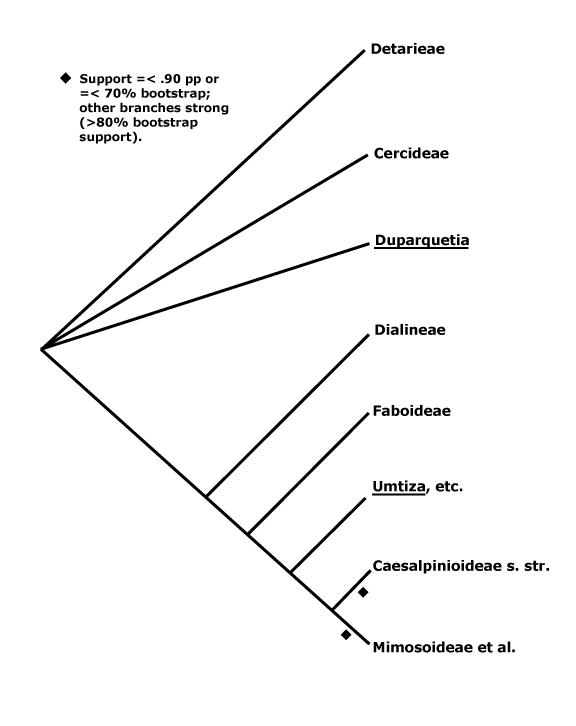

CORE EUDICOTS: flowers rather stereotyped:
5-merous, parts whorled, calyx and corolla distinct, stamens = 2x K/C, developing internally/adaxially to the corolla, (often numerous, but then usually fasciculate and/or centrifugal in development), pollen
tricolporate, G [5], [3] also common, compitum +,
placentation axile, style +, stigma not decurrent;
endosperm nuclear; fruit dry, dehiscent, loculicidal [when a capsule]. [Back to Index]
The age of the core eudicot clade has been suggested to be some 113 m.y. (Leebens-Mack et al. 2005, but see sampling), while Anderson et al. (2005) suggest a similar figure - stem group to 116 m.y. old, diversification by ca 109 m.y. before present. The oldest known eudicot fossil flower is from the Cretaceous-Cenomanian, 96-94 m.y.a. (Basinger & Dilcher 1984). For general information on core eudicot diversification, see Magallón et al. (1999); most of the estimates of percentage diversity of clades are taken from this work. The diversification rates of many of the clades are higher than those in other angiosperms (Magallón & Sanderson 2001).
It is difficult to see floral development of Berberidopsis corallina as being a real "link" in the evolution of the flower of core eudicots (c.f. Ronse De Craene (2004, 2007), not least because it would entail such evolutionary scenarios as the separate origin of such a flower in Aextoxicon AND and also the paraphyly of the order or even family. However, flowers of many core eudicots are very distinctive, as is indicated by the characterisation above. Sepals usually have three traces and petals have one, although there is considerable discussion as to the distinction between and evolution of sepals and petals (see Ronse de Craene 2008 and references). Taxa that have flowers with many stamens are scattered throughout the core eudicots. A number of these
taxa initially have only five or ten
primordia, in the former case, the primordia usually arise opposite the petals, rather than alternating with them. Numerous individual stamens then develop from these few initial primordia, and development is often centrifugal (c.f. esp. magnoliids and the ANITA grade). At maturity, the stamens themselves may be more or less connate
or in fascicles (especially Corner 1946b; Weberling 1989; Leins 2000 and references; Prenner et al. 2008). However, there may be considerable variation in staminal development between closely related multistaminate taxa (e.g. Hufford 1990; Ge et al. 2007). Chase (2005) noted that in Santalales some floral parts, particularly stamens, might have several whorls, and this perhaps suggested that canalisation of floral development was less than in some other core eudicots; whether Santalales really are different in this respect from other core eudicot groups remains to be established. Flowers with many stamens are much less common in the ASTERID I + ASTERID II clade (q.v. for discussion) and there polyandry appears to be of a rather different nature.
The occurrence of ellagic acid has a distribution similar to that of polyandry in the eudicots, i.e. including Ericales and Cornales in asterids,and the clades immediately basal to the asterids. Seed coats with a mechanical layer more than a single cell thick occur throughout BLAs, but again, seed coats of the ASTERID I + ASTERID II clade are rather different, usually being only one or two cells across.
This clade is strongly supported, e.g. Chase et al. (1993), D. Soltis et al. (12003a), and Nandi
et al. (1998). Relationships within core eudicots was for a long time unclear, there being a major basal polytomy, but recent work has clarified the situation. Thus in some studies Dilleniaceae are sister to Caryophyllales, but with only very moderate support; D. Soltis et al. (2003a) provides rather stronger (83% jacknife) support for this position (see also Soltis et al. 2007a). It is also possible that Caryophyllales + Dilleniales and Santalales form a clade (D. Soltis et al. 2000); Carlquist (2006) suggested that non-bordered perforation plates was a possible similarity between Santalales and Caryophyllales. Caryophyllales were linked with
with asterids in a large 18S ribosomal DNA analysis (Soltis et al. 1997), albeit
with only weak support (see also Hilu et al. 2003). In recent studies using whole chloroplast genomes (Jansen et al. 2006a, esp. 2006b; Hansen et al. 2007; Cai et al. 2007; Ruhlman et al. 2006; Jansen et al. 2007; Moore et al. 2007; Logacheva et al. 2008) support for this position is stronger, however, Berberidospidales, Dilleniales, Santalales and Saxifragales were not included. [Caryophyllales + Santalales] were sister to asterids in some analyses (e.g. Nickrent et al. 2005); in other analyses including a reduced sampling and two chloroplast genes Santalales and Dilleniales were also in the area, but also with little support (Zhu et al. 2007).
D. Soltis et al. (2003a) in a four-gene analysis suggested that Berberidopsidales are sister to the rest of the core eudicots, but there was only 54% jacknife support for this position. Santalales were associated with asterids, while Saxifragales and Vitales linked with [Dilleniales + Caryophyllales], but with still less support. Soltis et al. (2007a) found the relationships [Saxifragales [Vitales + rosids]], both groupings with 1.0 p.p. (see also Jansen et al. 2007; Moore et al. 2007). In the combined morphological and molecular study of Nandi et al. (1998) the position of Caryophyllales is uncertain, but
this is perhaps partly because the ovules of Rhabdodendraceae, there sister to all other Caryophyllales, were interpreted
as being unitegmic (see below for the position of Rhabdodendraceae within Caryophyllales).
There are, however, major changes afoot. There is some support for placing Crossosomatales as sister to the malvid group (Huerteales, Sapindales, etc.: see Zhu et al. 2007). As we have seen, earlier studies often suggested that Caryophyllales, and perhaps also Santalales and Berberidopsidales, as well as Dilleniales, were closer to the asterids than to any other clade in the polytomy. In a two-gene study focussing of early-diverging eudicots, all these taxa grouped in a pectinate fashion with the asterids, although support was low (Hilu et al. 2008). In their 12-gene study of the rosids, Wang et al. (2008) found Berberidopsidales did not group with rosids, but was sister to a clade made up of the few Caryophyllales and asterids included. Moore et al. (2008) in a preliminary analysis of whole-chloroplast genome data, suggested that most members of the basal polytomy could be placed as a series of pectinate branches immediately basal to the asterids (see Santalales). This is consistent with the relationships suggested two paragraphs above. The position of Dilleniales remains uncertain, as does the position of Saxifragales and Vitales with respect to rosids. Although there is strong support for the inclusion of these two in the same clade as rosids, support for [Vitales + rosids] is not strong (72% ML bootstrap: Wang et al. 2008).
All in all, a position of Vitales as sister to rosids seem probable (see that page for more details and characters), but, other than that, everything is somewhat up in the air. However, it is becoming increasingly likely that Caryophyllales are sister to asterids. Saxifragales may be sister to [Vitales = rosids]. The other clades involved include asterids, Dilleniales, Crossosomatales, Berberidopsidales, and Santalales - although Santalales may be sister to [Caryophyllales + asterids].
Secondary
veins proceeding straight to the teeth; A many; G separate; fruit a follicle, seed arillate;
endotesta ± palisade, lignified, exotegmen usu. tracheidal. - 1 family, 10 genera, 300 species.
Relationships between Dilleniales and Caryophyllales have quite often been suggested (e.g. D. Soltis et al. 2003a; Soltis et al. 2007a). Horne (2006) lists a number of features suggesting a relationship between Dilleniaceae and Rhabdodendraceae, in some analyses sister to the rest of Caryophyllales; some of these are features (?synapomorphies?) of [Dilleniales + Caryophyllales], and the status of the others depends on an improved resolution of relationships. Indeed, recent work suggests that Rhabdodendraceae are sister to the core Caryophyllales and immediately associated families rather than sister to all Caryophyllales (Drysdale et al. 2007; Brockington et al. 2007), while Caryophyllales themselves are sister to asterids (e.g. Hansen et al. 2007; Jansen et al. 2007; Logacheva et al. 2008). The Caryophyllales are moved there in this account. If Dilleniales and Caryophyllales are sister taxa, they have the following characters in common: successive cambia; wood with SiO2 bodies; nodes 3 or more:3 or more;
K persistent in fruit.
DILLENIACEAE Salisbury - C crumpled in bud; A and K persistent in fruit. - 10/300. Tropical and warm temperate.
Dilleniaceae are recognisable by the often strong and
parallel secondary veins that proceed straight into the teeth; scalariform
tertiary venation is common, and the lamina is often rough; the leaves tend to
elongate when they are still rolled up. The bark is often rich brown. The pedicels are jointed near the apex and persist after the flower
falls off; the flowers themselves are often conspicuous and have crumpled
petals and numerous stamens that are reflexed in bud and often have porose
anthers. The fruits are shiny follicles
containing arillate seeds; the calyx is persistent, sometimes accrescent, and the filaments are also persistent.
Hibbertia, with some 115 species, is very variably both vegetatively and florally. Some taxa have very much reduced leaves and winged, photosynthetic stems, and stamen number varies from one to well over 150.
Relationships in the family are [Tetracera (lianes) [Doliocarpus, Davilla, etc. (peltate stigma) [Dillenia (amplexicaul petiole) + Hibbertia]]] (Horn 2002).
For information, see Horn (2006), but 4 subfamilies for 10 genera seems a bit excessive.
Ellagic acid +; anthers sagittate, basifixed, with basal pit, ?pollen,
carpels free, at least apically, stigmas decurrent; fruit dry; seeds ± exotestal; endosperm type?, embryo size? - 16 families, 112 genera, 2470 species.
Saxifragales contain ca 1.3% of eudicot diversity. However, they have a very poor representation in the tropics in general and neotropics in particular, which makes the recent inclusion of the small tropical family, Peridiscaceae (see below), the more notable. Recently Jian et al. (2008) estimated the age of the crown group Saxifragales as being some 103-83 m.y. m.y. before present (see also Hermsen et al. 2006b), with subsequent early diversification perhaps occurring over a period as short as 3-6 m.y. (Fishbein et al. 2001; Fishbein & Soltis 2004).
Despite appearances, the floral apex in nearly all taxa studied is
flat or concave (Fishbein et al. 2000; Soltis et al. 2005b and references).
The clade is suggested in molecular
phylogenies (e.g. D. Soltis et al. 1997; D. Soltis & P. Soltis 1997). Peridiscaceae had been placed in Malpighiales by Savolainen et al. (2000a: see A.P.G. 2003), but quite recently Davis and Chase (2004; see also Soltis et al. 2007b) found that the family was properly to be placed here. Apart from the Crassulaceae/Saxifragaceae clade, relationships within Saxifragales remain uncertain, and it has been suggested that they rapidly diversified into several clades, representing a rapid, ancient radiation (Fishbein et al. 2001; c.f. Fishbein & Soltis 2004). Despite the addition of more data, Jian et al. (2006) still found it difficult to resolve relationships between the woody members, although it appeared that Peridiscaceae might be sister to the rest of the order, and Paeoniaceae sister to the [Crassulaceae + Saxifragaceae] clade. Soltis et al. (2007b) were also unable to recover stable relationships among the woody Saxifragales (see also the morphological and molecular study by Hermsen et al. 2006b).
Jian et al. (2008), using a variety of large data sets (some with over 50,000 bp) and analyeses, have been able to find strong maximum likelihood and Bayesiam support for the topology used here, although Paeonia in particular moved around the tree in some parsimony analyses. Some molecular analyses have placed the holoparasitic Cynomoriaceae in Saxifragales, perhaps in the Crassulaceae area (Nickrent 2002; Nickrent et al. 2005); a position in Saxifragales is provisionally adopted here. Balanophoraceae, with which Cynomoriaceae were linked in the past, are included in Santalales.
Saxifragales includes Hamamelidaceae, a
group classically linking the Englerian Amentiferae (usually dioecious or
monoecious woody plants with an ament, or catkin, made up of small flowers) that have
sometimes been thought to be primitive, to "dicots" with more conventional flowers. However, Hamamelidae are
now in several bits, of which one is here - see also Fagales, which constitutes the major part of the Amentiferae, Malpighiales
(Salicaceae), Rosales (Urticaceae and relatives - the old Urticales), etc. (Qiu et al. 1998a). Many of the woody taxa that used to be included in or near
Saxifragaceae s.l. are now spread widely through both rosids and asterids (e.g. Morgan
& Soltis 1993), as is discussed further under Saxifragaceae.
For information on the hamamelids as it was
beginning to be realised that they might have to be split, see Crane and
Blackmore (1989); for
pollen, see Hideux and Ferguson (1976) and Zavada and Dilcher (1986); for floral
anatomy and morphology, see Bensel and Palser (1975a-d), Hufford and
Endress (1989), Drinnan et al. (1995), and Fishbein et al. (2000); for chemistry, see
Giannasi (1986), and Jay (1971); for anatomy, see Watari (1939), and Cutler
and Gregory (1998); for seed coat, see Krach (1976); and for general morphology, see Hermsen et al. (2006b).
PERIDISCACEAE Kuhlmann - Leaves entire; G 1-locular, with 6-8 pendulous apical ovules; seed 1, large, coat "tanniniferous", walls thin, ± collapsed; endosperm copious, cell walls thick, pitted; embryo small. - 3/9. South
America, tropical W. Africa.
Peridiscaceae are tropical trees with entire, stipulate leaves. The racemose inflorescences have small flowers, and the gynoecium has a central column and apical ovules; the style or styles are short. The capsular fruit has a single, large seed with a dark-colored but not very hard coat; the embryo is very small and embedded in cartilagineous endosperm.
Peridiscaceae are a very poorly known and superficially heterogeneous group. However, the basic seed morphology/anatomy of Soyauxia and Peridiscus, from either side of the Atlantic, are almost identical, although the two are vegetatively very different (Peridiscus is sometimes even identified as Menispermaceae). Peridiscus and Whittonia have monothecal anthers, probably derived within the family.
See Soltis et al. (2007b) for general information.
[Paeoniaceae [Altingiaceae [Hamamelidaceae [Cercidiphyllaceae + Daphniphyllaceae]]]] [[Crassulaceae [Aphanopetalaceae [Tetracarpaeaceae [Haloragaceae + Penthoraceae]]]]
[[Iteaceae + Pterostemonaceae] [Grossulariaceae + Saxifragaceae]]]: floral apex flat-concave early in development [G often (semi-)inferior].
PAEONIACEAE Rafinesque - Leaves ternately compound; flowers large; P spiral, stamens many; testa fleshy,
vascularized, exotestal cells palisade, variously thickened, the hypodermis
palisade, ± lignified; early embryo coenocytic, embryo minute. - 1/33. N. Temperate,
especially East Asia.
Paeoniaceae are perennial herbs or shrublets that are
recognisable by their rather large, ± ternately compound, exstipulate leaves,
and large flowers. The latter have
sepals, petals, numerous centrifugal stamens, a prominent disc, and separate
carpels. The fruit is a follicle and
the seeds are fleshy.
Evolution. For the evolution and biogeography of the genus, see Sang et al. (1997). The disc apparently does not secrete nectar (Tamura 2006). The testa is thick, fleshy and colored, and in some species its black colour contrasts strikingly with that of the red testa of the partly developed and unfertilized seeds when the follicle opens. The funicle is also fleshy.
Paeoniales were included in
Ranunculidae (Takhtajan 1997), and a relationship between Paeoniaceae and
Ranunculaceae in particular is often suggested (Mabberley [1997] included Glaucidium
[see Ranunculaceae] in Paeoniaceae; see also Takhtajan 1997) because of gross floral similarities between the two. However,
they differ in the nature of the petals and nectaries, the development of
the androecium, numerous embryological features, etc. (e.g. Tiagi 1970). Dilleniales, in which
Paeoniaceae were placed by Cronquist (1981; see Corner 1946), also have multistaminate and
centrifugal androecia, but differ in gynoecial development, nectary morphology, etc.
For general information, see Tamura (2006); Tiagi (1970) and Takhtajan
(1988) provide much information on ovules and seeds.
Hufford and Endress (1989) discuss anather morphology and anatomy in detail; members of this clade can have obviously valvate anthers, as in Hamamelidoideae, or the stomium may simply divide at the two ends, or at least at the base of the anther. There are a number of reports of delayed fertilization from members of all four families, but not in Paeonia; Peridiscaceae are unknown (Sogo & Tobe 2006d for references).
ALTINGIACEAE Horaninow - Iridoids +; secretory canals with aromatic contents; stipules petiolar; inflorescence ± capitate; staminate flowers: pollen polyporate; carpellate flowers: intercarpellary protrusions, etc., present [representing sterile flowers]; seed ?exotegmic. - 1/13. E.
Mediterranean, East Asia to Malesia, Central America.
Altingiaceae are monoecious, deciduous trees that may
be recognised by their spirally-arranged, usually palmately-lobed leaves with petiolar stipules
and by their capitate inflorescences. The buds have scales.
The fossil Microaltingia (ca 90 m.y. before present) has tricolpate pollen grains, a more or less superior ovary, ovaries with eight or more ovules per carpel, and perhaps unwinged seeds; it may have been pollinated by insects (Zhou et al. 2001). Ickert-Bond and Wen (2006) give dates for divergence of clades within Altingiaceae; the basal split in the family is between the European + American and East Asian clades, dated somewhere between 19.5 and 54 m.y. before present...
For the interpretation of the knobs, etc., surrounding the carpellate flowers, see Ickert-Bond et al. (2005 and references). The testa is notably thinner than that of most Hamamelidaceae. Ickert-Bond et al. (2005) suggest that in Liquidambar the exotegmen "constitutes most of the seed coat", although it is absent in most Hamamelidaceae, a point also made by others (e.g. Rao 1974). This is not immediately evident in the sections presented (e.g. Fig. 9, G-J) nor in Melikian (1973), but if confirmed (e.g. see Ickert-Bond et al. 2007) it will indeed be a sharp difference to the mesotestal seeds of most Hamamelidaceae.
See Shi et al. (2001) for a molecular phylogeny of Altingiaceae; there is substantial conflict between morphological and molecular phylogenies (Ickert-Bond et al. 2005, 2007).
For information about Hamamelidaceae s.l., see Bogle (1986: floral morphology, etc.),
Ferguson (1989: general, esp. fossils), Melikian (1973: seed coat anatomy), Zavada and Dilcher (1986: pollen), and Endress
(1993: general).
HAMAMELIDACEAE R. Brown - Hairs stellate; C ribbon-like, adaxially circinate. - 27/82. Tropical to
temperate, esp. East Asia to Australia, not South America.
1. Exbucklandoideae Harms - Inflorescence capitate. - 3/4-14. East Asia, to Assam, East Malesia, to Sumatra.
2. Disanthoideae Harms - Anthers with longitudinal slits. - 1/1: Disanthus cercidifolius. E. China, Japan.
3. Hamamelidoideae Harms - Leaves with lateral veins going straight to teeth [craspedodromous venation]; anthers with flaps, 1 fertile ovule/carpel; fruit with ballistic dispersal of seeds. - 23/78. Tropical to
temperate, esp. East Asia to Australia, not South America.
Hamamelidaceae may be recognised by their often
stellate or tufted hairs, their strongly stipulate leaves which often have ±
palmate venation, their smallish flowers borne in rather dense inflorescences,
and their bivalved, loculicidal and septicidal capsules with rather large seeds
that have a hard, shiny, bicolored testa. The seed are sometimes forcibly ejected. The bases of the branches are often swollen.
The fossil Microaltingia (Altingiaceae) is ca 90 m.y. old (Zhou et al. 2001), and if Hamamelidaceae are close to Altingiaceae, this also gives a minimum age for Hamamelidaceae. Allonia decandra, a fossil probably to be included with Hamamelidoideae-Loropetalinae, was collected from the Campanian ca 84.5 m.y.a. in the eastern U.S.A., it has twice as many
stamens as petals and a lobed disc adaxial to them (Magallón-Puebla et al.
1996); the seeds are rather angled, so there may have been more than one per loculus and so more than one ovule per carpel.
There is considerable variation in floral morphology. Corylopsis has rather ordinary-looking flowers with obovate petals, although they are probably derived; the basic condition for the family is to have narrow petals that are adaxially coiled in bud. In Parrotiopsis there are showy inflorescence bracts, and these are bright red in Rhodoleia, where the whole inflorescence is very like the flower of, say, Calycanthaceae. Petals may be lost, and in Fothergilla the inflorescence is made conspicuous by the plump and showy white filaments. Eustigma has quite long styluli and massive, purplish stigmas, the most conspicuous parts of the flower. Fertilization in Hamamelidaceae is often much delayed.
Buds with one bud scale and
branches with one prophyll at the very base are common in temperate genera of Hamamelidoideae.
Exbucklandioideae in the circumscription adopted here were apparent only in the analysis of ITS data and good sampling (75% bootstrap, better if gaps scored as a fifth character state: Li et al. 1999b; c.f. Shi et al. 1998); the three genera that it contains have in the past all been placed in separate subfamilies. With rbcL data, Mytilaria alone was rather weakly supported as sister to [Disanthoideae + Hamamelidoideae] (Li et al. 1999a). Within Hamamelidoideae [Corylopsidae (monotypic) + Loropetaleae (weak support)] were sister to the rest, but tribal interrelationships had for the most part only weak support (Li & Bogle 2001).
For more information, see Endress
(1970, 1993: general), Rao (1974: seed anatomy), Li and Bogle (2001: classification of Hamamelidoideae), and Magállon et al. (2001 and references: fossils).
CERCIDIPHYLLACEAE Engler - Prophyll single, adaxial; leaves [of long shoot] opposite, stipule adaxial-petiolar; inflorescence capitate, flower a pseudanthium, bracteoles 0; P 0, carpellate flowers: G 1, suture abaxial, stigma long-decurrent; seeds winged. - 1/2. China and
Japan.
Cercidiphyllaceae are deciduous trees that may be recognised by the sharp
distinction between the very long-lived short shoots and the long shoots; the
leaves are more or less opposite, stipulate, and with palmate venation. The plant is dioecious, and what appear to be flowers lack a perianth; staminate flowers have several stamens and carpellate flowers have 2-8 carpels with long, decurrent stigmas. The
fruits are follicles.
Palaeocene fossils (Joffrea) have 2-carpellate flowers borne on an elongated axis
with the adaxial sutures of the carpels facing each other (Crane & Stockey
1985). The "flowers" of today's species are best interpreted as pseudanthia, indeed, the carpels are sometimes slightly separated from one another on the stout green axis that seems to be the pedicel but is really the inflorescence axis. Both individual carpels and groups of stamens are subtended by bracts and are more or less decussately arranged.
For general information, see Endress
(1993).
DAPHNIPHYLLACEAE Müller Argoviensis - Iridoids +; leaves entire, venation pinnate, stipules 0; flowers pedicellate; staminate flower: filament with three traces. - 1/10. East Asia to
Malesia.
Daphniphyllaceae are evergreen trees or shrubs that may be recognised by their rather weakly
pseudoverticillate, exstipulate, entire leaves which are often glaucous
beneath; the petioles of the leaves of a single innovation often vary considerably in length. The subcorymbose, racemose inflorescence with its small flowers with
at most inconspicuous perianth is also distinctive.
Evolution. Some epiplemine Uraniidae (moths) have caterpillars that eat Daphniphyllaceae - and assorted asterids - probably because of the iridoids they have in common (Lees & Smith 1991).
Chemistry, Morphology, etc. The flowers may be secondarily superior (D. Soltis et al. 2003b).
For information on flower, fruit and embryology, see
Bhatnagar and Kapil (1982) and for general information, see Kubitzki (2006b).
Previous Relationships. The dioecious Balanopaceae (see Malpighiales), also with much-reduced flowers, were included in a bigeneric
Daphniphyllanae (Takhtajan 1997). Because of the reduction of the flowers, Daphniphyllaceae have been difficult to place, sometimes being associated with Euphorbiaceae, etc.
CRASSULACEAE Jaume Saint-Hilaire - ± herbaceous leaf succulents; anthocyanin in the roots; CAM metabolism; sedoheptulose as sugar reserve; sieve tube plastids lacking starch grains; wood rays 0; lamina with hydathodes; carpels free, the same number as petals, nectariferous scales or flaps at the base of each carpel; endosperm chalazal haustorium +, embryo long, basal cell of suspensor with mycelium-like haustorial branches. - 34/1370. ± Cosmopolitan, esp. the Cape region and Mexico, but few in S. South America and Australia, not in Polynesia, frequently in drier regions.
1. Crassuloideae Burnett - Leaves opposite, with several marginal or surficial hydathodes; stamens =
K, ovules tenuinucellate; follicles releasing seeds through apical pore; exotesta with sinuous anticlinal walls, unipapillate. - 2/196: Crassula (195). Southern Africa to S.W. Arabia, "Tillaea" more or less world-wide, the only representative of the family in Australia.
Kalanchoideae + Sempervivoideae: lamina with (sub)apical hydathode; seeds longitudinally ridged.
2. Kalanchoideae A. Berger - Plant ± woody; bufadienolides +; crystal sand +; C connate, anther with spherical connective prolongation; seeds 4-6-ridged. - 4/200: Kalanchoe (145), Tylecodon (46). Old World, especially the Karoo in southern Africa, but extends to South East Asia and Malesia, not Australasia.
Crassulaceae are recognisable by their succulent
herbaceous or soft-stemmed habit, and their flowers, which have the same number
of sepals, petals and carpels; the latter are more or less free and have
nectariferous scales at their bases. The fruits are usually follicles.
Crassulacean acid metabolism (CAM) is common throughout the family (e.g. references in Winter & Smith 1996a). Aeonium, a largely Macaronesian genus with the most endemic species on the archipelago, has striking growth forms each of which seems to have evolved just once (Mes & t'Hart 1996). Some species of Kalanchoe produce plantlets, foliar embryos (Yarborough 1932), in notches at the margin of the leaf blade. Both embryogenetic and organogenetic pathways have been coopted, and the young plantlets have cotyledon-like first leaves; species in which plantlets are produced without the plant being damaged do not produce viable seed (Garcês et al. 2007).
All ca 200 species of the Echeveria group (Sempervivoideae) appear to be interfertile, a remarkable situation apparently without parallel in flowering plants (Uhl 1992). There have been several origins of sympetaly in Sedoideae ('t Hart et al. 1999); both it and epipetaly tend to be weak. The increase in numbers of flower parts in some Sedoideae - some have a multistaminate androecium - is in the context of an increased merousness of the whole flower; the relation between the number of parts of each whorl is unchanged from that of a basic core eudicot flower (see also the ASTERID I + ASTERID II clade), i.e. K = C = G; A = 2x C.
The distinctive wood, which lacks rays and has very short vessel elements with annular and helical thickening, is probably paedomorphic (t'Hart & Koek-Noorman 1989). Plant chemistry, in particular the presence of hydrolyzable tannins and the absence of non-hydrolyzable tannins, as in other woody Saxifragales, is consistent with this idea (Thiede & Eggli 2006).
The basic phylogenetic structure of the family now seems fairly well established (e.g. van Ham 1995; van Ham & 't Hart 1998; Mort et al. 2001; Mayuzumi & Ohba 2004). The rather highly derived Crassuloideae are sister to the rest of the family, while Kalanchoe and relatives (Kalanchoideae) are sister to Sempervivoideae (e.g. Mort et al. 2001; Mort 2002; Thiede & Eggli 2006). For the phylogeny of Kalanchoe and variation of CAM within it, see Gehrig et al. (2001) and Kluge and Brulfert (1996). Generic limits are unclear, and
many genera, some previously placed in what were considered to be different subfamilies, e.g. Sedoideae
and Echeverioideae, hybridise (e.g. Uhl 1976; 't Hart et al. 1999). Within Sempervivoideae, Sedum occurs in five of the seven main
clades apparent in phylogenetic analyses (van Ham 1995; van Ham & 't Hart 1998; Mayuzumi & Ohba 2004); Graptopetalum is also very difficult (Acevedo-Rosas et al. 2004). Thiede and Eggli (2006) provide a guide through the generic chaos; note that they prefer to retain a paraphyletic Sedum.
For information, see Subramanyam (1970: embryology), Krach (1976: anthocyanin in the roots), Stevens (1995: chemistry), Gregory (1998: anatomy), Mort et al. (2001: base chromosome numbers), Eggli (2003: enumeration of species), and in particular Thiede and Eggli (2006: general).
APHANOPETALACEAE Doweld - C 0, pollen with rugulate-stellate surface, one apical ovule/carpel; fruit a one-seeded nut, calyx enlarged, spreading. - 1/2. W. and E. Australia.
Aphanopetalaceae are scrambling shrubs with prominently lenticellate stems, opposite and more or less serrate leaves with minute "stipules", and axillary inflorescences. The flowers are apetalous and have a spreading calyx that enlarges in fruit; the fruit itself has a single seed.
For information, see Jensen (1968: vascular system), Bensel
and Palser (1975b: floral anatomy), Dickison (1980b: nodal anatomy), Dickison et al. (1994: anatomy) and Kubitzki (2006b: general).
Although combination of these three rather small families is an option in A.P.G. II (2003), there seem to be few or no morphological features holding them together.
PENTHORACEAE Britton - Fruits circumscissile at the base of the free portion of each carpel. - 1/1-3. East and
South East Asia, E. North America.
Penthoraceae are rather fleshy herbs with spiral, entire leaves. They may be recognised by their
few-branched, monochasial cymose inflorescence, and often apetalous flowers with
partly connate carpels with submarginal styluli. The fruits are distinctive since the free part of each carpel splits circumscissilely at the base.
Although stem group Penthoraceae have been dated to 77-69 m.y. before present (Wikström et al. 2001), the E. North American/East Asian disjunction is dated to 6.5-2.4 m.y. before present (Thiede 2006 for references).
There is a much-enlarged but non-dividing micropylar cell in the embryo suspensor
- c.f. Haloragaceae and their haustorial suspensor.
See Haskins and Hayden (1987: anatomy), Gornall (1998: as Saxifragaceae) and Thiede (2006: general)
for information.
HALORAGACEAE R. Brown - Plant monoecious; 1(-2) apical ovules/carpel, styles with swollen bases, stigmas penicillate; fruit nut-like; haustorial embryo suspensor +. - 8/145. World-wide, especially Australia.
Haloragaceae are rather small, usually monoecious, often more or less
herbaceous plants. Their leaves are
serrate or deeply lobed, small, and often opposite or whorled, and their flowers are small (Haloragodendron is an exception) and have
penicillate stigmas.
Hernández-Castillo and Cevallos-Ferriz (1999)
suggest that the fossil Tarahumara sophiae that was found in Mexico in deposits laid down ca 70 m.y. before present had carpels free from one another but
adnate to a hypanthial wall, while its fruit is described as being drupe-like, so its morphology is unlike that of any extant member of the family.
See Moody and Les (2007, note that nuclear ITS was in some conflict with chloroplast genes) for relationships within the family, which may have an Australian origin. The woody [Glischrocaryon + Haloragodendron] clade is sister to other Haloragaceae (the monophyly of the two genera themselves is not certain). Although much of the rest of the family forms a clade relationships within it are uncertain, Meionectes and Proserpinaca in particular not having a definite position (Moody & Les 2007). The trimerous Trihaloragis is sister to all other members of this clade, and Moody and Les (2007) point out the extensive variation in floral merism in the family; strictly trimerous flowers are very uncommon indeed in the eudicots.
The monotypic Haloragales were placed near Saxifragales by Takhtajan (1997). Historically Gunneraceae and Haloragaceae have been associated, although their pollen is quite different (e.g. Praglowski 1970), the perianth of Gunneraceae is not differentiated into two whorls of sepals and petals, etc.; for the former, see Gunnerales.
For information, see also Orchard and
Keighery (1993: Meziella), Orchard (1975: Antipodean taxa, inc. floral anatomy, etc.), and Kubitzki (2006b: general).
Fossils assignable to this clade are ca 90 m.y. old (Crepet et al. 2004 for references).
Combination of the two families is optional (as Iteaceae s.l.), see A.P.G. II. For their chemistry, see Bohm et al.
(1999).
ITEACEAE J. Agardh - Pith chambered; pollen bilateral, 2-porate. - 2/18. South East
Asia to W. Malesia, E. North America, E. and S. Africa.
Iteaceae may be recognised by their stems with
chambered pith, spirally-arranged serrate leaves with superposed axillary buds,
paniculate to racemose inflorescences with rather small flowers, and
septicidal fruits the valves of which often remain attached by the stigma. The flowers have a hypanthium, the corolla
is valvate, and there are only two carpels.
The distinctive pollen is
known fossil in Europe. The fossil Divisestylus, from the late Cretaceous some 90 m.y. before present, has five stamens opposite the sepals and ovaries and stigmas fused, but there are separate styluli (Hermsen et al. 2003).
For
information, see Bensel and Palser (1975b: floral anatomy), Gornall et al.
(1998: general), Ge et al. (2002: floral development) and Kubitzki (2006b: general).
Pterostemonaceae look rather like Rosaceae, both being
woody and having spiral, serrate, stipulate leaves, although the leaf blades of Pterostemonaceae tend to be notably shiny. However, the distinctive conical to peltate glandular hairs, the exudate of which produces the shiny leaf surface, and the flowers, each with a whorl of five stamens that have winged and toothed filaments and a whorl of five staminodes, allow the
family to be recognised.
For information,
see Wilkinson (1994, 1998: anatomy) and especially Kubitzki (2006b), but the family is not well
known.
GROSSULARIACEAE de Candolle - C small, pollen 5-15-porate, ovary inferior, placentation parietal, style single, long; fruit baccate;
seeds hard, arillate, exotestal cells palisade, mucilaginous. - 1/150. Temperate N. hemisphere, also along the Andes.
Grossulariaceae may be recognised by their lobed,
spiral leaves with broad bases, and flowers with a well-developed hypanthium, relatively large and colored sepals and smaller petals, a usually bicarpellate
gynoecium, and parietal placentation; the fruit is baccate.
The fruits of Ribes are an important food for Andean frugivorous birds. A number of fungi, including the white pine blister rust (the basidiomycete Cronartium ribicola), spend part of their life cycles on the plants of this genus; in parts of North America largely unsucessful attempts have been made to eradicate Ribes so as to disrupt the life cycle of this damaging fungus. Several species of insects have been recorded as eating species of Ribes (Weigend 2006)..
See Weigend et al. (2002) and Senters and Soltis (2003) for phylogenies of Ribes.
For information, see Cutler and Gregory (1998: anatomy) and Weigend (2006: general).
SAXIFRAGACEAE Jussieu - Herbs. - Ca 33/540. Mostly N. temperate and Arctic (S. temperate, tropical mountains).
1. Saxifraga s. str. - 1/370. Mostly Arctic and tropical montane.
2. The Rest - Ca 32/170: Micranthes (70), Chrysosplenium (55), Heuchera (35). Mostly N. temperate (tropical montane and Arctic).
Saxifragaceae can be recognised by their herbaceous
habit and gland-toothed leaves; stipules, when present, are often on the petiole
near the base. The flowers often have
2-3 carpels that are basally connate, although the styluli are clearly free, a disc is common, and the fruit is a
follicle or septicidal capsule.
Short-cycle Puccinia
rusts are frequently found on Saxifragaceae s. str. (Savile 1979a, b). The moth Greya (Prodoxidae), related to Tegeticula, of yucca moth fame, is both a seed predator and pollinator of some Saxifragaceae (Segraves & Thompson 1999), and it has even been suggested that the general lability of ovary position in the family is the result pf selection by such pollinators (Soltis & Hufford 2002); protected, i.e. inferior, ovaries will be favoured. Mitella (and a few other Saxifragaceae) are very largely pollinated by fungus gnats, and this association seems to have evolved in parallel (Okuyama et al. 2008). Flowers pollinated by fungus gnats are often more or less broadly saucer-shaped and the petals have very narrow lobes. The seeds of a number of forest-dwelling Saxifragaceae are dispersed by rain, whether by a splash cup mechanism, as in Mitella, or by the seeds being thrown from the fruit as it moves violently after being hit by a drop of water.
Saxifragaceae can be confused with
Rosaceae (Astilbe [Saxifragaceae] and Aruncus [Rosaceae - Rosales] are
particularly similar), however, the carpels of former are usually two and basally connate rather than several to many and free, and they have five or ten rather than fifteen to many stamens. The two families are not close.
Over 50 vascular bundles may enter
the petiole base in some taxa. Hydathodes on the leaves are common. In at least some species of Saxifraga,
and in Astilbe and Rodgersia, the two carpels are oblique, but in
the latter two this is associated with inverted floral orientation, the odd (median) sepal
being abaxial. Variation in ovary position within the family is extreme, even occurring within genera and between the different morphs of heterostylous flowers (e.g. Kuzoff et al. 2001; Soltis & Hufford 2002).
Introgressive
hybridisation is extensive and there are various combinations of chloroplast
and nuclear genomes, for example, the chloroplast genome of Tellima is also found in Mitella
(e.g. Soltis et al. 1993).
Phylogeny. There are two major clades in Saxifragaceae, Saxifraga s. str., largely arctic-alpine, and the Heuchera clade, the rest of the family and predominantly temperate in distribution. Members of the latter clade contain the bulk of the floral variation in the family (Soltis et al. 2001), and generic limits are unclear (Soltis et al. 1996, and refs.; Okuyama et al. 2008). McGregor (2008) provides a useful and well-illustrated summary of the ornamentally important Heuchera and Saxifraga.
In the past, genera "intermediate"
between the variable Saxifragaceae and other families tended to be included in Saxifragaceae. This was because the inclusion of more odd genera in that family would have
little effect on the family description since there was already so much variation. However, if placed in Crassulaceae, for example,
they would greatly affect the description of that family and hence make it less
discrete. Many woody,
tenuinucellate and unitegmic members in particular that used to be included in Saxifragaceae have turned out to be entirely unrelated either to other members of that family or to each other. Of Saxifragaceae in the old and broad sense, Escallonia (unplaced asterid II), Hydrangea and relatives (Cornales) and many other woody taxa are asterids, while Parnassia is
Parnassiaceae-Celastrales and Brexia in Celastraceae (a conclusion in agreement with data from floral anatomy - e.g. Bensel & Palser 1975a, d). A division between Saxifragaceae + Grossulariaceae, with their petals that remain very small for quite some time during development, and Hydrangeaceae, with their relatively larger and faster-developing petals (as is common is asterids) and septicidal capsules, was also evident (Gelius 1967). Most iridoid-negative, herbaceous and/or bitegmic and crassinucellate
members of Saxifragaceae remain here. Ironically, two families of Saxifragales as currently circumscribed, Daphniphyllaceae and Altingiaceae, are reported to have iridoids, the only families outside asterids reliably reported to have these compounds. Note also that the
unitegmic Darmera is properly to be
retained in Saxifragaceae (Gornall 1989); it used to be included in Saxifraga, but it has a scapose inflorescence while Saxifraga s. str. has an inflorescence axis with bracts.
For general
information, see Morf (1950) and Spongberg (1972), vegetative anatomy, Gornall (1998), and floral anatomy, Bensel & Palser (1975b).
CYNOMORIACEAE Lindley - Echlorophyllous root
parasite; plant monoecious; staminate flowers: A 1,
adnate to P, nectary-stylodium +; carpellate flowers: G 1,
inferior, 1 pendulous straight tenuinucellate unitegmic ovule, style long; fruit a nut; testa ca 7
cells across, persistent, cells little thickened; endosperm copious, embryo undifferentiated. - 1/2. Mediterranean
to C. Asia.
The host is often a member of Cistaceae or Amaranthaceae in the Mediterranean, elsewhere Amaranthaceae, Tamaricaceae, Nitrariaceae, etc., are hosts (Jäger at al. 1985).
Cynomoriaceae have usually been included in Balanophoraceae
or Balanophoranae (e.g. Cronquist 1968; Takhtajan 1997).
For details of seed anatomy, see
Takhtajan (2000), for morphology, see Weddell (1860), for ovule, etc., see Teryokhin et al. (1975).
For the possible palaeohexaploidy of Vitales, see Jaillon, Eury et al. (2007). If this is a feature of rosids as a whole, then by the time one gets to genera like Brassica and Arabidopsis, the genome will have duplicated many, many times... However, it has more recently been suggested that there has been gene duplication, possibly because of hybridization, in the Vitis lineage itself, bringing the whole Vitis genome more into line with that of other rosids (Velasco et al. 2007).
Within rosids, the relationships of the major clades are uncertain. [Myrtales + Geraniales], a clade with weak support, were found to be sister to rosid II clade, the combined clade having strong support (weaker using maximum parsimony) and in turn being strongly supported as sister to the [N-fixing clade + [Celastrales, Oxalidales, Malpighiales]] clade, albeit with sketchy sampling (Jansen et al. 2007). [to be elaborated]
Nodes 3-7:3-7; sieve tube plastids with protein crystalloids and starch;
raphide bundles +; pearl glands + [multicellular,
spherical gland with an apical stomium/pore]; leaves with glandular teeth; common stamen-petal primordia, stamens = and opposite petals,
2 ovules/carpel, style +, short; fruit a
berry; seeds ± ruminate, testa multiplicative,
exotesta fleshy, endotesta several-layered, lignified, crystalliferous,
exotegmen (crossed) tracheidal. - 1 family, 14 genera, 850 species
VITACEAE A.-L. de Jussieu - 14/850. Pantropical
and (warm) temperate.
1. Leeoideae Burmeister - Raphides barbed; stipules borne along petiole margin, sheathing; stamens adnate to corolla, connate, with a lobed tube, nectary disc 0; G [3 (4)], loculi divided. - 1/24. Most Indo-Malesian, few Africa and Madagascar.
Vitaceae may be recognised by their
stipulate leaves (the stipules soon fall off) with palmately compound, -lobed or -veined blades and often
rather coarse teeth, cymose inflorescences, and smallish flowers with valvate
petals. The stamens are equal in number
to and opposite the petals, the usually 4-ovulate, bicarpellate gynoecium has more or less sessile stigmas, and the berry often has ruminate
seeds (the raphe in the seed is flanked by a deep groove). The stems are often strongly
lenticellate, with the bark ultimately flaking, and the leaf blades are very
brittle when dry, the fine details of the venation being obscure. Leaf-opposed tendrils or inflorescences are
common in the family. Even individual seeds are distinctive, the endosperm being T-shaped in transverse section of the seed, the arms of the T often being downcurved.
Caterpillars of some lepidoptera are found on Vitaceae and Onagraceae alone (Forbes 1956) - and both contain raphides. The raphides of Vitis are bipartite, square in transverse section, and like an arrow-head in longitudinal section (Horner & Wagner 1995). Tetrastigma in West Malesia is the only host of the giant parasite Rafflesia (Rafflesiaceae, Malpighiales). Food bodies, often called pearl glands, are common on the surface of the plant. They are multicellular, with a multiseriate stalk, sometimes with a stoma on the swollen head, and the central parenchymatic cells accumulate oils and sugars (Pavia et al. 2009).
The tendrils are clearly stem structures, and some are replaced by inflorescences in fertile shoots; part tendril-part inflorescences are not uncommon (Calonje et al. 2002 for development). In some species not all leaves have axillary buds, and there has been discussion as to whether the inflorescence/tendril is an evicted terminal shoot, or not (Wilson et al. 2002, and references). In temperate Vitaceae there is pronounced vessel dimorphism while in tropical members of the family there are often distinctive vascular cambial structures and hence secondary thickening patterns.
There is considerable variation in nectary morphology in the family. It may quite envelop the ovary and form little projections on top, or form an annular structure around the base of the oovary, or it may be absent. Although Leea lacks an obvious nectary like that of Vitis, etc., developmental observations show that the lobes on the staminal tube of Leea are comparable to the nectary of Viticoideae (Gerrath et al. 1990).
Support values and relationships of the clades within Viticoideae other than the Cyphostemma-Cayratia-Tetrastigma clade are still rather uncertain (Soejima & Wen 2006) and generic limits need much attention, with e.g. species of Cissus occurring all over the tree (Rossetto et al. 2002; Wen et al. 2007).
For information, see Wheeler and LaPasha (1994: vascular anatomy), Shah (1959: nodal anatomy and stipules), Gerrath et al. (1998: phyllotaxis) and Chen and Manchester (2007: seed anatomy in extant and fossil taxa). For floral development, see Timmons et al. (2007 and references - Viticoideae) and Gerrath et al. (1990 - Leeoideae), and for a recent general survey, see Wen (2006, as Leeaceae and Vitaceae).
Wikström et al. (2001) suggest an age for Zygophyllales of some 101-95 my, and separation of the two families some 70-64 m.y. before present. Mycorrhizae may be absent from the whole clade.
Zygophyllaceae are sister to
Krameriaceae in Soltis et al. (1998) and Savolainen et al. (2000a), however,
relationships of Zygophyllales within rosids are unclear.
The inclusion of Krameriaceae in Zygophyllaceae is optional, although the two do not have much in common; see A.P.G. II (2003).
Carlquist (2005b) lists several features of wood anatomy that may be synapomorphies for the group.
KRAMERIACEAE Dumortier - Hemiparasitic; stipules 0; flowers monosymmetric; K petal-like internally, abaxial larger than
the others, (2) 3 adaxial petals clawed, ± connate, 2 abaxial smaller, not clawed,
glandular [often secreting lipid]; A (3) 4, anthers
porose; G [2], adaxial member much reduced, 2 collateral pendulous
ovules/carpel, stigma small, recessed; fruit a
nut with retrorsely barbed spines; seed 1, exotestal cells enlarged,
tanniniferous; cotyledons cordate/auriculate at the base; seedlings without root hairs. - 1/18. S.W. U.S.A. to
Chile, the West Indies.
Krameriaceae may be recognised by their small, spiral,
often elliptic, entire leaves and their distinctive, rather pea-like flowers. These are inverted, with the odd petal
adaxial, and have four or five large elliptic sepals that are petal-like
internally; the three strongly clawed adaxial petals are more or less connate
by their bases and the usually four fertile stamens are also adaxial. The one-seeded fruits have retrorsely-barbed
spines.
Bees (Centris) collect oil from the flowers on their legs from the paired, modified, abaxial petals; the latter have epithelial elaiophores (Vogel 1974; Simpson et al. 1977).
There are no vessels in the leaves. The roots have a red phlobaphene pigment. Simpson (1982, 2006) discussed the long controversy
over the orientation of the flower, however, the flowers do appear to be
inverted (c.f. also Milby 1971, see Fig. 73 in Simpson 2006).
See also
Leinfellner (1971: ovary), Verkeke (1985: ovule and seed), Carlquist (2005b: wood anatomy), Simpson et al. (2004: phylogeny) and Simpson (2006: general), see also The Parasitic Plant Collection.
ZYGOPHYLLACEAE R. Brown - Leaves opposite, compound, no terminal leaflet. - 22/285: Zygophyllum (100), Tribulus (25), Kallstroemia (17). Dry and warm temperate, also tropical.
Zygophyllaceae are a variable group growing in more or less arid and saline conditions almost worldwide. They are herbs to trees often with compound
usually stipulate and opposite leaves that lack a terminal leaflet; the nodes tend to be swollen. The flowers have all parts free apart from the carpels; there are usually
ten stamens that often have scales at the base. Some aspects of floral morphology, e.g. obdiplostemony, the stigma, are reminiscent of Geraniales.
Caterpillars of Lycaeninae are quite commonly found on plants of this family (Fielder 1995). Larrea tridentata, the creosote bush, is an important shrub of the deserts of S.W. North America; its is very drought tolerant indeed, being the only shrub in the deserts there. Fourteen species of a clade of the cecidomyiid gall former, Asphondylia, the creosote gall midge, have diversified on different parts of the plant of the one species of Larrea.
Although Zygophyllaceae are only a small family, they show much variation especially in vegetative features and in fruit. Balanites in particular is very different from
other Zygophyllaceae in both floral and vegetative features. It is a thorny shrub or tree with bitter bark; the stomata on the stem are transverse to the axis. Its leaves are spiral and
two-foliolate (the latter feature is quite common here). There is a single pendulous ovule per carpel and the fruit is a drupe with a single seed (Sheahan & Cutler 1993; see
also Parameswaran & Conrad 1982). Balanites also differs from other Zygophyllaceae in seed anatomy (Boesewinkel 1994). Howard (1970) found no
stipules in Balanites, but they are present, if minute.
Guaiacum has very hard, self-lubricating wood that was used to make bearings.
Phylogenetic relationships within the family are fairly well resolved; Sheahan and Chase (1996, also 2000), and can be summarized as [Morkellioideae + Tribuloideae] [Seetzenioideae [Larreoideae + Zygophylloideae]], however, there do not seem to be good characters for the groups. For relationships, morphology, and a reclassification of Zygophylloideae, see Beier et al. (2003); for the phylogeny of Fagonia, see Beier et al. (2004) and for relationships between Larrea and relatives, see Lia et al. (2001).
Some genera that used to be included in Zygophyllaceae are to be found in Nitrariaceae, in Sapindales.
See also Howard (1970: nodal anatomy), Sheahan (2006: general), and Muhaidat et al. (2007: C4 photosynthesis).
CELASTRALES [OXALIDALES + MALPIGHIALES] (the COM clade): seed exotegmic, cells fibrous.
A number of Malpighiales have a fibrous exotegmen similar to that of Oxalidales; in Celastrales a similar exotegmen is found in Lepidobotryaceae. the presence of paracytic stomata could also be a high-level character here; it depends on details of the topology of the tree.
This clade of three orders is often retrieved (e.g. P. Soltis et al. 1999: weak support), Zhang and Simmons (2006), etc.
LEPIDOBOTRYACEAE J. Léonard - Cristarque cells (sclereids with the lignin deposited in a U-shape and containing a druse) in bundle sheath; stomata paracytic; leaves two-ranked, blade articulated with petiole, entire, stipel
single, long; plant dioecious, inflorescences
terminal, congested; A 10, of two lengths, ± connate basally, anthers basifixed, nectary on inside of staminal tube, 2 apical
pachychalazal ovules/carpel; fruit a septicidal capsule, endocarp distinct,
columella persisting. - 2/2-3. E. Africa, Central and South America.
Lepidobotryaceae may be recognised by their entire and simple but
articulated leaves with both stipules and also stipels at the base of the blade. The inflorescence often seems to be opposite the leaves because it is evicted
by the growth of a robust axillary shoot. The flowers are small, with free sepals and petals and ten
basally-connate stamens; the antepetalous stamens have longer filaments than
the antesepalous whorl. The mesocarp,
with its distinctive ladder-like fibres arranged radially, separates from the
horny endocarp.
There is no evidence other than morphology (articulation, stipels) that the apparently simply leaves are really unifolioliate and are derived from compound leaves. The vascular pits of Ruptiliocarpon are vestured (Mennega 1993).
Ruptiliocarpon was described only in 1993.
For information, see Link (1991a: nectaries of Lepidobotrys), Hammel and Zamora (1993: general), Tobe and Hammel (1993: flower and fruit of Ruptiliocarpon), and Kubitzki (2004b: general).
CELASTRACEAE R. Brown - Hexitol dulcitol +, ellagic acid 0; nodes 1:1; stamens equal and opposite sepals, ovules ± tenuinucellate, stigmas commissural; exotegmen? - 92/1350: Maytenus (200, inc. Gymnosporia - 70), Salacia (150), Hippocratea
(120, inc. Loesenerielle), Euonymus (130), Cassine (60), Crossopetalum
(50), Parnassia (50). Largely tropical, but also temperate, rarely Arctic.
in a morphological analysis, Simmons et al. (2000) found Parnassia to group with Celastraceae
such as Perrottetia (see below), although with only moderate support. Zhang and Simmons (2006) could not resolve the relationships between Celastraceae and Parnassiaceae and elected to keep them separate provisionally; Parnassia seemed to be monophyletic and sister to Lepuropetalum. It is possible that Parnassiaceae should be part of a broadly-circumscribed Celastraceae; Parnassia, along with Mortonia and Perrottetia, are in a clade sister to the rest (e.g. Simmons et al. 2001b). However, some genera have moved from Celastraceae. Bhesa is distinctive in
morphological analyses [Simmons & Hedin 1999), and is now in Malpighiales (Zhang & Simmons 2006); Forsellesia has also moved, in this case to Crossosomataceae (Thorne & Scogin 1978); while Perrottetia itself is now in Huerteales (M. Simmons, in Matthews & Endress 2005b), and is probably to be placed in.
For both families, see also Simmons (2004: general) and Matthews and Endress (2005b: much information about floral morphology).
Parnassiaceae are herbs that may be recognised by their serrate leaves that often have reddish lines or dots when dry. The flowers are radially symmetric, petals, when present, are free, there are only five stamens, and the ovary has parietal placentation. There are five staminodes, those of Parnassia being large and particularly distinctive.
Seeds of Parnassiaceae are notably small when compared with those of their immediate relatives, and this is possibly associated with the adoption of the herbaceous habit by the clade (Moles et al. 2005a).
The single, usually rather large flower of Parnassia
is the first flower of a much reduced cyme, and the sessile bract has been
interpreted as a petiolate bract the petiole of which is concaulescent with the
pedicel (Watari 1939). Staminodes
develop later than the stamens, but the androecium is obdiplostemonous. The stamens change their position as they mature, but are initially introrse (Hultgård 1987).
The floral anatomy of Parnassia
differs from that of Saxifragaceae (Bensel & Palser 1975), in which the genus
has often been placed.
See also Bohm et al.
(1986: chemistry), Murbeck (1918: Lepuropetalon), Spongberg (1972:
general), Leins (2000: floral morphology of Parnassia), and Wu et al. (2005: pollen).
The family is vegetatively variable - Microtropis
may have oppposite, entire, exstipulate leaves, while spiral and opposite
leaves on the one plant are not infrequent, as in Catha and Salacia. However, opposite, serrate leaves are common; the stipules are small and quite often fringed; strongly ascending veins
are prominent on dried specimens; and thin,
spiral threads are often evident when the lamina is torn transversely. unilacunar nodes are common, which allows us to separate Celastraceae from other stipulate groups in the field. The inflorescences are often cymose, and the
flowers, with their usually very broad disc in which the ovary is more or less
immersed and five or fewer stamens, are quite distinctive. The fruit varies greatly, but it is
frequently a loculicidal capsule with winged or arillate seeds. The colleters may turn black, as in Paxistima.
The chemistry of the group would repay further study. Celastraceae commonly have yellow triterpene derivatives in their bark. Distinctive triterpenoid quinone methides are quite common in Celastraceae, although they have not been reported from Parnassiaceae nor from ex-Stackhousiaceae (Gunatilaka 1996). Monoamine alkaloids such as cathinone and cathine are potentially quite widely distributed in Celastreae (Simmons et al. 2008) and are of course the active principal in khat (from Catha edulis).
The three genera mentioned above that have moved to other orders are unlike other Celastraceae in nodal and testa anatomy, stipule type, etc. However, families like Brexiaceae (Madagascar), Canotiaceae (xeromorphic, with minute leaves), Hippocrateaceae (often lianes, stamens fewer than petals, borne on the inside of the disc), Plagiopteraceae, and Stackhousiaceae (largely herbaceous, corolla connate, especially Australasian), all in the recent past sometimes (Brexiaceae) to always (Stackhousiaceae) separated from the family, seem to be part of it. Pottingeriaceae are also likely to go here. Celastraceae remain a very heterogeneous group.
For further details, see Johnston (1975: Canotia), Li
and Zhang (1990: anatomy), Tobe and Raven (1993: embryology), Takhtajan (2000: seed anatomy), and Savinov (2004: floral morphology).
A somewhat unexpected association of families. However, leaves of Cunoniaceae and Elaeocarpaceae can be almost indistinguishable. The androecium of Cunoniaceae is
obdiplostemonous, according to Huber (1963), and agrees with that of
Oxalidaceae (and Brunelliaceae [Orozco 2002] and Connaraceae), so this may be an apomorphy for (a major part of) the clade. Many taxa have carpels with five vascular traces, but I do not know if this is of phylogenetic interest.
Although the flowers of Anisophyllea (Anisophylleaceae - Cucurbitales) are remarkably similar to those of Ceratopetalum (Matthews et al. 2001; c.f. also Matthews & Endress 2004, 2006b), this is unlikely to reflect a close relationships between the two; Ceratopetalum is embedded in Cunoniaceae (see below) and Cucurbitales and Oxalidales are not particularly closely related. There are perhaps comparable similarities in the fossil Platydiscus peltatus (Schönenberger et al. 2001a; see also Schönenberger & von Balthazar 2006)
Zhang and Simmons (2006: see also Soltis et al. 2007a; c.f. Zhu et al. 2007, in part) found that Huaceae, previously of unclear relationships, were sister to the other Oxalidales they examined, with quite strong support (jacknife values over 80%); they suggest that Huaceae should be included in Oxalidales. At the very least this family seems to be finding a secure place on the tree, and movement is in order. However, Huaceae do not seem to have even the few morphological features of other Oxalidales. Molecular data suggest Oxalidaceae and Cunoniaceae in particular are close (Williams et al. 1994, etc.); the other families may form a clade sister to them (e.g. Zhang & Simmons 2006, but Cephalotaceae not included).
For information, see Nandi et al. (1998: general) and especially Matthews and Endress (2002b, summarized in 2006b: floral morphology and development).
HUACEAE A. Chevalier - Hairs stellate or peltate; cristarque cells (sclereids with the lignin deposited in a U-shape and with a druse) +; stomata paracytic; leaves with basal
glands on margin or abaxial surface; inflorescence fasciculate; G [5], unilocular, with 1 basal ovule/carpel; seed 1, testa with vascular
bundles, exotegmen of lignified palisade cells. - 2/3. Tropical
Africa.
Huaceae are evergreens, usually trees, that are recognizable
by their two-ranked leaves the blades of which have a very fine, boxy
reticulum; there are small glands at the very base of the lamina. The cauline stipules are early deciduous. The plant smells of garlic.
Hua
has a valvate calyx, long-clawed petals with a peltate blade, unremarkable anthers, a single
ovule in the ovary, and the fruit is a capsule; Afrostyrax has a connate calyx, strongly obovate
petals, aristate anthers dehiscing from the apex, a single ovule/carpel, and the fruit is a
drupe.
Connaraceae + Oxalidaceae: plant construction sympodial; ellagic acid 0; sieve tube plastids with protein
crystalloids; calcium oxalate druses 0; leaflets
articulated, margins entire, stipules 0; C basally united, nectary
extrastaminal; A of two whorls of different lengths, connate basally; exotesta ± fleshy.
CONNARACEAE R. Brown - Lianes; hairs uniseriate; wood commonly siliceous or with
SiO2 grains; K connate;
G free, 2 near-basal ovules/carpel; fruit a follicle; seed 1,
testa black, vascularized, sarcotesta +. - 12/180: Connarus (80), Rourea (40-70). Pantropical, especially Old World.
Connaraceae are mostly woody lianes that twine in the apical parts of the innovations. They may be recognised by their spiral, pinnately
compound, exstipulate leaves with transversely-ridged petioles, and ± ridged or
keeled follicles with black and contrasting orange to red seeds. The follicles are usually single and swell to almost mature size well
before the seeds are developed; the ripe seeds are partly squeezed out of the follicle. The
small, radially symmetric flowers with stamens of two lengths are rather
undistinguished.
The plants are often poisonous.
The cuticle waxes are similar to those of Fabaceae-Fabales (Ditsch & Barthlott 1994) with which Connaraceae are quite frequently confused. The two are not particularly close, and can usually be distinguished because the Connaraceae lack stipules and have rather small, polysymmetric flowers with ten stamens, a combination of features unknown in Fabaceae.
For information, see Jongkind and Lemmens (1989: general), Lemmens et al. (2004: general) and Dickison (1971: carpel anatomy).
OXALIDACEAE R. Brown - Juice acrid, with oxalates;
C contorted, often clawed, anthers extrorse, ovules tenuinucellate,
stigmas spathulate/capitate; fruit a ± ribbed/angled capsule or berry; seed
often with mucilaginous testa, explosive; endosperm frequent, starchy. - 6/770: Oxalis (700: some tristylous), Biophytum
(50). Usu. tropical (esp. at higher
elevations) or subtropical.
Oxalidaceae may be recognised by their usually compound
leaves with pulvinate leaflets; their leaflets are entire and often have
subpalmate venation. The inflorescence
is either cymose or has cymose branches, the flowers are heterostylous, the
corolla is clawed, and soon withers or is deliquescent, the stamens are
obviously of two lengths, and the styles have capitate stigmas. The fruit is often a more or less ribbed
loculicidal capsule.
Oxalis in the Cape region is a major element of the geophytic flora (Procheŝ et al. 2006), some species having very distinctive methods of vegetative reproduction and perennation.
The mucilaginous testa of Oxalidaceae is often mistaken for an aril. When the fruit is ripe, the capsule opens and the testa, the cells of which have developed considerable turgor pressure, explosively eject the inner part of the seed.
The woody Averrhoa is rather different from other members of the family. It has sieve tube plastids with protein
crystalloids and fibres as well as starch grains, the ovules are weakly but definitely crassinucellate, and there is an endothelium
(Boesewinkel 1985b; Chung & Lim 1998). The characters of tenuinucellate ovules and herbaceous habit may be synapomorphies of Oxalidaceae minus Averrhoa.
The family is circumscribed more narrowly than in Cronquist (1981); Hypseocharis
is placed in Geraniaceae (Geraniales), while Lepidobotryaceae (Celastrales) and Dirachmaceae
(Rosales) are separate families.
For information, see Narayana (1970: embryology, etc.), Robertson (1975: general) and Cocucci (2004: general).
Cunoniaceae [Elaeocarpaceae [Brunelliaceae + Cephalotaceae]]: K valvate, postgenitally coherent by hairs.
CUNONIACEAE R. Brown - Leaves opposite, stipules interpetiolar; filaments incurved in bud, longer than petals, pollen dicolpate; fruit a septicidal capsule; endosperm starchy. - 26/280: Weinmannia (160), Pancheria (26). Temperate and tropical, largely S. hemisphere, few African.
Cunoniaceae may be recognised by their opposite,
usually odd-pinnately compound leaves with serrate leaflets and well-developed
often single, intrapetiolar stipules. The
flowers are often quite small and the filaments are notably longer than the
petals. The fruit, when a capsule, is
septicidal.
Fossil flowers of Platydiscus peltatus from the Late Cretaceous of Sweden seem assignable to this family (Schönenberger et al. 2001a).
Bradford and Barnes (2001) found that Spiranthemeae were sister to the rest of the family, Davidsonia possibly being another early-diverging clade. Two-capellate flowers, although common in the family, are probably derived. Sweeney et al. (2004) determined the phylogenetic position of the distinctive New Caledonian Hooglandia with its samaroid fruits - another early-diverging clade? See Bradford (2002) for evolution in Cunonieae. Morphological phylogenetic analyses of Cunoniaceae in the old sense, i.e. including Aphanopetalum (now Saxifragales), do not signal the latter out as being anything particularly distinctive (Hufford & Dickinson 1992; Orozco Pardo 2002).
The flowers in an inflorescence often open almost simultaneously (Bradford & Barnes 2001) and sometimes centrifugally. The nectary varies in position from extrastaminal to intrastaminal. The endosperm is described as being oily by Cronquist (1981) and
Mabberley (1997), but starchy by Hopkins and Hoogland (2002) and Bradford et al. (2004). It is not clear how common pachychalazal seeds are (see Doweld 1998a).
For further information, see Dickison (1980a: wood anatomy), Dickison (1980b) and Rutishauser and Dickison (1989) for nodal anatomy, Dickison and
Rutishauser (1990: stipules), Gregory (1998: general anatomy), and Mathews et al. (2001) and Schönenberger et al. (2001a) for floral morphology.
ELAEOCARPACEAE Candolle - Leaves simple; flowers pendant; C with 3 traces, large nectariferous disc/androgynophore,
fringed; A many,
centrifugal, basifixed, filaments short, anthers tubular-porose or with
short slits, ovules ± hairy, style long, single, stigma ± punctate. - 12/625: Elaeocarpus (350), Sloanea (150), Tetratheca (50). Tropical, esp. Papuasia-Australia, Madagascar, but not
mainland Africa.
Elaeocarpaceae are woody plants that can be recognised by their leaves that tend to turn red or orange red, sometimes yellow, as they die; the blades are often
serrate and the petiole can be swollen at one or both ends. Terminalia branching is common. However, Tremandra and relatives are ericoid shrubs. The
moderate-sized, pendulous flowers of the family are borne in often racemose inflorescences. Both calyx and corolla are valvate (the latter not always), the
petals, when present, are often fringed, there is often a very prominent disc that is usually
outside the stamens, and the basifixed anthers often have rather short filaments and dehisce by pores or short slits (these may elongate). The fruit is either a
drupe or berry or an often more or less spiny capsule with arillate and/or hairy seeds.
The corolla is more or less (induplicate-)valvate, at least near its insertion, with each petal enclosing a group of stamens, and the corolla is larger than the calyx in advanced bud (it is usually smaller in rosids). Lignified cells are found in the insides of the loculi. These and many other similarities - although some, like anthers with pores, are perhaps connected with buzz pollination in particular - strongly link Tremandraceae and Elaeocarpaceae (Matthews & Endress 2002a). The erstwhile Tremandraceae themselves are much-branched shrublets, some having very reduced leaves and flattened, photosynthetic stems, or whorled, ericoid leaves. They lack stipules and their nodes are unilacunar (possibly related features). Their
flowers are solitary and axillary with an induplicate-valvate corolla and ten, porose stamens; the gynoecium is flattened, bicarpellate, and with 1-2 apical pendulous
ovules per carpel in a single row. The inner integument is massive, to 25 cells across. The combination of flowers with the buzz-pollination syndrome and the xeromorphic, ericoid shrub habit results in a very distinctive-looking plant; it is hardly surprising that relationships with Elaeocarpaceae had not been suggested previously (see also below).
The petals may vary considerably in width within the same flower; they are connate in some species. The androecium is extremely variable, although sometimes when there are many stamens they are clearly fasciculate. Some species of Elaeocarpus have curved embryos. All in all, and even aside from the inclusion of Tremandraceae, Elaeocarpaceae are variable.
Monophyly of Elaeocarpaceae is strongly supported in the detailed analysis of Crayn et al. (2006). A well-supported clade [Sloanea [Vallea + Aristotelia]] is sister to the rest of the family, [Crinodendron + Peripentadenia] and Dubouzetia perhaps being successively sister to the remainder, where taxa from the three genera of the old Tremandraceae were strongly supported as sister to a clade made up of Sericolea, Aceratium and Elaeocarpus which itself had little internal support and showed rather weak groupings (Crayn et al. 2006).
Elaeocarpaceae were previously usually placed either in
(Cronquist 1981) or adjacent (Takhtajan 1997) to Malvales, but there are numerous differences. Although both often have flowers with many stamens, Elaeocarpaceae lack mucilage (present), the hairs are not stellate (stellate), the phloem is not stratified (stratified), etc. Tremandraceae have long been of very
uncertain position, for example, they were placed in Rosidae-Vochysiales by Takhtajan (1997) and
Pittosporales by Cronquist (1981).
For information, see Gasson (1996: wood anatomy), Boeswinkel (1999: Tremandraceae, seed anatomy, very similar to that of Linaceae!), and Coode (2004: general, the expanded family).
Brunelliaceae + Cephalotaceae: P uniseriate; G free, 2 basal ovules/carpel, styluli recurved, stigma decurrent; fruit a follicle.
An odd couple, but Cephalotaceae will make strange bed-fellows wherever they go. This association is suggested by Davis et al. (2004) and Crayn et al. (2006); see also Matthews and Endress (2006b) for characters.
BRUNELLIACEAE Engler - Leaves opposite, odd-pinnate, leaflets
stipellate, secondary veins prominent,
stipules cauline; inflorescence cymose; flowers small; follicle with endocarp separating from the rest; seeds shiny,
± aril-like appendage, coat with subepidermal sclerenchymatous layer and palisade
innermost layer; endosperm mealy. - 1/55. Central and
South America and the Antilles.
Brunelliaceae may be recognised by their dense brown
indumentum, their robust, rather flattened twigs, their opposite, usually
odd-pinnately compound leaves with strongly serrate stipellate leaflets, and
their rather small, paired cauline stipules (c.f. many Cunoniaceae!). The flowers are apetalous and have separate
carpels and long-decurrent stigmas, and the fruits are follicles containing one
or two shiny seeds that have an aril-like raphe down one side.
Although the nodes were described as being unilacunar (Orozco Pardo 2002; Orozco & Coba 2002), there seems to be some confusion; some nodes illustrated by Orozco Pardo (2002) certainly do not look unilacunar. The inner androecial whorl may have twice as many stamens as
perianth members. Orozco Pardo (2002) described the seeds as being arillate.
For the relationships of Brunelliaceae, see Bradford and Barnes (2001); morphological analyses (Miranda-Esquivel 2001; Orozco 2001a; Orozco Pardo 2002) suggest various groupings of Brunelliaceae and Cunoniaceae intermixed, although these probably do not reflect phylogenetic relationships. Orozco Pardo (2002) provides a species level phylogeny of Brunelliaceae, together with comments on its biogeography.
For general information, see
Cuatrecasas (1970, 1985) and Kubitzki (2004b), for anatomy, Gregory (1998), and for seed coat (which
needs more study), Naranho and Huber (1971) and Danilova (1996).
CEPHALOTACEAE Dumortier - Insectivorous herbs; leaves simple, some pitcher-like, margins entire, stipules
0; inflorescence scapose, racemose, branches dichasial; flowers small,
6-merous, hypanthium broad; P hooded, disc with glandular
projections, esp. alternating with P, A connective with a glandular tip; G 6, carpels plicate, loculi filled with secretions, 1(2) basal ovules/carpel; hypanthium accrescent in fruit; seed coat collapsed. - 1/1: Cephalotus follicularis. S.W. Australia.
Cephalotacaceae are insectivorous herbs that may be recognised by their rosette of leaves, some of which are fluted
pitchers with lids and ridged lips (the leaves are reported to look like "vegetable hedgehogs" when young!), and scapose inflorescences with cymose branches. The six-merous flowers are small, lack petals, and have free carpels.
There are nectar glands in the mouth of the pitcher which may faciltate the capture of inscets (Bauer et al. 2008).
For information, see Jay
and Lebreton (1973: chemistry), Danilova (1996: seeds), Gregory (1998: anatomy), and Conran (2004: general), and for matters carnivorous the Carnivorous Plants Database, Lloyd (1942) and Juniper et al. (1989).
Crown Malpighiales probably diverged some time in the late Aptian of the Cretaceous, some 114 m.y.a. ([119.4-]113.8[-110.7]/[105.9-]101.6[-101.1] m.y. before present - high and low estimates: Davis et al. 2005a). Diversification in terms of the divergence of the major clades (most are families or small groups of families) seems to have been rapid. The order contains ca 7.8% eudicot diversity (Magallón et al. 1999) and is particularly important in tropical rainforests where it is a prominent component of the diversity of the understory; it accounts for up to some 28% of the species and 38% of the total stems there (Davis et al. 2005a); members of Ericales are the other main component.
The butterfly Cymothoë has
hosts widely scattered in this clade (Ackery 1988), although also found on Bignoniaceae (one species) and Rhamnaceae (sometimes another species). Phyllonorycter leaf-mining moths (Lepidoptera - Gracillariidae - Phyllocnistinae) seem to have diversified on Malpighiales (and also especially Fagales) some time in the region of 50.8-27.3 m.y. before present, well after the order diversified, and after the genus of moths itself evolved, some 76.3-50.3 m.y. before present (Lopez-Vaamonde et al. 2006).
Although Malpighiales are strongly supported as being monophyletic (e.g. Davis et al. 2005a: four-gene [all three compartments] analysis), relationships within them are still poorly understood. Davis et al. (2005a) suggest an association between all families with consistently parietal placentation (but also including Goupiaceae, with axile-basal placentation) and that Centroplacus should be recognised as a separate family (see also Korotkova et al. 2007 for relationships in Malpighiales). The inclusion of Rafflesiaceae in Malpighiales follows the recent findings of Barkman et al. (2004), Davis and Wurdack (2004), and in particular Davis et al. (2007), who place it with strong support as sister to Euphorbiaceae s. str. It seems useful to adopt a narrow circumscription for families that used to be included in Flacourtiaceae and Euphorbiaceae s.l. Even if future work suggests reaggregation of genera that used to be placed in these two families, groupings within these new units will be different from those suggested by previous classifications. Note that the realignments caused by the break-up of the old Flacourtiaceae and integration with Salicaceae and Achariaceae correlate well with a number of morphological/anatomical characters; the break-up of the Euphorbiaceae s.l., if sustained by future work, seems unlikely to be so well supported morphologically. Paracytic stomata may characterise a sizeable clade in Malpighiales...
See Endress and Matthews (2006b) for petal appendages, etc., in the order; Tokuoka and Tobe (2006) integrate testa anatomy with phylogeny.
Larvae of butterflies such as Nymphalidae-Acraeinae and N.-Nymphalinae-Heliconiini, -Vagrantini and -Argynnini commonly eat members of this group (Ehrlich & Raven 1964; see also Dahlgren & van Wyk 1988; Arbo 2006; Simonsen 2006); this is also discussed under the individual families. Some Acraeinae in particular may cue on the presence of the cyanogenic glucoside gynocardin in potential food plants, indeed, when it was found that the larvae of Acraea horta, normally living on the woody Kiggelaria africana (previously Flacourtiaceae), ate a member of the herbaceous Achariaceae whose chemistry was unknown, this prompted the successfull search for gynocardin in the plant that it ate (Steyn et al. 2002). Toxic compounds like gynocardin may be sequestered by the larva and passed on to the adult.
There are numerous anatomical,
chemical and floral links between Salicaceae, Achariaceae and Violaceae,
sometimes also Passifloraceae, Malesherbiaceae and Turneraceae (Nandi et al.
1998). Thus Achariaceae, Malesherbiaceae, Turneraceae and Passifloraceae have in common distinctive cyclopentenoid cyanogenic
glucosides and/or cyclopentenyl fatty acids, commonly some sort of corona or scales on petals, etc., however, there is no evidence they form a monoophyletic group, Achariaceae being separate from the rest - and sister to the rest of this whole group of families. Only Goupiaceae have axile placentation.
This clade (Goupiaceae not included in study) was retrieved with 78% jacknife support in Korotova et al. (2007). There is much information on seed
anatomy in Takhtajan (1992) while Krosnick et al. (2006) briefly discuss the evolution of polyandry in this group - in some cases, at least, the numerous stamens form a single whorl.
Classical morphological studies had been suggesting groupings of these families, in part because of their common possession of parietal placentation, appendages in the flower, nectaries outside the stamens, etc. Furthermore, it was known that within the old Flacourtiaceae there were two rather different kinds of
seed coat (Corner 1976). It was commonly agreed that Salicaceae were simply an extreme morphology reflecting wind pollination that was common in that family, and they could clearly be linked with some Flacourtiaceae. It was also commonly agreed that Flacourtiaceae presented major taxonomic problems. "Flacourtiaceae as a family is only
a fiction; only the tribes are homogeneous" (Sleumer, the monographer of the family, in Miller 1975). Indeed, it was a fiction. Some of the old Flacourtiaceae
are now in Achariaceae, a few in Lacistemataceae, while Flacourtiaceae-Berberidopsideae are in Berberidopsidales (as Berberidopsidaceae) and Aphloia (Aphloiaceae) is in
Crossosomatales. The remainder of Flacourtiaceae are here, but the name Flacourtiaceae is now no longer in use. Variation in chemistry, leaf teeth, floral morphology, and seed coat anatomy is largely correlated with this division.
ACHARIACEAE Harms - K and C not equal in number, and/or the perianth is not simply biseriate, disc 0; seed coat thick, testa vascularized, exotegmen massive. - 30/145: Hydnocarpus (40). Pantropical.
Achariaceae can be recognised by their stipulate leaves, often entire
leaf blades and pulvinate petioles, and flowers in which the number of sepals and petals is often clearly not the
same, and/or the perianth is not simply biseriate, and/or the petals have basal, adaxial scales. There is no nectary, and the anthers are usually long. The
fruits are often quite large, the placentation is parietal, and the seeds often
have conspicuous vascular bundles in the coat.
For the circumscription of this clade, see see Chase et al.
(2002) and Sosa et al. (2003). It includes Acharieae (more or less herbaceous and viny; no testal bundles; zig-zag micropyle; fibrous exotegmen), Erythrospermeae (Erythrospermum - fibrous
exotegmen), Pangieae (inc. Kiggelarieae) and Lindackerieae (Oncobeae minus Oncoba). The family is divided into three strongly-supported clades, largely Hydnocarpus, Erythrospermeae + Lindackerieae, and Acharieae + Pangieae, and support for monophyly of the family as a whole is strong (Sosa et al. 2003).
For information, see van Heel
(1977, 1979: testa anatomy), Endress and Voser (1975: floral development), Miller (1975: wood anatomy), Spencer and Seigler
(1985: chemistry), Lemke (1988: general), Gavrilova (1998: pollen) and Steyn et al. (2002a, b, 2003: ovule development, testa anatomy). Bernhard and Endress (1999) discuss androecial initiation.
GOUPIACEAE Miers - Inflorescence
umbellate; C induplicate-valvate, long, apical part inflexed, connective shortly prolonged, with long hairs; G [5], placentation axile, several basal ovules/carpel, styles on
outer shoulders of carpels; fruit a drupe, aril 0; testa and tegmen ca 6 cells thick, testa with one layer [mesotestal] of sclereids, exotegmen poorly developed. - 1/2. N.E. South
America.
Goupiaceae may be recognised by their two-ranked stipulate leaves with ascending secondary veins and scalariform tertiaries. The inflorescence is umbellate and the petals are relatively long and inflexed at the apex. The gynoecium has basal-axile placentation and separate styles; the fruit is a single-seeded drupe.
The family is poorly known. Cronquist (1981) included Goupiaceae in
Celastraceae, Takhtajan (1997) in Celastrales, others have
placed it in Rhamnaceae. It is often
suggested that only seedlings have dentate leaves, those of the adult being
entire, but leaves of flowering specimens are in fact frequently toothed.
For information on pollen, see
Lobreau-Callen (1980), and on seed, from Takhtajan (2000).
VIOLACEAE Batsch, nom. cons. - Calcium oxalate often as crystals; pedicels
articulated; K quincuncial; A with abaxial nectary; G [3]; exotesta subpalisade to tabular, ± thickened, endotesta usu. crystalliferous. 23/800. World-wide.
1. Fusipermoideae Hekking - C contorted, glandular lobed disc +, base of filaments adnate to inner side of the indentations of the disc, anthers ± cordate, thecae with minute fringed scales; capsule minute. - 1/3. Panama, Columbia, Peru.
2. Violoideae - Plants often Al accumulators; colleters +; C quincuncial, (abaxial C spurred or not, all stamens or 2 abaxial nectariferous), connectives prolonged, stigmatic head subcapitate, asymmetric or
not, receptive area small. - 22/795: Viola (400-600: cleistogamy widespread, V.
tricolor, the pansy, and the related V. arvensis important in early
studies of genetics and speciation), Rinorea (160-270), Hybanthus
(90-150). World-wide; woody taxa esp. in
the lowland tropics.
Violaceae may be recognised by their serrate, stipulate
leaves which often dry yellowish and with raised reticulum, their flowers, which are often spurred and
have stamens with short filaments and very well-developed connectives that closely surround the gynoecium, and their fruit, which is
often a distinctive loculicidal capsule, the rather large seeds being dispersed explosively
as the fruit wall closes round them and squeezes them out. Plants are herbs, trees or lianes.
Violaceae are the preferred hosts of the majority of fritillaries, Nymphalidae-Argynnini (Simonsen 2006).
Melicytus is woody,
dioecious, and its fruits are berries; the flowers are almost radially symmetric. Not surprisingly, woody Violaceae are quite commonly often
wrongly identified or not named at all - however, the vegetative characters mentioned above do help.
The basic morphology and anatomy of Fusispermum will repay study given its phylogenetic position and uncertainties in the interpretation of its distinctive stamens and disc. Feng and Ballard (2005) suggested that the flowers of even those Violaceae that were polysymmetric when adult were monosymmetric earlier in development, so "flowers monosymmetric, st least in bud" may be an apomorphy for all/most of the family. In Anchietea
and Decorsella the seeds mature exposed on the open carpels.
There is good support for the relationships [Fusispermum [Rinorea + the rest]], with Leonioideae being embedded within Violoideae (Tokuoka 2008).
For embryology, etc., see Singh (1970), for Fusispermum, see Hekking (1984), and for general information, see Hekking (1988) and Munzinger and Ballard (2003: also key to genera, two undescribed).
[[Malesherbiaceae + Turneraceae] Passifloraceae]: cyclopentenoid cyanogenic
glucosides and/or cyclopentenyl fatty acids +; K + C together forming a tube, (corona or scales on tube), style branched from the base; funicular aril +, endotestal cells large, exotegmen palisade, endotegmen persistent.
The cyclopentenoid glycosides may be sequestered
by caterpillars feeding on plants of these families and perhaps even used as
nitrogen sources; Achariaceae also have this combination of features.
Turneraceae show biparental or
paternal transmission of plastids, as may Passifloraceae (Shore et al.
1994); details of the distribution of this feature are unclear. Including Turneraceae and Malesherbiaceae in Passifloraceae s.l. is an optional arrangement in A.P.G. II; some preliminary data suggested that a paraphyletic Passifloraceae may even include Turneraceae and Malesherbiaceae (A.P.G. II 2003).
For the floral and extrafloral nectaries of this clade, see Krosnick et al. (2008a, b). The latter are anatomically quite different from the former (i.a. they lack nectarostomata) and the CRABS CLAW gene - almost a marker for floral nectaries in eudicots other than Ranunculales - is not expressed in them (Krosnick et al. 2008a).
For a discussion on aril development, see Kloos and Bouman (1980); although it is often described as funicular, they incline to call it raphal.
Turneraceae + Malesherbiaceae: leaves spiral; exotestal cells arranged in lines; x = 7.
MALESHERBIACEAE D. Don - Extrafloral nectaries 0; K and C valvate; aril 0. - 1/24. Andean South
America from Peru southwards, esp. N. Chile.
Malesherbiaceae are are more or less herbaceous, foetid and often densely glandular-hairy plants with distinctive flowers. There is a long floral tube bearing the sepals and petals, both of which are valvate. There is an
androgynophore, the floral tube is persistent in fruit, and the styles are
often separate and subapical on the capsule.
For relationships within the family, see Gengler-Novak (2002, 2003).
For general information, see
Ricardo S. (1967) and Kubitzki (2006b).
TURNERACEAE Candolle - Microsporogenesis simultaneous. - 10/205: Turnera (122), Piriquetia (44). Tropical to warm temperate America and Africa (inc. Madagascar
and Rodriguez I.).
Turneraceae are herbs to woody plants that may be recognised by their often very
hairy, serrate, exstipulate leaves with strong secondary venation. The flowers, with their calyx and corolla
together forming a tube, contorted and deliquescent yellow or sometimes red corolla, parietal
placentation, and often bifid, fringed stigmas, are distinctive. The loculicidally capsular fruits have
arillate seeds with a minutely and often regularly reticulate testa.
Turneraceae are the hosts of caterpillars of several genera of Nymphalidae, alternate hosts include Salicaceae, Passifloraceae, and Violaceae (Arbo 2006 and references).
Small stipules are reported to occur sometimes in this family (e.g. Mabberley 2008). It has been suggested that there is floral mimicry between Turnera and Malvaceae in Argentina (Benitez-Vieyra et al. 2007). Species of both Turnera
and Piriqueta have epiphyllous flowers arising from the petiole. Heterostyly is common in Turnera, Piriqueta and some other genera of Turneraceae.
For information, see González and Arbo (2005: anatomy), and Arbo (2006: general account).
PASSIFLORACEAE Roussel - 17/575. Tropics to warm temperate,
especially Africa and America.
Many Passifloraceae are tendrillar vines or lianes; the
leaves are alternate, stipulate, often with palmate venation, and often with glands on the lamina or
petiole. The axillary buds are
superposed, the lower bud producing an inflorescence/tendril. The tendril is often oblique
to the axil; a flower may be lateral to it, or paired flowers are borne on it
or at its base. Floral features are more important
for the recognition of the family. The
calyx and corolla are often similar and fused to each other at the base, and
there is usually a complex corona associated with the tube. There is a gynophore or androgynophore, five large and versatile
anthers, and a three-carpellate gynoecium with parietal placentation. The fruit is a berry, and the often flattened
seeds are arillate.
Passiflora and its relatives are known for their association with Heliconius butterflies, and the former show great variation in leaf morphology, foliar glands (some of these are involved in egg mimicry), etc. (e.g. Gilbert 1975; Spencer 1988). Heliconius itself is also closely associated with Anguria and other Cucurbitaceae, and also some Rubiaceae, from which it obtains masses of pollen which it moistens with nectar; amino acids are released from the pollen and are taken up by the butterfly - very unusual behaviour (Gilbert 1972). The larvae of brightly-coloured Notodontidae-Dioptininae moths are also often found on Passiflora (Miller 1992), and at least the former are also found on Barteria. Details of the association between the African ant-plant Bartera fistulosa and the ant Tetraponera aethiops are given by Dejean et al. (2008).
The tendril is an axillary shoot and flowers can arise from
prophyllar buds. Sazima and Sazima (1978) note that the bat-pollinated flowers of Passiflora mucronata become zygomorphic as the stamens move after the flowers opens.
Flacourtiaceae - Paropsieae (Barteria, Paropsia, etc.) are to be included here (Chase et al. 2002), but general relationships within Passifloraceae have not been studied. Adenia is a very diverse and largely African genus with a variety of growth forms and may be rather separated from other Passifloraceae, perhaps being more like Malesherbiaceae and Turneraceae, e.g. in having a moderately developed corona, tricolporate pollen (e.g. see Feuillet & MacDougal 2006). Indeed, Adenia has a nectary often made up of
separate glands, a hollow style, and its stigma lacks multicellular papillae
(Bernhard 1999a, c), in addition, it may be dioecious, it lacks an
androgynophore, the stamens are sometimes connate, and there is a gynophore;
some species have a true hypanthium (de Wilde 1971b). For a formal infrageneric classification of Passiflora, see Feuillet and Macdougal (2004), for floral development, see Krosnick et al. (2006), and for its phylogeny, see Yockteng and Nadot (2004) and Krosnick and Freudenstein (2005: also morphology).
See also Singh (1970: embryology, etc.), de Wilde (1971a: branching), de Wilde (1974: general), and Dahlgren and van Wyk (1988: stipules).
LACISTEMATACEAE Martius - P cup-like [1-6]; A 1, the thecae ± separated and even
stipitate, 1-2 apical ovules/carpel; seed ?not arillate. - 2/14. Antilles,
Mexico southwards, not in Chile.
Lacistemataceae are woody plants that have stipulate and usually serrate leaves. The small flowers are borne in rather dense racemes to spikes and have an inconspicuous perianth and a single anther whose two thecae are often well separated and even stipitate. The dehiscent fruit is small, with one, sometimes to three, apical seeds.
Lacistemataceae do not cluster with the rest of
Salicaceae and Kiggelariaceae (Savolainen et al. 2000a; Chase et al.
2002), although they are probably in this area. Indeed, Davis et al. (2005a) place them as sister to Salicaceae s.l. (61% bootstrap, 100% posterior probability); as might be expected, they lack salicoid teeth.
Is there an aril in Lacistemataceae? Sleumer (1980) records one for Lacistema, but a fleshy seed coat for Lozania; an aril is obvious in neither. In the latter genus there appear to be long "hairs" inside the fruit which perhaps support the dangling seed; these "hairs" are thick-walled but unlignified cells that may be derived from the funicle.
See Sleumer (1980: as Flacourtiaceae - Lacistemeae) for a monograph.
SALICACEAE Mirbel - 55/1010: Salix (450: notorious for interspecific
hybridisation; connate P modified as nectary, vascular traces to absent
members, secondarily insect-pollinated?), Casearia (180), Homalium
(180), Xylosma (85). Pantropical, also temperate (but not Australia, New Zealand) to Arctic.
Salicaceae can be recognised by their alternate,
serrate, stipulate leaves with distinctive "salicoid teeth"; these latter have a small vein or veins proceeding into the tooth, where it expands, the apex of the tooth being a variously coloured spherical gland or stout hair. The flowers often have many spreading stamens and a
commonly three-carpellate gynoecium with parietal placentation and either
separate styles or a single, long, persistent style; the fruit is often a capsule. When there are both sepals and petals, the two whorls are in a regular
alternating arrangement, and the nectariferous disc or nectar glands are often found outside the stamens. A number of
taxa have pellucid glands in the leaf blades.
Ehrlich and Raven (1964) noted that Atella (Nymphalinae) feeds on both Flacourtiaceae and Salicaceae, while some Notodontidae moths (Miller 1992), rusts, e.g. Melampsora spp. on Salix, M.
idesiae on Idesia (Holm 1979), etc., show
similar host patterns. Galls caused by cecidomyids are quite common on Salicaceae in North America (Gagné 1989).
Salicaceae s. str., with their catkins of more or less apetalous flowers, two-carpellate gynoecium, unitegmic ovules, and seeds with a basal tuft of hairs, seem quite distinctive. However, it has often been observed that Salicaceae s.
str. and Flacourtiaceae-Idesieae are very close - they have similar distinctive leaf teeth,
phenolic-type compounds such as salicin are found here only, etc. Also, as just noted, similar rusts and caterpillars are found on the two groups, perhaps keying in on chemical characters (see e.g. Meeuse 1975). Boucher et al. (2003) described Pseudosalix, an Eocene fossil from North America, which is morphologically intermediate between Salix and more morphologically conventional "Flacourtiaceae". Elongated embryo sacs occur in both Salicaceae and old Flacourtiaceae (Steyn et al. 2005). Variation in seed coat anatomy showed a distinctive pattern: Taxa had either a more or less fibrous exotegmen (they are now mostly in Salicaceae) or a massive, non-fibrous exotegmen (taxa with this seed coat are now in Achariaceae); in both cases the exotegmen is lignified (Corner 1976). Chase et al.
(2002) have clarified the situation (see also Judd 1997a; Nandi et al. 1998; etc.), although sampling within tribes still needs to be
extended. Salicoid teeth are quite variable, but all have palisade cells over parenchyma and are well supplied by vascular, especially xylem, tissue (Wilkinson 2007). Casearia, which lacks salicoid leaf teeth and has apetalous flowers with the disc on the base of the adaxial surface of the calyx, is sister to the
rest of Salicaceae, although support for this position is weak (Chase et al. 2002, but c.f. D. Soltis et al. 1999, 2000), however, if this position is confirmed, salicoid leaf teeth will not be an apomorphy for the family.
For relationships within Salicaceae, see Chase et al. (2002). Oncoba is superficially remarkably like the other members of the erstwhile Oncobeae (now in Achariaceae - Lindackerieae), but they differ in chemistry, leaf tooth type, and stamen initiation. Taxon limits are still in a state of some flux. Thus Alford (2003) recognised three families for plants from the New World that had been included in Flacourtiaceae in addition to Berberidopsidaceae (see Berberidopsidales), Achariaceae, and Lacistemataceae. His Samydaceae have arillate seeds, punctate or lineate leaves, and flowers with a hypanthium, while the two other families have salicoid leaf teeth, but lack arillate seeds or hypanthial flowers. Salicaeae have dilated stigmas and the petals and sometimes the sepals are absent, while Flacourtiaceae s. str. have attenuate, lobed, or capitate stigmas and petals present or absent.
Indeed, the clade includes quite a lot of variation. Abatia
has opposite leaves with at most very small stipules and marginal glands at the
base of the lamina, its valvate perianth members are basally connate and bear
many filamentous processes, and it lacks any nectary. There are also taxa with pli-nerved leaf blades and foliar
glands, while Populus is dioecious and wind-pollinated... The disc is very variable, and it is often
broken up into lobes; it is then sometimes intrastaminal. The Bornean Scyphostegia is a particularly remarkable plant florally: It is
dioecious, with terminal, paniculate, long-lived inflorescences, the inflorescence branches having large, overlapping, tubular bracts
in the axils of which the flowers are to be found. The flowers open sequentially over quite a long period and have a connate corolla, there are three
stamens with extrorse anthers and a gynoecium of 8-13 carpels and a unilocular ovary. In the past, the relationships of Scyphostegia were very uncertain and it was usually placed in a family by itself, Scyphostegiaceae, some authors even suggesting relationships with Monimiaceae.
For information, see van Heel
(1977, 1979: testa anatomy), Miller (1975: wood anatomy), Spencer and Seigler
(1985: chemistry), Lemke (1988: general), Gavrilova (1998: pollen), and Steyn et al. (2004, 2005: ovule and seed development), and Bernhard and Endress (1999: androecial initiation).
Lophopyxidaceae + Putranjivaceae: stomata paracytic; flowers imperfect, 2 apical ovules/carpel, style branches short or 0; fruit 1-seeded.
LOPHOPYXIDACEAE H.
Pfeiffer - Liane with leaf
tendrils; secondary thickening with included phloem; K valvate, C very small, staminate flowers: stamens = and
opposite sepals, cordate glands adnate to C; carpellate flowers: glands forming a
lobed disc; G [5]; fruit a
5-winged samara. - 1/1: Lophopyxis maingayi. Malesia to the Solomon and Caroline Islands.
Lophopyxidaceae are tendrillate lianas with quite strongly serrate leaves that have pinnate venation; the flowers are small and are borne in tight clusters along the branched inflorescences. The one-seeded fruit has five wings.
Sleumer (1971b) described
the tendrils both as being leaves and as bud-bearing branches; the ultimate
spirally-recurved portion of the tendril does seem to be foliar.
PUTRANJIVACEAE Endlicher - Glucosinolates +; plant dioecious; nucellus only ca 2 cells thick, disintegrating early, outer
integument 3-8 cells and inner 6-14 cells across, archesporium 2-3-celled, endothelium +, stigmas flap-like; fruit a drupe; testa vascularized, exomesotesta sclereidal, tegmen 6-24 or more
cells thick, exotegmen cells cuboidal. - 3/210. Tropical, esp. Africa and Malesia.
Putranjivaceae are trees to shrubs that may be recognised by their two-ranked
often rather coriaceous leaves that are asymmetric at the base and dry a
greyish color; they frequently taste peppery or like an inferior radish when
fresh, although the taste may take a little time to develop (mustard oils!). The flowers are are in groups in the leaf axils and are frequently rather small, and the single-seeded drupe is often crowned by the
persistent, flap-like stigmas.
Perhaps not surprisingly, caterpillars of Pierid butterflies have quite often (23/2690 records as of 2005) been recorded from this group (see also Brassicales and Fabaceae) - nothing so far known from Lophopyxidaceae!
Putranjivaceae have
usually been included in Euphorbiaceae (as by Webster 1994, in
Phyllanthoideae), but can be distinguished i.a. by their chemistry, embryology, and fruit. They are certainly not to be placed with the rest of the
glucosinolate families in Brassicales (e.g. Rodman et al. 1997, 1998).
For embryology and seed anatomy,
see Singh (1970), Stuppy (1996), and Tokuoka and Tobe (1999, 2001 - Lingelsheimia is in Phyllanthaceae - see Kathriarachchi et al. 2005), for wood anatomy, see
Hayden and Brandt (1984), and for a checklist and bibliography, see Govaerts et al. (2000).
Ctenolophonaceae [Erythroxylaceae +
Rhizophoraceae]: cristarque cells (sclereids with the lignin deposited in a U-shape and with a druse) +; leaves opposite, stipules enclosing the terminal bud, interpetiolar; ovules 2/carpel, apical; endosperm +.
CTENOLOPHONACEAE Exell
& Mendonça - Leaves entire; C contorted, caducous, anthers with broad connective, pollen
3-9 zonocolporate; G [2]; fruit with K persistent, swollen; seed single, persisting on columella; arillode ±
hairy, exotestal cells palisade, the outer wall thickened. - 1/3. W. Africa,
Malesia.
Ctenolophonaceae may be recognised by their opposite,
entire leaves with interpetiolar stipules and their terminal inflorescences
with rather elongated flower buds. The
rounded sepals are persistent and accrescent, and the grey-drying and
closely-ribbed fruit is distinctive.
For information, see van
Hooren and Nooteboom (1988b: general) and Link (1992b: nectaries).
Erythroxylaceae +
Rhizophoraceae: tropane [hygroline] and pyrrolidine alkaloids +; sieve tube plastids
with protein crystalloids; stomata paracytic;
inflorescence cymose; K valvate, petals enclosing a stamen/stamens, filaments connate basally, endothelium +;
fruit a septicidal capsule, K persistent; seeds arillate, exotestal cells large, thick-walled;
endosperm starchy. [Back to Index]
An unexpected family pair (see e.g. Schwarzbach & Ricklefs 2000; Chase et al. 2002), yet the two families have many features in common. If one thinks of Rhizophoraceae as being mangrove plants, then it is difficult to understand how they could be placed with Erythroxylaceae, but non-mangrove Rhizophoraceae are less distinctive, and Aneulophus of Erythroxylaceae, with its opposite leaves, etc., is quite similar to them. Mangrove Rhizophoraceae are in fact derived within the family (see below).
For floral development, see Matthews and Endress (2007).
Erythroxylaceae are shrubs to trees that can be recognised by their entire
leaves, stipules that are at least in part interpetiolar, and usually
fasciculate inflorescence with rather small flowers; both calyx and filaments
persist at the base of the fruit. Erythroxylum
itself has intrapetiolar stipules, there are often longitudinal markings on the
leaves, the filaments are often of two different lengths and are basally
connate, and the fruit is a drupe.
Cocaine is sequestered by the larvae of Eloria noyesii, a lymanitrid moth.
Aneulophus has a thick
testa, thin tegmen, aril, opposite leaves, colleters, inter/intrapetiolar
stipules, and a septicidal capsule; from petal length, it appears that the
flowers are monosymmetric.
1. Macariseae - Stipules valvate; (seeds winged at micropylar end). - 7/94: Cassipourea (62), Dactylopetalum (15). Tropical America and Africa, also peninsula India and Sri Lanka.
2. Gynotrocheae - Fruit a berry; meso- and endotegmen persist. - 4/30: Crossostylis (10). Indo-Malesia, Madagascar.
3. Rhizophoreae - Stomata cyclocytic; leaves entire; endothelium 0; fruit indehiscent, 1-seeded; seed coat undifferentiated, vascularized, tegmen not persisting; seeds germinating on tree; cotyledonary node tri- or multilacunar. - 4/17: Rhizophora (?9). Pantropical, but centred on the eastern Indian Ocean.
Rhizophoraceae are shrubs to trees that may be recognised by their opposite
often serrate leaves and large interpetiolar stipules. The flowers are quite often other than
5-merous, the calyx is thick and valvate, the petals are often lobed or fringed,
each enclosing one or small groups of stamens, and the ovary is often more or less inferior. Gynotrocheae and Rhizophoreae have aerial
prop roots.
Mangrove taxa in Rhizophoraceae are derived within the family (e.g. Schwarzbach & Ricklefs 2000) and are most diverse in
Southeast Asia-Malesia. Seeds of these taxa
have little endosperm and are viviparous (aquatic/marine/mangrove plants quite commonly have large embryos), and in all genera except Bruguiera the endosperm overflows from the seed, pushing open the micropyle as it does so. After the seed falls from the tree it may float in the water, the hypocotyl straightening and establishment of the seeding being by the development of lateral roots (Juncosa & Tomlinson 1988b). Depending on the genus, there are either stilt roots or pneumatophores, and axillary buds soon die so the plants cannot regenerate when cut (or if the twigs are killed by frost), etc. (see Tomlinson 1986 for much useful information).
For the evolution of the mangrove ecosystem, which also involves diversification of clades of molluscs, etc. (Reid et al. 2008), see Ellison et al. (1999) and especially Plaziat et al. (2001 and references). Nypa(Arecaceae), today found glowing along rivers to the upper limits of tidal influence, appeared in the Upper Cretaceous ca 70 m.y.a. and by the early Palaeocene ca 55 m.y.a. was found in both the Old and New Worlds. By the Eocene, 50 m.y.a., many mangrove genera are known from the fossil record, and several, including Pelliciera, are known from both the Old and New Worlds. The mangrove habitat includes relatively few species of flowering plants, and apart from Rhizophoraceae largely unrelated species make up the bulk of the mangrove vegetation - families represented include Myrsinaceae (Aegiceras), Lythraceae (Sonneratia), Acanthaceae (Acanthus ilicifolius, Avicennia), Malvaceae (Hibiscus tiliaceus - also grows elsewhere), etc. Interestingly, there may be considereble genetic differentiation within the Atlantic populations of mangrovew species found there (Takayama et al. 2008a, b). The division of mangroves into two largely exclusive areas, the more diverse Indo-West-Pacific and the Caribbean-West Atlantic areas, seems to have occurred much later by ca 20 m.y. before present (Plaziat et al. 2001). Fossil and current distributions have little to do with each other, and the history of individual mangrove species is complicated. Thus Nypa is now Indo-Malesian, although it used to be world-wide in distribution in suitable climates and habitats, Pelliciera is Central American, although growing in Europe in the past (Plaziat et al. 2001). Rhizophora is known from the Caribbean more or less continuously since the late Eocene, although the common ancestor of the existing populations there may have arrived in the New World some 40 m.y. later, only ca 11 m.y. before present (Graham 2006).
Pollen is deposited on to the hairy petals, so there may be secondary pollen presentation, but pollination is basically explosive, the stamens being held in groups by the petals until the flower is tripped by the pollinator. The pollen grains are very small, and in Rhizophora in particular pollination may be by wind (Juncosa & Tomlinson 1988b). (These petals often have an arista or other appendages, and are shaped like tiny bivalve molluscs - Endress & Matthews 2006b.)
Schwarzbach and Ricklefs (2000) found strong phylogenetic structure in the family, and suggested that the three tribes above could be recognized. Crossostylis, with dehiscent fruits and arillate seeds, is embedded in Gynotrocheae, which otherwise have fleshy, indehiscent fruits and seeds without arils; have fleshy indehiscent fruits evolved in parallel within Gynotrocheae, or is the arillate seed, etc., of Gynotroches a reversal? Molecular data also place Paradrypetes
(ex Euphorbiaceae) here (e.g. Davis et al. 2005a). Its fruit is a drupe, it has raphides, long, zig-zag intersecondary
veins, and spiny pollen grains. It
appears to have a placental obturator, a vascularized seed coat, and there is
abundant starchy endosperm (Levin 1986, 1992; Radcliffe Smith 2001). It is dioecious, the small flowers lack calyx and corolla, simply having a perianth of 3-4 parts, and there is no nectary or style. All in all, a rather unexpected combination of characters, most derived; it may need its own tribe.
Rhizophoraceae used to be placed in
Myrtales (Cronquist 1981) or Myrtanae (Takhtajan 1997), largely because of
their vestured pits and inferior ovary.
See also Juncosa and Tomlinson (1988a: general), Tobe and Raven (1988: seed coat anatomy), Endress and Matthews (2006b: petal morphology).
1. Linoideae - C clawed. - 6/240: Linum (180). Worldwide, but esp. N. temperate and subtropical.
2. Hugonioideae - Stomata accessory cells usu. lignified, lobed beneath the guard cells; C yellow. - 4-6/61. Pantropical.
The leaf may have longitudinal lines on the abaxial surface, and the petals are often
yellow. However, I find Linaceae difficult to
identify...
Ellagic acid is not reported from
Linoideae, but members of this subfamily are largely herbaceous. Tirpitzia bilocularis has a corolla tube over 2 cm long. Anisadenia, with its spicate inflorescence, stamens opposite the petals, and 2-carpellate gynoecium, each carpel having a single seed, is very distinctive (Brummitt 2007).
Linaceae are weakly associated with Picrodendraceae in Chase et al (2002a) and with Irvingiaceae in Tokuoka and Tobe (2006).
For information, see Narayana (1970: embryology, etc.), Robertson (1971: Linoideae), van Hooren and
Nooteboom (1984, 1988a, b: general), van Welzen and Baas (1984: anatomy), and Jardim (1999: New World Hugonioideae).
IRVINGIACEAE Exell &
Mendonça - Cristarque cells (sclereids with the lignin deposited in a U-shape and with a druse) common; stomata
paracytic; leaves two-ranked, revolute, margins
entire, secondary veins strong, rather close and subparallel, tertiary veins also
± parallel and at right angles to the secondary veins, stipules large, intrapetiolar and encircling terminal bud; filaments folded in bud, disc massive, 1 pendulous ovule/carpel; fruit indehiscent; testa thick, much sclerotised; cotyledons large, cordate. - 3/10. Africa; South East Asia to W. Malesia.
In Irvingiaceae, the leaves, with their longitudinal markings, their
large, deciduous, intrapetiolar stipules that enclose the prominent, pointed
terminal bud, and their rather closely parallel secondary venation, are
distinctive. The axillary buds are also
prominent, and prophylls are basal on the shoots. The pedicels are articulated at the junction with the axis; the
thin calyx persists on the fruit and is conspicuously reflexed, and the disc is very obvious. The drupes often have radial fibres.
Irvingia
is sister to Erythroxylum in a tree presented by Fernando et al. (1995), and
the stipules of Irvingiaceae and Erthroxylaceae (and Linaceae-Ixonanthoideae)
are similar (Weberling et al. 1980). However, Irvingiaceae are weakly associated with Putranjivaceae in Chase et al (2002a) and with Linaceae in Davis et al. (2005a).
For information, see Noteboom (1967: chemistry), Harris
(1996; monograph), Link (1992c: nectaries), and Boesewinkel (1994: see tegmen).
IXONANTHACEAE Miquel - Stomata paracytic; A folded in bud, pollen with spines, 1-2
apical ovules/carpel, endothelium +; fruit a septicidal capsule opening
adaxially as well; endotegmen with sinuous anticlinal walls; cotyledons large. - 4-5/21. Pantropical.
Takhtajan (1997) included Allantospermum
in Irvingiaceae - it has flowers with two carpels and seeds with copious endosperm, and the
inflorescences of some Ixonanthaceae are indeed very like those of Irvingiaceae... On the other hand, Bove (1997) suggested that Ixonanthaceae and Humiriaceae were sister taxa, both having ellagic acid, a "free" disc encircling the ovary, and an entire stigma. In the context of Linales (Linaceae and their immediate relatives), Ixonanthaceae were distinct in having free stamens, semi-inferior ovaries and pollen grains with supratectal spines. Davis et al. (2005a) found a week association between Ixonanthaceae and the Clusiaceae group, and Tokuoka and Tobe (2006) a weak association betwee Ixonanthaceae and Ochnaceae.
For information, see Nooteboom (1967: chemistry), Forman (1965: general), Narayana (1970: embryology, etc.), and Kool
(1980: revision of Ixonanthes, 1988: general).
HUMIRIACEAE A.-L. de Jussieu - Filaments ± connate at least basally into tube, anther sacs separated, superposed,
connective broad, prolonged; fruit a drupe, operculate, 1- or 2-seeded, surface sculpted; exotestal cells
thick-walled, lignified, tegmen multiplicative. - 8/50. Tropical
America, W. Africa.
Humiriaceae are evergreen trees that may be recognised by their blackish-drying,
short-petiolate, toothed leaves which elongate while still rolled up and often
have longitudinal lines down the blade; the buds on growing shoots are
long-pointed. The young twigs are angled. The cymose inflorescences
have rather small flowers, and the anthers have conspicuously prolonged
connectives and the sepals are broadly rounded. The fruit is a drupe and
has a ridged, operculate stone that often has cavities containing almost resin-like material.
The fruits are dispersed by bats or by water, the empty cavities affording bouyancy.
For a possible sister-group relationship between Ixonanthaceae and Humiriaceae, see Bove (1997). Within Humiriaceae, Vantanea is sister to the other genera; it has three or more staminal whorls (Bove 1997: morphological phylogeny).
For information, see
Boesewinkel (1985a: ovule and seed) and Bove and Melhem (2000: pollen).
PANDACEAE Engler & Gilg - Cristarque cells (sclereids with the lignin deposited in a U-shape and with a druse) +; plant dioecious: flowers small,
nectary 0, 1 pendulous ovule/carpel; fruit a drupe. - 3/15. Tropics, Africa
to New Guinea.
Pandaceae are evergreen trees with stipulate leaves and often very strongly plagiotropic branches that may even look like compound leaves. The flowers are small and inconspicuous, the plants are dioecious, and the fruit is a drupe.
The plagiotropic branches of some Pandaceae have been confused with compound
leaves, especially in the derived Galearia and Panda, a confusion helped by the fact that leaves on the orthotropic axes are reduced to scales (c.f. Phyllanthus - Phyllanthaceae).
Pandaceae are still often included in Euphorbiaceae, e.g. Govaerts et al. (2000) and Radcliffe-Smith (2001), but they differ from even the uniovulate taxa (Euphorbiaceae str.) in several respects, including their indehiscent fruits. There is no evidence from molecular studies that the two are particularly close.
For information, see Forman (1966: general), Stuppy (1996: seed anatomy), Nowicke et al. (1998: pollen), Radcliffe-Smith (2001: generic descriptions) and Tokuoka and Tobe (2003: ovules and seeds). For a checklist and bibliography, see Govaerts et al. (2000, vol. 4).
Ochnaceae +
Medusagynaceae + Quiinaceae [= Ochnaceae s.l.]: pits vestured; cristarque cells (sclereids with the lignin deposited in a U-shape and with a druse) +;
leaves with secondary and tertiary venation well developed; C contorted, nectary 0, ovules tenuinucellate.
There is good support for this group, e.g. Fay et al. (1997a),
Nandi et al. (1998), and Chase et al. (2002). However, their relationships are unclear. They may be close to Clusiaceae et al., with which the flavonoid spectrum of Ochnaceae would generally agree (Hegnauer 1990).
OCHNACEAE de Candolle - Cortical vascular bundles +; anthers with pores; seeds winged; endotesta with small crystalliferous cells; endosperm slight. - 27/495. Tropical,
esp. South America.
1. Luxembergioideae Endlicher - Androecium
obliquely zygomorphic in bud; A developing adaxially only, filaments ± connate, anthers connate or not. - 2/22. Venezuela and
Brasil.
Ochnoideae + Sauvagesioideae: pollen with striate-rugulate exine.
2. Ochnoideae Burnett - One ovule/locule, integument single, 7-17 cells across; fruit indehiscent, usu. drupaceous; testa with vascular bundles, lacking layer of small crystalliferous cells, fibrous exotegmen 0. - 9/290: Ouratea
(inc. Gomphia: 200), Ochna (paraphyletic?: 85), Campylospermum (65). Tropical, especially Brazil.
3. Sauvagesioideae Beilschmied - Exotesta with large cells, ±
detached. - 16/82. Pantropical, only 2 spp. in Africa, most genera South American.
Ochnaceae are recognisable by their alternate, often
coriaceous leaves with rather sharply serrate margins, more or less brochidodromous venation in which the secondary veins loop and join near the margin
- the secondary veins can be very closely parallel - and rather scaley stipules that have strong,
parallel veins and also may have fringed margins. The rather scarious calyx is also distinctive, the anthers are often
porose and the style is sometimes gynobasic.
There is considerable variation in androecial development. Ochnoideae (Ochna) show
centripetal androecial development on the antesepalous primordia (Pauzé & Sattler 1978), while in members of the two other subfamilies development is centrifugal (Amaral & Bittrich 1998). Zygomorphy is largely the result of the
unequal later development of the androecium, but in Luxembergioideae
it is evident early in development (Amaral & Bittrich 1998). Although the anthers are often porose, they still have an endothecium which is quite often absent in such situations; this perhaps facilitates reversals from the porose condition (Amaral & Bittrich 2004). Sauvagesia has numerous linear staminodes, five petal-like staminodes opposite the petals, and five stamens opposite the sepals.
For information, see Dickison (1981: anatomy), Amaral
(1991: general) and Amaral and Bittrich (1998: androecial development).
MEDUSAGYNACEAE Engler & Gilg - A many; G [16-25], attached to central axis, funicles long, styles on outer shoulders
of carpels; fruit septicidal,
carpels pulling away from the base of the axis towards the top, separating septicidally, and also opening adaxially, columella persistent. - 1/1: Medusagyne oppositifolia. Seychelles.
Medusagynaceae are evergreen trees that have a
distinctive fibrous bark like that of Juniperus. The leaves are opposite, toothed, and with
very strongly reticulate venation. The
flowers, with their contorted petals, numerous stamens and carpels with
styles on the outer shoulders
of the carpels, are distinctive, as are the fruit, the valves of which pull
away from the central columella, except at their apices.
A very distinctive species. Comments on an old species cover at the
Royal Botanical Gardens, Kew: "c.f. Actinidia. - Would be much better placed in
Guttiferae or Hypericaceae - !!!!! - this plant allied to Myrtales. - Nonsense!
- oh yes it is!". Hardly surprisingly, Medusagynaceae were
included in a monotypic Medusagynales (Theanae) by Takhtajan (1997) and generally
associated with Theales (e.g. Cronquist 1981). Since even Theaceae alone are an heterogeneous group (see above), the further inclusion of practically anything will make little difference to its description.
For information, see Robinson et al. (1989: morphology), Dickison (1990: morphology and anatomy), and Fay et al. (1997a: relationships and morphology, inc. fruit).
Quiinaceae are evergreen trees that may be readily
recognised, even when sterile, by their opposite or whorled, sometimes compound (especially in seedlings); the secondary veins are well-developed, the fine venation is like the strokes of a paint brush, with small groups of veins running in parallel, the adjacent groups running in different directions; the stipules are large, toothed, and more or less persistent. There are well-developed mucilaginous canals. Both stipules and sepals are pubescent and the often baccate fruits are striate when dry.
The venation of the leaves is very distinctive and has been studied in detail by Foster (1952 and references).
Froesia is sister to the rest of the family (Schneider et al. 2006); it has separate
carpels, follicular fruit, and glabrous seeds. Relationships among the other three genera are unclear. Schneider et al. (2002) present a morphological phylogeny; they suggest that the stomata are paracytic.
Morphological data in particular (most of the features in the characterisation above) seemed to suggest a grouping of Elatinaceae, Bonnetiaceae, and Clusiaceae/Hypericaceae. Although
analyses in Chase et al. (2002) weakly linked Elatinaceae and [Bonnetiaceae +
Clusiaceae + Podostemaceae], Elatinaceae are probably sister to Malpighiaceae (Davis & Chase 2004; Davis et al. 2005a; Tokuoka & Tobe 2006). Relationships within the Bonnetiaceae +
Clusiaceae + Podostemaceae group remain
unclear (see also Soltis et al. 1999b; Gustaffson et al. 2002; Davis et al. 2005b). Since Podostemaceae are strongly linked with Hypericum in particular, although the branch is rather long, Clusiaceae are split from Hypericaceae. The whole clade has several potential synapomorphies (some are lost or highly modified in Podostemaceae) and is recovered even in morphological analyses (e.g. Luna & Ochoterena 2004 - Hypericaceae not in the study).
[Clusiaceae + Bonnetiaceae] [Calophyllaceae [Hypericaceae +
Podostemaceae]]: flavones,
flavonols, biflavonoids, (ellagic acid) +; xanthones common; vessel
elements with simple perforation plates; schizogenous cavities +; nodes 1:1; stomata paracytic; leaves with colleters, margins entire, stipules 0;
inflorescence cymose, C contorted; A many, (fasciculate), nectary 0; G opposite sepals, or median member
adaxial, many ovules/carpel, micropyle bistomal, stigma papillate;
fruit a septicidal or -fragal capsule; exotegmen with anticlinal walls sinuous,
low, lignified; endosperm at most slight, embryo ± fusiform.
This clade seems to have diverged in the Cretaceous-Albian, 111-100 m.y. before present, Clusiaceae (here sister to the rest of the clade) in turn diverging perhaps in the Cenomanian (104-)94(-92)/(95-)89(-87) m.y. before present (Davis et al. 2005a).
Morphological data in particular (most of the features above) initially seemed to suggest a grouping of Elatinaceae + Bonnetiaceae + Clusiaceae/Hypericaceae (e.g. see versions of this site prior to version 6). This was not a monophyletic group in
Savolainen et al. (2000a), indeed, Ploiarium is there placed in Malvales (but see Wurdack & Davis 2009), although testa anatomy, etc., are strongly against such a position. Although
analyses in Chase et al. (2002) weakly link Elatinaceae and Bonnetiaceae +
Clusiaceae + Podostemaceae, the evidence now suggests that Elatinaceae are sister to Malpighiaceae (Davis & Chase 2004; Davis et al. 2005a; Tokuoka & Tobe 2006; Wurdack & Davis 2009), and there is some morphological data to support this. Relationships within the Bonnetiaceae +
Clusiaceae + Podostemaceae group were
unclear (see also Soltis et al. 1999b; Gustaffson et al. 2002; Davis et al. 2005b), although Wurdack and Davis (2009) have recently confirmed the paraphyly of Clusiaceae, necessitating the separation of Calophyllaceae (the old Clusiaceae-Kielmeyeroideae). Podostemaceae are strongly linked with Hypericum in particular, although the branch is rather long; the recognition of Clusiaceae in the very broad sense, i.e. including Hypericaceae, would again lead to a paraphyletic grouping. Bonnetiaceae +
Clusiaceae + Hypericaceae seem to be a distinct group with several potential synapomorphies (some are lost or highly modified in Podostemaceae), and they are recovered even in morphological analyses (e.g. Luna & Ochoterena 2004 - Hypericaceae not in the study); given the likely phylogenetic relationships within this clade, anatomical studies of Bonnetiaceae are now needed to clarify the apparent absence - or near absence - of secretory tissues, and optimisation of some characters has become difficult.
Clusiaceae + Bonnetiaceae: ?
CLUSIACEAE Lindley, nom. cons.//GUTTIFERAE Jussieu, nom. cons. et nom. alt. - Leaves often flat, margins entire, linear canals +; plant dioecious; K and C decussate, style or styluli usually short; hypocotyl much enlarged, cotyledons minute. - 14/595: Garcinia (240: esp. Old World), Clusia
(300-400: entirely American), Chrysochlamys (55). Throughout the
tropics.
Clusiaceae range from shrubs or trees and some are
epiphytic; many are dioecious. The leaves are opposite and exstipulate, the blades are often thick, with entire margins, and usually have
canals. An exudate is very common. The flowers have free sepals and petals and
numerous stamens that are sometimes in fascicles. The fruit, when dehiscent, opens
along the septal radius. The seeds are small to large, arils being known from many New World taxa, and the embryos are often apparently undifferentiated - the cotyledons are small to almost absent and the
hypocotyl is enormous.
For discussion on an interesting and well-preserved late-Cretaceous fossil from ca 90 m.y. before present and possibly assignable to Clusiaceae, see Crepet & Nixon (1998).
Variation in the androecium and gynoecium in Clusia and Garcinia is extreme. In the former genus, resins (polyisoprenylated benzophenones, mixed with fatty acids) are quite commonly a floral reward, and floral resin production may have evolved four times, as well as in Clusiella (Gustaffson & Bittrich 2002). Resins are an uncommon floral reward (but see also Dalechampia - Euphorbiaceae). Clusia is a very diverse genus, including epiphytes and stranglers, and is also quite speciose at elevations up to 3500 m in altitude (Gustafsson et al. 2007; for the general ecology of Clusia, see papers in Lüttge 2007). Roots of Clusia, at least, have superficial phellogen, as is fairly common in epiphytic taxa in general. For the morphology of the androecium in Garcinia, see Sweeney (2008). In Symphonia pollen is caught in a droplet that first exudes through the pore that represents the stigma and then is sucked back into the pore (Bittrich & Amaral 1996); the same mechanism probably occurs in its immediate relatives which have similar stigmas.
Bonnetiaceae may be recognised by their long-pointed
buds, usually rather closely-set, spiral, short-petiolate and minutely-serrate
leaves. The moderate-sized flowers are
borne in cymose inflorescences, the corolla is contorted, the stamens are
numerous, and the septicidal capsules contain many small seeds.
Bonnettia s.l. has trilacunar nodes, a mucilaginous epidermis, a
foliar endodermis, and foliar sclereids; Archytaea and Ploiarium
have unilacunar nodes and lack the distinctive epidermis, foliar endodermis and
sclereids (Dickison & Weitzmann 1996). Takhtajan (1993) describes the pith as having secretory canals, as in
Clusiaceae (c.f. Baretta-Kuipers 1976); whether or not there are secretory structures in Bonnetiaceae needs more study. Bonnetia cubensis has a haploid chromosome number of ca 150.
For general information, see Weitzman et al. (2006).
Calophyllaceae [Hypericaceae +
Podostemaceae]: leaves with gland dots or lines.
CALOPHYLLACEAE J. Agardh - Androecium not obviously fasciculate, anthers with complex or simple
glands; cotyledons moderate sized to huge. - 13/460: Calophyllum (190), Kayea (70), Mammea
(70), Kielmeyera (50). Throughout the
tropics.
Calophyllaceae are usually trees that may be recognised by their spiral to opposite,
exstipulate leaves with entire margins and pellucid dots or
canals; there is often some exudate from the cut twig. The flowers have free sepals and petals and
numerous stamens; the androecium is not obviously fasciculate, the anthers sometimes
having large, apical glands. The fruit, when dehiscent, opens
along the septal radius; the seeds
range from small to large, and when large, they are made up almost entirely of two
huge cotyledons.
Marila asymmetralis, alone
in the whole family group, has obliquely monosymmetric flowers. The glands on anthers of genera like Caraipa are large, paired and crateriform, perhaps because the contents have beemn removed, while in other genera like Kayea they are small and rounded.
Alternate-leaved genera form a clade; these
genera also have capsular fruits, often with winged seeds, and their embryos have cotyledons with cordate bases. Many Theaceae also have spiral leaves, capsular fruits, winged seeds, and flowers with many stamens, and these alternate-leaved Calophyllaceae used to be placed in that family. Another pseudoproblem caused by "intermediates" between groups
which turn out not to be closely related at all (c.f. Baretta-Kuipers 1976). Clusiella is to be included in this clade (Gustaffson et al. 2002). Its seeds and vegetative anatomy (including that of the root) are consistent with this position, although the flowers are a little odd, since they do indeed look like those of Clusia.
For general information, see Stevens (2006c, as Clusiaceae).
Hypericaceae include numerous herbs or shrubs. Their leaves are opposite and with pellucid or dark dots; the
androecium is often fasciculate; the stigma is sometimes obviously papillate; and
the seeds are small (usually less than 4 mm long).
For androecial development, see Leins (2000), and for general information, see Stevens (2006c).
PODOSTEMACEAE Kunth - Annual (perennial)
herbs of fast-flowing water, plant ± thalloid, stem root and leaf often not
distinguishable, plant attached to substrate by
haptera; primary root 0, other roots dorsiventrally flattened, shoots as endogenous buds from roots, branching extra-axillary; SiO2 bodies +; P uniseriate, embryo sac monosporic, tetranucleate, no
polar nuclei or double fertilization, nucellus amoeboid after fertilization; capsule ribbed; exotesta thick-walled, often mucilaginous, endotegmen lignified; cotyledons
large, plumule and radicle absent. - 48/270. Usually tropical,
esp. America.
1. Tristichoideae Engler - P 3; pollen many-porate; hypocotyl 0. - 4/10. Panropical, especially Old World.
Weddellinoideae + Podostemoideae: G [2], with apical septum.
2. Weddellinoideae Engler - P 5; capsule
not ribbed; tegmen thick walled. - 1/1 (Weddellina squamulosa). N. South America.
3. Podostemoideae Engler - Apical meristem 0 [whole plant "leaves"]; some stem leaves with a sheath on both sides [dithecous]; flowers or groups of flowers enveloped by a
spathella; pollen often in diads, 3-5-colpate, nucellus amoeboid even before fertilization, style short, branches long; hypocotyl 0. - 43/260: Apinagia (50: perhaps paraphyletic, see Philbrick et al. 2001). Pantropical.
Podostemaceae are the quintessential aquatic angiosperm
with a vegetative body so highly modified that conventional terms cannot be
used to describe it - the plant body of many taxa is best described as thalloid
or fucoid, although some species look like weird carrot relatives with
two-ranked leaves. Many species are
annual, and flowers or groups of flowers are often enveloped in a spathella;
the capsule is septicidal, and the small seeds are often mucilaginous.
Although there have been suggestions that Podostemaceae are attached to rocks by means of a special glue that they produced, it is more likely that it is materials in a biofilm produced by associated cyanobacteria that attach the plant to the substrate. There are hooked hairs on the lower side of the thallus that stick to the cyanobacterial filaments and associated biofilm. Indeed, these cyanobacteria may even produce nitrogen used by the plant; Podostemaceae usually grow in oligotrophic rivers flowing over gneiss or granite, being absent in rivers over limestone (Jäger-Zürn & Grubert 2000).
Interpretations of the plant body of Podostemaceae, the "thallus", vary. It has been suggested that it is a highly modified but ultimately fairly conventional plant body (Jäger-Zürn 2005), or that it is a plant structure that cannot be compared with any other - indeed, Podostemaceae have sometimes been set apart from all other angiosperms (e.g. Cusset & Cusset 1988b). Podostemaceae with ribbon-like roots have opposite branching, those with a crustose or foliose growth form have endogenous shoots born singly on the upper surface. The evolution of the remarkable flattened roots of some Podostemoideae and Tristichoideae, which in this case lack caps and have meristematic regions on both sides, from more ordinary-looking roots found in Weddelinoideae and some other Tristichoideae has been carefully documented by Koi et al. (2006). Root and shoot development is often not like that of other angiosperms; roots are normally endogenous or deep-seated in origin, being initiated inside the pericycle, and shoots are normally exogenous, or superficial in origin. The exogenous or superficial origin of roots of some Podostemoideae is distinctive; Cladopus has both exogenous and endogenous lateral roots (Rutishauser & Pfeifer 2002). Some taxa also have shoots arising endogenously in the cortex (e.g. Moline et al. 2007). Whatever their origin, podostemaceous roots often have root caps and the apex of the stem has a tunica-corpus construction. Dithecous leaves usually terminate growth of the axis that bears them (but c.f. Jäger-Zürn 2007); the bases of such leaves have two concave sheaths facing in opposite directions and in the axils of each a flower or branch bud arises (Rutishauser et al. 2003); for the optimisation of these dithecous leaves on a phylogeny of Podostemoideae, see Moline et al. (2007: note the adaxial position of the prophyll of the axillary dithecal vegetative shoot illustrated). Although the embryo usually lacks a plumule and radicle, these were recently reported for Malaccotristicha sp. (Kita & Kato 2005); more information is needed on embryo morphology. Since Podostemaceae are now being linked with Hypericaceae, detailed studies of the growth of the latter may provide clues for the evolution of the growth of the former, and the detailed morphological literature on the family will need reevaluating.
There seems to be considerable variation (and controversy) over the development of the embryo sac (see e.g. Battaglia 19871; Arekal & Nagendran 1975; Nagendran et al. 1976), but the consensus is that there is no double fertilization.
[Podostemoideae + Weddellinoideae] are sister to Tristichoideae, all branches having very strong support (Kita & Kato 2001). Generic limits in Podostemoideae need overhauling. See Moline et al. (2007) for a phylogeny of the African Podostemoideae.
Prior to molecular work, systematists were largely at a loss as to what the relationships of Podostemaceae might be. A relationship between Crassulaceae and Podostemaceae is supported by embryological details (Les & Philbrick 1996; Ueda et al. 1997a), but very different relationships have also been suggested (Cusset & Cusset 1988b
and refs.). The xanthones are similar
to those of both Gentianaceae (in the -6-0-glucosides) of Clusiaceae/Calophyllaceae (in the isoprenyl
substitutions).
For information, see
Contreras et al. (1993), Kato et al. (2005), both chemistry, Jäger-Zürn (1997: Weddellina), Rutishauser (1997), Rutishauser and Grubert (1993, 1999, 2000), Jäger-Zürn (2005b, 2007), Rutishauser and Moline (2005), and Koi and Kato (2007), all morphology, Lobreau-Callen et al. (1998) and Passarelli (2002), both pollen, Murguía-Sánchez et al. (2002: embryo sac development), Suzuki et al. (2002: seedlings), Sehgal et al. (2002: seeds, etc.), Ameka et al. (2002: general), Kita (2002: phylogeny and morphology), Koi and Kato (2003: roots), Jäger-Zürn (2003: apical septum), Jäger-Zürn et al. (2006: microsporogenesis), and Cook and Rutishauser (2006: general).
Centroplacus glaucinus has often been placed in Pandaceae (Takhtajan 1997; Mabberley 1997), while Webster (1994)
and Radcliffe-Smith (2001) included it in Euphorbiaceae (which also included Pandaceae in their circumscription), but only with hesitation and with little certainty as to where it should be placed within the family. Seed anatomy suggested its position was unclear, perhaps in Euphorbiaceae-Phyllanthoideae (Tokuoka & Tobe 2001) or not in Euphorbiaceae s.l. at all (Stuppy 1996). In a molecular study by Wurdack et al. (2004) Centroplacus is associated with Pandaceae, although with very little support, however, in Davis et al. (2005a) it is separate from Pandaceae and weakly associated with Ctenolophonaceae. Recognising the genus as a family seems most reasonable.
Bhesa, with its distinct, widely-diverging styles, scalariform perforation plates, etc., were somewhat out of place in Celastraceae where it was until recently placed, but that family is so heterogeneous that a strong case could not be made for its removal. The seed coat, with its massive exotegmic cells, is also very different from that of Celastraceae, as is its pentalacunar nodes. Zhang and Simmons (2006) recently found that it fell among the few Malpighiales they included in their analysis of Celastrales, and Ken Wurdack (pers. comm.) suggests that a position around about here may be appropriate.
For other information on Centroplacus, see Forman (1966: general) and Radcliffe-Smith (2001: generic description), and on Bhesa, see Ding Hou (1962, as Celastraceae).
Elatinaceae + Malpighiaceae: sieve tube plastids lacking starch and protein inclusions; leaves opposite; inflorescence cymose; nectary 0; fruit septifragal, K persistent; endosperm slight.
For relationships between Malpighiaceae and Elatinaceae, see Davis and Chase (2004) and Tokuoka and Tobe (2006). For the foliar glands and resin and latex production in Elatinaceae and Malpighiaceae, neither well understood, see Vega et al. (2002) and Davis and Chase (2004) respectively.
ELATINACEAE Dumortier - 2/35. Worldwide,
most tropical, not Arctic.
Elatinaceae are often herbaceous plants of moist
habitats with opposite, more or less toothed leaves with small, paired,
scarious stipules. The cymose
inflorescences have small flowers with papillate stigmas.
Elatinaceae are little known; see Tobe and Raven (1983b: embryology).
MALPIGHIACEAE Jussieu - Hairs mesifixed; K with glands on abaxial surface, C clawed, crumpled in bud, one ovule/carpel. - 68/1250. Tropical
and subtropical, especially American.
1. Malpighioideae Burnett - Pollen globally
symmetric [4-polyporate], style various, stigma usu. not terminal; fruit winged (bristly, unwinged). - Malpighia
(?130), Heteropterys (120), Stigmaphyllon (100), Banisteriopsis
(90), Bunchosia (55), Mascagnia (50), Malpighia (40). Tropical and subtropical, especially the Americas.
2. Byrsonimoideae W. R. Anderson - Style subulate, stigma terminal. - Byrsonima
(150). American Tropics.
Malpighiaceae are a distinctive family, with their usually
opposite, entire leaves with paired stipules (these vary in position). The unicellular hairs are T-shaped, often a characteristic brown,
and there are often conspicuous flat glands on the lower surface of the leaf blade or on the petiole. The flowers are characteristic: Four or five
sepals often have paired glands, the petals are strongly clawed and are
crumpled in bud, and there are three carpels, each with a single ovule. The sepals and filaments often persist at
the base of the fruit, which is often a samara with a variable number of wings.
A South American Late Cretaceous (ca 68 m.y. before present) origin of the family is suggested, with several dispersal events to the Old World (Davis et al. 2002a, b, 2004).
Malpighiaceae are one of the three major groups of lianes in the New World tropics (see also Bignoniaceae-Bignonieae and Sapindaceae-Sapindoideae). They are noted for having oil flowers, oil being secreted by the paired calyx glands (epithelial elaiophores) and removed by the legs of the bees (several genera of Apidae and Centridini-Anthophoridae). The latter, at least, grasp the narrow base of the banner petal with their mandibles as they collect the oil. The banner petal is often distinctively coloured, and may change colour as the flower ages.
Oil is secreted in New World taxa only, the same glands secrete nectar in some Old
World taxa (Vogel 1974, 1990). Self-fertilization is common in species of Gaudichaudia, Janusia and relatives; it occurs by pollen tubes growing through the tissues of the flower to the embryo sac (Anderson 1980).
Acridocarpus
has spiral, exstipulate leaves and an inferior ovary with only two carpels
fertile. Stigmaphyllon may have leaf blades with palmate venation and
toothed margins; the blades of some taxa, especially when young, have almost fimbriate margins, albeit distantly so (the fimbriae can be up to ca 4 mm long). Stipules are very
diverse in Malpighiaceae, being petiolar in Hiraea and cauline in many vines and also in Malpighia;
in the latter genus they may be lobed or toothed.
Information on relationships within
the family is taken from Davis et al. (2001) and Cameron et al. (2001); Old World Malpighiaceae occur in
at least six clades of Malpighioideae.
For information on fruit and seed, see Takhtajan (2000). C. Anderson et al. (2006 onwards) provide general information, especially on phylogeny and nomenclature.
Peraceae [Rafflesiaceae + Euphorbiaceae]: flowers small, imperfect; G [3], 1 apical pendulous ovule/carpel, styles branched; fruit a septicidal capsule/schizocarp, also splitting from the columella and
loculicidally, mesocarp often separating from endocarp; seeds large,
micropylar caruncle/aril +. [Back to Index]
Note that many of the features above are lost in Rafflesiaceae, as might almost be expected for a holoparasite. The exotegmen there is described as having U-shaped thickenings, and the exotegmen of some Peraceae can also look U-shaped in transverse section (see illustrations in Tokuoka & Tobe 2003).
Merino Sutter and Endress (1995) argue for
a broadly delimited Euphorbiaceae (inc. both Phyllanthaceae and
Putranjivaceae), Huber (1991) for a narrower circumscription, with the
biovulate taxa being considered to be closer to Linales s. str., while Meeuse
(1990) also suggested that the family should be split - into eleven families. There is no molecular evidence yet for a broadly delimited Euphorbiaceae, yet Euphorbiaceae s. str., Phyllanthaceae and Picrodendraceae all have a similar and rather distinctive capsule, etc. (see also Merino Sutter et al. 2006).
Placing Rafflesiaceae has been difficult. Apart from the distinctive and often hard-to-interpret morphologies of families that have been included in Rafflesiales (Rafflesiaceae, Mitrastemonaceae, Cytinaceae, Apodanthaceae - see e.g. Takhtajan 1997), molecular analyses have been difficult in part because of the very long branches in some genes and the general problem of obtaining suitable sequences from holoparasites (e.g. see results from analysing sequences of the mitochondrial atp1 gene - Nickrent et al. 2004). Indeed, when representatives of all four families are included, an apparently monophyletic Rafflesiales s.l. may still be recovered (Nickrent et al. 2004). However, other analyses, including those in which not all members of the erstwhile Rafflesiales are included together, suggest a break-up of the group, with Rafflesiaceae here, Mitrastemonaceae in Ericales, Cytinaceae in or near Malvales, and Apodanthaceae still with an uncertain position, but perhaps in or near Malvales or Cucurbitales, where it is placed here (Barkman et al. 2004; Davis & Wurdack 2004; Nickrent et al. 2004; especially Davis et al. 2007). In a tree found by Davis et al. (2007) using largely mitochondrial genes, exemplars of all families of Malpighiales, and a good sample of Euphorbiaceae (inc. three of four genera of Peraceae, Chaetocarpus only excluded, Euphorbiaceae-Cheilosioideae [sister to all Euphorbiaceae s. str.] also included), Rafflesiaceae were placed within the clade made up of the biovulate Euphorbiaceae and with quite good support. Under these circumstances, splitting Peroideae as a family separate from the other Euphorbiaceae - which may make the latter more homogeneous in fruit and testa anatomy - and keeping Rafflesiaceae as a family seems appropriate; having Rafflesioideae within Euphorbiaceae is a less attractive alternative.
For pollen, see Nowicke et al. (1998), for wood anatomy, see Hayden and Hayden (2000); for seed coat anatomy, see Tokuoka and Tobe (2003); for general information, see Webster (1984) and Radcliffe Smith (2001). For a comprehensive checklist and bibliography, see Govaerts et al. (2000).
Rafflesiaceae + Euphorbiaceae: ?
RAFFLESIACEAE Dumortier - Stem or root
parasites, endophytic, rhizomes and roots 0; flowers large to massive; staminate flowers: A 12-40, adnate to
central column, extrorse, anthers sessile, loculi with terminal pores, pollen lacking apertures;
carpellate flowers: ovary inferior, placentation laminar-parietal, ovules numerous, tenuinucellate, stigma on outer
margin or underside of disc-shaped structure surmounting ovary; seed in two parts, that covered by
the testa not enveloping the embryo, exotegmic cells with U thickenings, caruncle 0;
endosperm slight, embryo undifferentiated. - 3/20: Rafflesia (16). S. China, Assam, Bhutan, Thailand, W. Malesia.
Rafflesiaceae are stem or root
parasites on growing on Vitaceae that lack both rhizomes and roots. The flowers are large to massive, imperfect and with a uniseriate, connate perianth; there are 12-40 extrorse stamens adnate to
a central column in the staminate flowers and the carpellate flowers have an inferior ovary.
Rafflesiaceae have the largest flowers of any known angiosperm, extant or extinct. There was a ca 79-fold increase in flower size as stem-group Rafflesiaceae evolved over a period of ca 46 m.y. (Davis et al. 2007). However, in a more extensive study of Rafflesia, Barkman et al. (2008) suggested that there had been very considerable change in flower size even within the last 12 m.y. or so, the age of crown group Rafflesia. There had been parallel considerable increases and moderate decreases in flower size from an ancestral (very approximate) 29 cm across (Barkman et al. 2008). The flowers of at least some Rafflesiaceae are thermogenic (Seymour 2001).
Davis and Wurdack (2004) found that the sequence of another mitochondrial (nad1B-c) gene strongly suggested a relationship between Rafflesiaceae and Vitaceae, which they reasonably thought was caused by horizontal gene transfer from Vitaceae to Rafflesiaceae; Rafflesia is parasitic on Tetrastigma (Vitaceae).
Many authors have sought an affinity between Rafflesiaceae and taxa like Aristolochiacaeae (references in Takhtajan 1996), perhaps in part because of a belief that the pollen of the former had only a single aperture; there is a gynostemium of sorts and extrorse anthers in both.
For information,
see Takhtajan et al. (1985: pollen),
Bouman and Meijer (1986: seeds, 1994: ovules and seeds), Meijer (1993: general), Nais (2001: general, superb photographs), the Parasitic Plants website (Nickrent 1998 onwards) and also Heide-Jørgensen (2008).
EUPHORBIACEAE Jussieu - Exotegmen palisade. - 222/5970. Pantropical,
also (warm) temperate. Four groups below, but these are only the well supported clades; other groups will be needed.
1. Chelosioideae K. Wurdack & Petra Hoffmann - Pollen echinate; testa with vascular bundles. - 2/7. Burma, Malesia.
Acalyphoideae [Crotonoideae + Euphorbioideae]: (phorbol esters [diterpenes] +); outer integument 6-10 cells or so across.
2. Acalyphoideae s. str. - Acalypha (430: stigmas much branched), Macaranga
(240; some ant plants, see Bänfer et al. 2006 for a phylogeny), Tragia (170), Mallotus (140), Dalechampia (115: pseudanthia). Pantropical, some temperate.
Crotonoideae + Euphorbioideae: laticifers +.
See Rudall (1987, 1994) for laticifers, and the cautionary comments in Wurdack et al. (2005).
3. Crotonoideae s. str. - Pollen lacking apertures and with supractectal processes; tegmen with vascular bundles. - Croton (1300 - see Berry et al. 2005 for a phylogeny: some leaves turn orange with age, indumentum stellate-lepidote, glands on petiole; A inflexed in bud; not the cultivated croton [= Codiaeum]), Jatropha
(175), Manihot (100), Trigonostemon (95), Cnidosculus (75). Pantropical, some temperate.
4. Euphorbioideae - Euphorbia (2420: pseudanthia, inc. Chamaesyce,
Pedilanthus, Monadenium, Synadenium, etc., the whole of the Euphorbiinae of Webster 1994b), Mabea (40). Pantropical,
extending (mostly Euphorbia) into temperate regions.
Euphorbiaceae may be recognised by the leaves on the
one branch often being variable in size and/or shape, their secondary veins are
often ± palmate, the margins are toothed, and there are sometimes glands of various kinds. Cauline stipules are common, as is latex
(the latter not in Acalyphoideae). The
plants are mono- or dioecious, the flowers are small, the perianth usually
inconspicuous, there are usually three carpels with prominent stigmas, and the
fruits have a distinctive and persistent columella, large and often carunculate
seeds (one per loculus), and explosive dehiscence. Euphorbiaceae are quite often poisonous.
"Euphorbiaceae" - i.e. including Phyllanthaceae, etc. - are often the second most abundant family in tropical rainforests in South-East Asia and Africa (Gentry 1988). Caterpillars of nymphalid butterflies are quite common on this group (Ehrlich & Raven 1964), while those of the spectacular Uraniinae moths can be found on Endospermum, Omphalea and Suregada throughout the tropics (Lees & Smith 1991); the first two are rather closely related, the position of the last is unclear, although it is in the same general part of the phylogeny (Wurdack et al. 2005). It would be interesting in this context to clarify both Euphorbiaceae phylogeny and Uraniinae host plant preferences. In Malesia some fast-growing, large-leaved species of Macaranga are the ecological analogues of the New World Cecropia (Urticaceae). Food bodies (Beccariian bodies) and extra-floral nectaries provide food for the ants (Crematogaster spp.), which live in obligate association with the plants in their hollow stems; mymecophytism seems to have evolved more than once in the genus (Hatada et al. 2001 for references). The association with the ants is some 20-16 m.y.; Coccus scale insects provide carbohydrates for the ants, but that association is only 9-7 m.y. old (Ueda et al. 2008). Other members of this association include Arhopala (a lycaenid butterfly) caterpillars which are not attacked by the ants, rather, the products of a tentacle-like gland that is extruded by the caterpillar calm the ants (Maschwitz et al. 1984).
Flowers of Euphorbiaceae are generally small, and pseudanthia have evolved independently in Euphorbia, Dalechampia, etc. - and also in Uapaca (Phyllanthaceae). The distinctive cyathium of Euphorbia s.l. seems to have evolved but once (Park & Backlund 2002; Wurdack et al. 2005). In Pedilanthus, previously often segregated from Euphorbia, the cyathium is red and monosymmetric and pollination is by humming birds. It has been suggested that the distinctive nectariferous glands that are found around the margin of the cyathium represent modified commissural stipules (Steinmann & Porter 2002). The cyathium seems to be a modified cymose inflorescence with a single, terminal, carpellate flower (c.f. Jatropha, etc.); details of its development are provided by Prenner and Rudall (2007), although they found that the morphological nature of both cyathial glands and petal-like structures was unclear. Dalechampia of the Acalyphoideae also has remarkable pseudanthia; bees may visit the "flowers" for resin, a very uncommon reward in flowering plants (see Armbruster 1996 for details).
Dispersal is initially usually by the explosion of the capsule, the seed being hurled quite some distance - to 45 m in Hura crepitans, the sand-box tree (Swaine & Beer 1976). The seeds may have nutritive arils or caruncles which faciltate further local dispersal of the seeds.
Growth patterns show much diversity, Euphorbia s. str.
(i.e. not including Chamaesyce, etc.) alone being hideously variable (Keller
1996); E. alata has spirally two-ranked leaves. The whole plant body of Euphorbia subgenus Chamaesyce can be compared with the branching pattern of the inflorescence of other species of Euphorbia. Most of the ca 300 species of subgenus Chamaesyce have C4 photosynthesis, and the subgenus may have originated in the New World (Yang & Berry 2007). Species of Euphorbia may be quite massive stem succulents and are cactus-analogues of drier areas in Africa (Steinmann & Porter 2002; Bruyns et al. 2006); succulence has evolved in two separate clades, one spiny, the other not (Park & Jansen 2007).
Relationships in molecular analyses by Wurdack and Chase (2002) and especially Wurdack et al. (2005) entail substantial changes in the groupings of Euphorbiaceae s. str. hitherto recognised. The beginning of the reclassification they suggest is given here, with the interpolation of Rafflesiaceae as suggested by Davis et al. (2007) and the associated recognition of Peraceae; the main problem remaining is the circumscription of Crotonoideae. However, although there are number of distinctive features in the Crotonoideae as broadly construed, there is no evidence that they are monophyletic (see the C1-5 clades in the tree, the C1-2 clades are the same as in Wurdack et al. 2005). Crotonoideae s. str., the C1-2 clades (Crotonoideae may expand from this minimalist circumscription as details of phylogenetic relationships are clarified), for the most part have petals, distinctive inaperturate pollen, and the tegmen is usually vascularized.
Although Acalyphoideae in the old sense are paraphyletic, the great bulk of the subfamily forms a strongly-supported clade. Sierra et al. (2006) and Kulju et al. (2007) evaluate the phylogeny of the large Macaranga-Mallotus complex (Acalyphoideae); there are three main clades in which some small, segregate genera are embedded.
Bruyns et al. (2006 and references) outline the phylogeny of Euphorbia. Park and Jansen (2007) suggest that subgenus Esula is sister to the rest of the genus.
For general information on Euphorbiaceae,
Phyllanthaceae and Putranjivaceae, see Webster (1967, 1994a - also other papers
in Ann. Missouri Bot. Gard. 81. 1994), also Evans and Taylor (1983: phorbol esters), Jury et al. (1987: chemistry), Beutler et al. (1989, 1996: chemistry), Tokuoka and Tobe
(1993: general embryology, 1998: ovules and seeds in Crotonoideae, 2002: ovules and seeds in Euphorbioideae, 2003: ovules and seeds in Acalyphoideae), Merino Sutter and Endress (1995: gynoecial structure), Stuppy (1996: seed anatomy), Hayden and Hayden (2000: wood anatomy of Acalyphoideae), Nowicke and Takahashi (2002: pollen of Acalyphoideae), Lobreau-Callen et al. (2000: pollen, esp. of Crotonoideae), Radcliffe-Smith and Esser (2001: description of genera), Esser (2001: general) and and Tokuoka (2007: character evolution). For a comprehensive checklist and bibliography, see Govaerts et al. (2000).
Phyllanthaceae + Picrodendraceae: 2 apical ovules/carpel; fruit a septicidal capsule/schizocarp,
also splitting from the columella and loculicidally, mesocarp often
separating from endocarp, columella persistent.
The grouping [Phyllanthaceae + Picrodendraceae] has only very slight support in a rbcL analysis. However, there are morphological similarities (Wurdack et al. 2004; see also Merino Sutter et al. 2006), and the support is stronger (75% bootstrap, 100% posterior probablility) in a recent 4-gene analysis (Davis et al. 2005a; see also Tokuoka and Tobe (2006). Thus the two groups are probably sister taxa (and hence could usefully be combined?).
For information, see Jury et al. (1987: chemistry), Webster (1994a, b: general), Govaerts et al. (2000: checklist and bibliography), Radcliffe-Smith and Esser (2001: description of genera), and Wurdack et al. (2004: phylogeny and morphology).
2. Antidesmatoideae Hurusawa - Plant tanniniferous; growth rythmic; plant often dioecious; C often 0; fruit often indehiscent. - 21/ : Antidesma (100), Aporosa (90), Uapaca (60), Baccaurea (50). Tropics and subtropics.
Phyllanthaceae have a variety of growth forms, but can be recognised by their often
finely-cracking bark, absence of latex, and leaves that are often two-ranked, entire, stipulate, pinnately-veined
and usually lack glands. Monoecy is widespread, the flowers are small, and the explosively dehiscent fruit have a persistent
columella; there are two ovules/seeds in each carpel.
Lachnostylis, a small Cape genus, seems to be a relict element there, being dated to as much as 97 m.y. before present (Warren & Hawkins 2006).
In Breynia, Phyllanthus and Glochidion there is evidence of at least two different kinds of pollination mutualisms involving the moth genus Epicephala (Kato et al. 2003; Kawakita & Kato 2006 and references; Kawakita et al. 2004) - note that the plants involved are all part of Phyllanthus s.l. These mutualisms seem to have evolved both more than once and also some time after the divergence of the clade in which they are found - 55.2-33.4 m.y.a. versus 35-20 m.y.a. (Kawakita & Kato 2009). Phyllanthoid branching occurs in many, but not all, species of Phyllanthus s.l. (Kathriarachchi et al. 2006). The orthotropic axes have reduced, spirally-arranged leaves and the plagiotropic axes usually two-ranked, photosynthetic leaves and flowers in the axils of those leaves; the latter branches are of more or less limited growth. The plagiotropic lateral branches of P. acidus may be short-lived and lack flowers, so being the functional equivalent of compound leaves; the flowers themselves are borne on short branches lacking photosynthetic leaves and which arise from separate axillary buds. Some Caribbean species are yet more modified. Thus the plagiotropic lateral branches of P. epiphyllanthus are cladodes and bear flowers and fruits in the axils of scale leaves on either side of the cladode.
Species of the Madagascan Uapaca are ectomycorrhizal (Ducousso et al. 2008) and can be local dominants. The inflorescence of Uapaca is a pseudanthium.
Phyllanthaceae include most of the old Euphorbiaceae-Phyllanthoideae, minus Drypetes and relatives, for which see Putranjivaceae. They divide into two main clades, one largely with fasciculate inflorescences, Phyllanthoideae above, and the other (including Hymenocardieae) tanniniferous, Antidesmatoideae above (Samuel et al. 2005; Kathriarachchi et al. 2005; Hoffmann et al. 2006). Hoffmann et al. (2006) provide a phylogeny-based classification for the family. The fruit type of the ancestor of Phyllanthaceae is unclear (Kathriarachchi et al. 2005). The exotegmen is most often described as being ribbon-like or tracheoidal.
For additional information, see also Hans (1973: chromosomes), Levin (1986: leaves), Mennega (1987: wood anatomy), Tokuoka and Tobe (2001: ovules and seeds), Sagun and van der Ham (2003: pollen morphology), Webster and Carpenter (2008: pollen of Phyllanthus et al.), and León Enriquez et al. (2008: architectural variation in the family). For a checklist and bibliography, see Govaerts et al. (2000, as Euphorbiaceae).
PICRODENDRACEAE Small - Pollen spiny. - 27/85. Many small
genera; tropical, esp. New Guinea - Australia - New Caledonia (Caletieae) or
America plus Africa - Madagascar (the rest).
2. Caletieae - Largely Australasian, New Caledonia.
3. Picrodendreae - Africa, America
Picrodendraceae are vegetatively rather heterogeneous, although they often have opposite, toothed and stipulate leaves with pinnate venation and deciduous glands capping their teeth. The capsules are like those of Euphorbiaceae and the seeds may be carunculate.
For information, see Hayden
(1977, 1994: wood anatomy), Levin and Simpson (1994: pollen), Webster (1994: general), Tokuoka and Tobe (1999: seed anatomy), Radcliffe-Smith and Esser (2001: description of genera), and Merino Sutter et al. (2006: morphology of carpellate flowers). For a checklist and bibliography, see Govaerts et al. (2000, as Euphorbiaceae).
It is unclear exactly where fruit type change should be put on the tree.
Although this grouping had not previously been recognised by morphological systematists, molecular support for it is strong (e.g. Litt & Chase 1999; Davis et al. 2005a; Tokuoka & Tobe 2006). For a survey of floral morphology, see Matthews and Endress (2006a).
BALANOPACEAE Bentham & J. D. Hooker - Plant dioecious; staminate plant:
inflorescence catkinate; P of small teeth, anthers much longer than filament; carpellate plant:
inflorescence a fascicle, bracts spirally arranged and forming cupule; P 0, anthers much longer than the filaments,
ovules subbasal,
style branches long, once or twice bifid, stigmatic adaxially; fruit a drupe with
2-3 stones; testa vascularized, persistent, cell walls not much thickened;
cotyledons cordate. - 1/9. S.W. Pacific,
especially New Caledonia.
Balanopaceae look like Myrica, but they lack
its distinctive glandular hairs. The leaves are toothed, albeit sometimes minutely so, and are very coriaceous. The
staminate flowers are in catkins, the carpellate flowers are single and
surrounded by a cupule of spirally-arranged bracts; the flowers of both have no more
than a rudimentary perianth. When dry, the cupulate, drupaceous fruits look somewhat like acorns; they have 2-3 stones.
The relationships of Balanopaceae have long been problematic. Cronquist (1983) compared the wood
anatomy of Balanopaceae with that of Hamamelidaceae, while Balanopales were included
in Daphniphyllanae by Takhtajan (1997); both groups are in Saxifragales here. Merino Sutter and Endress (2003) suggested that the floral morphology of Balanopaceae is closer to that of Euphorbiaceae than to other families of Malpighiales, but this similarity may be in part because both have rather reduced flowers.
Batygina et al. (1991) provide details of testa anatomy.
TRIGONIACEAE Endlicher - Branched sclereids +; hairs T-shaped, unicellular[?]; leaves with dense whitish hairs below; K connate, C
contorted, adaxial-lateral petal is the basally spurred or saccate standard, abaxial + abaxial-lateral petals form the
keel; A 5-13, filaments ± connate, fertile stamens 4-8, rest staminodial,
pollen 3-5-porate, nectary glands [= staminodes?] at base of standard; capsule septicidal. - 5/28. Central and
South America, Madagascar, W. Malesia.
Trigoniaceae may be recognised by their simple, entire,
stipulate leaves that have whitish indumentum below and by their obliquely monosymmetric
flowers that are papilionaceous in general appearance.
The bracts of Trigoniastrum are more or less glandular, with large glands on the abaxial surfaces, Trigonia has stalked glands variously on pedicels or petioles and margins of bracts and leaves, while Humbertiodendron has concave marginal glands towards the base of the leaf blades. Warming (1875) draws the nectary glands as
being part of the androecial whorl; Lleras (1978) described these as being "disc
glands". In any event, the androecium at least sometimes seems to have more than 10 stamens.
Trigoniaceae were included in Polygales (see Fabales here) by Cronquist (1981), and in Vochysiales (see Myrtales) by Takhtajan (1997).
For more information, see Takhtajan (2000: seed anatomy)
and Fernández-Alonso et al. (2000: new genus).
DICHAPETALACEAE Baillon - Inflorescence epiphyllous, from the petiole; C bifid, drying black; fruit a flattened drupe, covered with short, erect hairs. - 3/165. Pantropical, few in Malesia.
Dichapetalaceae are trees or often lianes that may be recognised by their lenticillate twigs and stipulate (sometimes fimbriate-stipulate), often dark
greyish-drying leaf blades with secondary veins that loop and join towards the margin (brochidiodromous venation); the venation is particularly
prominent on the abaxial surface, where there are also often flat glands. The inflorescences are cymose and ±
obviously epiphyllous, coming from the petiole; the small flowers have deeply bifid petals which dry
blackish, and in Dichapetalum at least, the flowers fall off in their entirety if not fertilized leaving the prominent pedicels behind. The fruit is a drupe that is often flattened and/or lobed and is covered by short, dense, erect hairs which often give a shiny, almost golden appearance.
Dichapetalum at least contains the toxic fluoracetic acid, and the Southern African D. cymosum ("gifblaar"), one of the most poisonous plants in the country, can kill cattle, its abundance in some areas making cattle ranching difficult. The corolla of Stephanopodium is connate and the stamens are adnate to the corolla, the anthers being in the mouth of the tube - the result is a flower that looks rather like the staminal tube of Meliaceae.
For general information, see Prance (1972b).
Chrysobalanaceae +
Euphroniaceae: hypanthium spurred, C clawed, with lignified hairs, nectary unlobed, annular, ovary loculi filled with hairs.
CHRYSOBALANACEAE R. Brown - SiO2 bodies +; gynoecium borne on one side of the hypanthium, only one carpel functional, style ± gynobasic. - 17/460. Pantropical, especially American.
The family can be recognised by its strongly lenticillate twigs and two-ranked,
stipulate, and nearly always entire leaves; these either dry blackish grey
and/or have well-developed scalariform tertiary venation. There are often broad, flat glands on the
abaxial surface of the lamina, and the petiole is often short and more or less
swollen at one or both ends. The
flowers have a hypanthium, there are often many long stamens, and the style is more
or less gynobasic, the ovary being borne on one side of the hypanthium. The one-seeded fruit is usually relatively
large and the endocarp is often hairy inside.
The flowers look rather like those
of Prunus, and Chrysobalanaceae and Rosaceae were often considered to be
close (e.g. Cronquist 1981; Takhtajan 1997). However, there are numerous differences
between them (see table in Prance 1972a).
The phylogeny of the family is largely unknown; the morphological phylogeny of Prance and White (1988) needs reworking.
For more information, see Prance and Sothers (2003a, b: world monograph).
EUPHRONIACEAE Marcano-Berti - Lamina revolute in bud; sepals unequal in size, C 3, stamens equal and opposite sepals (-7), in two groups, adnate to petals, filaments basally
connate, staminodes 1, long, abaxial-lateral, and 4-5, small and dentate; capsule septicidal; seeds winged. - 1/1-2. The Guyana
Shield, South America.
Euphroniaceae are woody plants with entire, spiral,
stipulate leaves the lower surfaces of which are covered with whitish
indumentum; there are marginal abaxial glands near the base. The monosymmetric flowers
are distinctive in having a short hypanthium and only three free petals; the fruit
is a columellate, septicidal capsule and the seeds are winged.
For information, see de Pernia & ter Welle (1995: wood anatomy).
CARYOCARACEAE Voigt - Leaves trifoliolate; A many, filaments long, "glandular" at apex; G [4-20], styles separate; seeds reniform;
hypocotyl very large, oily,
spirally-twisted. - 2/21. Tropical
America, esp. Amazonia.
Caryocaraceae are evergreen trees to shrubs that may be recognised by their trifoliolate,
stipulate and usually serrate leaves, terminal racemose inflorescences, and large
flowers with very long, radiating stamens. The fruits are drupes and the seeds are reniform.
Cronquist (1981) and Takhtajan (1997) included the family in
Theales, largely because it has many stamens and free petals. The relationships of Caryocaraceae within Malpighiales are unclear.
See Prance and Freitas da Silva (1973) for a monograph.
FABALES [ROSALES [CUCURBITALES + FAGALES]] - "the nitrogen fixing clade"
: (N-fixing by associated root-dwelling bacteria); seed exotestal; endosperm at most scanty,
embryo large. [Back to Index]
There are at least six independent establishments of symbioses with Frankia, a gram-positive actinomycete, in this clade that result in the plant being able to fix nitrogen. Jeong et al. (1999) and Clawson et al. (2004)
compare evolution in Frankia with that of its hosts; Clawson et al. (2004) suggest that all the three clades of Frankia that they recognise may have diverged before the evolution of the angiosperms. Intercellular penetration of the root epidermis may be the plesiomorphic route of infection, occurring in both Rosales and Cucurbitales; in Fagales infection is by root hairs (Clawson et al. 2004). However, given the absence of strong phylogenetic structure in the group, details of how infection patterns map on to phylogeny are unclear (see also Soltis et al. 2005a). N-fixing in Fabaceae in particular usually involves gram-negative α-proteobacteria, and Doyle and Luckow (2003) suggested that there had been up to four separate events leading to nodulation. However, the situation is even more complex. In Mimosa and some Faboideae, at least, ß-proteobacteria like Burkholderia phymatum may be involved in effective nodule formation, and indeed, quite a diversity of bacteria form nodules, the α-proteobacteria involved themselves occurring in four separate clades (Moulin et al. 2001; Elliott et al. 2007; Sprent & James 2007).
Nitrogen fixation in this group of four orders is a classic example of a "tendency", but the possible molecular reasons for the restriction of these diverse bacterial associations to the N-fixing clade are now being dissected. A number of the genes involved in both the actinomycete and Rhizobium symbiosis are the same as those involved in establishing vesicular-arbuscular mycorrhizal associations. One of these genes, the symbiosis receptor kinase gene, exists in a particularly distinctive form in the N-fixing clade - and also in Tropaeolum, but not rice, tomato or poppy. This gene in the latter genera could rescue mycorrhizal formation in defective forms of the gene in Fabaceae, but not nodule formation, whereas the Tropaeolum gene could restore the ability to form nodules (Markmann et al. 2008; see also Markmann & Parniske 2009). Perhaps connected (in some way) with nitrogen fixation is the fact that taxa scattered in the nitrogen-fixing clade may form root clusters of varying morphologies; in some cases, at least, these have been shown to facilitate phosphorus uptake in phosphorus-poor soils (Lambers et al. 2006).
There may be associations between members of this clade - Fabales
and Rosales in particular - with caterpillars of butterflies who use the plants as food sources (Ackery 1988, 1991). Indeed, it has been suggested, as by Scott (1985) and Janz and Nylin (1998; see also Braby & Trueman 2006), that the ancestral food plant for caterpillars of butterflies as a whole may have been Fabales (but note that caterpillars are common only on Fabaceae) or perhaps in the rosid I group; Ackery (1991) also suggested Malvales as a possibility. Rosids as a whole are another candidate (e.g. Powell 1980; Berenbaum & Passoa 1999).
For the limits of the N-fixing clade, a rather unexpected group, see especially Soltis et al. (1995b) and
Swensen (1996). Although it is not recovered by some analyses in the complete chloroplast genome study of Bausher et al. (2006), the poor sampling - no other rosid I taxa were included - may well be reponsible. Relationships within the clade have been unclear, although Sytsma et al. (2002) recovered a topology [Cucurbitales [Fabales [Fagales + Rosales]]], albeit with very little support. However, Ravi et al. (2007) examining data sets including 61 protein-coding genes (only three of the orders included) and four genes (Fagales, the missing order, included) found good support for [Fabales + Rosales] and some support for the broader grouping [Cucurbitales [Fagales [Fabales + Rosales]]]. However, note that apart from Fabales (three Fabaceae-Faboideae included), the other orders were represented by single exemplars. In other analyses there is some support for a [Cucurbitales + Fagales] clade (see Chase et al. 1993; Setoguchi et al. 1999; Schwarzbach & Ricklefs 2000; Soltis et al. 2000, 2003a; Zhang et al. 2006). The support for the topology in the Summary Tree is quite strong (Moore et al. 2008; ), but confirmation after e.g. increased sampling would be comforting.
Fabales contain ca 9.6% eudicot diversity (Magallón et al. 1999), of which the bulk is made up of Fabaceae. Wikström et al. (2001) date the origin of the clade to 94-89 m.y. before present, diversification beginning 79-74 m.y. before present.
Although styloids are reported from Surianaceae, Quillajaceae and Fabaceae, details of their distribution within Fabaceae are unclear; they are certainly quite common in Faboideae (Lersten & Horner 2005), apparently less so in the rest of the family. There may be some palynological features loosely holding this group together. Quillajaceae and some Surianaceae have exine protruding at the apertures, and these and Fabaceae-Cercideae (although perhaps derived within that group?) have striate pollen (Banks et al. 2003; Claxton et al. 2005). It would be nice to know if Surianaceae
or Quillajaceae had starchy endosperm, and more details of their chemistry are
needed. Note that there is extensive variation in nodal
anatomy within the order. Despite the floral differences between Polygalaceae and Fabaceae, there are some developmental similarities between the two (Prenner 2004d).
Relationships within Fabales are still somewhat unclear. Forest et al. (2002) found weak support for the topology [Quillajaceae [Fabaceae [Surianaceae + Polygalaceae]]], and Banks et al. (2008) suggest that there is strong support for the relationship [Quillajaceae [the rest]] (see the tree here), although Wojciechowski et al. (2004: but sampling) suggest the possibility of a [Surianaceae + Quillajaceae] grouping. The rpl22 gene is in the nucleus in Polygalaceae and Fabaceae (i.e. it has moved from the chloroplast, being absent there); the condition in the rest of the order is unknown (J. J. Doyle et al. 1995).
The association of Polygalaceae and Fabaceae is somewhat unexpected, indeed, Fabaceae had generally been linked with Chrysobalanaceae (Malpighiales) or Connaraceae (Oxalidales) (Dickison 1981b). Surianaceae have often been associated with Simaroubaceae (Rutales), and Quillaja (Quillajaceae) looks very like Rosaceae (Rosales), in which it had been included (e.g. Robertson 1974; Takhtajan 1997).
QUILLAJACEAE D. Don - Nodes 1:3; hypanthium +, C clawed, antesepalous A on outer edge of the disc some way up the sepals, antepetalous A near base of G; G connate axially but not laterally, several ovules/carpel; fruit strongly lobed, follicular, also opening abaxially; seeds winged, tegmen crushed; cotyledon investing radicle. - 1/3. Temperate South
America.
Quillajaceae are vegetatively rather undistinguished with their spiral, serrate, stipulate leaves, although the conspicuous teeth appear to be hydathodal. They may be readily recognised by their remarkable flowers in which the antesepalous stamens are borne on the outer edge of the disc some way up the sepals and the antepetalous stamens are near the base of the ovary. The petals are clawed and the strongly lobed fruits open down both the inner and outer surfaces of the lobes and contain winged seeds.
Quillaja was included in
Rosaceae as part of Quillajoideae (Takhtajan 1997) or as
Spiraeaoideae-Quillajeae (Robertson 1974). It is indeed superficially similar to the South American Kageneckia, but wood anatomical data, etc.,
suggest that it should be removed from Rosaceae (Lotova & Timonin 1999; c.f. Zhang 1992).
See Sterling (1969) and Kania (1973) for gynoecial morphology, Lersten and Horner (2005) for vegetative anatomy, particularly styloids, Kubitzki (2006b) for a general account, and Bello et al. (2007) for floral development.
Fabaceae [Surianaceae + Polygalaceae]: ?
FABACEAE Lindley//LEGUMINOSAE
Jussieu - Non-protein amino acids and lectins [hemagglutinins] esp. in seeds +; floral developmental sequence K-G-C-outer whorl A-inner whorl A [gynoecial development much advanced], hypanthium +, median member of C adaxial, internal, C clawed; G 1, several ovules/carpel; fruit follicular, also opening abaxially; seed with palisade exotesta, exotesta palisade, linea
lucida separating much thickened outer anticlinal walls from the thinner inner walls, pleurogram [area of cells with a deep-seated linea lucida] +, linea fissura [fine line delimiting
pleurogram] ± circular/oval [closed], mesotesta of stellate cells, tegmen crushed; endosperm ± starchy; cotyledons investing radicle. - 730/19400. World-wide.

1a. Cercideae - Leaves apparently simple, bilobed or not. - 4-12/265: Bauhinia
(250: for generic limits, see Sinou et al. 2007). Pantropical (temperate).
1b. Duparquetia - Floral development acropetal ["normal"], K 4, petal-like, adaxial-median C external; A 4, opposite K, connate, porate; G initiation not advanced. - 1/1: Duparquetia orchidacea. Tropical W. Africa.
The standard shows colour patterning (Prenner & Klitgaard 2008b for details of floral development).
1c. Detarieae - Resins with bicyclic terpenes; leaflets with crater-like glands on the abaxial surface, stipules deciduous; bracetoles decidous.
2. "Caesalpinioideae" Candolle - 160/1930: Senna (350), Chamaechrista (265), Caesalpinia (100: ?polyphyletic). Predominantly
tropical, esp. Africa and America.
3. Mimosoideae Candolle - Sieve tube plastids also with fibres; extrafloral
nectaries common; flowers often aggregated into heads and developing together, bracteoles 0; flowers rather small, polysymmetric, K connate, C connate, valvate, odd member abaxial,
claws 0; A often connate, polyads common; funicle long,
thin, testa with vascular strand, pleurogram +, linea fissura common, U-shaped [open]. - 82/3275: Acacia s. str. (960: the old subgenus Phyllodinae), Mimosa (480), Inga (350), Calliandra (200), Vachellia (161: the old Acacia subgenus Acacia), Senegalia (85: the old Acacia subgenus Aculeiferum), Pithecellobium
(40: some polycarpellate, but secondary; red and black seeds). Esp. tropical and warm temperate, esp. Africa and America.
4. Faboideae Rudd - Isoflavonoids [pterocarpans and isoflavans] +; sieve tubes
with spindle-shaped non-dispersive protein bodies; median member of C
external; pleurogram 0, linea fissura 0, hour-glass mesotestal cells [below palisade exotesta] +, raphe shorter than the antiraphe, hilum with a hilar groove, tracheid
bar [group of tracheids just below surface of hilum] +; embryo curved, radicle long, cotyledons not investing radicle,
cotyledon areole +. - 476/13855 (abbreviations - BAPH = baphioids, DAL = dalbergioids s.l., GEN = genistoids, IRLC = Inverted Repeat Loss Clade, MILL = Indigofereae + millettioids, MIRB = mirbelioids, ROB = robinioids, SWAR = swartzioids): Astragalus (2400-3270: IRLC), Indigofera (700: aff. MILL, mesifixed hairs), Crotalaria
(700: GEN), Mirbelia s.l. (450: MIRB, see Crisp & Cook 2003a, b), Tephtosia (350: MILL), Desmodium (300: MILL), Aspalanthus (300: GEN), Oxytropis (300: IRLC), Adesmia (240: DAL), Trifolium (240: IRLC), Rhynchosia (230: MILL), Lupinus
(200 pollen extruded as threads - for Andean diversification, see Hughes & Eastwood 2006), Aeschyomene (160: DALB), Hedysarum (160: IRLC), Lathyrus (160: IRLC), Vicia (160: IRLC, pollen presented on
stigmatic brush), Dalea (150: DALB), Eriosema (150: MILL), Lotononis (150: GEN), Millettia (150: MILL), Vigna (150: MILL), Swartzia (140: SWAR)), Daviesia (135: MIRB), Lonchocarpus (MILL), Machaerium (130: DALB), Onobrychis (130: IRLC), Ormosia (130: unplaced), Lotus (inc. Coronilla:
125: ROB, for floral and inflorescence morphology esp. in Loteae, see Sokoloff et al. 2007a), Lonchocarpus (120: MILL), Erythrina
(110: MILL), Gastrolobium s.l. (110: MIRB), Mucuna (105: MILL), Pultenaea (100: MIRB, for limits, see Orthia et al. 2005), Genista (90: GEN), Medicago (inc. Trigonella, 85: IRLC), Swainsonia (85: IRLC), Caragana (75: IRLC), Jacksonia (75: MIRB), Ononis (75: IRLC, see Liston 1995), Zornia (75: DALB),
Argyrolobium (70: GEN), Arachis (70: DAL - see Krapovickas & Gregory 2007 for a revision), Brogniartia (65: GEN), Cytisus (65: GEN), Bossiaea (60: MIRB), Canavalia (60: MILL), Clitoria (60: MILL), Dolichos (60: MILL), Galactia (60: MILL), Phaseolus (60: MILL, for phylogeny, see Delgado-Salinas et al. 2006), Sesbania (60: ROB), Derris (55: MILL), Trigonella (55: IRLC), Lessertia (50: IRLC), Psoralea (50: MILL), Sophora (50: GEN). Esp. (warm)
temperate, but world-wide.
Fabaceae may be recognised by their compound, stipulate
leaves whose leaflets are entire and often have wrinkled pulvini, and flowers with a single
carpel, free petals (or two may be connate), and stamens either all similar in
length, or if dissimilar, not regularly alternating longer and shorter. The fruit is usually dry and elongated, the often flattened seeds being borne in a single rank.
"Caesalpinioideae" and Cercis and its relatives are woody plants that may be
recognised by their usually once-compound leaves and monosymmetric flowers with
the odd petal adaxial and inside the others in bud; the hypanthium is often
well-developed.
Mimosoideae are also mostly woody plants that have leaves that are often
bicompound and with extrafloral nectaries. The flowers are rather small and are borne in groups, all flowers
opening more or less simultaneously; the long, coloured filaments form the visually attractive part of the inflorescence. Both the calyx and corolla are valvate, and both (and often the bases of
the filaments) are connate. The flattened seeds
have a fine, U-shaped line, on each surface, although this may be hard to see.
Faboideae are usually herbs or vines and often have
once-compound leaves. The flowers are
monosymmetric with the odd petal being adaxial and outside the others; the
papilionoid flower consists of adaxial banner, paired wings and two connate
petals forming the keel. The stamens
have more or less connate filaments and the fruit is often explosively dehiscent, simultaneously splitting down both sides and the two valves twisting.
Fabaceae are a notably speciose clade, particularly the branches with Mimosoideae and Faboideae (Magallón & Sanderson 2001), and contain ca 9.4% of eudicots; it has been estimated that some 16% of all woody species in neotropical rainforests are members of this family (Burnham & Johnson 2004). Indeed, Fabaceae are the most speciose family in lowland tropical rainforest and also drier forest types in America and Africa (Gentry 1988). They began diversifying ca 60 m.y.a. ago (the stem group is little older), and the major clades had separated by ca 50 m.y.a.. Thus the clade [part of Caesalpinioideae + Mimosoideae] may date to 54 ± 3.4 m.y. before present and crown group Mimosoideae to 44 ± 2.6 m.y. before present (Lavin et al. 2005; c.f. Wikström et al. 2001: dates a little older). Although there are several transoceanic disjunctions within Fabaceae, 51/59 of these are only 1-22 m.y. old (Schrire et al. 2005). Lavin et al. (2004) and Schrire et al. (2005) suggest that it is more profitable to think of diversification and distribution of Fabaceae in terms of vicariance of biomes rather than of the classic geographical areas; the North Atlantic land bridge may have been important in the Caenozoic dispersal of the family (Lavin et al. 2000).
Within Faboideae, a number of divergences can be dated, including the separation of the speciose Astragalus from Oxytropis 16-12 m.y.a., although diversification in both is relatively recent; radiation in the speciose aneuploid New World neoastragalus species started ca 4.4 m.y.a. (Wojciechowski 2004). Lupinus
has a recent (within the last two m.y.) Andean diversification of over eighty species probably associated with the migration of bumble bees, a major pollinator, into Andean South America at most six m.y.a. (Hughes & Eastwood 2006). Inga (Mimosoideae), with some 350 species and an important component of neotropical forests, also seems to have diversified within the last two m.y. (Richardson et al. 2001b).
There are numerous often quite specific associations of insects and Fabaceae. Caterpillars of Lycaenidae-Riodininae-Riodinini, Lycaenidae-Curetinae and especially Lycaeninae-Lycaenini butterflies are found on Fabaceae (Ehrlich & Raven 1964; Fiedler 1991, 1995), as are pierid butterfly larvae (Coliadinae, Dismorphiinae: some 260 species in 15+ genera, about a quarter of the records - see also Brassicales and Santalales, Braby & Trueman 2006). The diversity of caterpillars - especially that of "basal" butterfly groups - on Fabaceae is such that Janz and Nylin (1998) and Braby and Trueman (2006) suggested that Fabaceae might be the springboard for hostplant diversification of butterflies feeding on angiosperms in general (see also the introduction to Fabales). In another variant of insect-plant relationships, the flowers of Crotalaria are visted by Danainae butterflies and day-flying Ctenuchidae moths because the pyrrolizidine alkaloids they contain are used as the basis of the pheromones of these strikingly-coloured lepidoptera (also Asteraceae, and wilting plants of some Boraginaceae: Edgar et al. 1974; Pliske 1975; Boppreé 1986); Crotalaria is also associated with arctiid moths such as Utetheisa, and its secondary metabolites provide defence for the young, pheromones for the adult, etc., etc. (Eisner & Meinwald 1995). The jumping plant lice Psyllidae-Arytaininae are often found on Fabaceae-Faboideae, especially genistoids, and especially in the Mediterranean-Macaronesian region, while Psyllidae-Acizzinae are associated with Mimosoideae in the Southern Hemisphere (Percy 2003; Percy et al. 2004). In Acacia s. str., well over 200 species of Phlaeothripidae (thrips) form galls and other habitations on species of subgenera Juliflorae and Plurinerves, the taxa involved lacking reticulate venation; galls occur less frequently on species of subgenus Acacia, which has only a single main vein, unlike the others (Morris et al. 2002; Crespi et al. 2004 and references); Fabaceae in general have a large number of asssociations with gall-forming insects (Mani 1964; Gagné 1989). Bruchids (Chrysomeloidea-Bruchidae/Bruchinae), a large group with some 1700 species, have larvae that are specialized seed-eaters. They were perhaps first associated with Faboideae, and then moved on to other groups following the chemistry of the plants involved (esp. Kergoat et al. 2005a, b; see also Johnson 1989, 1990 [Acanthoscelides], Birch et al. 1989 [chemistry of the interaction], and Janzen 1969 [the complexity of the association between plant and weevil]). Two clades, made up largely of New World Acanthoscelides and predominantly Old World Bruchidius, dominate, and they may have radiated contemporaneously with their hosts, largely Fabaceae-Mimosoideae and Faboideae (elsewhere thye are also found on some Malvaceae, in particular); they can detoxify the non-protein amino acid, L-canavanine (see below), that occurs only in a large clade of Faboideae. The pattern of association of bruchid groups with mimosoids is interesting; individual bruchid genera tend to be found on adajcent pectinations of the mimosoid phylogenetic tree (Kergoat et al. 2007).
Finally, less widespread but very well known is the association of ants with some members of the old Acacia subgenus Acacia (= Vachellia). These includes the swollen-thorn
acacias such as V. sphaerocephala which provide protein-rich Beltian bodies at the ends of the leaflets (the leaves have many leaflets, even for Acacia s.l.) as food for the Pseudomyrmex ants, and there are swollen stipular thorns that serve as their homes (Janzen 1974b). The ants also take nectar from extrafloral nectaries, and in the case of these close associations, the nectar produced is sucrose free, the ants lacking invertase needed to break down sucrose (Kautz et al. 2009). Extrafloral nectaries are notably common in Mimosoideae, being found towards the base of the petiole and sometimes on petiolules, and the nectar usually has sucrose. Such nectaries are rare in "Caesalpinioideae", or they are represented by
tufts of hairs (Pascal et al. 2000). However, they characterise a major clade within Senna, and there it has been suggested that they are a "key innovation" involved in plant defence and in the diversification of that clade, which is much more speciose than its sister taxon (Marazzi et al. 2006; Marazzi & Sanderson 2008).
Fabaceae are well known for their association with nitrogen-fixing bacteria which grow inside irregular, pinkish-coloured nodules on the roots. Although the nodulating bacteria are mostly members of the proteobacteria α-2 subclass, they do not form a monophyletic group; Agrobacterium (crown gall tumour) and others are also members of this clade (Sprent 2001; Moulin et al. 2001). Flavonoids, produced in great diversity by Fabaceae, attract the bacteria to the roots and trigger the synthesis of Nod(ulating) factors by the bacteria (Chen 2007: remarkably, in a few nodule-forming α-proteobacteria such as the photosynthetic Bradyrhizobium there is no nodABC gene producing these factors [Giraud et al. 2007]).The plesiomorphic infection morphology shows persistent infection threads and long-lived nodules (see also Parasponia - Cannabaceae), while more derived may be the absence of infection threads, the mitosis of infected cells, and a short life span for the nodules (de Faria & Sprent 1995; see also Corby 1988 & Sprent 2005 for nodule distribution). Nodulation is especially widespread in Faboideae and Mimosoideae, but less common in "Caesalpinioideae" - although occurring in taxa like Chamaecrista. It appears that the acquisition of the ability to nodulate has occurred more than once, perhaps even several times, with the family. Within Faboideae, the nodulating Swartzia and immediate relatives may form a clade sister to the rest of the subfamily (support is weak, see Ireland
et al. 2000; Pennington et al. 2000; Lavin et al. 2005). Some other Faboideae in clades that are also separate from that including the bulk of the subfamily do not
nodulate. However, most Faboideae are nodulators (Sprent 2000, 2001, 2007). Generally speaking, symbiont specificity is greatest in the IRLC clade (Faboideae, see below), although genera like Astragalus are exceptions (Howard & Wojciechowski 2006), and overall distribution of nodulation within Fabaceae and variation in nodule morphology are of some systematic significance (see also J. J. Doyle 1994, 1998; J. J. Doyle et al. 1997).
Evolution in nodulation in Fabaceae is still not well understood. Interestingly, a number of Fabaceae, perhaps especially non-nodulated members and including Acacia s. str. and "Caesalpinioideae" like Dicymbe, are ectomycorrhizal (Sprent & James 2007 for literature). Futhermore, Burkholderia, a unrelated ß-proteobacterium, is also an effective nitrogen-fixing symbiont of at least some Faboideae and in Mimosa, and other ß-proteobacteria can form nodules, albeit ineffective, with Mimosoideae (Moulin et al. 2001; Elliott et al. 2007 and references); this kind of association may be quite common in the tropics (Sprent 2007).
Rusts show interesting patterns of distribution on Fabaceae. Uromyces is found predominantly on herbaceous Faboideae, but also on Bauhinia and one or two other woody taxa (being found, along with related genera, on Acacia in Australia alone), while Ravenelia is found on woody members of the family, i.e. "Caesalpinioideae", but also especially Mimosoideae (Savile 1976, 1979a, b; El-Gazzar 1979). In a number of species of Ravenelia the teliospores, thick-walled spores in which nuclear fusion and then meiosis occur, are aggregated into groups, and these telial heads seem to mimic the groups of pollen grains (polyads) that are common in Mimosoideae. Stingless Trigona bees may pick up the telial heads and polyads as they forage for pollen. However, Ravenelia is only very rarely found on Australian Acacia; the distributions of rusts, acacias and trigonid bees all break at about Wallace's Line.
The diversity of secondary metabolites in Fabaceae, perhaps especially in Faboideae, is remarkable; for instance, about 28% of all known flavonoids and about 95% of the isoflavonoid aglycone structures - over 1,000 alone - identified in plants are known from Fabaceae, and isoflavonoids are restricted to Faboideae. Waterman (1994) discusses cost/benefit aspects of the production of these secondary metabolites. Isoflavonoids may be phytoalexins involved in plant defence, and are perhaps also involved in nodulation (Hegnauer & Grayer-Barkmeijer 1993; Reynaud et al. 2004; Samac & Graham 2007). In general Fabaceae have a very distinctive nitrogen metabolism. Non-protein amino acids are common, and nitrogen in the xylem sap is transported as a mixture of amino acids, amides, and sometimes also ureides; very little is transported as nitrate as is common in other plants. Wojciechowski et al. (2003, 2004, see also Wojciechowski 2003) note than the evolution of some non-protein amino acids are taxonomically interesting, thus canavanine production seems to have originated in the ancestor of one major subgroup of Faboideae (it includes mirbelioids, millettioids, robinioids, and the large IRLC clade and may date to 54.3 ± 0.6 m.y. before present - Lavin et al. 2005: see tree above); canavanine and alkaloid production are mutually exclusive. Synthesis of canavanine may be an efficent way for the plant (the seed in particular) to store nitrogen, but canavanine is no more efficient in this than the ordinary amino acid arginine. However, canavanine is an antimetabolite toxic to a wide variety of animals, although bruchids seem not to be affected by it, and it is sometimes lost, as in Phaseolus (Bell et al. 1978). Pea albumin, a small sulphur-rich peptide with insecticidal properties, is known only from Faboideae where it may be a synapomorphy for the [hologalegina + millettioid] clade, being lost in some/all robinioids (Louis et al. 2007). These and other metabolites are also involved in the associations of insects and fungi with Fabaceae (see above: Wink & Mohamed 2003).
Although most Fabaceae have once or twice compound leaves, leaflets with entire margins, and pulvini associated with leaves and leaflets, there is extensive variation on this theme; palmate lewaves occur in Lupinus. In Acacia s. str. (the old subgenus Phyllodinae), the leaves of the mature plant are much modified and are often
called phyllodes, but seedlings and regeneration shoots may have once or twice compound leaves. Kaplan (1980) suggested that these "phyllodes" were not equivalent to the petiole of a compound leaf, but to the leaf as a whole. In early development, there were normally two, adaxial meristems that proceeded to develop the leaflets/pinnae; the leaflets/pinnae became lateral in position by secondary orientation. In phyllodinous leaves there was a single, broader adaxial meristem that developed to produce the entire leaf (Kaplan 1980). There is no possibility for secondary orientation in such leaves, and they are flattened at right angles to the plane of flattening of a normal leaf. In some species of Acacia phyllodinous leaves are densely set along the stem, but only some are associated with stipules and buds, others lacking both. A number of Faboideae (e.g. Vicia, Pisum) are tendrillar vines, the tendrils being modified terminal leaflets; in Lathyrus aphaca the photosynthetic function of the leaf is taken over by the large stipules, the rest of the leaf being tendrillar, while L. nissolia lacks tendrils and has a phyllodinous leaf. The leaves may be reduced to a single more or less connate pair of leaflets, as in Bauhinia, named after the botanical brothers Caspar and Jean Bauhin (seeQwens 2000 and Champagne et al. 2007 for evidence that they are secondarily simple). Leaf development is associated with the activity of the KNOX1 gene, as is common in plants with compound leaves, however, in the IRLC clade (Faboideae, see below) the KNOX1 gene is not expressed, the FLO/LFY gene, normally a floral regulatory gene, being expressed instead; the leaves have no pulvini (Champagne et al. 2007).
Extrafloral nectaries are notably common in Mimosoideae, being found towards the base of the petiole and sometimes on petiolules. Such nectaries are rare in "Caesalpinioideae", or they are represented by
tufts of hairs (Pascal et al. 2000). However, they characterise a major clade within Senna, and there it has been suggested that they are a "key innovation" involved in plant defence and in the diversification of that clade, which is much more speciose than its sister taxon (Marazzi et al. 2006; Marazzi & Sanderson 2008).
Some species of Mimosa and other genera have leaves that are sensitive to touch, stimulus transmission occurring as membrane depolarisation is propagated down the petiole and along the stem; folding of the leaf is caused by tugor changes in the cells of the pulvini at the bases of the leaf and leaflets (for the anatomy of the pulvinus, which has an endodermis, see Rodrigues & Machado 2007). In taxa like Albizzia (Samanea) saman, similar movements occur as the leaflets fold towards the evening when the light is failing, or just when there is heavy cloud cover, this behaviour being responsible (in some tellings of the tale) for its name, the rain tree. In Desmodium gyrans the single pair of lateral leaflets move intermittently without being touched, and the speed of movement increases as the temperature increases.
The "pea flower" or "papilionaceous" floral morphology (see below) and its variants are common in "Caesalpinioideae" and Faboideae. The flowers of Cercis are only superficially similar to those of Faboideae (Tucker 2002a), although both are more or less papilionoid and are similar functionally. The papilionoid flower is characterised by the more or less erect ultraviolet-absorbing banner petal which sometimes has colour patterning, the two wing petals, and the paired interlocking keel petals enclosing the stamens. In Caesalpinia the abaxial sepal may be colorful
and look like a keel. In Hardenbergia violacea the colour patterning on the standard may mimic an anther (Lunau 2006). Papilionaceous flowers encompass a variety of morphologies; as Bruneau et al. (2005, p. 201) note of caesalpinioid legumes, "zygomorphy is expressed as a multitude of homoplasious morphs". Hardly surprisingly, flowers of Fabaceae attract a diversity of pollinators that visit the flowers for various rewards. Pollination in "Caesalpinioideae" is predominantly by polylectic bees, while oligolectic bees are commoner pollinators of Mimosoideae and Faboideae. However, this may be as much a reflection of where these subfamilies occur, since oligolectic bees are more speciose in (warm) temperate regions, especially Mediterranean climates (Michener 1979), and that is where the other two subfamilies are particularly common. Interestingly, within the tropics bees seem to be commonest in the New World tropics (Michener 1979), and woody Fabaceae are especially diverse there.
There is interesting variation of pollination types within Faboideae. When the androecium is monadelphous, i.e. the filaments of all the stamens are connate, the
pollinator reward is often pollen, and this can be delivered by a pump secondary pollen presentation mechanism. The bee lands on the keel, and the style then forces pollen out of the keel in a tooth paste-like strand, as in Lupinus. If diadelphous - nine stamens are connate and a single adaxial stamen is free - the reward is often nectar, the nectary
lying between the filament tube and gynoecium. Other taxa like Cytisus have explosive pollination where the style is held under tension which is released as the style curves when the pollinator lands; such flowers can be visited only once. Vicia is another genus that has secondary pollen presentation: The pollen is presented to the pollinator on a
stigmatic brush. Erythrina
is pollinated by both perching and hovering (humming) birds, and both floral morphology and how the flowers and inflorescences are held varies according the requirements of these different visitors (Bruneau 1997). Flowers of Swartzia (sister to all other Faboideae) have very distinctive flowers. They often have an entire calyx, only a single petal, numerous free and dimorphic stamens, a stalked ovary, and they lack nectar; some taxa have more than one carpel. Pollination here may be by euglossine bees (see Torke & Schaal 2008 for a phylogeny).
The large genus Cassia ("Caesalpinioideae") has been divided into three. Senna is enantiostylous and lacks bracteoles. Its anthers are porose, pollination being by buzz pollination, and there are three stamen morphs. There are three adaxial staminodes, four middle medium-sized stamens from which pollen is taken by the bees, and three longer abaxial stamens pollen from which is actually involved in pollination (see Marazzi & Endress 2008 for development). Cassia s. str. also has three stamen morphs. The filaments are curved and the anthers have slits or basal pores. Finally, the largely herbaceous Chamaechrista is enantiostylous; the stamens have two morphs in different whorls, the filaments are short, and the porose anthers have a
velcro-like line of hairs. Buzz pollination is likely here, too. Bats may also be pollinators, as of Parkia (Mimosoideae) (see e.g. Arroyo 1981; Lewis et al. 2000 [esp. "Caesalpinioidae"] for summaries of pollination in Fabaceae).
Many Mimosoideae have a very different floral morphology to that of other Fabaceae. Here numerous small and secondarily polysymmetric flowers are aggregated into attractive units, all flowers opening at about the same time. Pollen grains are frequently aggregated into polyads which are caught in the cup-shaped stigma that is of the appropriate size for the polyad of that species, and there are also about as many ovules as there are pollen grains in the polyad (Kenrick 2003 for references and the implications of this pollination mechanism for the breeding system). In Calliandra s. str. the polyads have an associated sticky mucilage body by which they are attached to the pollinator, but the stigma is much larger and capitate and the polyads adhere to its surface (Greissl 2006, c.f. in part Teppner 2007). For polyads, anther dehiscence, etc., in Mimosoideae, see Teppner (2007) and Teppner and Stabentheiner (2007) and references.
The "normal" (for flowering plants) floral orientation of
Mimosoideae with the median sepal adaxial and the median petal abaxial may be secondary. Although the normal orientation is also found in some caesalpinioids like Ceratonia, the inverted orientation occurs in both Cercis and Bauhinia (see Tucker 1989; Herendeen et al. 2003; Luckow et al. 2005), other caesalpinioids, and Faboideae. Polysymmetry in the African Cadia (Faboideae-genistoid), a "reversal", is the result of dorsalization of the flower (the same basic principle as peloria in Antirrhinum: Citerne et al. 2006). Details of hypanthium evolution within Fabaceae are unclear; it seems to have become much reduced and lost several times.
The legume s. str. is a single carpellate
fruit that dehisces explosively along both sutures, the two valves twisting as they separate. The legume is common in European-North American Faboideae, but it occurs also in the other subfamilies, including in Bauhinia, the clade sister to the rest of the family. The fruits of Cercis, in the same clade, are not explosively dehiscent, but are otherwise similar; they are also typologically rather similar to the fruits of Myristica, the nutmeg! However, overall there is a great diversity of fruit morphology in the family, including variously winged fruits, fleshy fruits, fruits breaking up into single-seeded units in different ways, and fruits modified for animal transport with spines and hooks, for example, the velcro-like hooks on Desmodium (hence its common name, beggar's ticks). In Trifolium the calyx and corolla are both involved in fruit dispersal mechanisms. Arillate seeds are common, and seeds that have red and black color patterns such as Abrus, Erythrina and the sometimes pluricarpellate Pithecellobium are well known; these mimic the color contrasts of red aril and black seed of some other Fabaceae, and also other plants. There are also seeds with fleshy coats. However, in many taxa, especially those with explosively dehiscent fruits, the seed coat is very hard and may need scarification if germination is to occur (for fruits and seeds, see Corner 1951; van der Pijl 1956; Kirkbride et al. 2003; etc.).
Knoblauch et al. (2001) discuss the possible mode of action of the distinctive spindle-shaped non-dispersive protein bodies (= forisomes), found commonly in Faboideae, in blocking the pores of the sieve plates when turgor pressure changes; the protein bodies change shape depending on the concentration of Ca2+ ions (Peters et al. 2007).
Cytisus purpureus forms a well-known graft hybrid with Laburnum anagyroides
(+ Laburnocytisus adamii; see Herrmann 1951 for another example); the epidermis alone is Cytisus tissue, and any seeds, being derived from cells from deeper layers, will give Laburnum plants. However, the graft hybrid often breaks down, resulting in branches that are pure Laburnum anagyroides or pure Cytisus purpureus.
Fabaceae are monophyletic based on both molecular and morphological analyses, although in the past the family has sometimes been dismembered into three (e.g. Takhtajan 1997). In all recent reconstructions of phylogeny, Caesalpiniaceae/Caesalpinioideae are paraphyletic, Mimosaceae/Mimosoideae largely monophyletic, and Fabaceae/Faboideae s. str. monophyletic. Within "Caesalpinioideae", [Cercis + Bauhinia s.l.] alone
may be sister to the rest, and because of the paraphyly of the subfamily, to all other Fabaceae (e.g. J. J. Doyle et al. 2000 and references; Bruneau et al. 2001), although they are placed sister to Detarieae s.l. (inc. Cynometra) with moderate support in other phylogenies (Wojciechowski et al. 2004; Lavin et al. 2005; Forest et al. 2007b), this combined clade being sister to the rest of Fabaceae. Recent studies (Bruneau et al. 2008a, b) find that Detarieae s.l., Duparquetia, and/or Cercideae are all candidates for being sister to the rest of the family. Morpholology and anatomy support such relationships. Thus all three lack vestured pits (they are also absent in Cassieae), but such pits are common in the rest of the family. Umtiza is excluded from Detarieae, and forms a clade with taxa like Gleditsia, Gymnocladus and Ceratonia, several of which are dioecious and have smallish, greenish flowers sometimes with a poorly differentiated calyx and corolla - not plesiomorphic features (Herendeen et al. 2003a). Extrafloral nectaries are rare in "Caesalpinioideae", or are represented by
tufts of hairs (Pascal et al. 2000). However, they characterise a major clade within Senna (Marazzi et al. 2006) and may be involved in the diversification of that clade compared with immediately related but nectary-less clades (Marazzi & Sanderson 2008). Asymmetry (enantiostyly) is likely to have been acquired once within Senna, although it has also subsequently been lost. For additional information on relationships in caesalpinioid legumes, see Herendeen et al. (2003b) and Lavin et al. (2005).
Mimosoideae are very largely monophyletic, however, some ex-caesalpinioids (e.g. Dimorphandra) with small flowers in spikes or panicles all opening more or less together may have to be included with them (Wojciechowski 2003); they show considerable similarity in wood anatomy (Evans et al. 2006). Ingeae are embedded in Acacieae or vice
versa (e.g. Clarke et al. 2000; Robinson & Harris 2000; Miller & Bayer
2000, 2001; Luckow et al. 2003; Jobson & Luckow 2007; Brown et al. 2008). What used to be called Acacia subgenus Acacia (now = Vachellia), which includes the
bull's horn acacias, seems to be monophyletic, but Acacia s.l. is polyphyletic. As Maslin (2001) observed sadly of the 955 or so species then placed in Acacia for the Flora of Australia treatment, "we are obliged to present the flora treatment in the absence of a more meaningful classification". However, the argument now is over what names to call the bits into which Acacia s.l. is to be divided (see above). Murphy et al. (2000, 2003) and Miller et al. (2003) discuss the phylogeny of Acacia s. str., and Miller and Bayer (2003) that of Vachellia and Senegalia. Siegler (2003) summarized the phytochemistry of the complex, and Evans et al. (2006) detailed wood anatomy. Kergoat et al. (2007) noted what bruchids had to say about the systematics of Acacia s.l., and the disribution of rusts on Acacia s.l. is also of interest (see above).
Faboideae are monophyletic, but the recognition of this subfamily (and Mimosoideae) makes Caesalpinioideae paraphyletic. A topology (simplified) for Faboideae in general including [swartzioids: SWAR [Cladrastis, etc., [genistoids: GEN, [Amorpheae + dalbergioids = dalbergioids s.l.: DAL], [baphioids: BAPH [mirbelioids: MIRB [[Indigofereae + millettioids: MILL] [robinioids: ROB + Inverted Repeat Loss Clade: IRLC]]]]]]] seems moderately well supported (Wojciechowski 2003; McMahon & Sanderson 2006). (For the contractions, see the subfamilial generic list above; note that the [robinioids + Inverted Repeat Loss Clade] clade is called the hologalegina clade.) Within Faboideae, Swartzieae, woody, nodulators, lacking bracteoles, with very variable flowers and
arillate seeds, may be sister to the rest, but support is weak and the exact circumscription of Swartzieae is unclear (Ireland
et al. 2000; Pennington et al. 2000; Lavin et al. 2005); it may well be largely restricted to Swartzia. Some other Faboideae clades (they include some ex-Swartzieae) separating early from the bulk of the subfamily also do not
nodulate (Sprent 2000, 2001). Many Faboideae have a 50kb inversion in their chloroplast genome; Sophora, Myrospermum, Swartzia and their relatives lack this inversion (e.g. see Doyle et al. 1996). There has also been the loss of the 25kb chloroplast inverted repeat; this characterises a
largely temperate, epulvinate, herbaceous and very speciose group, although Wisteria is also a member of this clade (the IRLC - the Inverted Repeat Lacking Clade, see Wojciechowski 2003 and references): genera involved have a star in the list above. All members of this clade lack the clpP intron, while the rps12 intron has been lost from all members of this clade examined except Wisteria, Callerya and Afgekia - but not Glycyrrhiza - c.f. the tree above (Jansen et al. 2008). Desmodium and possibly related genera have also lost the rps12 intron as well as the srp12 intron (Doyle et al. 1995; Bailey et al. 1997; Jansen et al. 2008). Both the rps16 andycf 4 genes are absent - presumably lost - in the majority of tribes of Faboideae (Doyle et al. 1995; Jansen et al. 2007). These and other changes in chromosomal organisation provide a considerable amount of phylogenetic structure, especially in Faboideae. Furthermore, alkaloid type, or presence/absence, presence of non-protein amino acids, especially canavanine (see tree above), and of pea albumins all characterise major clades in Faboideae (Wink & Mohamed 2003).
Within Faboideae Dalbergioids often have aeschyomenoid root nodules and glandular punctate leaves; genistoids commonly have quinolizidine alkaloids (for which, see Wink 1992); and Cladrastis and its relatives have inflorescence bracts at the base of the inflorescence. Members of the millettioid clade have a pseudoracemose inflorescence with more than a single flower at each node; Indigofereae, its sister clade, has true racemes (Wojciechowski et al. 2004). Schrire et al. (2009) disentangle relationships within Indigofereae, finding considerable phylogenetic structure (i.a. there are four major clades within Indigofera) that can be linked with both morphology and ecology. For the phylogeny of dalbergioid legumes, see Lavin et al. (2000) and Ribeiro et al. (2007), for that of Amorpheae and their floral evolution (petals may be lost, or all look rather similar; a stemonozone may be developed, i.e. there is a tube formed by the adnation of filaments to the corolla; etc.), see McMahon and Hufford (2005) and McMahon (2005) and references, for that of Robinia and its relatives, see Lavin et al. (2003), of Crotalarieae, see Boatwright et al. (2008c), and for that of Psoraleae, see Egan and Crandall (2008). The IRLC clade is characterized not only by the loss of the inverted repeat and the clpP intron, but the compound leaves lack pulvini and the KNOX1 gene is not expressed early in development, although the (normally floral) FLO/LFY gene is (Champagne et al. 2007). Within the IRLC, Astragalus is an extremely speciose genus usually found in drier areas of both hemispheres, and a number of taxa have
leaf rhachis spines. Extensive phylogenetic studies (e.g. Wojciechowski 1993, 2004; Kasempour Osaloo et al. 2004; Scherson et al. 2004) show most New World taxa are aneuploid (n = 11-15) and form a monophyletic group, other species are base 8. Oxytropis is sister to Astragalus. In Trifolium the calyx and corolla involved in fruit dispersal mechanisms, and again the American species form a monophyletic group (Ellison et al. 2006; Liston et al. 2006). Phylogenetic relationships within Medicago have turned out to be highly reticulating (Maureira-Butler et al. 2008).
For variation in general patterns of floral development in Fabaceae, see Prenner and Klitgaard (2008b). The parts of the flowers of many Fabaceae develop in the unusual sequence sepals-carpels-petals-outer stamens-inner stamens, and there are other distinctive features of their development (e.g. Champagne et al. 2007; Feng et al. 2006; Wang et al. 2008).
Fabaceae s.l. are often referred to
their own order, as in both Cronquist (1981) and Takhtajan (1997). They can be confused with Connaraceae
(Oxalidales), although the latter lack stipules, their flowers are polysymmetric and have stamens of two distinctly different lengths, and their
gynoecium is frequently multicarpellate. Fabaceae have also been linked
with Sapindaceae, here in the rosid II group and also with compound leaves (e.g. Dickison 1981b and references), but there is little support - and none molecular - for such an association.
For more information see Polhill and Raven (1981), Crisp
and Doyle (1995), Doyle and Luckow (2003), and Lewis et al. (2005: well-illustrated summary of geographic distributions, etc., of all genera; some taxa are para/polyphyletic), all general. For chemistry, about which a great deal is known, see Southon (1994), and Hegnauer and Hegnauer (2001) and references, and for the evolution of secondary metabolites, see Wink and Mohamed (2003: particularly useful) and Wink (2003); see also Hegnauer and Grayer-Barkmeijer (1993: polysaccharides) and Harborne and Baxter (1999: flavonoids). For wood anatomy, see Baretta-Kuipers (1981) and Gasson et al. (2003), seed anatomy, Corner (1951), seed and fruit morphology, Gunn (1991) and Kirkbride et al. (2003), embryo suspensors,
Lersten (1983) and Tucker (1987), general floral and inflorescence morphology, Endress (1994b), floral development, Tucker (1996
and references, 2003), and cotyledon
areoles, Endo and Ohashi (1998).
For relationships, see Forest et al. (2007b); [[Recchia + Lundellia] [Suriana [Cadellia + Stylobasium]] seems to be the cladistic structure in the family. The vegetatively "atypical" Suriana is the only genus whose embryology has been studied and the whole family is little known chemically.
The family is vegetatively very
heterogeneous, although quite homogeneous in wood anatomy (Webber 1936).
The exotesta of Suriana is described as being green (Rao 1970).
Although the sieve tube plastids of Stylobasium are very distinctive, with both protein and one or a few starch grains
(Behnke et al. 1996), there seems little reason to recognise Stylobasiaceae as a monotypic family; Suriana has more ordinary plastids with starch grains alone.
Surianaceae (Suriana was the only genus included) were placed in
Rosales by Cronquist (1981) and in Rutales by Takhtajan (1997), and the other genera, and sometimes also Suriana itself, were included in Simaroubaceae (here in Sapindales, which include Rutales).
For more information, see
Gutzwiller (1961: general), Gadek and Quinn (1992: pericarp), Ito and Tobe
(1994: embryology), Crayn et al. (1995: relationships), Schneider (2006: general), and Bello et al. 2007 (floral development: Suriana only).
POLYGALACEAE Hoffmannsegg & Link - Median abaxial C clawed, ± boat-shaped/keeled; A 8, median adaxial A 0, pollen polycolporate; K caducous; carpels connate; fruit a berry. - Ca 21/940 - four tribes below. World-wide, except the Arctic and New Zealand.
1. Xanthophylleae Chodat - Plants Al accumulators; glands at nodes, (conspicuous domatia on leaves); G [2], placentation parietal, 2 or more ovules/carpel, stigma small, bilobed; testa multiplicative. - 1/95. Indo-Malesia.
The Rest: A ± adnate to petals, variously connate, often
monadelphous, anthers opening by short apical slits, 1
ovule/carpel.
2. Polygaleae Chodat - Flowers with two adaxial lateral K = wings, 2 abaxial
lateral K, minute, two connate adaxial C = the standard, abaxial C = the keel,
often fringed, 2 abaxial-lateral C minute; G [2], stigma complex, asymmetric; fruit dry [an often flattened capsule, samara]; seed with caruncle [around hilum]. - Ca 13/830: Polygala (325), Monnina
(180), Muraltia (120), Securidaca (80). World-wide, except Arctic and New Zealand.
3. Carpolobieae Eriksen - A (4) 5; G [3]. - 2/6. Tropical Africa.
4. Moutabeae Chodat - Glands on leaves; G [3-8]; seed with funicular aril. - 4/15. Tropical America, New Guinea to New Caledonia.
Polygalaceae are woody to herbaceous plants that may be recognised by their often
yellowish-drying simple and entire leaves; there are quite frequently paired
glands at the nodes or glands or domatia on the leaf blades. The flowers are
usually monosymmetric and are more or less papilionaceous. They range from having five rather large sepals and five petals - not strongly papilionaceous - to having two of the sepals much enlarged and coloured (the "wings" of the flower), two of the petals much reduced, and the three remaining petals modified as "standard" and "keel" - strongly papilionaceous. There are two or more carpels and a single style.
The distinctive Paleosecuridaca curtisii has recently been described from the Palaeocene of North Dakota; although in gross morphology its fruits are remarkably like those of Securidaca and the seeds have a testa with a well developed palisade layer, there are two seeds per carpel (Pigg et al. 2008b).
Overall floral variation in Polygalaceae is very considerable. In at least some North American species of Polygala pollen is presented on the sterile lobes of the asymmetric stigma (secondary pollen presentation: Weekley & Brothers 1996; see Castro et al. 2008 for details). In a study of ant dispersal in Polygalaceae, which is quite common in Polygaleae, it seems that caruncles may be an apomorphy of Polygaleae, although chalazal arils have also evolved more than once in this clade, and they and caruncles have been lost, too (Forest et al. 2007b). Evolution of these structures, which are functionally elaiosomes that attract ants to the seeds, is suggested to have occurred (69.9-)54-50.5(-35.2) m.y. before present, well after initial diversification of the ant clades attracted to them (Brady et al. 2006 and references). Muraltia, with some 120 species mostly found in the Cape region, appears to have diversified relatively recently, mostly within 10 m.y. (Forest et al. 2007a).
Epirixanthes (Polygaleae) is an echlorophyllous mycoheterotroph. Although genera like Xanthophyllum may have paired glands at the nodes, other genera seem to lack anything faintly comparable with stipules, and what stipules "are" and where they are to be placed in this part of the tree is uncertain.
The flower in Polygalaceae is quite
differently constructed from that of Fabaceae, although quite often both looking and being
functionally very similar (but see Prenner 2004d). However, the flowers of Polygala, particularly similar in overall appearance to those of some Fabaceae, are unlikely to represent the plesiomorphic condition of the family, and overall floral variation in Polygalaceae is very considerable. The tricolpate pollen of Balgooya is probably derived; some Polygalaceae such as Heterosamara have asymmetric, almost boat-shaped pollen grains (Banks et al. 2008).
Of the four groups mentioned above, Moutabeae may be paraphyletic (Persson 2001: trnL-F), although adding rbcL data suggests they are monophyletic (Forest, in Eriksen & Persson 2006), and morphology points in this direction (Eriksen 1993b); the other three groups appear to be monophyletic (although Carpolobieae are only weakly supported). However, the monophyly of all four tribes was strongly supported in a recent three-gene analysis (Forest et al. 2007b), and Xanthophylleae are sister to the other three tribes; relationships between the latter are unclear. Polygala and Bredemeyera are grossly paraphyletic (e.g. Persson 2001; Forest et al. 2007b).
For Emblingiaceae, often included in (e.g.
Mabberley 1997) or near (e.g. Takhtajan 1997) Polygalaceae, see Brassicales.
For information, see Verkeke (1985, 1991: ovule and seed), Krüger and Robbertse (1988) and Krüger et al. (1988), floral morphology in Polygaleae), Eriksen (1993a: general), Takhtajan (2000: ovule and seed), and Banks et al. (2008: pollen morphology and evolution).
Dihydroflavonols +; sieve tube plastids lacking starch; leaf blade margins with teeth; inflorescence cymose;
hypanthium +, nectariferous, K valvate, C clawed, 1 ovule/carpel, styles branched; K and/or hypanthium persistent in
fruit. - 9 families, 261 genera, 7725 species.
Rosales contain ca 1.9% of eudicot diversity (Magallón et al. 1999); fossils are known from the Middle Eocene, ca 44 m.y. before present. Quite a diversity of butterfly larvae - especially caterpillars of "basal" groups and Lycaeninae - feed here (Fiedler 1995; Janz & Nylin 1998), and galls are common (Mani 1964). Ronse De Craene (2003) suggests that loss of the petals may characterise Rosales, with apparent "petals" occupying the position of stamens and their evolution allowing e.g. Rosaceae to diversify; comparing the vasculature of petals and stamens may bear on this morphological hypothesis, and whether or not it has anything to do with diversification is a separate issue. Indeed, if Rosales are sister to Fabales, they would not seem to be a notably diverse group in terms of species numbers, the more so since almost 4,000 species of Rosales are in the Ulmaceae-Urticaceae group, which lack petals.
At least Rosaceae, Rhamnaceae, Elaeagnaceae and Ulmaceae can be ectomycorrhizal (see Malloch et al. 1980; Smith and Read 1997). Sieve tube
plastids lacking both starch and protein inclusions are rare outside Rosales, although
they occur in some parasites as well as in Crassulaceae and Malpighiaceae
(Behnke 1991a).
Relationships within the order remain rather unclear, although Rosaceae may be sister to the rest of the order (sometimes with strong support: Savolainen et al. 2000a), and Ulmaceae and relatives (the old Urticales) and Rhamnaceae and relatives may form two more clades (e.g. Thulin et al. 1998; Savolainen et al. 2000b; Richardson et al. 2000a; Sytsma et al. 2002).
In the past, Urticales (Urticaceae, Moraceae, etc.) were kept well separate from Rosaceae, largely because of the very reduced and usually wind-pollinated flowers of the former group; many of the other families now included in Rosales were usually placed elsewhere yet again.
There is much useful information in Thulin et al. (1999); for wood anatomy, see Jansen et al. (2000b) and Baas et al. (2001), and Kubitzki (2004) provides a summary of the order.
1b. Rubus - Prickly scrambling shrub; receptacle enlarged; fruit an aggregate of drupelets. - 1/± 250. ± Worldwide, esp. N. temperate.
1c. Colurieae Rydberg - 3/42: Geum (40: Kajewski 1957 for classic cytological work; Smedmark & Eriksson 2006 for development of the stylar hook). Temperate, inc. montane tropics, Chile.
[Rosa + Potentilleae] + Sanguisorbeae: ?
Rosa + Potentilleae: ?
1d. Rosa - Prickly arching shrub; 2 collateral ovules/carpel; hypanthium fleshy, urn-shaped. - 1/100-150: see Bruneau et al. (2007: hybridization) and Wissemann and Cox (2007) for a phylogeny, relationships not easy to disentangle. N. temperate; 1/3rd spp. in Europe.
1e. Potentilleae Sweet - Receptacle enlarged. - 11/800. Potentilla (500), Alchemilla (270). N. temperate, esp. Europe, tropical mountains (S. temperate). Some species of Potentilla turn out to be more closely related to Fragaria, etc., and most have at one time or another been segregated from Potentilla.
Dryadoideae + Spiraeoideae: sugar
alcohol sorbitol as transport carbohydrate, cyanogenic glycosides +.
2. Dryadoideae Juel - Association with N-fixing Frankia; ovules straight; fruits achenes with hairy styles. - 4/19: Cercocarpus (8). W. North America, circumboreal (Dryas).
3. Spiraeoideae C. Agardh - Ellagic acid 0; G <5, 2<
ovules/carpel; fruit a follicle.
3a. Lyonothamnus - Cyanogenic glycosides 0; leaves opposite, compound, stipules deciduous; G seminferior; ca 4 apical ovules/carpel. - 1/1: Lyonothamnus floribundus. California Islands, off S. California.
3b. Niellieae Maximowicz - Ovule single, apical; fruitlets hard, shiny. - 2/24: Niellia (14). E. and W. North America.
3c. Amygdaleae Jussieu - Plant ectomycorrhizal; nectaries on petiole or abaxial lamina; G 1; fruit a drupe; n = 8. - 1/200. Temperate areas, also tropical montane.
3d. Osmaronieae Rydberg - Pith chambered; stipules deciduous; styles lateral; fruit a drupe; n = 8. - 3/9: Exochorda (4), Prinsepia (4). Central to East Asia, W. North America.
3e. Kerrieae Focke - Wart-like projections on lamina; fruit an aggregate, units nut-like. - 4/4. East Asia, W. North America, Alabama.
3f. Sorbarieae Rydberg - Leaves compound (simple: Adenostoma); ovules apical; phragmidiaceous rusts 0. - 4/8: Spiraeanthus (4). Central to East Asia, W. North America.
3g. Spiraeeae Candolle - Vestured pits +; nodes 1:1 [?all]; stipules 0; ³2 unitegmic ovules/carpel. - 8/106: Spiraea (80-100). N. temperate, to Columbia, (S. and) E. Africa, West Malesia.
3h. Pyreae Baillon - Plant ectomycorrhizal; G ± connate, adnate to base of hypanthium, ovules basal; exotesta ± thickened, often mucilaginous, mesotesta thick, sclerotic; Gymnosporangium rust common.
Gillenia - Leaves compound. - 1/2. E. North America.
The Rest - N = 17; four copies of GBSSI [granule bound starch synthase I]. - 33/ca 1000. Mostly N. temperate to Arctic.
Vauquelinia - Tannin-containing cells pervasive; fruit septicidal, carpels opening adaxially and partially abaxially as well. - 1/3. S.W. North America.
Pyrinae Dumortier - Stipules deciduous; ovary at least half inferior; hypanthium fleshy in fruit. - 30/1000: Sorbus (260: generic limits are difficult, with divisions perhaps reflecting the European origin of taxonomy), Crataegus (260, inc. Mespilus), Cotoneaster (260: forms grafts with Crataegus), Pyrus (75), Malus (55). Mostly north Temperate.
Rosaceae are a heterogeneous family, but they may be recognised by their often compound, stipulate and serrate leaves that are never(?) two-ranked and are only rarely opposite. Their flowers have a valvate calyx, always free and often clearly clawed petals, usually many stamens, a well-developed nectary on the hypanthium or at the base of the stamens, and often free carpels. The fruits are often achenes or drupelets, but the fruit in the broad sense is fleshy in a variety of ways, the hypanthium or receptacle also being involved; follicles are also quite common. Cyanogenesis is common (crush the leaves of Prunus, and smell), but there is more than one pathway involved.
Turonian fossils from some 90 m.y. before present are assignable to this family (Crepet et al. 2004 for references). The inferior-ovaried clade of Pyreae seems to represent a rapid but ancient radiation (Campbell et al. 2007). For the relationship between polyploidy and diversification in Rosaceae - perhaps direct - see Vamosi and Dickinson (2006).
Savile (1979b; see also Jackson 2004b for possible codivergence) discusses the distribution of phragmidiaceous rusts within Rosaceae-Rosoideae; they occcur on no other Rosaceae, and only rarely on plants from other families. Most of these rusts are autoecious, that is, their entire life cycle occurs on the same species of rosaceous host. In Gymnosporangium rusts the telial stage (the teliospore is a thick-walled resting spore that germinates to produce basidisospores) is common on some Cupressaceae, the aecial stage, which produces thinner-walled binucleate aeciospores, is found on Spiraeaoideae-Pyrodeae. Rosaceae rarely produce phytoalexins, protective compounds induced by e.g. fungal infection (Harborne 1999). Galls caused by cecidomyids are quite common in North America (Gagné 1989).
Apomixis is quite common, as in Alchemilla (Rosoideae) and Amelanchia, Cotoneaster and Crataegus (Spiraeaoideae-Pyrodeae). Some 17 species of Crataegus were recognised in North America in 1896, and 30 years later there were over 1000 species - C. S. Sargent described many of these. Hybridisation occurs in Crataegus, and the hybrids are triploid and apomictic. In general in Rosaceae, apomixis seems to have preceded hybridisation (Dickinson et al. 2007).
Although Rosoideae, Spiraeaoideae, and a number of other clades, e.g. Spiraeoideae minus Lyonothamnus, [Pyrodeae + Sorbarieae] and Pyrodeae are all well-supported, little can yet be said of the larger patterns of relationship in the rest of the family (e.g. Morgan et al. 1994; Potter et al. 2002; Potter 2003; Potter et al. 2007). The position of Dryadoideae is uncertain, other than being a rather "basal" branch in the tree (Potter et al. 2002: Evans et al. 2002, 2007), although a sister group relationship with Spiraeaoideae is perhaps most likely. Eriksson et al. (2003) proposed a phylogeny of Rosoideae where Filipendula is sister to all other members of the subfamily; the limits of Alchemilla are to be expanded to include Aphanes, etc. (Gehrke et al. 2008). See Soják (2008) for a classification of the speciose Potentilleae. Aldasoro et al. (2005) suggest morphological and biogeographic relationships in the inferior-ovaried Spiraeaoideae-Pyreae. Generic limits in Pyreae are difficult, there being little molecular divergence between many of the genera, but considerable divergence within them (Dickinson et al. 2007; Lo et al. 2007, esp. Crataegus s.l.). For relationships within Prunus, see Wen et al. (2008: some conflict between ITS and ndhF). The unfortunately rather overly complex classification above is based on that in Potter et al. (2007).
Fruit types are certainly not as good indicators of relationships in Rosaceae as was for a long time thought, but chemistry, chromosomes, and fungi all support the molecular realignments (especially Morgan et al. 1994), as does developmental work by Evans and Dickinson (1999a, b, 2002). Thus the Spiraeoideae now include a considerable amount of variation and are strongly paraphyletic, including the old Prunoideae/Amygdaloideae and Maloideae with their fleshy fruits, although Spiraeoideae s. str. in the past had been considered a very "natural" group that were characterized by their follicular fruits (e.g. Kalkman 1988). However, tribes in the Spiraeaoideae may represent clades (especially Evans et al. 2002; Potter et al. 2006). As is common, optimisation of characters on the tree presents problems. Potter et al. (2007) used DELTRAN, and as a result being host to Gymnosporangium rusts is not an apomorphy of their Pyrodeae; using ACCTRAN (as here) it is. They divided the presence of sorbitol into two states; it might be present in only small amounts (Dryadoideae), or it was more abundant (Spiraeaoideae), but if presence at any level is an apomorphy, then it would support the clade [Dryadoideae + Spiraeoideae].
A polyderm is common, although perhaps not occurring in Pyreae (Mylius 1913); this is a lateral meristem that develops in ground tissues in the pericycle and cuts off lamellae of paired concentric layers of parenchymatous and endodermal cells externally. 1:1 nodes occur in Spiraea, a genus that also lacks stipules, although normally Rosaceae have stipulate leaves and 3:3 nodes. (This correlation between stipule presence/absence and nodal vasculature is fairly general in eudicots, and so it is interesting that it is evident within Rosaceae, as was early noted by Sinnott and Bailey [1914].) Species of different genera of Rosaceae, one N-fixing (Cowania - Dryadoideae) and the other (Fallugia - Rosoideae-Colurieae) not, can form successful grafts, but when the non-N-fixing genus is the stock it will still not fix nitrogen (Kyle et al. 1986). Even in taxa with inferior ovaries, there is great variation in whether or not the carpels are connate, or what parts are connate, and in whether or not the carpels are adnate to the hypanthium. Thus Cotoneaster, which will form grafts with Crataegus, has an inferior ovary yet more or less separate carpels, c.f. also Pyracantha. Indeed, the odd genus Dichotomanthes, also a member of Pyreae, has a single carpel that is superior in position (Rohrer et al. 1994); its distinctive gynoecial morphology must represent a reversal.
Although Rosaceae as described above are holding together very well despite their morphological heterogeneity, there have been departures. Chrysobalanaceae, often associated with Rosaceae in the past, are part of a distinct clade within Malpighiales, Quillaja rather unexpectedly is an isolated monotypic clade within Fabales, while recently (Oh & Potter 2006) Guamatela has been found to be a correspondingly isolated clade in Crossosomatales.
As is evident above, the diploid Gillenia is sister to Pyreae (Potter et al. 2002; Evans & Dickinson 2002). It had long been suspected that Pyreae were of wide hybrid origin, as their chromosome number might suggest - 9 (Rosoideae) + 7 (Spiraeaoideae) = 16 (some Maloideae), see Evans et al. (1998) for literature. However, Evans and Campbell (2002) suggested that such an hybrid origin was unlikely, polyploidisation with subsequent aneuploidy (9 + 9 = 18, 18 - 1 = 17) of something similar to Gillenia (herbaceous, with compound leaves) being more probable. Note that Gillenia is host to the same Gymnosporangium rusts that are found on many other Pyreae, but no other Rosaceae, but it has only two copies of GBSSI, as is the condition in the rest of the family, Rhamnaceae, etc.
Some general information is taken from Robertson (1974), Judd et al. (2002), and especially Potter et al. (2007), for carpel orientation and general morphology, see Focke (1888), Sterling (1969 and references), Kania (1973) and Weberling (1989), for androecial diversity, see Lindenhofer and Weber (2000 and references); for cork cambium initiation and bark anatomy, see Lotova and Timonin (2002 and references); for 2-pyrone-4,6dicarboxylic acid distribution, see Wilkes and Glasl (2001); for exotesta anatomy, see Frohne and Jensen (1992); for wood anatomy, see Zhang (1992); and for floral development, see Evans and Dickinson (1999a, 1999b).
Dense, curly hairs on the abaxial surface of the leaf blade could be a synapomorphy for this group (Sytsma et al. 2002); Qiu et al. (1998) put this feature at the next higher node.
BARBEYACEAE Rendle - Inflorescence fasciculate, bracts and bracteoles 0; flowers small, hypanthium and nectary 0; P uniseriate, anther with prolonged connective; G 1-2(-3), ±
separate, style branches and stigmas long; fruit indehiscent; P accrescent. - 1/1: Barbeya oleoides.
N.E. Africa, Arabia.
Barbeyaceae may be recognised by their opposite,
entire, exstipulate leaves with dense white indumentum on the undersurface and
their shortly pedunculate, axillary, cymose inflorescences.
The flowers are small, wind-pollinated and
with a uniseriate perianth and the nutlets are enveloped by the accrescent
perianth.
Barbeyaceae were included in Urticales by Cronquist (1981), while Takhtajan (1997) included a monotypic Barbeyales in Hamamelididae-Barbeyanae. Testa anatomy is not likely to tell us much about relationships because the fruit is a nutlet.
For information, see Dickison and Sweitzer (1970: morphology), Tobe and Takahashi (1990: hairs and pollen), Friis (1993: general), and Bouman and Boesewinkel (1997: ovule and seed).
DIRACHMACEAE Hutchinson - Flower single, terminal; C contorted, nectaries on base or on subbasal
appendages, lacking stomata, anthers extrorse, long, opening from apex; fruit beaked, segments also
opening adaxially, densely wooly inside, with columella. - 1/2. Socotra, Somalia.
Dirachmaceae are shrubs that may be recognised by their small, strongly-toothed leaves which have subulate stipules; the latter persist along the stem. The flowers have an epicalyx and are relatively large, and the stamens are opposite the petals and have extrorse anthers that clearly open from the top downwards. The capsules are densely wooly inside.
Petal initiation is later than that of the stamens, and until quite late in development the petals are much shorter than the stamens. Dirachmaceae have been described as having a small, funicular aril, perhaps similar to that found in some Rhamnaceae (Ronse De Craene & Miller 2004).
The exotestal seeds with straight embryos suggest that Dirachma is not close to Geraniaceae (Geraniales), with which Dirachma had been linked (Boesewinkel 1985).
For information, see Link (1991b, c.f. 1994: general, esp. nectaries), Baas et al. (2001: wood anatomy), and Bayer (2004: general).
RHAMNACEAE Jussieu - A enclosed by C. - 50/900: Phylica (150), Rhamnus (125), Zizyphus (100-170, paraphyletic, see Islam & Simmons 2006), Ceanothus (55), Gouania (50). World-wide, especially tropics and warm temperate regions.
Rhamnaceae are recognisable by their toothed, stipulate leaves that often have strong, parallel secondary veins and scalariform tertiary venation. Their flowers have stamens opposite the often clawed petals, a hypanthium with a nectary inside, and a valvate calyx with sepals that are ridged down the middle on their inner surfaces. The capsules are dehiscent, the fruit wall often separating into two layers with the inner woody layer twisting as dehiscence occurs. Since the seeds are basal, there is usually no columella, while on the ouside of the fruit towards the base there is often a conspicuous rim marking the place where the hypanthium was attached. In taxa such as Gouania with largely inferior ovaries the calyx, etc., is persistent. In lianes the shoots often develop somewhat laterally in the leaf axils and may have a bud at the very base.
The capsules are rather similar to those of
Euphorbiaceae, Phyllanthaceae and Putranjivaceae where the capsule also falls to bit as dehiscence occurs; there, too, the fruit wall often separates into two layers, the inner, woody, twisting as dehiscence occurs and hel;ping to eject the seed. However, since the seeds are basal in Rhamnaceae, there is usually no columella, as is so typical of these families, but they lack a hypanthium; Phyllanthaceae and Putranjivaceae have two seeds per carpel.
Fossils from the Cretaceous-Cenomanian, some 94 m.y. before present, can be identified as belonging to this family (Crepet et al. 2004 for references), although Wikström et al. (2001), followed by Richardson et al. (2004), date stem Rhamnaceae to some 62-64 m.y. before present. Richardson et al. (2004, see also Richardson et al. 2001a) discuss the diversification of the family in detail, noting i.a. the rapid diversification of the speciose and largely African Phylica within the last ca 8 my.
Ceanothus has N-fixing actinomycetes, as do many Colletieae; together they form a monophyletic group (Richardson et al. 2000b). Ectomycorrhizae have been reported from Rhamnus and Pomaderris (Malloch et al. 1980). Vegetatively, Rhamnaceae are quite variable. Quite a few are xeromorphic, for instance, species of Colletia have intricately branched, thorny stems, and their leaves are minute. New World species of Gouania have glands at the base of the lamina; Karwinskia has pellucid dots in the leaves.
There are three main clades in the family, the rhamnoids, which include Maesops and Ventilago (three tribes), the ziziphoids (five tribes), which include most of the rest of the family (for the Pomaderreae, one of these tribes, see Kellermann et al. 2005), and the ampeloziziphoids (three tribes: three genera: four species) (Richardson et al. 2000a, b).
For information, see Medan and Schirarend (2004: general), Vikhireva (1952: fruit anatomy), Medan (1988: gynoecium), and Medan and Aagesen (1995: flower and fruit morphology).
ELAEAGNACEAE Jussieu - Hairs lepidote or stellate; pits vestured;
hypanthium long, C 0; G 1;
hypanthium accrescent and fleshy in fruit; pericarp thin; endosperm with chalazal haustorium. - 3/45. North Temperate, warm tropical; Malesia and Australia.
Elaeagnaceae are often thorny and mostly deciduous shrubs that are recognisable by their exstipulate leaves with entire margins; the whole plant is densely covered with scaly-stellate indumentum, which often gives it a greyish or silvery appearance. The hypanthium is relatively long and there is no corolla. The dry fruit proper is surrounded by the fleshy hypanthium (c.f. some Nyctaginaceae), and so the result is very like a berry or drupe.
All genera are associated with N-fixing Frankia.
The androecium is obdiplostemonous according to Huber (1963). Seed anatomy is rather like that of Rhamnaceae (Corner 1976); Harrison and Beveridge (2002) have clarified fruit and seed anatomy of Hippophae.
Elaeagnaceae have been difficult to place. They were included in Proteales by Cronquist (1981) because of superficial floral similarities, and in Elaeagnales - Rhamnanae, next to Proteanae, in Rosidae, by Takhtajan (1997).
For rust host preferences, see Savile (1979), for general information, Bartish and Swenson (2004).
Ulmaceae [Cannabaceae [Moraceae + Urticaceae]]: plant with ± watery exudate; phloem stratified; cystoliths [globose; usu. CaCO3] and epidermal and hair cell wall silicification and calcification +; axillary shoots with at least one prominent (sub)basal prophyllar bud; flowers small, C 0, stamens equal and opposite perianth members, pollen porate, nectary 0; G [2], abaxial member only fertile, ovule apical, stigmas sessile, spreading, receptive area extending down adaxial surface and ± confluent; fruit a drupe.
This clade may be some 67-65 m.y. old, Ulmaceae diverging 57-55 m.y. before present, the rest ca 48-42 m.y. before present (Wikström et al. 2001). Some nymphalid butterfly groups have larvae on members of these families (see also under Urticaceae) - but also on the immediately unrelated Euphorbiaceae (Malpighiales: see Ehrlich & Raven 1964). Similarly, caterpillars of Acraea are found quite commonly on Urticaceae (including Cecropia), but also on Moraceae, etc.; this particular genus is also particularly common on Passifloraceae and their relatives (Malpighiales).
Because of the well-developed prophyllar bud(s), the inflorescences are often paired, with a bud between them, and/or the branches may have a bud on one or both sides at the base. The "stipular buds" of Cannabis (Miller 1970 and references) are really prophyllar buds. The profuse development of shoots from these prophyllar buds in response to galling insects, etc., causes the irregular witches brooms so common on Celtis around here [St Louis, Missouri]. Ulmus does not have prophyllar buds.
It is not clear which taxa have a hypanthium; at least some species of Ulmus and Pilea do, but other species of Ulmus, Zelkova and Trema show no obvious signs of one (see also Bechtel 1921). Whether a hypanthium is present or not, there are no nectaries. Taxa with a perforated testa are quite common in the group, although this feature may have arisen more than once (Kravtsova & Oskolski 2007). Sytsma et al. (2002) note that inflexed stamens and their dehiscence, fruit type, and laticifers need further detailed study within this clade; hypanthium presence and other characters can be added to this list.
The phylogenies suggested by Sytsma et al. (2000) and Song et al. (2001) place Cannabaceae within Celtidaceae - Cannabaceae is the earliest name for the combined group - and Cecropiaceae within Urticaceae, and this set of relationships has been strongly supported by a more comprehensive analysis (Sytsma 2002). The group as a whole is very well
characterised; Corner (1952) even included Moraceae in Urticaceae. The copious information on the four families awaits synthesis, although this process has been begun by Sytsma et al. (2002); this paper should be consulted for details of character evolution.
For further information, see Satake (1931: spodograms), Sweitzer (1971: anatomy), Giannasi (1978, 1986: chemistry), Behnke and Barthlott (1983: hairs), Takaso and Tobe (1990: testa), Omoron and Terabayashi (1991: phylogeny), Terabayashi (1991: vernation), Judd et al. (1994: morphological phylogeny), and Tobe and Takaso (1996: hairs).
ULMACEAE Mirbel - C-glycoflavones 0; hairs smooth; seeds flattened. - 6/35: Ulmus (20-30, species limits uncertain). Mostly N. temperate, esp. Asian, but scattered elsewhere except Australia and the Pacific.
Ulmaceae are usually trees and may be recognised by their usually two-ranked, strongly serrate, stipulate leaves with asymmetric bases and rough surfaces; the pinnate secondary veins proceed to the apex of the teeth (not in Ampelocera). At least some of the small flowers are perfect and the fruits are flattened.
Dutch elm disease, the result of infection by the ascomycete Ophiostoma ulmi complex and carried by bark weevils the native Hylurogopinus rufipes and Scolytus multistriatus (introduced in North America), has devastated native elm populations in North America, and also in Europe.
Ulmus lacks well-developed prophyllar
buds and has one of the two stipules intrapetiolar, they are both intrapetiolar in seedlings of some species, and the leaves in seedlings may also be opposite. Nawaschin (1895) suggested that chalazogamy occurred in Ulmus.
The poorly-known Ampelocera was included here by Ueda et al. (1997b); although its hairs are smooth, its leaves have ascending veins (see also Wiegrefe et al. 1998).
CANNABACEAE Martynov - 11/170. Worldwide, but not Arctic.
Cannabaceae may be recognised by their two-ranked,
serrate leaves with ascending veins that do not proceed straight into the
teeth, more or less intrapetiolar stipules, and prominent prophyllar buds.
The fruit is a rounded drupe. However, Humulus and Cannabis have secondary veins running into the teeth, and Humulus lacks buds at the base of the staminate inflorescence...
The distinctive ascending venation of Celtidaceae s. str. was used to distinguish it from Ulmaceae, in which the spreading veins proceed straight to the teeth. However, Cannabis and Humulus have compound leaves, and the venation in Palaeocene fossils attributable to Celtis is like that typical of Ulmaceae (Manchester et al. 2002).
Parasponia is the only non-legume nitrogen fixer that is associated with other than actinomycetes; its rhizobia remain in infection threads.
Whether the laticifers of Cannabis etc., are really similar to those of Urticaceae and Moraceae must be confirmed; they have no milky exudate and they are found throughout the plant. Lozanella, with its opposite leaves and boxy venation, looks rather like Urticaceae, but it has a bilobed stigma. Cannabis and Humulus have an X-autosome balance system determining the 'sex' of the plant.
Pteroceltis, Humulus, and Cannabis are close. Lozanella is sister to Aphananthe or sister to the rest of the family (Wiegrefe et al. 1998; Soltis et al. 2002).
For general information, see Grudzinskaya (1967), Todzia (1993: as Ulmaceae), and Kubitzki (1993b).
Moraceae + Urticaceae: latex system +; stamens inflexed in bud [± abruptly straightening during pollination].
Rates of molecular evolution are likely to have increased at least twice in this clade, e.g. in most Urticaceae and in Dorstenia as compared with other Moraceae (Smith & Donoghue 2008).
It now appears that inflexed stamens are a synapomorphy for Moraceae + Urticaceae (Datwyler & Weiblen 2004). Moraceae with explosive pollen dispersal are in the paraphyletic Moreae that is part of a basal polytomy within Moraceae. For a morphological phylogeny focussing on Urticaceae s.l., see Kravtsova and Oskolski (2007).
MORACEAE Link - Laticifers throughout plant, latex milky; inflorescence compact. - 38/1100: Ficus (750: inflorescence axis
concave), Dorstenia (105: inflorescence axis spreading, fruit a dehiscent drupe), Artocarpus (50: inflorescence axis elongated, bread and jack fruits - up to 50 kg), Antiaropsis (inflorescence axis concave at first, but spreading ["dehiscing"] when ripe). Mostly tropical to warm temperate.
Moraceae are laticiferous plants with stipulate leaves
and often boxy fine venation; the flowers are small and densely aggregated; the inflorescence
axis is often large, becoming much accrescent and ± fleshy in fruit.
Berg (2005) suggests that diversification in Moraceae occurred on a still physically coherent tropical supercontinent, however, Zerega et al. (2005) advance a more complex hypothesis to explain the distribution and diversification of the family. They date the diversification of crown group Moraceae to at least 79 m.y. before present, and the divergence of the clade to at least 89 m.y. before present.
Moraceae, and in particular Ficus, includes a number of (hemi) epiphytes, stranglers and lianes. The family is often the second most speciose family in lowland tropical rainforest in America and Africa (Gentry 1988). Bombyx mori (the silkworm) caterpillars can eat quite widely within Moraceae, but not on most other members of the Ulmaceae group - although they will grow on Ulmus itself (Fraenkel 1959). Caterpillars of danaine butterflies quite commonly use Moraceae as food plants; both Moraceae and their usually preferred Apocynaceae are rich in latex, although Moraceae do not often have the apocynaceous cardenolides (Ackery & Vane-Wright 1984).
Dorstenia, etc., have "dehiscent" drupes (and incurved stamens); here the stone is shot out of the turgid mesocarp, the separation following a line of weakness in the tissue. The flowers are borne on the upper side of a flat inflorescence axis. In other Moraceae such as Morus the flowers are borne on all sides of an erect inflorescence axis; just what part of the plant contributes to the fleshiness of the infructescence varies. Castilleae, sister to Ficeae, have both these kinds of inflorescences. Finally, in Ficus the flowers are borne on the inside of an invaginated inflorescence axis, the outer part often bearing conspicuous bracts.
The intimate and remarkable association between figs and their agaonid fig-wasp pollinators, and the parasites of those pollinators, is well known (Lopez-Vaamonde et al. 2001; Jousselin et al. 2003; Jackson 2004a; Rønsted et al. 2005b, 2008 for references); the beginning of the association/co-divergence dates to 100-60 m.y. before present. Ficus is included in Ficeae, and they are sister to Castilleae (which in turn include some errant Artocarpeae), and both have urceolate inflorescences and insect pollinators breeding among the flowers (Datwyler et al. 2003; Datwyler & Weiblen 2004). Within Ficus itself, the fig/fig wasp association has been touted as a classic example of an obligate one-on-one association of species of fig with its wasp pollinator. Recent work, however, suggests that there is suprisingly often rather little specificity between fig and wasp (Machado et al. 2005; Jackson et al. 2008), so questioning both the classic idea of an obligate association and also the frequency of occurrence of co-speciation. Furthermore, despite fig pollen being dispersed by tiny agaonid wasps, these wasps can sometimes be transported up to 14 km, the result being that breeding units of figs may be an order of magnitude larger - some 100 square kilometres or more - than those of other plants in the rainforest (Nason et al. 1998). Nevertheless, there is at least a general association between figs and wasps, and in groups like section Ficus sect. Galoglychia cospeciation does seem to occur, even in the non-pollinating wasps (Jousselin et al. 2008). Parasitoid wasps that parasitize the fig wasps may be of considerable importance in preserving the mutualism betweem the agaonid wasp and fig (Dunn et al. 2008; for more information on figs and wasps, as well as gallers and parasitioids, see also the papers in Symbiosis 45, nos 1-3, 2008; Silvieus et al. 2008; especially Herre et al. 2008). Also involved are drosophilid flies that in Africa, at least, have a very close association with figs and oviposit either on the stomium or the exit holes made by the male fig wasps (Harry et al. 1996, 1998).
Figs are also a very important and dependable source of food for frugivores, both birds and mammals, throughout the tropics, and the diversity of their growth forms means they are encountered throughout the forest. Indeed, figs are perhaps surprisingly nutritious (Herre et al. 2008 for references), and individuals of many species will be in fruit throughout the year. It has been found that the species richness of Ficus is correlated with that of their avian frugivores, especially specialised frugivores, and the frugivores also select on particular aspects of the morphology of the fig species (Shanahan et al. 2001; Kissling et al. 2007; Herre et al. 2008). Some bats also eat figs, and epending on whether the bats are New or Old World, they search for food in different ways and have selected figs with different qualities - thus in the New World figs tend to be greenish and odoriferous (Compton 1996 [a whole series of papers]; Korine et al. 2000; Shanahan et al. 2001; Harrison 2005).
The paraphyletic Moreae with their incurved stamens include Morus (fleshy perianth + drupe, a syncarp), Maclura (ditto), and Broussonetia (drupe - tapa cloth). The straightening stamens and reflexing tepals of Morus alba are thought to show the fastest known movement of any plant part, moving at over half the speed of sound (Taylor et al. 2006). Some species of Dorstenia have small, cauline stipules that do not overlap the petiole; chromosome number in this genus is very variable.
For more information, see Rohwer (1993a: general) and Oginuma and Tobe (1995: chromosomes).
URTICACEAE Jussieu - Laticifers only in bark; lignification of vascular tissue delayed; G apparently 1, ovule basal, ± straight. - 54/2625 Pilea (500-600: achenes dispersed by straightening of inflexed filaments of staminodes; see Monro 2006 for phylogeny), Elatostema (300: see Hadiah et al. 2003 for phylogeny), Urtica (80), Cecropia (75), Coussapoa (50). World-wide, but mainly tropical.
Urticaceae are variable in habit but have stipulate leaves with boxy venation. The small flowers are borne in branched, clearly cymose inflorescences, although carpellate inflorescences may be capitate, and the anthers are often explosively dehiscent. Cecropia and some genera related to it are trees with stout stems, deeply lobed or compound leaves, and densely spicate inflorescences, and have stamens do not dehisce explosively.
It has been suggested that caterpillars of Nymphalini butterflies have a plesiomorphic association with Urticaceae as food plants (Janz et al. 2001).
Cecropia is a fast-growing pioneer tree that is associated with Azteca and some other ants that live in the stems and eat glycogen-rich food bodies (Müllerian bodies) produced by the plant at the abaxial base of the petiole; some beetles eat these food bodies, as well as ant eggs, etc. (Jolivet 1991; Longino 1991; Yu & Davidson 1997). This association may break down, especially on islands and at high altitudes where Cecropia lacks ants (Janzen 1973); Musanga, e.g. M. cecropioides (sic), from Africa, also lacks ants but is otherwise very similar to Cecropia. (Species of Macaranga [Euphorbiaceae] are ecological analogues of Cecropia in Malesian forests.)
Explosive dispersal of the pollen as the filaments abruptly straighten is common in Urticaceae. In Pilea the achenes are similarly dispersed by the inflexed filaments of the staminodes.
Groups of cells even in somewhat older vascular tissue may be unlignified and the pericyclic sheath may also be late in lignifying. Boehmeria has a fleshy perianth. The gynoecium is basically bicarpellate, but one carpel is highly reduced (Eckardt 1937).
Urticaceae minus Cecropiaceae are paraphyletic (Sytsma et al. 2000, 2002 - three genes; Monro 2006 - two genes). However, Datwyler and Weiblen (2004 - one gene) and Zerega et al. (2005) find the reverse relationship, and strong support for Poikilospermum as sister to the rest of the family - [Poikilospermum [Cecropiaceae s. str. [rest of Urticaceae]]]. Either way, Cecropiaceae are best included in Urticaceae; their cystoliths may be circular, unlike the elongate cystoliths of other Urticaceae, or they may be absent.
See Bigalke (1933: cystoliths and hairs), Berg (1978: Cecropiaceae), Kubitzki (1993b: Cecropiaceae), Friis (1993: Urticaceae) and Kravtsova (2003: seed coat anatomy) for additional information.
CUCURBITALES + FAGALES: ovary inferior; fruit 1-seeded, indehiscent.
"Embryo with large cotyledons" may be another synapomorphy (Zhang et al. 2006), also a three-carpellate gynoecium. However, ovary position and fruit characters in particular reverse spectacularly (see also Matthews & Endress 2004; Zhang et al. 2006).
Wood rays wide, multiseriate; leaves with palmate secondary veins; K or P valvate, styles separate. - 7 families, 129 genera, 2295 species.
Butterfly caterpillars may be relatively uncommon on members of the order (Ehrlich & Raven 1964).
The two whorls of the perianth tend to be rather similar in texture, etc. More or less lacinate petals (and staminodes) are common in the order (Endress & Matthews 2006b). Zhang and Renner (2003) suggest that the flowers are usually imperfect; flower type varies considerably in Anisophylleaceae, with perfect flowers being known there, so that character may properly be placed at a slightly higher level, or it may be a synapomorphy of [Cucurbitales + Fagales].
The
circumscription of Cucurbitales is rather unexpected, including as it does families like Coriariaceae (in the past often placed with other families with separate carpels, a "primitive" family) and Anisophylleaceae (often associated with Rhizophoraceae, in the past itself often associated with Myrtales, but now in Malpighiales). Corynocarpaceae are Celastralean according to Cronquist (1981), isolated, according to Takhtajan (1997), but they find a home here sister to Coriariaceae (see e.g. Setoguchi et al. 1999; Schwarzbach and Ricklefs 2000). Similarities in floral morphology between Anisophyllea and Ceratopetalum (Cunoniaceae - Oxalidales: see Matthews et al. 2001; Endress & Matthews 2006b), although striking, are unlikely to be evidence of immediate close relationships of the two families. The tree here follows that of Zhang et al. (2006: see also Schwarzbach & Ricklefs 2000); Zhang and Renner (2003a) also discuss aspects of morphological evolution and evaluate the extensive variation in breeding system in the clade.
Nickrent et al. (2004) suggested relationships of Apodanthaceae either within Malvales (especially the three-gene analyses and that of nuclear SSU rDNA), or in or near Cucurbitales (analysis of matR); Barkman et al. (2007: support weak, but rather comprehensive analysis) also suggested the latter position. Additional molecular analyses (D. Nickrent, pers. comm.) support the position of Apodanthaceae in Cucurbitales, and this is consistent with their inferior ovary and parietal placentation, both features common in Cucurbitales.
For wood anatomy, see Wagstaff and Dawson (2000), Nandi et al. (1998), and Baas et al. 2000), and for an excellent survey of floral morphology and evolution, see Matthews and Endress (2004, summarized in 2006b).
ANISOPHYLLEACEAE Ridley - Nodes 1:1; K epidermis with mucilaginous inner walls, C open, ± enclosing groups of A, lobed or laciniate, pollen heteropolar, dicolpate, smooth; seed coat initially thick, vascularized, becoming crushed; endosperm starchy, embryo largely hypocotylar, cotyledons at most small. - 4/34. Pantropical.
Anisophylleaceae are a rather undistinguished-looking family. The plant may be anisophyllous, the leaves being rather coriaceous, often yellowish drying, entire, and often more or less asymmetric at the base. The flowers are small and the ovary is inferior.
There are no laticifers, the petals are not aristate, and there is no sclerified exotegmen in the seed; in these and other characters Anisophylleaceae differ from Rhizophoraceae, here in Malpighiales (see also Juncosa & Tomlinson 1988a, b).
Diversification in Anisophylleaceae may have begun (107-)85(-67) m.y.a.; Combretocarpus is sister to the rest of the family (Zhang et al. 2007).
See also Vincent and Tomlinson (1983: Anisophyllea architecture), Tobe and Raven (1987c: embryology), Dahlgren (1988: general).
[Corynocarpaceae + Coriariaceae] [Cucurbitaceae [Tetramelaceae [Datiscaceae + Begoniaceae]]]: filaments shorter than anthers in bud, anthers basifixed, receptacular nectaries 0.
Corynocarpaceae + Coriariaceae: ellagic acid +; stomata paracytic; lamina margins entire; flowers small, petals thick, base broad, ovary superior, 1 apical ovule/carpel, vascular bundle extending into the outer integument; cotyledons very large.
CORYNOCARPACEAE Engler - Stipules intrapetiolar; stamens = and opposite and basally adnate to petals, incurved in bud, 5 fringed petal-like staminodes with a basal, adaxial nectary opposite sepals,
pollen heteropolar, dicolpate, smooth; G [2], only one fertile. - 1/6. New Guinea to New Zealand, W. Pacific.
Corynocarpaceae are best recognised by dissecting their flowers. These are quite distinctive, although small: the stamens are opposite the petals and alternate with fringed staminodes, and the ovary has a single style. Vegetatively the family is rather less distinctive, having spirally-arranged leaves with entire margins and intrapetiolar stipules.
The plant is very poisonous, having bitter glucosides. Variants that have two styles are known (Matthews & Endress 2004), so the single, excentrically-placed style at the apex of the ovary may suggest that the gynoecium is basically two carpellate.
Corynocarpaceae are Celastralean according to Cronquist (1981), isolated, according to Takhtajan (1997).
See also Nowicke and Skvarla (1983: pollen) and Philipson (1987a: general).
CORIARIACEAE Candolle - Nodes 1:1; leaves opposite; inflorescence racemose, bracteoles 0; C open, fleshy; G 5, at most only basally connate, styluli slender, stigmatic all around; fruit an achene, surrounded by enlarged and fleshy corolla. - 1/5. Very disjunct: circum S. Pacific to China and Himalayas, Mediterranean.
Coriariaceae can be recognised by their opposite, sessile, entire leaves with veins coming from the base and at most minute stipules; many branches look like compound leaves, apparently being of limited growth. The inflorescences are racemes and the flowers have a poorly differentiated, biseriate perianth and carpels that are connate at most only basally; the fruits are achenes that are surrounded by the accrescent corolla and the long, subbasal styluli persist on the achenes.
For phylogenetic relationships within the family, see Yokoyama et al. (2000); the Eurasian clade is sister to the rest.
Coriariaceae were placed in Ranunculales by Cronquist (1981) and as a monotypic Coriariales in Rosidae (Takhtajan 1997), largely because of their separate carpels.
Nodal anatomy is taken from Sinnott (1914) and wood anatomy from Yoda and Suzuki (1992).
Cucurbitaceae [Tetramelaceae [Datiscaceae + Begoniaceae]]: perennial herbs; cucurbitacins [triterpenes] +, ellagic acid 0; young stem with separate bundles; leaves with teeth, stipules 0; flowers imperfect; placentation parietal, many ovules/carpel, a roof over the ovary [= styles marginal], stigmas large, elongated, bilobed.
The formation of a "roof" over the ovary from tissue adaxial to the styles (Matthews & Endress 2004) is obvious when it is well developed in that the inidividual styles are widely separate and are borne on the margin of the ovary.
CUCURBITACEAE Jussieu - Plant a vine, (pachypodia [conical, above-ground tubers] +); citrullin [non-protein amino acid] +; tendrils +, bifid, coiled both below and along the branches, lateral to the leaf; young stem with bicollateral vascular bundles; cystoliths +; indumentum rough/prickly, hair cell walls calcified; C connate, (C lobes long-fimbriate), nectary of nectariferous hairs; staminate flowers: anthers extrorse, anthers monothecal, often much bent and coiled; carpellate flowers: placentae intrusive-parietal; fruit baccate, with a thick, hard skin; seeds flattened, pitted, testa multiplicative, exotesta complex, hypodermis of 1 or more layers of lignified cells; chalazal haustorium +. - 129/800. Especially tropical and subtropical.
1. "Fevilleoideae" Burnett - Plants perennial; plant dioecious; stamens inserted on or near gynoecium, (filaments 3, anthers 5), pollen grains striate, ovules usu. ascending to horizontal; fruit opening apically; seeds winged. - 19/60. Tropical.
2. Cucurbitoideae Kosteletzky - Often annuals; additional non-protein amino acids +; (tendril branches alone coiled); staminate inflorescence + carpellate flower + bud + tendril making up axillary complex; plant monoecious; (nectar exuded through stomata); stamens usu. inserted on hypanthium, (2 + 2 + 1), pollen grains porate or colpate, (spinose-echinate), style single, ovules pendulous; fruit fleshy, indehiscent; integument vascularized. - 111/740: Trichosanthes (100), Cucumis (52), Momordica (45). Tropical to warm temperate.
Cucurbitaceae are easily recognised. They are vines or lianes with often rather roughly hairy exstipulate leaves that have palmate venation. In the leaf axil there is a usually lateral and branched tendril, a vegetative bud, a flower, or a yet more complex organisation. The plants are dioecious or monoecious, and the flowers have a hypanthium, a often complex androecium made up of twisted, monothecal anthers, and an inferior ovary with parietal placentation. The corolla is often more or less yellow, sometimes red. The seeds are more or less flattened, even when large.
Schaefer et al. (2008b) suggest that stem Cucurbitaceae are some (69-)63(-61[properly -58?]) m.y. old, i.e. Late Cretaceous, with the current world-wide range of the family being in large part the result of extensive dispersal, Madagascar being colonized an estimated thirteen times and Australia twelve times (the latter currently has only twelve genera and thirty species). Interestingly, the woody Socotran endemic Dendrosicyos is dated to (30-)22(-14) m.y., although Socotra itself is only about ten m.y. old, which suggests that the genus was once on the mainland and has since become extinct there (Schaefer et al. 2008b).
.
Low concentrations of the very bitter cucurbitacins elicit a feeding response from diabotricites beetles, rootworm leaf beetles (Chrysomelidae: Galerucinae: Luperini) (Metcalf et al. 1980; Jolivet & Hawkeswood 1995), and adults visit the flowers, feeding on pollen and sometimes other parts, too, from whence they sequester the cucurbitacins (Eben 1999). This capability for feeding on Cucurbitaceae seems to have evolved independently in Old and New World Luperini (Gillespie et al. 2003). The beetles may cut leaf veins, so locally interrupting the translocation of cucurbitacins to the leaf tissue and allowing the insect to eat it (Dussourd & Eisner 1987). However, given that at least some of these beetles will eat pure cucurbitacin crystals, avoidance of the copious sap produced by Cucurbitaceae is a more likely explanation of this feeding behaviour, the more so because the sap, very rich in P-protein, gels within seconds and would gum up the mouth parts, etc., of the beetles (McCloud et al. 1995).
Heliconius, which has diversified in association with Passiflora (Passifloraceae), preferentially pollinates Anguria and other Cucurbitaceae, and also some Rubiaceae. It takes masses of pollen from the flowers and then moistens them with nectar; amino acids are released from the pollen and are taken up by the butterfly (Gilbert 1972). Some Cucurbitaceae, notably Momordica and Thladiantha, are oil flowers, Ctenoplectridae bees collecting material from the oil-secreting hairs (Buchmann 1987; Vogel 1990 for details). More or less long-lacinate corolla lobes are scattered in the family; taxa with such corolla lobes may be pollinated by moths (Schaefer et al. 2008). Several genera of Fevilleoideae, perhaps even including the large-fruited Pteropepon with its massive seeds, have more or less obconoid fruits opening apically, the seeds, sometimes winged, falling out, but other Fevilleoideae appear to have coloured, indehiscent, and apparently animal-dispersed fruits.
The tendrils of Cucurbitaceae are part of a branch complex. Often there is a sublateral tendril + bud + slightly lateral flower associated with each leaf, or a tendril + vegetative bud + carpellate flower + staminate inflorescence, all more or less collaterally arranged, etc. Eichler (1875) and Goebel (1932) suggested that the tendrils were prophylls, and in Bryonia dioica paired tendrils occur on the pedicel of an axillary flower. Non-flowering Zanonioideae have tendrils more or less lateral to vegetative axillary buds. When flowering finally begins, tendrils are replaced by flowers, which are now more or less adaxial to the axillary bud. This produces an inflorescence branch which has an internode below the first prophyllar leaf and this leaf subtends the first flower. Most Cucurbitoideae lack an initial prolonged vegetative period, and the inflorescence branch lacks a basal internode, so the first flower, often carpellate, arises in the leaf axil of the main branch but is sometimes subtended by a branch prophyll; the staminate inflorescence represents the further development of this inflorescence branch (Lassnig 1997, for details). However, Gerrath et al. (2008) found that in Echinocystis lobata tendril, lateral bud, carpellate flower, and staminate inflorescence, were all more or less independent in origin, although the latter two did arise from a common primordium. Acanthosicyos has paired thorns at the nodes.
Cucurbitaceae were particularly important in early agriculture in the Americas, being one of the triumvirate of squash, corn and beans. For discussion of various aspects of the history of cultivation of Lagenaria and Cucurbita in particular, see Teppner (2004). For the domestication of squash (Cucurbita moschata) which began ca 10,000 years ago, see Dillehay et al. (2007); for phytoliths of the family, see Piperno (2006).
Most, but not all, Cucurbitoideae have a disc-like nectary that may even be covered by a flap of tissue; nectar exudes through nectarostomata. The nectary hairs of Fevilleoideae are less localized on the petals (Vogel 1997, see also Bernadello 2007); they are also found in Sicyeae and Cyclanthereae. When the stamens are connate 2 + 2 + 1, the vascular supply shows evidence of this, although there are differences over the interpretation of the apparently bithecal stamens (e.g. de Wilde & Duyfjes 1999). The pollen grains may produce several pollen tubes, and the grains of some Cucurbitoideae-Cucurbiteae are up to 200 µm or so long. The chalazal haustorium of Sechium edule, at up to 19,000 µm long, is apparently the longest in the family, although others are also quite long; only Santalales have longer embryo sacs (Johri et al. 1992). Seedlings (of the whole family?) have a peg, a cortical outgrowth on one side of the seedling axis at the root-shoot transition (e.g. Klebs 1884 for a list of taxa). Some of these characters may turn out to be quite high-level apomorphies in the family.
Renner et al. (2002) suggested that Cucurbitoideae were probably monophyletic, with Thladiantha possibly sister to the rest; Fevilleoideae formed an unresolved basal polytomy. This was largely confirmed by Kocyan et al. (2007) and Schaefer et al. (2008b), although in the latter Indofevillea was sister to other Cucurbitoideae; monophyly of Fevilleoideae (Zanonioideae) was not well suppported, Alsomitra sometimes appearing as sister to Cucurbitoideae. Schaeffer et al. (2008b) also found Fevilleoideae to be paraphyletic and did not recognise the subfamily, however, there were no strongly supported relationships between the tribes that were included in it; it is kept here pending the appearance of the classification proposed by these authors. Characters of Fevilleoideae are likely to be family apomorphies, or perhaps plesiomorphies. Jeffrey's tribes (Jeffrey 2005) have largely been supported, but his subtribes have not (Kocyan et al. 2007). Jobst et al. (1998) found Benincaseae (Cucurbitoideae) to be polyphyletic; Chung et al. (2003) and Schaefer et al. (2008) also looked at relationships within Cucurbitoideae. There are many small genera in Cucurbitaceae, and generic limits need attention, thus Ghebretinsae et al. (2007) adjusted the limits of Cucumis (see also de Wilde & Duyfjes 2006; Schaefer et al. 2008b).
For general information, see Jeffrey (1980) and Bates et al. (1990), for non-protein amino acids, see Fowden (1990), for seed coat anatomy, see Singh and Dathan (1998, 2001) and Teppner (2004), for embryology, etc., see Singh (1970), and for a suprageneric classification, see Jeffrey (2005).
Tetramelaceae [Datiscaceae + Begoniaceae]]: pollen spherical; fruit a septicidal capsule [dehiscing apically adaxial to the perianth]; seed operculate; exotestal cells honeycomb, inner walls strongly thickened and lignified.
Tebbitt (2005) suggests that the seeds of this group have a lid or operculum, but whether this is a synapomorphy or not is unclear. Seeds of Tetramelaceae are apparently little known, and Boesewinkel (1984) found that the opercula of Datiscaceae and Begoniaceae were rather different.
Tetrameles wood is known fossil from the Deccan Traps in India ca 70.6-65.5 m.y. old (Zhang et al. 2007).
For
relationships to Datiscaceae, see Swensen et al. (1994, 1998).
Datiscaceae + Begoniaceae: ?
DATISCACEAE Berchtold & J. Presl - 1/2. W. North America, Crete to India.
For information, see Davidson (1973, 1976).
BEGONIACEAE Berchtold & J. Presl - Herbs; stomata with accessory cells in two rings [helicocytic]; pearl glands +; leaves two-ranked, asymmetric, stipules large, cauline-extrapetiolar; staminate flowers: A centrifugal, basifixed, connective enlarged, pollen colpate; carpellate flowers: borne towards the ends of the inflorescence branches. - 2/1401. Largely tropical.
1. Hillebrandia - Plant with round tubers; P 10 [5 sepals + 5 petals?]; G [5], only partly inferior. - 1/1: Hillebrandia sandwicensis. Hawaii.
2. Begonia - Plant rhizomatous; staminate flowers: P in 2s; carpellate flowers: P 5; G [2-3], placentation axile, styles central; capsule dehiscing down sides, winged. - 1/1400. Largely tropical.
Begoniaceae may be recognised by their succulent, herbaceous habit and often two-ranked leaves the blades of which have asymmetric bases and well developed teeth. The hairs are often large, flattened, or almost setular. The plants are monoecious, the staminate and carpellate flowers often have different numbers of tepals, both stigmas and anthers are bright yellow, and the fruit is often winged.
Hillebrandia, from Hawaii, is sister to the pan-tropical Begonia (Clement et al. 2001; Swensen et al. 2001). Recent estimates put diversification of the genus as occurring some time from the Eocene to early Oligocene 45-25 m.y.a. during a period of global cooling (Goodall-Copestake et al. 2009). But how and when did Hillebrandia get to Hawaii and how has a genus that is now monotypic maintained itself for some 50 m.y. (c.f. Psiloxyum on the Mascarenes)? Begonia itself is not known from Hawaii.
Staminate flowers of Begoniaceae produce pollen as a reward, and although carpellate flowers usually have no reward they have bright yellow and anther-like stigmas; deceit pollination is probably involved (Schemske et al. 1996). There are a few ornithophilous species with nectaries at the base of the styles in carpellate flowers only, while other species have no reward at all; various levels of deceit/mimicry are again involved (Vogel 1998b; Renner 2006). Begoniaceae are somewhat unusual among monoecious taxa with cymose inflorescences in that the carpellate flowers are produced only later and the first flowers produced in the inflorescence are staminate, although the derived Symbegonia group shows the reverse arrangement. Tebbit et al. (2006) looked at the evolution of dispersal mechanisms in the speciose Southeast Asian Begonia; taxa with seeds dispersed by animals or that are rain-ballists predominate in a single clade, while other taxa have seeds that are dispersed by the wind.
For phylogenetic studies of Begonia, see Plana (2003) and Plana et al. (2004: African taxa) and Forrest and Hollingsworth (2003) and Forrest et al. (2005).
Hillebrandia has a number of perhaps plesiomorphic features, and some of the features we think of as being characteristic of Begoniaceae as a whole (style position, fruit dehiscence) may in fact be apomorphies for Begonia alone. The inner five tepals ("really" petals?) of Hillebrandia are smaller than the others, indeed, they are sometimes minute. It has been suggested that the perianth of Begonia is to be compared with the sepals of Hillebrandia (see Gauthier 1959), and also that the petals of Hillebrandia are staminodial (Ronse Decraene & Smets 1990). The plesiomorphic tepal number of Begonia may be four in staminate flowers and five in carpellate flowers (Forrest et al. 2005).
For floral development, see Charpentier et al. (1989), for sections, etc., see Doorenbos et al. (1998), for the species of Begonia, see Golding and Wasshausen (2002) and Tebbitt (2005: more horticultural).
APODANTHACEAE Takhtajan - Endophytic stem parasites; plant monoecious or dioecious; P 2 + 4 + 4 or 3 + 6 + 6, nectary +, staminate flowers; gynostemium +; A synandrial, pollen sacs in rings, extrorse, pollen tricolpate, or apertures 0, psilate; carpellate flowers: G ± inferior, ovules tenuinucellate, style very short; fruit baccate; testa thin-walled, exo[?]tegmen massively lignified; endosperm +, embryo undifferentiated. - 3/23(+). New World from California and Florida southwards, Mediterranean and S. W. Asia, S. W. Australia and E. Africa.
Recorded hosts include Fabaceae, Salicaceae, Burseraceae, and Meliaceae.
For information,
see Kuijt (1969: general), Takhtajan et al. (1985: pollen), Blarer et al. (2004: floral morphology) and a great deal of information in the Parasitic Plants website (Nickrent 1998 onwards) and also Heide-Jørgensen (2008).
Ectomycorrhizae common; leaf with secondary veins proceeding
straight to non-glandular teeth; plants monoecious, inflorescences congested, flowers
in compact cymose clusters [i.e. more than one flower/main inflorescence bract], very small; P +, pollen ±
spinulate, nectary 0, 2 apical unitegmic ovules/carpel, poorly developed at pollination,
fertilization delayed, style ± 0, stigmas ± decurrent; fruits dry; testa vascularized, not mechanical,
exotesta often enlarged and persisting; cotyledons large. - 8 families, 55 genera, 1877 species.
Fagales are not particularly speciose (e.g. Magallón & Sanderson 2001), but they can dominate the forests in which they grow, as is quite common in plants with ectomycorrhizae, and this is particularly true of Fagaceae.
The
pollen of Betulaceae, Rhoipteleaceae and Juglandaceae, and to a lesser extent that of Fagaceae,
is rather like that of the distinctive Normapolles type abundant in north temperate regions in the Turonian-Campanian of the
Cretaceous, some 98-94 m.y. before present (Friis et al. 2003a for a summary; Crepet et al. 2004 for a list of early records of Fagales fossils). Normapolles pollen is oblate in shape (i.e. it is a radially symmetric grain in which the polar axis is shorter than the equatorial diameter) and is triaperturate with protruding, elaborate and strongly thickened aperture regions, hence the pollen is triangular in transverse section or when viewed from above. The apertures have internal pores and externally short colpi or pores (details from Friis et al. 2003a). Fossil flowers producing pollen of the Normapolles type are perfect, rarely imperfect (c.f. extant Fagales), and with a simple, undifferentiated perianth. Pollination in some fossil taxa assigned to Fagales (the fossils are ca 84 m.y. old - see Herendeen et al. 1999) may have been somewhat different from that of the extant members. Thus Antiquacupula
appears to have nectaries at the base of the stamens (Sims et al. 1998; Herendeen et al. 1999). Other details of the the morphology of some of these fossil flowers are also distinctive. Normanthus, from the late Cretaceous of Portugal, has perfect flowers with five perianth members that alternate with the stamens, there are two collateral carpels with separate and quite long style branches, and the placentation is described as being parietal (Schönenberger et al. 2001b). Endressianthus has imperfect flowers, and in the staminate flowers the stamens alternate with the tepals; Dahlgrenianthus has perfect flowers and a superior ovary with more or less separate styles (Friis et al. 2006); while Archaefagacea has a tricarpellate gynoecium, two ovules per carpel and sometimes three-seeded fruits. Schönenberger et al. (2001b) and Friis et al. (2003a) give useful tables comparing the morphology of extant and fossil members of the order.
Wind pollination and monoecy now pervades Fagales. Delayed fertilization, chalazogamy, and also intermittent pollen tube growth (see Sogo & Tobe 2006ad for a summary) are also common, although chalazogamy itself is perhaps unlikely to be plesiomorphic in the order (the situation is unknown for Nothofagaceae, Fagaceae are porogamous). Delayed fertilization is associated with the immaturity of the ovules at pollination and competition between the ovules, indeed, in Corylus avellana the ovules do not even begin to develop until after pollination (Germain 1994).
Lycaenidae caterpillars are quite commonly to be found on members of this order (see Fielder 1991). Phyllonorycter leaf-mining moths (Lepidoptera - Gracillariidae - Phyllocnistinae) are especially speciose on Fagales, about half the known host records being from this group (Lopez-Vaamonde et al. 2003), but their diversification seems to have occurred in the region of 50.8-27.3 m.y. before present, well after the order itself originated (see above), and after the leaf-miner clade itself evolved, some 76.3-50.3 m.y. before present (Lopez-Vaamonde et al. 2006). Both Heterobathmidae and Eriocraniidae, clades rather "basal" in the lepidopteran tree, are found on Fagales, on Nothofagaceae, and Fagaceae plus Betulaceae, respectively (Shields 1988). Rusts on Fagales are predominantly to be placed in Pucciniastraceae, also found on ferns (Savile 1979). A particular Frankia clade involved in nitrogen fixation is restricted to Fagales, although members of another clade are also to be found here (Clawson et al. 2004).
In the late 19th century and early twentieth century in particular, a number of botanists thought that nearly all wind-pollinated angiosperms formed a single group, Amentiferae, that were primitive within flowering plants, and the chalazogamy common in the order was even thought to be intermediate between fertilization as it occurred in some gymosperms and the porogamy that characterises most angiosperms (e.g. Nawaschin 1895). The other main hypothesis was that plants like Magnoliaceae with large flowers and many, free, spirally-arranged parts were primitive. Be that as it may, Fagales are the core of the old
"Englerian" Amentiferae which have since been comprehensively demolished, other members finding resting places among many otherwise entirely unrelated groups within the eudicots such as Malpighiales (Salicaceae), Proteales (Platanaceae), and Rosales (Ulmaceae and relatives: e.g. Qiu et al. 1998). There are no immediate relationships with hamamelid taxa such as Altingiaceae and Hamamelidaceae (see Saxifragales here) that were previously thought to be intermediate between Amentiferae and more conventional broad-leaved angiosperms. Fagales as circumscribed here comprise Faganae and two and a half other
superorders in Takhtajan (1997).
Relationships within Fagales are becoming fairly well resolved (see tree), although the position of Myricaceae is somewhat uncertain. Manos
and Steele (1997) show Myrica as immediate sister to Betulaceae, etc., in a matK and combined matK + rbcL analysis, although support was weak, but sister to all Fagales except Nothofagaceae and Fagaceae in a rbcL analysis. The latter set of relationships was also found by Li et al. (2002) using trnL-F sequence data, but with only 61% bootstrap support. Li et al. (2004: six genes, all three genomes) found Myricaceae to be sister to [Juglandaceae + Rhoipteleaceae], although the support still was not strong; the tree here follows the topology in this last paper. Herbert et al. (2006: three genes) find the same set of relationships, but again with little support for the position of Myricaceae.
For additional information, see Abbe (1974: flower and inflorescence morphology), Giannasi (1986: chemistry), Zavada and Dilcher (1986: pollen), Hickey and Taylor (1991: vegetative morphology), Feur (1991: pollen), and Xing et al. (1998: embryology).
NOTHOFAGACEAE Kuprianova - Peltate glandular hairs +; stipules peltate, enclosing
colleters; fruit surrounded by cupule. - 1/35. New Guinea to
South America.
For the biogeography of Nothofagus, a much-discussed subject, see Swenson et al. (2001) and Knapp et al. (2005). The family is perhaps 90 m.y. old, and the current distribution of the genus has often been explained by vicariance, i.e. continental drift; fossils of all four subgenera are known from the Late Campanian in Antarctica (Swenson et al. 2001). However, Knapp et al. (2005) suggest that Nothofagus reached New Zealand, at least, by long distance dispersal only ca 30 m.y. before present (see also Waters & Craw 2006).
The rust parasites of Nothofagaceae are rather different to those of other Fagales (Savile 1979). The inaperturate discomycete Cyttaria is found on Nothofagus in both the Antipodes and in South America, but not in New Guinea. Humphries et al. (1986: this work needs to be re-evaluated in the context of recent ideas of relationships) discuss the parasites and associates of Nothofagus, and suggest the possibility of some co-evolution of the genus with Eriococcus scale insects that grow on it; the moth Heterobathmia, a genus perhaps 125 m.y. old, part of a clade sister to all other Lepidoptera, makes its home exclusively on Nothofagus, both as an adult (it has jaws, and eats pollen) and as a larva (see also Futuyma & Mitter 1996; c.f. Winteraceae).
Staminate flowers of Nothofagaceae that apparently have many stamens
are interpreted as being the result of fusion of dichasia, so they are pseudanthia.
Further information may be found in
Poole (1952: seed development), Philipson and Philipson (1988: classification), Kubitzki (1993b: general, in Fagaceae), Manos (1997: relationships), and Rozefelds (1998) and Rozefelds and Drinnan (1998: stamens and staminate flowers).
FAGACEAE Dumortier - Hairs often
stellate/branched; nests of sclereids containing rhomboidal crystals in bark; fruit surrounded by cupule [if with valves, one more valve than fruit number], ± spiny, individual nuts trigonous, endocarp hairy inside. - 7/670. More or less
worldwide.
1. Fagoideae K. Koch - Ellagic acid 0;
inflorescence capitate; cotyledons folded. - 1/10. Temperate N.
hemisphere.
2. Quercoideae Õrsted - 6/640: Quercus (400), Lithocarpus (120: fruits like
those of Quercus), Castanopsis (110). N. temperate, at higher elevations in the tropics, not S. Africa
or New Zealand, barely in Australia.
The family is readily recognisable in fruit. The distinctive cupules enclose one to three
fruits, and the seed itself is often surrounded by dense hairs coming from the
endocarp. The outer surface of the wood
is characteristically furrowed, and the inflorescences are erect to pendant,
spicate to catkinate. The leaves are
stipulate and usually spirally inserted, serrate, and rather leathery, and the hairs are stellate
or branched.
Theclines (Lycaenini) are commonly found on this family (Ehrlich & Raven 1964). Indeed, oaks support the highest diversity of herbivores of all temperate holarctic forest trees (Kelly & Southwood 1999), including an extensive radiation of hundreds of species of the species-rich gall wasps, Cynipini (Csóka et al. 2005; Stone et al. 2009). By some estimates half of all galls in the north temperate region are found on the family (Mani 1964; Abrahamson et al. 1998). These Cynipini show very considerable host plant conservatism, members of major clades usually having associations with similar oaks (Stone et al. 2009).
Castanea dentata, previously the dominant large tree in extensive areas of forest in eastern North America and an important source of food for humans and other animals, has been utterly
devastated by the introduced ascomycete fungus Cryphonectria parasitica (Endothia parasitica) over a period of less than forty years. The species may persist for some time after infection because it continues to sucker from collars of the old trees or from stumps, but the suckers practically never reach reproductive age (Schlarbaum et al. 1997).
Fertilization is porogamous, according to Johri et al. (1992), although it is much delayed (Sogo & Tobe 2006d and references; Deng et al. 2008). Quercoideae such as Castanea and Castanopsis are insect pollinated.
Members of Fagaceae are often very common in north temperate areas, but also on hills and mountains in Central America and Malesia, and they produce large numbers of fruits. When their abundance is combined with the tendency of a number of species to show masting behaviour, their effect on the animals that depend on these fruits is considerable. Red oaks (section Lobatae) take one and a half years to mature their fruits and the seeds are high in tannins and lipids; the fruits of white oaks (section Quercus) mature in about six months and their seeds are less rich in tannins and lipids, furthermore, their seeds tend to germinate faster. Much has been written about the behavior of animals that eat and disperse the acorns of these species. Thus squirrels tend to eat the embryos of white oaks before caching the fruits, although in general they prefer to eat acorns of white oaks in the fall and to cache those of red oaks (Wood 2005 for literature).
There has been infinite discussion over
the morphological nature of the small protrusions surrounding the ovary, and the
whole complex is often interpreted as a modified cymose inflorescence (Oh & Manos 2008 for references). When the cupule has valves, probably the plesiomorphic condition, there is one valve more than the number of fruits. Oh and Manos (2008) suggest that the cup-shaped cupule, more or less smooth to
scaly or spiny and enclosing a single, rounded fruit, has evolved more than once within Quercoideae.
The taxonomic history of Trigonobalanus is interesting. It is common on the often-visited Fraser's
Hill in Peninsula Malaya, but it was described only some 40 years ago from Mt Kinabalu
in Borneo, then found in S. America less than 20 years ago, then from fossils in N. America. The three extant species have been placed in three genera, but they form a single clade (Nixon & Crepet 1989 for information).
Fagus is sister to rest of
Fagaceae (Manos et al. 1993); Quercoideae s. str. are paraphyletic, and Trigonobalanus (= Trigonobalanoideae)
is sister to the rest of Quercoideae + Castaneoideae, all three of which are here combined as Quercoideae (see Chen et al. 2007 for references to different classifications). Manos and Stanford (2001), Manos et al. (2002) and Oh and Manos (2008) discuss the phylogeny, character evolution, and biogeography of the family. Recent studies (Oh & Manos 2008) suggest that Lithocarpus is polyphyletic, the South East Asian members grouping with Chrysolepis, while L. densiflorus, the single species from West North America (in the California floristic province) groups with Quercus, Castanopsis, and Castanea. For phylogenetic relationships within Quercus, see Manos et al. (1999) and Oh and Manos (2008); New and Old World species are in separate clades.
For information, see Kubitzki (1993b: general) and Govaerts and Frodin (1998: checklist and bibliography for the family).
[Myricaceae [Juglandaceae +
Rhoipteleaceae]]: peltate glandular hairs +; leaves spiral, stipules 0; one flower/bract; ovule single [per flower], straight.
The evolution of features like stipules, inflorescence type, and ovule morphology is particularly difficult to understand; they could be synapomorphies of the clade as a whole (as above), or be independent apomorphies of Myricaceae and Juglandaceae. Herbert et al. (2006) discuss possible synapomorphies of this clade.
MYRICACEAE Kunth - Ovule basal, fertilization
porogamous. - 3/57. ± Cosmopolitan,
including New Caledonia but not Australia.
Myricaceae are woody plants recognisable by the
aromatic glands that cover the plant coupled with the spiral, simple, rarely
deeply lobed leaves.
Fertilization is porogamous in those Myricaceae studied, but it is delayed as in other Fagales, the growth of the pollen tubes as it were pausing on the nucellar surface; this method of fertilization, described as pseudoporogamy, may be derived (Sogo & Tobe 2006a, b).
Although the ovary appears to be
superior, as in Comptonia, it is often so highly reduced that any traces
of its inferior construction would be lost, however, in Canacomyrica,
from New Caledonia, staminodes are borne on top of the ovary and there is a
six-lobed perianth. In some species of Myrica
the ovary is invested by tissue from a meristem developing below the flower,
even below the bracteoles, which are then borne on the flower.
For the staminate flowers, see Macdonald (1978), for general information, see Kubitzki (1993b), and for wood anatomy, see Carlquist (2002c).
JUGLANDACEAE Perleb - intrusive; seeds large,
pachychalazal, cotyledons much folded. - 7-10/50. North temperate, S.
to Argentina and Malesia.
1. Engelhardioideae Iljinskaya - Leaves even-pinnate; bracts 3-lobed; nuts with a fibrous layer. - 3-4/14. Himalayas to Malesia, Mexico to Colombia.
2. Juglandoideae Manning - Bracts unlobed; nuts with sclereids in shell. - 3-6/35. Temperate N.
hemisphere, only 1 sp. in Europe, Central America and Andes.
Juglandaceae may be recognised by the small, aromatic
glands on the young parts of the plant; the compound, estipulate, usually
spiral leaves the leaflets of which are often serrate; and the spicate
inflorescences with single, axillary flowers. The endocarp of the drupaceous fruit has complex intrusions.
The oldest fossils assignable to Juglandaceae may be from some 98-83 m.y. before present (Crepet et al. 2004 for references) or 78 m.y. before present (Manos et al. 2007, based on the age of Caryanthus). However, details of the timing of diversification within the family are unclear, there being great variation of estimates in Juglandoideae in particular (Manos et al. 2007). Several genera are fossil in North America and especially Europe that are not found there now (Manchester 1987, 1991), and there are several extinct genera, some showing very interesting combinations of characters, from early Caenozoic deposits in North America - clearly the family was previously very diverse (Elliott et al. 2006). It seems that taxa with biotic means of dispersal evolved in the early Caenozoic from taxa that were probably dispersed by wind (Tiffney 1986).
Sirococcus clavigignenti-juglandacearum, an imperfect fungus described as recently as 1979, is currently devastating Juglans cinerea, a North American species important both for its fruits and wood (Schlarbaum et al. 1997).
Manos and Stone (2001; see also Gunter et al. 1994) provide a phylogeny and revised classification of the family; adjustments to current generic limits are needed.
For general information, see Stone
(1993), for fertilization, Luza and Polito (1991), for possible apomorphies, Judd et al. (2007).
Rhoipteleaceae may be recognised by their stipulate and odd-pinnately compound
leaves with serrate leaflets, indumentum of peltate scales, and branched, pendulous inflorescences
with flowers in triads, the
central flower apparently being perfect and having a superior ovary.
The ovary is presumably secondarily
superior.
For information, see Wu and
Kubitzki (1993: general) and Sun et al. (2006: the breeding system).
Sogo and Tobe (2008) suggest that the chalazogamous fertlization that occurs in all families of this clade is similar down to the details of where the pollen tube growth is temporarily delayed.
CASUARINACEAE R. Brown - Rootlets clustered, of limited growth; nodes 1:1; stomata usu. tetracytic, transversely oriented; leaves 4-16-whorled, connate, scale-like, stipules 0; inflorescence capitate-spicate, 1 flower/bract; staminate flowers: P ["inner bracteoles"] 2, A
1, filament incurved in bud, anther ±
longer than connective; carpellate flowers: bracteoles large; G naked, only
abaxial fertile, ovules straight, bitegmic; fruit a samara, freed as the much accrescent bracteoles separate. - 4/95. South East Asia and Malesia to the S.W.
Pacific, esp. Australia.
Casuarinaceae are easily recognised, looking as they do rather
like a conifer. The minute leaves are
whorled, and the carpellate inflorescence forms a small cone. The bracteoles that gape widely at maturity
to release the samara fruits with their apical wings are very distinctive.
Casuarinaceae fossils are known from Caenozoic deposits in South Africa and Argentina (Coetzee & Muller 1984); material from the Eocene of Patagonia has been identified as Gymnostoma (Zamaloa et al. 2006). Nitrogen fixing is known from the family, and Casuarina plays an important role in agriculture in parts of montane New Guinea, both in providing firewood and in fixing nitrogen.
The texture of what some have
called the outer and inner bracteoles is very different; the latter are called the
perianth above.
Although the monophyly of Causarina has never been in doubt, it has been split into four genera, themselves probably monophyletic. Gymnostoma is sister to the rest of the family and has many plesiomorphous features (Steane et al. 2003): Both carpels are fertile (although this is likely to be an apomorphy, given the situation in the rest of the order), with 2 ovules/carpel, its stem stomata are not hidden, etc.
For further information, see Johnson and Wilson (1993: general) and Sogo et al. (2001: fertilization).
Ticodendraceae + Betulaceae: nests of sclereids containing rhomboidal crystals in bark; leaves two-ranked, doubly serrate.
TICODENDRACEAE Gomez-Laurito &
L. D. Gomez P. - Hairs T-shaped,
unicellular, not glandular; stipules encircling
the stem; G with divided loculi, ovules
with massive integument 20-30 cells
across. - 1/1: Ticodendron incognitum. Central America.
Ticodendraceae are wind-pollinated, evergreen trees that may be
recognised by their doubly-serrate leaves that have stipules encircling the
stem, and carpellate flowers with two, long stigmas.
Fruits assignable to Ticodendron have been found in Eocene deposits from Oregon and in the London Clay (Manchester & Renner 2005).
For information, see Carlquist
(1991: wood), Feuer (1991: pollen), Tobe (1991: floral morphology), Kubitzki
(1993b: general), Sogo and Tobe (2008: fertilization) and Govaerts and Frodin (1998: bibliography).
BETULACEAE Gray - Anthers longer than connective, pollen tube branched. - 6/145. North
Temperate, to Andes and Sumatra.
1. Betuloideae Arnott - Peltate glandular hairs +; carpellate flowers: P 0; infructescence with woody or scaly bracts, nut separate, small, ± flattened
and samaroid. - 2/95: Betula (60). N. hemisphere,
to South America; montane in tropics.
2. Coryloideae J. D. Hooker - Staminate flowers: P 0; A hairy;
infructescence with leafy bracteoles [from one or two orders of branching] remaining associated with the fruit; nuts large, not or little flattened. - 4/50. N. Temperate,
South East Asia, Central America.
Betulaceae are usually deciduous trees that may be recognised by their stipulate, doubly
serrate leaves, catkinate inflorescences (both staminate and carpellate), and fruits are that are either small and flattened or
associated with large, leafy bract-like structures.
Alnus fixes nitrogen and is often planted in soil remediation efforts. In Corylus avellana in particular three to five months may elapse between pollination and fertilization, ovules starting to develop about half way through this period. The young nuts are 7-10 mm across at the time of fertilization. If pollination does not occur, the stigma may remain receptive for up to three months (Germain 1994).
The oldest fossils assignable to the family are from 94-83 m.y. before present (Crepet et al. 2004 and Forest et al. 2005 for references). Normanthus and Endressanthus, from the late Cretaceous of Portugal, may be close to the root of the Betulaceae clade (Friis et al. 2005); the former has has perfect flowers with five perianth members that alternate with the stamens, and the placentation is described as being parietal (Schönenberger et al. 2001b; Friis et al. 2003a).
Alnus has adaxial prophylls. Staminate flowers in Coryloideae are sometimes reported as being single (e.g. Mabberley 1997), however, as Abbe (1935) noted, there are usually three together in the axil of each inflorescence bract; the flower of Ostrya, with some 15 pairs of half stamens, is pseudanthial in origin, being derived from these three flowers (Abbe 1935, 1974; Macdonald in Sattler 1973). In staminate flowers of Corylus the perianth is reduced to a ridge. The carpellate flower is so reduced that ovary does not always appear to be inferior.
Although Li et al. (2004) suggested that Betuloideae were paraphyletic, with Alnus and Betula being successively sister to the rest of the family, Forest et al. (2005), analysing variation in ITS and the 5S spacer, recovered the two subfamilies as monophyletic. The monophyly of Ostrya and Carpinus is unclear, as are many of the basic characters of Coryloideae (c.f. Yoo & Wen 2002, 2007).
See Abbe (1935: flowers, inflorescences), Crane (1989: fossils), Kubitzki (1993b: general), Manchester and Chen (1998: fossils).
Based on a study of the genome of Arabidopsis, De Bodt et al. (2005, see also Maere et al. 2005) suggest there was a duplication of the whole genome somewhere in this part of the tree some 109-66 m.y. before present, although given the uncertainty over the dating of this duplication and relationships within rosids, exactly where this should go on the tree is unclear.
[GERANIALES + MYRTALES]: ellagic acid +; K persistent in fruit.
Ellagic acid +; inflorescence cymose; nectary
outside A; A obdiplostemonous; K persistent in fruit; seed testal. - 5 families, 17 genera, 836 species.
Geraniales are poorly understood, and although a smallish group, they are morphologically quite heterogeneous, and until recently there was uncertainty over their exact phylogenetic position. This has made thinking about apomorphies difficult (Kubitzki 2006a). Geranium, the only representative of the order studied, was sister to all other rosids except Vitaceae (Zhu et al. 2007, support weak). Their position is unstable in an rbcL analysis of all angiosperms (Hilu et al. 2003). Savolainen et al. (2000a) found the order to be monophyletic, but with only 52% support (see also Savolainen et al. 2000b); Crossosomatales were its sister group, but with still less support.
Geraniaceae and Vivianiaceae have a layer of small hypodermal druse-containing cells in the calyx (Kenda 1956). Indeed Weigend (2006: p. 217) suggested that there might be "a close and possibly exclusive relationship between Geraniaceae and Ledocarpaceae [= Ledocarpaceae and Vivianaceae here]." He lists numerous characters suggesting such a relationship, and these will need to be evaluated critically even if Geraniaceae and Ledocarpaceae are not sister taxa, as seems likely.
GERANIACEAE Jussieu - 7/805. Temperate and warm temperate.
1. Hypseocharis
- Stipules 0; A 15, style filform, stigma capitate; fruit a
loculicidal capsule; seeds with scanty endosperm,
cotyledons spiral. - 1/1-3. S.W. Andean South America.
2. The Rest
- sepals
with nectariferous spurs, aristate; 1-2 apical
ovules/carpel, true style short, stout, stigma lobed; fruit
with upper part of ovary elongating [the "stylar" beak], septicidal, separating into mericarps
which curl upwards and separate from columella, whether or not seeds disperse
separately; embryo curved, cotyledons longitudinally folded. - 5/805: Geranium (430), Pelargonium (280), Erodium (80), Monsonia (40: inc. Sarcocaulon). Temperate
and warm temperate, esp. southern Africa.
Geraniaceae are often herbs with jointed stems; the stipulate
leaves have palmate venation or are palmately or pinnately compound. The inflorescence
is cymose, and all parts of the flower apart from the carpels are free. The
sepals are aristate, the androecium is obdiplostemonous, the carpels are usually
beaked, there are few ovules per carpel, and the embryo is curved.
Struck (1997) and Bakker et al. (2004, 2005) discuss the phylogeny and diversification of Pelargonium in the Cape region; there is striking vegetative and floral variation, and almost 100 species are geophytes (Procheŝ et al. 2006). Diversification of Pelargonium (and Monsonia) occurred ca 30-10 m.y. before present as aridification set in, while diversification of the Geranium-Erodium clade occurred at roughly the same time in Eurasia and the Mediterranean, perhaps in response to climate change and mountain uplift (Fiz et al. 2008). In Erodium in particular (Fiz et al. 2006 for a phylogeny) there has been substantial dispersal.
Pelargonium, the "geranium" of the window sill,
has monosymmetric flowers with patterning on the adaxial tepals, the single, tubular nectary is on the adaxial side of the pedicel. Darwin (1859) noted that the central flower of a Pelargonium inflorescence might lose its adaxial markings and also the nectary; this would be expected of a peloric flower as the adaxial petals become more like the abaxial petals (c.f. the peloric flower of Linaria vulgaris with its five spurs - there is normally one, abaxial in position). Monsonia has an androecium consisting of of five groups of three laterally connate stamens.
Palmer et al. (1987) and Chumley et al. (2006) noted extensive expansion of the chloroplast inverted repeat in Pelargonium, and the chloroplast genome is the largest in all flowering plants. There have been very great increases in the rate of evolution of the mitochondrial gene nad1 throughout this part of the family, and especially in Pelargonium, but not in Hypseocharis (Parkinson et al. 2005; Bakker et al. 2006; see also Palmer et al. 2000). Hypseocharis is sister to the other members of the family (e.g. Price & Palmer 1993). Other relationships are [Pelargonium [Monsonia [Geranium + Erodium]]]; the position of the monotypic Geranium californicum is unclear (Fiz et al. 2008). Whether or not Hypseocharis is recognised
as a family is of little importance, however, this is an option in A.P.G. II (2003); there are certainly phenetic differences between it and the Geraniaceae s. str.
Hypseocharis used to be included in Oxalidaceae (Hutchinson
1973; Cronquist 1981), but nectaries, testa anatomy, etc., place it unambiguously
here (e.g. Boesewinkel 1988; Rama Devi 1991). Also, its leaflets are not strongly
articulated with the petiole, as they are in Oxalidaceae. Geraniaceae used to include taxa like Biebersteinia (Biebersteiniaceae - Sapindales) and Dirachma (Dirachmaceae - Rosales).
For more information, see Narayana (1970: embryology), Link (1994: nectaries), Erbar (1998: floral morphology), Meisert et al. (2001: seed coat), Aldasoro et al. (2001: Monsonia, perhaps paraphyletic), and Albers and Van der Walt (2006: general).
Melianthaceae + Francoaceae: leaves with rather broad insertion; inflorescence terminal, racemose,
sterile bract(s) at apex, bracteoles 0; ovary with intrusive placentae, style long; endosperm copious, embryo
short.
Obdiplostemony develops
after the initiation of the androecium, which is initially diplostemonous.
The nectaries are not vascularized.
Erstwhile Greyiaceae + Francoaceae make a strongly supported pair (Morgan & Soltis
1993; Price & Palmer 1993; Soltis & Soltis 1997). Neither family has myricetin, common in
Saxifragaceae with which Francoa and Tetilla have often been associated or even included in the past. Melianthaceae and Francoaceae are placed in a single family by Savolainen et al. (2000b); many
of the family characters given there may be plesiomorphic. A.P.G. II (2003) suggest as an option separating Melianthaceae and Francoaceae, an option which is followed here.
For information on seed
anatomy, see Nemirovich-Danchenko (1995), Danilova (1996) and Corner (1976: Melianthaceae), for anatomy, see Gregory (1998); Linder (2006) provides a general account of the two families under Melianthaceae.
Melianthaceae are at most small trees that may be recognised
by their serrate leaves or leaflets, and large, toothed stipules.
They have terminal racemes of large, more or less monosymmetric flowers with all
the parts (apart from the ovary and sometimes calyx) free; the nectary is outside the stamens.
In Greyia the leaf sheaths are adnate to the stem; the sheath,
petiole and lamina are detached together, helped by the activity of a cambium.
For node and petiole anatomy, see Hilger (1978a, b), for general anatomy, see Gornall and Al-Shammary (1998),
for floral development, see Ronse Decraene et al. (2001b), for anthers, see Endress & Stumpf (1991), and for flower and fruit, see Doweld (2001a); see also Hideux and Ferguson (1976: pollen), Steyn et al. (1986: embryo), and Steyn and van Wyk (1987) and Ronse
Decraene and Smets (1999), both floral development.
FRANCOACEAE A. Jussieu - Herbaceous. - 2/2. Chile.
Francoa: A 8, capsule with loculicidal dehiscence, Tetilla: stamens equal and opposite to sepals, capsule with septicidal dehiscence (both described as diplostemonous and septicidal in Linder 2006).
Vivianiaceae + Ledocarpaceae: leaves opposite, simple, stipules 0, but a line across the stem; inflorescence terminal; K aristate, C contorted, pollen with many pores, style short, stigmatic lobes
long; endosperm walls thick, pitted, embryo curved.
The two are placed in a single family by Savolainen et al. (2000b), but the support is
not strong. However, given that apomorphies for the two families are hard to come by, combination may be in order.
See Boesewinkel (1997: ovules and seeds) and Weigend (2005: floral morphology and pollination, 2006: general; under Ledocarpaceae).
VIVIANACEAE Klotzsch - Nodes 1:1. - 1 or 4/6. Chile, S. Brasil.
The inflorescence may be represented all or in part by a branched thorn.
See also Lefor (1975: general), Carlquist (1985b: wood anatomy), Narayana and Rama Devi (1995: general).
LEDOCARPACEAE Meyen - 3/12. W. South America, especially the Andes.
The leaves can be deeply lobed. The fruits of Balbisia may be more or less septifragal (with a loculicidal slit, too) or clearly loculicidal.
Rhyncotheca is a morphologically very distinctive genus: it lacks a corolla, its fruit is a pointed, long-ovoid, septicidal capsule with a columella, and it has thin-walled endosperm and a sraight embryo. Note that the fruits lack a true beak, unlike the apparently rather similar fruits of Geraniaceae. Rhyncotheca is possibly wind pollinated.
Flaky bark; methylated ellagic acid +; cork pericyclic; pits vestured; internal phloem +; nodes 1:1;
leaves opposite, (small stipules +), colleters +; hypanthium +, nectariferous, K valvate, stamens
incurved in bud, pollen with pseudocolpi, style single, long; K persistent in fruit;
endotesta crystalliferous; endosperm slight. - 11 families, 380 genera, 11027 species.
Myrtales may be recognised by their often flaky bark;
opposite leaves with colleters, at most small stipules and strong intramarginal
veins; flowers with petals that are clawed or at least very narrow at the base,
a more or less inferior ovary, and a usually nectariferous hypanthium. The sepals are often valvate and the stamens are usually
incurved in bud.
Myrtales contain ca 6% core eudicot diversity. Caterpillars of Lycaenidae butterflies are quite commonly to be found on members of this order, especially on Lythraceae, Myrtaceae, Combretaceae (Fielder 1991, 1995).
There are a number of other characters that are common in Myrtales and may be apomorphies for them. Polyderm (alternating
endodermal and parenchymatous layers laid down by a pericyclic meristem) is known
from families like Onagraceae, Lythraceae, Myrtaceae, and probably Penaeaceae and Oliniaceae, at least (Mylius 1913), while in roots of some aquatic Lythraceae, Melastomataceae, Myrtaceae and Onagraceae (and Euphorbiaceae and Fabaceae) there is a distinctive cork that has air spaces and comes from a pericyclic cork cambium (Little & Stockey 2006). Opposite leaves predominate in the order and may be an apomorphy for it. Weberling (2000) notes that "true
rudimentary stipules" occur in Myrtaceae and most myrtalean families; stipules, when they occur, are indeed generally small and may be developmentally connected with the colleters common in the order. Unlike many other stipulate groups (but like Celastraceae), the nodes are predominantly unilacunar, not trilacunar. Many Myrtales, including
some Myrtaceae, have notably narrow petal bases, i.e., the petals are clawed or close to being clawed.
Those taxa in which the stamens are straight
in bud have short filaments, and the length
of the style is correlated in part with the length of the hypanthial tube. Ovary position is quite variable and may even change during ontogeny, as in Vochysiaceae.
For further information, see Beusekom-Osinga and
Beusekom (1975: morphology etc. around Crypteroniaceae), Johnson and Briggs (1985: morphological phylogeny), Van Vliet and Baas (1975, 1985: vegetative anatomy),
(Graham et al. 1993: chromosome number), Tobe and Raven (1983a, 1985a, 1985b,
1987a, 1990: embryology), Dahlgren and Thorne (1985: general, and other papers in same place), Boesewinkel and Venturelli (1987: ovule and seed) and
Almeda (1997: chromosome numbers).
COMBRETACEAE R. Brown - Hairs unicellular, thick-walled,
with a basal internal compartment; ovary unilocular, ovules apical; fruits single-seeded, indehiscent, ± flattened and/or winged; seed large. - 14/500. Largely tropical.
Combretaceae may not be very easy to recognise,
although like other Myrtales they often have opposite leaves and the bark is
often flaking. Trees quite often look rather pagoda-like, the branching following the Terminalia pattern, the branches consisting of flattened sprays of leaf rosettes. The leaves are entire
and may have pellucid dots, surface glands (also on the petiole), or domatia. The indumentum is commonly adpressed and
distinctive enough under the microscope; nodes are unilacunar. The flowers are often rather small and
massed in spicate inflorescences, the hypanthium can be quite long, but the
corolla is small or absent. The ovary
is inferior, and the single-seeded fruit is often flattened and/or winged.
Strephonema (stomata paracytic; K 5, C 5, clawed; A 10, pollen
lacking pseudocolpi; G half inferior, 2 pendulous ovules;
cotyledons large, hemispherical) may be sister to the rest of the family. Lumnitzera and Laguncularia, both mangrove plants (see Rhizophoraceae for more details), are sister taxa, but Conocarpus, also found in similar habitats, is not immediately related (Tan et al. 2002).
Some
information is taken from Graham (1964:
general), Verhoeven and van der Schijff (1974: anatomy), El Ghazali et al. (1998: pollen) and Stace (2006: general).
Onagraceae +
Lythraceae: vessels in groups in the wood;
C clawed, ovule with several megasporocytes; seed with fibrous exotegmen; x = 8.
Decodon is the only typically pentamerous genus in Lythraceae (Graham 2006) as is Ludwigia in Onagraceae, and both seem to be sister to the rest of their respective families. Four-merous flowers could be a synapomorphy for the two families, or independently derived within them. Futhermore, many Lythraceae have racemose (indeterminate) inflorescences; genera with such inflorescences include Decodon, Lythrum and Peplis, which in some combination may be sister to the rest of that family (Graham et al. 2005). Hence where a number of characters are to be placed on the tree is unclear.
ONAGRACEAE Jussieu - Raphides +; inflorescence racemose, stamens straight, anther loculi with numerous subdivisions, pollen with viscin threads, exine paracrystalline, beaded, embryo sac monosporic, 4-nucleate, stigma capitate; fruit a loculicidal capsule opening down the sides; endosperm nuclear, diploid. - 18/650. World-wide, esp. America.
1. Ludwigioideae W. L. Wagner & Hoch - Flowers 4-5-merous, hypanthium 0, pollen in tetrads, nectary
on top of ovary, ovary with central vascular bundles, megasporocyte 1, style short. - 1/82: World-wide, esp. America.
2. Onagroideae W. L. Wagner & Hoch - Included phloem +; flowers 4-merous, hypanthium long, deciduous, ovary with transseptal vascular bundles [the dorsal placental bundles are not in the central axis but in the ovary walls], no minor stylar bundles, (stigma
divided); K deciduous in fruit. - 21/574: Epilobium (165), Oenothera (145: inc. Gaura, etc.), Fuchsia (105), Clarkia
(42), Lopezia (22). World-wide, esp. S.W. North
America.
Onagraceae are herbs to shrubs that are recognisable by their usually opposite and quite often toothed leaves with small stipules and the often 4-merous flowers with an inferior
ovary and a well-developed hypanthium. The calyx is usually rather thin, reflexed, and deciduous, there are up to eight stamens,
and the pollen has viscin threads, so it is conspicuously clumped.
Some caterpillars eat both Vitaceae and Onagraceae (Forbes 1956), and both contain raphides. Different rusts occur on Onagroideae and Jussiaeaoideae (Savile 1979b). For information on floral morphology and its relation to pollination, see details throughout Wagner et al. (2007).
There are some very distinctive floral morphologies in Onagroideae. Thus Circaea has only two petals and two stamens, the latter being opposite the calyx. In the monosymmetric flowers of Lopezia there is only a single extrorse anther, a petal-like staminode, and the two adaxial petals may be recurved, with basal pseudonectaries on their
claws. The viscin threads intermixed with the pollen vary considerably in appearance, often being annular-vermiform, but they can also be smooth or irregularly beaded (Skvarla et al. 1976). Gongylocarpus has sessile flowers, as is quite common in Onagraceae, but after pollination the ovary becomes completely enveloped by stem tissue.
In some species of Oenothera all the
chromosomes form a ring by a series of permanent translocations, the whole genome thus forming a single linkage unit. Interestingly, development of such rings has occurred many times and is usually not constant within a species (Harte 1993: the contribution of Oenothera to biology; Wagner et al. 2008 and references). Hugo de Vries thought that the abrupt appearance of variants of O. lamarckiana were examples of evolution, which for him was a process in which mutation = major change/speciation, but in which natural selection had little or no role to play. However, it turned out that these morphological variants represented the breakdown of the translocation system (c.f. Linnaeus and Peloria [Plantaginaceae]).
Knowledge of relationships along the backbone of the Onagroideae seems to be stabilising. Hauya, [Fuchsia + Circaea], Lopezia, and Gongylocarpus are successively less basal branches (tribes), while [Epilobeae + Onagreae] form the treminal group (Levin et al. 2003, 2004), however, Ford and Gottlieb (2007) obtained a grouping [Hauya [Fuchsia + Circaea]]. Reflecting the new, but for the most part well supported phylogeny of the family, taxon limits have had to be adjusted, so Oenothera has been expanded and Camissonia very much cut up (e.g. Levin et al. 2004); for appropriate nomenclatural changes, see Hoch and Wagner (2007).
In 1827 Robert Brown recorded the phenomenon that is now called Brownian motion when observing the movement of minute particles (in fact mitochondria, etc.) in the pollen grains of Clarkia pulchella.
For more information, see Eyde (1982: floral anatomy), Tobe and Raven (1986, 1996) and Hoch et al. (1993), all variation in anther septum development and embryology, the Onagraceae website (up-to-date summary of phylogeny, classification, etc.), and Wagner et al. (2007: superb summary, all supraspecific taxa included).
LYTHRACEAE Jaume Saint-Hilaire - C crumpled in bud; testa many-layered. - 31/620: Cuphea (250), Diplusodon (75), Lagerstroemia
(55 - A centrifugal), Nesaea (55 - probably to include Ammannia - then = 80), Rotala (45). Tropical, but some temperate.
Lythraceae are herbs to trees that are recognisable by their flaky bark,
opposite entire leaves that lack gland dots, flowers with a ribbed hypanthium or K + C tube, rather
thick, valvate sepals, clawed petals that are crumpled in bud, and often 10 or
more stamens of unequal lengths. The ovary is more or less
superior, and the fruit is usually a capsule.
Taxa whose seeds have mucilaginous hairs are more or less myxospermous. The fruits of Cuphea open by the placenta expanding and moving laterally, breaking through both the thin ovary wall and the hypanthium; the seeds are exposed on the placenta.
The old Sonneratiaceae - Sonneratia
plus Duabanga - are not monophyletic (Shi et al. 2000; see also Huang & Shi 2002: one species per genus sampled), and the Southeast Asian-Malesian mangrove genus, Sonneratia itself may be sister to Trapa, a free-floating fresh-water aquatic herb which used to be placed in its own family, Trapaceae. For the evolution of the mangrove habitat, see Rhizophoraceae.
Pollen is notably variable in Lythraceae (A. Graham et al. 1990 and references). The inferior ovary of Punica granatum, the pomegranate, is unique in flowering plants. It appears to have two (or three) superposed layers of carpels, the basal with axile and the others with intrusive parietal placentation; the placentation is fundamentally axile, the appearance of parietal placentation being the result of growth at the base of the ovary (Sinha & Joshi 1959 for vasculature). In the other species of the genus, P. proto-punica, there is an ordinary semi-inferior ovary.
S. Graham et al. (2005) found some support for the topology [Decodon [[Lythrum + Peplis] remainder of the family]]; the genera in the remainder of the family were included in two large clades, inverted mucilaginous hairs in the testa possibly being a synapomorphy. However, support along the whole back-bone was weak, and in some analyses there were two major clades in the whole family, with the three genera just mentioned forming a subclade within one of them. S. Graham et al. (2005) list characters for the major clades that they found.
For additional information, see Weberling (1989 and references: androecial development), S. Graham (2006: general).
Oil glands are found in the anthers of Myrtaceae and Memecylaceae, and a number of other taxa in the Melastomataceae-Crypteroniaceae clade also have a very much expanded connective. Whether some staminal features - perhaps linked with pollination - are a higher-level apomorphy in this clade awaits further study.
Vochysiaceae + Myrtaceae: hairs simple, 1-2-celled; K and C imbricate, pollen colpi fused [syncolporate]; style
depressed in apex of gynoecium.
Sytsma et al. (2004) discuss the age and biogeographic history of the group in some detail.
Wilson et al. (2005: matK only) found Myrtaceae s. str. to have 80% jacknife support, while [Myrtaceae s. str. [Heteropyxidaceae + Psiloxylaceae]] (all together = Myrtaceae here) had ³95% support; a similar set of relationships occurred in Sytsma et al. (2004), although they were not exactly the same in some earlier work (e.g. Conti et al. 1996).
VOCHYSIACEAE A. Saint-Hilaire - Mucilage cells, sclereids +; flowers obliquely monosymmetric, calyx with a single spur; A 1. - 7/190. Lowland tropical America, W. Africa.
Vochysiaceae are readily recognisable by the combination of a
rather ordinary Myrtalean vegetative body - their leaves are opposite, entire, and with lateral veins looping and joining near the lamina margin - with their rather large and distinctive monosymmetric or asymmetric
flowers with a spurred calyx. The spur may be curved, and there is a single stamen with a long anther and short filament. Some taxa have large, flat,
stipular glands.
The present distribution of Vochysiaceae on either side of the Atlantic is likely to be the result of dispersal, not vicariance (Sytsma et al. 2004).
Erismieae, containing the tropical American Erisma and the West African Erismadelphus and Korupodendron, are monophyletic. They have cortical/subepidermal phellogen, apparently a single carpel with an inferior ovary (perhaps plesiomorphic) and with 1-2
lateral to apical ovules/carpel. The fruit is samaroid, the wing being formed from the persistent enlarged calyx. Vochysieae are probably not monophyletic (Litt 1999).
At least in Vochysia guatemalensis
there are conspicuous, symmetrically-arranged mucilage canals in the pith. The exact position of the single stamen varies (Kawasaki 1998; also Litt & Stevenson 2003b). The flowers are basically inferior, the ovary being initiated in this position; the superior ovary in the mature flower is secondarily superior (Litt 1999; Litt & Stevenson 2003a).
Although anatomy and molecular data strongly suggest that Vochysiaceae are to be included in
Myrtales, at first sight the flowers appear unlike those of the other members of the order. Hardly surprisingly, Vochysiaceae have often been associated with other families. Thus Vochysiaceae, often including Euphronia
(see Euphroniaceae in Malpighiales here),
were placed in Celastrales by Cronquist (1981), and in Vochysiales, along with
families like Malpighiaceae (here in Malpighiales) and Krameriaceae (in Zygophyllales), by Takhtajan
(1997).
See also Sajo and Rudall (2002: anatomy) and Kawasaki (2006: general).
MYRTACEAE Jussieu - Aromatic compounds [terpenes, etc.] +; leaves with gland dots. - 131/4625. Tropical and (warm) temperate.
1A. Heteropyxideae Harvey - stamens = and opposite sepals (+ 2 or 3 opposite petals); G fully superior [base narrow]. - 1/3. S.E. Africa.
1B. Psiloxyleae A. J. Scott - Style 0; fruit a berry. - 1/1: Psiloxylum mauritianum. Mascarenes.
2. Myrtoideae Sweet - A many, anthers with terpenoid-producing glands. - 129/4620: Eugenia (1115, to include Hexaclamys), Syzygium (1045), Eucalyptus (680 - Corymbia
if separate 115), Myrcia (400: limits unclear), Melaleuca
(220), Verticordia (100), Calyptranthes (100: limits unclear), Psidium
(100), Campomanesia (80), Leptospermum (80), Calytrix
(75), Myrcianthes (50), Metrosideros (50: limits unclear), Darwinia
(45), Xanthostemon (45), Tristania (40). Tropical, also temperate, esp in Australia.
Myrtaceae are recognisable by their flaky bark, their
entire, punctate leaf blades, and their imbricate calyx, often rather fugaceous
corolla, and androecium with numerous stamens each often with an apical
gland. In fact, in leaf, flower and
fruit there is considerable variation. Many taxa have opposite leaves with a well-developed intramarginal vein;
there is a group of genera with spiral leaves that dry a distinctive, dark,
almost purplish color. Many genera have
inferior ovaries and baccate fruits, while another large group of genera have more or less
superior ovaries and capsules.
Psiloxylon, known only from the Mascarenes which are only some 8 m.y. old, may have been hopping about on islands in the Indian Ocean for almost 40 m.y. (Sytsma et al. 2004). This might seem a little improbable (but c.f. Hillebrandia [Begoniaceae] on Hawaii, also other references in Sytsma et al. 2004 and Smedmark & Anderberg 2007), although there are a number of other submerged volcanoes produced by the mantle plume that currently lies under Réunion.
Tortricine moths (Epitymbiini) larvae feed on Myrtaceae leaf litter in Australia, and some other moth groups are also foliovores on this family there (Powell et al. 1999). About half the galls on Australian plants have been recorded from Myrtaceae (Mani 1964); thus galls are commonly formed from a possibly mutualistic association of a nematode Fergusobia and the dipteran Fergusonina, which the nematode parasitises for part of its life cycle (Ye et al. 2007). In many Myrtaceae the numerous stamens with their brightly coloured filaments are the part of the flower than visually attracts pollinators. In a number of taxa such as Callistemon, the bottle-brush, such flowers are aggregated into inflorescences all the flowers of which open simultaneously; it is then the whole inflorescence that attracts pollinators. The anther glands produce oils, sometimes perhaps to attract pollinators, but also to help in the attachment of pollen to stylar hairs that are involved in the secondary pollen presentation that occurs in Verticordia, for example (Ladd et al. 1999).
Dry-fruited Myrtoideae are ectomycorrhizal (e.g. Smith & Read 1997). A number of Myrtoideae produce gums.
Myrtaceae quite commonly have a more or less elaborated basal portion of the hypocotyl bearing root hairs, however, in Angophora there is a broad, disc-like structure apparently devoid of such hairs (Baranov 1957). Calothamnus has monosymmetric flowers, the upper lip being formed by a group of connate stamens (Westerkamp & Claßen-Bockhoff 2007). The two whorls of the perianth of some relatives of Eucalyptus are undifferentiated (Bohte & Drinnan 2005), and circumscissile abscission of the hypanthium may occur, but in various ways. Androecial variation is extreme,
even in quite closely-related taxa; even when the stamens are apparently opposite the petals, this situation is developmentally derived from an androecium that is fundamentally oppositisepalous (see e.g. Carrucan & Drinnan 2000; Drinnan & Carrucan 2005). The low stamen number of Heteropyxis may be an apomorphy for Heteropyxideae.
Myrtaceae s. str. were
traditionally divided into Leptospermoideae - leaves spiral to opposite; fruit
dry, dehiscent - and Myrtoideae - leaves opposite; terpenoid-containing glands in
the apex of the connective, stigma dry; fruit fleshy, indehiscent. Phylogenetic work suggests that the latter are largely
derived and monophyletic, although the large and mostly Indo-Malesian genus Syzygium (in the past sometimes even synonymised under Eugenia), along with Acmena and other segregate genera, represent an independant acquisition of fleshy fruit from that in Eugenia itself and the bulk of Myrteae. Myrteae are a largely New World group (Myrtoideae in old classifications, see also Johnson & Briggs 1984), and generic limits there are problematic (Lucas et al. 2005, 2007). Biffin et al. (2006; see also Biffin et al. 2007) suggest that Syzygium should be delimited broadly (see Parnell 2007 for general information on Syzygium s.l.), which seems reasonable. The capsular Leptospermoideae are paraphyletic (Sytsma et al. 1998; Wilson et al. 2001, 2005 [classification]; Salywon et al. 2002). However, if Leptospermoideae are paraphyletic, then stamens with with terpenoid-producing glands on the anthers may not be an apomorphy for Myrtoideae. It is not surprising that testa
anatomy correlates with fruit type - capsular fruits have exotestal seeds;
baccate fruits have seeds with a generally sclerotic testa.
See also Briggs and Johnson (1979: inflorescence structure), Schmid (1980: general), EUCLID (2006: identification of Eucalyptus), and Basinger et al. (2007: fossils).
Nodes other than simple unilacunar (one trace from one gap) are quite widespread in this part of Myrtales, however, a survey of nodal anatomy, particularly that of Melastomataceae, is much needed. For relationships in this area, see Conti et al. (2002).
Melastomataceae +
Memecylaceae [= Melastomataceae s.l.]: included phloem +; secondary veins 2 or 4, strong, from (near) the base; C contorted, anthers with branched
trace, pollen with pseudocolpi; radicle bent.
Included phloem may be
homoplasious in Pternandra and Memecylaceae (Clausing & Renner
2001). For leaf anatomy, see Mentink and
Baas (1992), and for vasculature of the stamens, see Wilson (1950 - ignore the explanation!).
?name of clade - Lamina with veins diverging at the base, tertiaries scalariform; stamens held on one side of the flower, connective basally thickened and with a ± prominent appendage. - 182/4570. Largely tropical and subtropical, esp. South America.
1. Kibessioideae - Hairs uniseriate; endothecium localized to part of inner sporangium wall,
placentation parietal; capsule fleshy. - 1/15 (Pternandra). Southeast
Asia.
2A. Astronieae - Hairs as peltate scales; placentation
basal to basal-axile. - 4/150: Astronidium (70), Astronia (60). Indomalesia and Pacific.
2B. The Rest - 177/4305: Miconia (1000), Medinilla (400), Tibouchina
(245), Sonerila (?180), Leandra (175), Clidemia (120), Gravesia (105), Microlicia (100), Tococa (50). Largely tropical and subtropical, esp. South
America.
Melastomataceae are recognisable by their opposite,
entire, exstipulate leaves with three or more strong veins ascending from at or
near the base; tertiary veins are conspicuous, and run at right angles to the
midrib. Hair types are notably
diverse. The flowers with their
contorted and often somewhat stridently pink petals and porose anthers which invert during
development and have an elaborate, expanded connective, are also
distinctive. In old fruits, the walls
often distintegrate, leaving vertical vascular bundles behind.
Morley and Dick (2003) were inclined to think that the broad outlines of diversification in the family could be linked with major tectonic (drift) events, but Renner (2004 and references) suggests that dispersal is more likely, with separate Miocene dispersal events populating Madagascar, for example.
Epiphytes are quite common in the family, and some species are scramblers, whether with hook-shaped roots, or climbing with roots that attach to the support; some of the latter taxa have pseudo2-ranked leaves, one leaf of the pair being much reduced (Clausing & Renner 2001a). Some species of Tococa live in close association with the ant Myrmelachista which creates mono- or oligospecific "devil's gardens" by injecting formic acid into the leaves of the surrounding vegetation, which is thus suppressed (Morawetz et al. 1992; Frederickson et al. 2005). Petiolar or laminar ant domatia are quite common in Blakeeae and Miconieae. In Maieta guianensis, one of these species, ca 80% of the host plant's nitrogen is derived from the waste deposited by the ant Pheidole minutula that lives in the domatia (Solano & Dejean 2004). The petals are usually more or less widely spreading, and buzz pollination is common, flowers of the family being visited by many species of bees in search of pollen (Renner 1989; Harter et al. 2002). However, some taxa have nectariferous anther connectives, or nectar is produced on the corolla (Medinilla), hypanthium, or even on the top of the ovary (some Miconia), and in these cases the contorted petals form a tube, rather than spreading widely as is common in the family and pollination may be by birds
(Vogel 1997; Varassin et al. 2008: for necariferous taxa, see also Renner 1989).
Sonerila may look rather different vegetatively from the rest of the family, the leaf blades sometimes lacking the typical venation and having
toothed margins, but it has similar anthers (although sometimes there are only three stamens), fruits, etc. In some species the fruits open by the placenta breaking through the wall - c.f. Cuphea, in Lythraceae (Cellinese 1997).
For the phylogeny and morphology of Melastomataceae, see Clausing and Renner (2001b), and for that of the fleshy-fruited and speciose, but paraphyletic, Miconieae, see Michelangeli et al. (2004) and Martin et al. (2008); members of the one genus are considerably intermingled with others. Generic limits in Merianeae are also difficult (Schulman & Hyvönen 2003). A tribal classification awaits further sampling of New World taxa in particular, but it cannot be based simply on fruit types. Capsular fruits are linked with superior ovaries and fleshy fruits with inferior ovaries; fleshy fruits have arisen more than once (for the fleshy fruit of Miconia, see Cortez and Carmello-Guerreiro 2008), and a few taxa with capsules have inferior ovaries (Michelangeli et al. 2008a). Bécquer-Granados et al. (2008) and Michelangeli et al. (2008b) discuss the complex biogeography of the speciose Antillean melastomes. Stone (2006) provides a phylogeny of Olisbeoideae; the six morphologically-based genera all have molecular support.
Memecyloideae have opposite, entire leaves and swollen
nodes; the venation is variable, but indumentum is absent or consists of
uniseriate hairs. The blade can be minutely punctate when held up to the light, or the surface may be minutely lineate - this is because of the sclereids common in the family (the surface may also dry minutely bumpy). The rather small
flowers have inferior ovaries, but the parts are otherwise free, the calyx is
valvate and there are twice as many stamens as petals; the anthers dehisce by
slits and there are glands on the connectives. Most species are plants of the understory.
Genera of Apidae and Anthophoridae collect material from the terpenoid-producing anther glands, and they also collect pollen by buzz pollination. Flowers with these glands (overwhelmingly predominating in the subfamily) are blue, flowers without them are white (Buchmann 1987).
For information, see
Morley (1976: Memecyloideae) and Renner (1993: general).
PENAEACEAE Guillemin - Stipules
minute; stamens = and opposite petals, endothecium ephemeral; fruit a capsule; exotestal
cells periclinally elongated, endotegmen not fibrous - 12/35. Scattered: South East
Asia, Malesia, Sri Lanka, southern and eastern Africa, Costa Rica to Peru.
Crypteronioideae van Beusekom - 3/10. South East
Asia, Malesia, Sri Lanka.
Crypteronioideae possibly rafted from Gondwana (Africa) to Asia via India, with an origin any time from the Early to Late Cretaceous, a later date being favoured (Rutschmann et al. 2007 and references).
Penaeaoideae - Style stout. - 9/25. Southern and eastern Africa, Costa Rica to Peru.
Relationships within this clade are only weakly supported (see Schönenberger & Conti 2003 for phylogeny and floral evolution of the group).
Alzatea - C 0, pollen pseudocolpi
0 [faint], placentation
parietal and with an incomplete septum, embryo
sac bisporic, eight-celled. - 1/?2. Costa Rica to
Peru.
Penaea et al. - K petal-like, C 0; embryo sac tetrasporic, 16-celled. - 7/20. South Africa,
the Cape.
Olinia - ?Epicalyx +, small, K ± spatulate, C concave, thick, hairy, pollen heteropolar; fruit drupaceous. - 1/5. Africa, St. Helena.
The stems of Penaeaceae are square, sometimes ridged, and the nodes are swollen. Indeed, there is often a general similarity with other Myrtales; the epithet "lawsonioides" of Rhynchocalyx refers to the general similarity of Rhynchocalyx to Lawsonia in Lythraceae.
Nectar is secreted from the base of the hypanthium of Penaea and relatives.
Van Beusekom-Osinga and van Beusekom (1975) included Alzataeaceae and Rhynchocalycaceae in their expanded Crypteroniaceae, indeed, combination of all these small families may well be in order. Penaeaceae is the oldest name.
Crushed or broken plant parts of Olinia smell of almonds because of the presence of the cyanogenic glucoside prunasin. The
interpretation of the perianth of this genus is a matter of some dispute; here I follow the interpretation offered by Schönenberger and Conti (2003), although the exact nature of the outer whorl of very small appendages, described as a possible epicalyx above, is still unclear; they might even be colleters.
For pollen of much of this group, see Muller (1975), for anatomy - very variable - see van Vliet and Baas (1975: detailed comparison within Myrtales), for gross morphology, see van Beusekom-Osinga and van Beusekom (1975), and for perianth morphology, see Schönenberger and von Balthazar (2006). Some information on Crypteronia and relatives is taken from Tobe
and Raven (1983b, 1987b) and Renner (2006b: general). See Graham (1985, 2006) for general
information on Alzatea; Schönenberger (2006) for general information about Rhynchocalyx; for the embryo suspensor of Penaea and relatives, see Ross and Sumner (2005), and for general information, see Schönenberger et al. (2006); and for general information about Olinia, see von Balthazar and Schönenberger (2006), and for flowers, see Schönenberger and Conti (2003).
?Nodes; lamina margins toothed; hypanthium +, with nectary [disc]; G stipitate, ovules with both integuments 4 or more cells across, styluli free, postgenitally connate at their apices; fruit?; seed testal, walls of outer layers much thickened. - 6 families, 12 genera, 66 species.
There is some support for placing Crossosomatales as sister to the malvid group (Huerteales, Sapindales, etc.: see Zhu et al. 2007). Crossosomatales are a surprising group, but they are likely to be monophyletic, even if they currently lack strong molecular support. For details of some of the relationships in the tree like
[[[Crossosomataceae + Stachyuraceae] Staphyleaceae] Geissolomataceae], see the rbcL
tree in Nandi et al. (1998); see also Savolainen et al. (2000a), Sosa and Chase (2003) and Oh and Potter (2006). Although some relationships within the group remain unclear, and Crossosomatales as a whole are not very strongly supported (but 1.0 p.p. in Soltis et al. 2007a), the similar and distinctive seed coat anatomy of all the included members is a morphological feature uniting it. Furthermore, Matthews and Endress (2005a, also 2006b for a summary) emphasise the number of distinctive morphological features of Crossosomatales, even if exactly where some of these are to be placed on the tree is unclear. They also note that there is much more in common between members of Crossosomatales (as delimited below) than in the three families then included in narrow circumscription of the order, Crossosomataceae, Stachyuraceae, Staphyleaceae (Matthews & Endress 2005a, 2006b). Recently the distinctive Guametala has been added to Crossosomatales (Oh & Potter 2006: three genes); it has strong support as sister to [Stachyuraceae + Crossosomataceae]. All in all, however, this group is remarkably heterogeneous containing as it does twelve genera that are placed in seven families, as Oh and Potter (2006) mentioned as they rather reluctantly decide to place Guamatela in a monotypic family. Ultimately, however, some merging of families will be in order.
For a survey of wood anatomy, with a listing of the features - possibly plesiomorphic - common to the whole order, and also possible apomorphies of several families, see Carlquist (2007c).
STAPHYLEACEAE Martynov - Leaves opposite, odd-pinnate, with small "glands" at the articulations; stamens = and opposite sepals. - 2/45. North
temperate, tropics in America (to Bolivia) and Malesia.
Staphyleaceae are shrubs to trees that may be recognised by their opposite,
odd-pinnately compound leaves with serrate leaflets and little "glands" at
the articulations (the latter often collapse when dry), the stipules
are cauline and are sometimes interpetiolar. The
flowers have rather petal-like sepals and usually two to three carpels.
The limits of the two genera currently accepted in the family are newly circumscribed
(Simmons 2006).
Staphyleaceae were placed in
Sapindales by Cronquist (1981) and Takhtajan (1997). Tapiscia and Huertea have long been recognised as being rather different from other members of the family, i.a. having spirally-arranged leaves (see Dickison 1987 for a table of differences), and molecular data suggest that they are not at all closely related and here they are placed in Tapisciaceae, in Huerteales.
See Carlquist and Hoekman (1985: wood anatomy), Dickison (1986: floral morphology, 1987a: pollen, 1987b: vegetative anatomy), Ramp (1987: gynoecium), Danilova
(1996: seed), and Simmons (2006: general).
GUAMATELACEAE S. Oh & D. Potter - Leaves opposite, venation palmate; pollen membranes protruding through apertures; endosperm scanty. - 1/1 (Guamatela tuerckheimii). Mexico to Honduras.
Guamatelaceae are sprawling shrubs with opposite, stipulate, serrate leaves that have palmate venation and a densely whitish tomentose lower surface. The flowers have sepals and petals almost equal in size, ten stamens, and three carpels connate only by the tips of their styles. The fruit are follicles and are almost enclosed by the persistent sepals.
The anatomy, embryology, and chemistry of this genus are largely unknown.
Guamatela used to be included in Rosaceae, and it does indeed look faintly Rubus-like.
STACHYURACEAE J. Agardh - Pith well developed; stomata paracytic; inflorescence long-racemose; flowers 4-merous, hypanthium 0, nectary at base of ovary; G [4], placentation axile, style +; fruit a berry. - 1/5-10. South East
Asia.
Stachyuraceae are small trees or shrubs with closely serrate, stipulate leaves and rather long, pendulous, racemose inflorescences. The sepals and petals of the four-merous flowers are similar, and the fruit is a berry.
Stachyuraceae were included in Theales by Takhtajan
(1997).
For embryology, see Mathew and Chaphekar (1977) and Kimoto and Tokuoka (1999); see Schneider (2006) for general information and Zhu et al. (2006) for a phylogeny.
CROSSOSOMATACEAE Engler - Vessel elements with simple perforation plates. - 4/12. W. North
America.
Crossosomataceae are rather small-leaved, much-branched deciduous shrubs that are otherwise vegetatively nondescript. The flowers have separate sepals, petals and carpels and a more or less well developed hypanthium. The fruits are follicles and the seeds have a fimbriate aril.
Crossosomataceae were included in Rosales by Cronquist
(1981).
For information, see Kapil (1970: embryology, etc.), DeBuhr (1978: wood anatomy), Tatsuno and Scogin (1978: chemistry), Thorne and Scogin (1978: inclusion of Forsellesia), Rzedowski
and Rzedowski (1997: new genus), Sosa and Chase (2003: phylogeny) and Sosa (2006: general).
Aphloiaceae [Geissolomataceae + Strasburgeriaceae]]: conspicuous protrusions from pollen apertures [?position on tree].
APHLOIACEAE Takhtajan - Cork pericyclic; tracheids dimorphic; rays of two different widths; stomata anisocytic; inflorescence
fasciculate; P ca 7, ?spiral; A many, pollen surface striate; G 1, stigma sessile, annular-peltate; fruit a berry. - 1/1 or more. E. Africa, Madagascar, the Mascarenes and Seychelles.
Aphloiaceae are undistinguished evergreen shrubs or small trees with 2-ranked, serrate leaves and often persistent stipules. The axillary flowers have a hypanthium, an undifferentiated perianth, many stamens, and a single carpel. The fruit is a berry. Herbarium specimens have a yellowish, crusty material associated with them, rather like some Thymelaeaceae.
The hypanthial region is broad and spreading and its surface may be nectariferous.
Aphloia used to be included in Flacourtiaceae; it was
included in Violales by Takhtajan (1997).
For information, see Takhtajan (1992: seed coat, in part) and Kubitzki (2006b: general).
Geissolomataceae + Strasburgeriaceae: hairs single-celled and T-shaped; pollen ± smooth; G not stipitate, with abaxial ["dorsal"] ribs, two ovules side by side/carpel; fruit a capsule, terminated by persistent style; hilum on seed large.
GEISSOLOMATACEAE Endlicher - Nodes 1:1; flowers axillary, 4-merous, with 3-4 pairs of basal
bracts; P 4, petal-like, basally connate, stamens adnate to base of perianth. - 1/1: Geissoloma marginatum. Cape Province, South Africa.
Geissolomataceae were included in Celastrales by Cronquist (1981), in Ericanae by Takhtajan
(1997).
For information, see Forest (2006: general) and Danilova (1996: seed coat).
STRASBURGERIACEAE Solereder - Acicular crystals +; leaves margins
gland-toothed; flowers large; calyx spiral, petals clawed, filaments flattened, anthers ³3mm long, ovules sessile, style long, persistent in fruit; x = 25. - 2/2. New Zealand, New Caledonia.
Ixerba - Stipules 0; stamens = and opposite sepals, pollen 4-5-colporate; carpels also splitting adaxially, valves woody, reflexed. - 1/1: Ixerba brexioides. New Zealand.
Strasburgeria - Stipules intrapetiolar, connate
basally; flowers axillary; hypanthium 0, nectary on base of ovary, one ovule/carpel; fruit rather dry, indehiscent; hilum the length of the seed. - 1/1: Strasburgeria calliantha. New Caledonia.
Ixerba is an evergreen tree with pseudoverticillate and strongly toothed but estipulate leaves. The inflorescences are terminal and the flowers are rather large and have five spreading sepals and petals, ten stamens with thick connectives, and a conspicuous ovary gradually tapering into the style and with a spreading, lobed nectary at its base. The pointed capsular fruit has a few shiny black seeds with conspicuous red arils. Strasburgeria is also an evergreen tree that may be recognised by its rather large, spiral and toothed leaves that have intrapetiolar stipules. The flowers are large and axillary and have spiral sepals, five petals and ten stamens with long anthers attached their lengths to the thick connective. The stoutly-pointed fruit is indehiscent.
Caenozoic pollen like that of Strasburgeria has been found from Australia, Tasmania, and New Zealand. Strasburgeria calliantha is a decaploid, with n = 250 (Oginuma et al. 2006).
Glands like those of lamina margin of Ixerba
are in a cauline stipular position in seedlings.
Ixerba was placed in
Grossulariaceae by Cronquist (1981), in Brexiaceae (now = Celastraceae) by Airy Shaw (1966: note the specific epithet), and in
Rosidae-Brexiales by Takhtajan (1997). As
Amaral (1991) suggested, Strasburgeria is to be excluded from Ochnaceae, where it was often included.
For additional information, see Cameron (2003), for anatomy of Ixerba, see Gregory (1998: in Escalloniaceae) and Hils (1985) and for general information, see Schneider (2006); for Strasburgeria, see also Dickison (1981a: morphology and anatomy, 2006: general) for information.
The position of the character of ovule number on the tree is unclear. However, taxa with one or two ovules/carpel are common in the rosid II clade, and the ovules are usually apical.
1. Picramnioideae Engler - Ovules apical; fruit
a berry. - 1/41. S.E. USA, Central and South America, Caribbean.
2. Alvaradooideae Liebm. - Staminodes opposite sepals, only 1 carpel fertile, ovules basal; fruit a winged capsule. - 1/5. Florida,
Central America, Bahama, esp. the Greater Antilles, Bolivia to Argentina.
Picramniaceae are often rather small trees with bitter-tasting bark and spirally-arranged, compound leaves; the leaflets alternate along the rachis. The small flowers are born in a raceme, and the stamens are equal in number to and borne opposite the petals.
The family is very poorly known.
In the past Picramniaceae have often been included in
Simaroubaceae (e.g. Cronquist 1981; Takhtajan 1997). Fernando et al. (1995) suggested that they were to be excluded, although exactly where they are to be placed remains unclear. Jacobs (2003) emphasized the distinctive nature of their secondary metabolites, some being quite unknown from other flowering plants.
For general information, see
Fernando and Quinn (1995) and Kubitzki (2006b).
Huerteales are strongly supported as being monophyletic (Peng et al 2003: three gene analysis, sampling sketchy). However, relationships within the rosid II group have been somewhat uncertain. Relationships [Brassicales [Malvales + Sapindales]] are possible (Soltis et al. 2000; Peng et al 2003), but the support is weak, Endress and Matthews (2006) note some features perhaps more common in these last two families than elsewhere, and there is some support for this clade in Soltis et al. (2007a). However, Bausher et al. (2006) in an analysis of whole chloroplast genomes found strong support for the relationships [Sapindales [Brassicales + Malvales]], but only one species from the three orders, and no Huerteales, were included. Alford (2006) suggested that [Huerteales + Brassicales + Malvales] might be sister to Sapindales; Perrottetia was not included in this study. In line with these latter studies, Worberg et al. (2007b) recovered the relationships [Sapindales [Huerteales [Brassicales + Malvales]]], with strong support, and also for the monophyly of each of the four orders.
Interesting secondary compounds +; silicified wood or wood with SiO2
grains; leaves spiral,
odd-pinnately compound; intrastaminal nectariferous disc
well developed; seed
coat?. - 9 families, 460 genera, 5670 species.
Sapindales contain ca 3% eudicot diversity. Associated with the frequent accumulation of noxious secondary metabolites in this group, specialised herbivores are found on many of them. Thus the hemipteran Calophya eats largely Anacardiaceae, Burseraceae, Simaroubaceae and Rutaceae (Burckhardt & Basset 2000). Galls are quite common, perhaps especially on Sapindaceae and Anacardiaceae (Mani 1964).
Gums and resins occur in both the Rutaceae-Meliaceae-Simaroubaceae and Burseraceae-Anacardiaceae groups (Nair 1995). Stratified phloem may be quite widespread (in some Meliaceae, Burseraceae and Simaroubaceae, at least: M. Ogburn, pers. comm., also Sapindaceae). Stipules, when present, are sometimes clearly modified
leaflets. They have been described as pseudostipules or metastipules; the latter have been defined as
having the morphology of true stipules, yet there was good reason to believe that
they had been derived from pseudostipules (Weberling & Leenhouts 1965). The flowers are often imperfect, but since staminate and carpellate flowers often have well-developed
pistillodes and staminodes respectively, the flower types can be difficult to distinguish. The style in at least some Rutaceae and Sapindaceae is hollow (Lersten 2004).
BIEBERSTEINIACEAE Endlicher - 1 apical pendulous ovule/carpel, embryo sac tetrasporic, 16-nuclear,
styles separate, impressed, apically connate, stigma capitate; fruit a schizocarp,
columella persisting. - 1/5. Greece to Central Asia.
Biebersteiniaceae are perennial, glandular-hairy herbs that have odd-pinnate leaves with lobed to compound leaflets and petiolar stipules. Ihe inflorescence is erect and racemose and the flowers are large. The fruit has a single seed per carpel and a persistent columella.
At least some species are foul-smelling.
Although previously associated with Geraniaceae (Geraniales),
molecular data place it in Sapindales, albeit with a long branch (Bakker et
al. 1998). The herbaceous habit is unusual in the order, but ethereal oils, single
ovule/carpel, etc., are all congruent with a position here.
For information, see Greenham et al. (2001: chemistry), Boesewinkel (1997: seed anatomy) and Tzakou et al. (2001: fatty acids).
NITRARIACEAE Berchtold & J. Presl - 3/16. Usu. ± arid regions in N. hemisphere, Australia.
This is a very heterogeneous group. Nitraria often has two or three leaves at a node, and some species
have scarious stipules, while others appear to lack them; the leaves are occasionally toothed or lobed.
Peganum also may have two much-divided leaves at a node, in this case
also with ± foliaceous and divided stipules; it has foliar raphides. Takhtajan (1997) says that that there are no stipules in Tetradiclis, however, they are present, if small. The androecium
of Peganum harmala is described as being obdiplostemonous by Eckert (1966); it has fifteen stamens, and these may
be in groups of three opposite the sepals, or there may be paired stamens opposite
the petals (Ronse Decraene & Smets 1991a, 1992; Ronse Decraene
et al., 1996). Only the seeds in the central locelli of Tetradiclis
are released when the capsule opens. Basically, just about all features need careful examination throughout the group.
Molecular
data suggest the relationships [[[Peganum + Malacocarpus] Tetradiclis]
Nitraria] (Sheahan & Chase 1996), and assign the group to Sapindales.
Phenetically, and also in features like wood anatomy, and perhaps also chemistry (Nag et al. 1995), there are similarities to Zygophyllaceae, in which Nitrariaceae used to be included. Both families grow in dry and warm habitats, which may account for some of these similarities.
Takhtajan (1997) included this family as three separate families in his Zygophyllales. However, Zygophyllales here include only Zygophyllaceae s. str. and the monogeneric Krameriaceae and are not remotely close to Nitrariaceae.
See Batygina et al. (1985) for endosperm development, etc., Danilova
(1996), for seed anatomy, and Sheahan and Cutler (1993), for anatomy.
Kirkiaceae [Anacardiaceae + Burseraceae]: 2 ovules/carpel; fruits with 1 seed/carpel.
KIRKIACEAE Takhtajan - Inflorescence dichasial, flowers small, 4-merous, staminate flowers: stamens = and opposite sepals, pollen syncolpate; carpellate flowers: G [8 (always?)], 1 ovule/loculus, tip of axis in ovary swollen, glandular,
stigma with post-genital fusion, stigmas covered with large uniseriate hairs; fruit a schizocarp,
mericarps pendulous from columella on slender strands. - 2/6. Tropical and S. Africa.
Kirkiaceae are woody plants that have often rather closely-set odd-pinnate leaves with toothed leaflets. Ihe inflorescence is dichasial and the flowers are small and 4-merous. The fruit is a ridged or angled schizocarp with persistent if slender columella strands.
See Bachelier and Endress (2008b) for floral development.
Kirkiaceae were previously placed in Simaroubaceae, but they lack the bitter quassinoids of that family.
Anacardiaceae + Burseraceae: biflavones +; vertical intercellular secretory canals in phloem; (A obdiplostemonous); G [3]; fruit a drupe, endocarp cells lignified, not oriented.
Note that Anacardiaceae like
Pachycormus have thin, brown, flaking bark and vegetatively look quite
like Burseraceae.
The flowers are obdiplostemous when parts of the calyx, corolla and androecium have the same multiple of parts. The basic endocarp condition for this clade seems to be that of an unoriented mass of sclerified and often crystalliferous cells (Wannan & Quinn 1990). Such an endocarp characterises Anacardiaceae-Spondiadoideae and Burseraceae and it is also found in Buchanania (perhaps sister to all other Anacardioideae), Campnosperma and Pentaspadon (also near-basal Anacardioideae). It has been suggested that an operculum may be derived twice in Anacardiaceae (Pell & Urbatsch 2001), but it is also found in fruits of Burseraceae and perhaps is plesiomorphic within the whole clade.
For floral morphology, see Bachelier and Endress (2007a, 2008b).
ANACARDIACEAE R. Brown - 1 ovule/carpel. - 70/985.
Tropical, also temperate.
1. Spondiadoideae Link - G [4-5(-12)] and as many locules, ovule pendulous; exocarp thick. - 19/. Tropical.
2. Anacardioideae Link - Leaves simple (compound); antesepalous carpel alone fertile; exocarp thin, epidermis lignified, endocarp with up to three layers of palisade lignified sclereids, internal to these a crystalliferous layer [= stratified]. - 58/ : Semecarpus (60). Largely tropical, also temperate.
Anacardiaceae may be fairly readily recognised because of their often
black and/or rather resinous-smelling exudate; the leaves often have black discolorations and the blade
may dry a distinctive grey colour. In herbarium specimens, the dry, black exudate may entirely cover the cut surface of the twig, or it may form a distinctive black ring around the periphery. The leaves are often odd-pinnate and the leaflets are opposite to alternate. The flowers are small, and the fruits are
often flattened, operculate drupes with excentric style or styles.
There is a variety of winged fruit types in Anacardioideae. These include fruits adnate to broad bracts (Dobinea); more or less conventional samaras (Loxopterygium); an inflorescence with a flattened peduncle that forms the wing (Amphipterygium); much enlarged sepals (Parishia); or even much enlarged petals (Swintonia). The evolution of these fruit types seems to be correlated with the adoption of a drier habitat (Pell & Mitchell 2007), as is also found in other groups.
Anacardiaceae - more accurately, some Anacardioideae - are noted for the sometimes extremely violent allergenic reactions their exudates cause; catechols, resorcinols and other types of phenolic compounds, often in a mixture, as in urushiol, are involved. A vivid memory from the Western Highlands of Papua New Guinea is of quite large black caterpillars - geometrids, I think - congregating arond the black exudate oozing from the slash of an anacardiaceous tree. About a quarter of the genera, all Anacardioideae, have such compounds. Aphids (Fordinae) that form distinctive galls are closely associated with species of Pistacia (Inbar 2009), while a gall-forming jumping plant louse, the hemipteran Calophya, is notably common on Schinus (Burckhardt & Basset 2000).
In Pistacia, and perhaps other genera, chalazogamy occurs, the pollen tube moving from the funicle to the chalaza and thence to to the embryo sac (Martínez-Pallé & Herrero 1995). Pistacia and Amphipterygium (the latter has sometimes been placed in its own family) both have unitegmic ovules with a massive funicle, etc. (Bachelier & Endress 2007).
Spondiadoideae - the clade includes Spondiadeae and some Rhoeeae (Pegia and Tapirira, etc.: Aguilar-Ortigosa & Sosa 2004; Pell 2004, the latter with a list of included genera) - are sister to the rest of the family (Anacardioideae: Pell &
Urbatsch 2000; see Pell 2004 and Mitchell et al. 2006 for a list of genera); wind-dispersed taxa in this latter subfamily form a clade (Pell & Urbatsch 2001). Buchanania is quite well supported as sister to Anacardioideae in some analyses (Aguilar-Ortigosa & Sosa 2004; Wannan 2006), consistent both with its chemistry, endocarp anatomy (see above), carpel number of 4-6, and different position of the fertile carpel, but in other analyses its position is uncertain (Pell & Mitchell 2007). Note that Campnosperma, not included in any recent study, has an endocarp similar to that of Buchanania and the fruit is sometimes two-locular. The morphology of neither of these genera is accounted for in Anacardioideae as characterised here; if they are included, the subfamily will probably lack much in the way of apomorphies. Furthermore, since Beiselia (Burseraceae) has a 9-12-carpellate gynoecium, an apomorphy for [Anacardiaceae + Burseraceae] could be an increased carpel number with subsequent independent reduction in both families, although this is rather unlikely. For the limits of Rhus, which seem best narrowly drawn, i.e., there are ca 35 species in the genus, excluding Toxicodendron, etc., not some 200 species, see Yi et al. (2006, and references).
In Anacardium
the single stamen is on an oblique plane of symmetry; more generally, the position
of the fertile carpel, when single, suggests that the flower is obliquely symmetric.
For further information, see Ding Hou (1978: general), Wannan and Quinn (1991: floral morphology), Young (1976: chemistry), and von Teichman (1991, 1994, and references: seed).
BURSERACEAE Kunth - C valvate. - 18/550. Tropical, but esp. America and N.E. Africa.
1. Beiselieae Thulin, Beier & Razafimandimbison - Leaf ?bases persistent, with a spine; G [9-12], ovules superposed; fruit septifragal, pericarp splitting septifragally separately, columella with deep flanges, mericarps apically winged. - 1/1: Beiselia mexicana. Mexico.
2. Bursereae DC, Garugeae Marchand, Protieae Marchand - Stigmatic head formed by postgenital fusion; cotyledons folded, palmately lobed. - 17/550. Tropical, but esp. America and N.E. Africa.
Burseraceae are recognisable by their often scented resinous exudate and often smooth, flaking bark; compound,
odd-pinnate leaves with opposite, often long-petiolulate and more or less
pulvinate leaflets that have prominent fine venation especially when dry; and petioles, petiolules and rachis that tend to be brownish and more or less scurfy. The swollen leaf base is often concave adaxially. The calyx is often connate and 3- or 4-lobed, and the angled drupes have a wrinkled
surface when dry. The resinous exudate, which gives myrrh and frankincense, often smells of almonds,
and in some genera the leaflets are strikingly symmetric.
Weeks and Simpson (2006) suggest that divergence of Commiphora from the clade now represented by the East Asian Bursera tonkinensis occurred some 53-41.6 m.y. before present (Eocene). However, Commiphora itself did not diversify until 32.3-23.2 m.y. before present, Neogene aridification of Africa occurring more or less at that time (see Weeks et al. 2005 and Weeks & Simpson 2006 for further details on the complex biogeography of the family). For possible coadaptive relationships between Burseraceae, especially Bursera itself, and herbivorous chrysomelid beetles (Blepharida), and how the latter deal with the toxic terpene-containing resins the plants contain, see Becerra (2003 and references) and Becerra et al. (2001: particularly interesting). Depending on the terpene composition, the resin is more or less fluid, sometimes being ejected in a toxic spray when the vein is cut; in such cirumstances, the beetle may cut the veins so draining that part of the blade of resin and making it palatable.
The relatively recently described Beiselia (B. mexicana is the only species)
has unlobed cotyledons. Molecular studies suggest that it is sister to the rest of the family (e.g. Clarkson 2002); this has considerable implications for character evolution, including cotyledon morphology and carpel number. For additional information on relationships within the famnily and a tribal classification, see Thulin et al. (2008).
There can be foliaceous stipules; these are usually interpreted as being reduced
leaflets of the compound leaf. A few genera (e.g. Garuga) have a well-developed
hypanthium
For general information, see Leenhouts (1956) and Forman
et al. (1989), and for pollen morphology, see Harley et al. (2005: considerable variation).
SAPINDACEAE Jussieu - Cyclopropane amino acids +; C with various adaxial appendages/folds, disc outside A; A 8³; G [3] [?level], ovules sessile; testa vascularized; embryo curved, the radicle
in a pocket of the testa. - 135/1580. ± World-wide.
Hippocastanoideae + Dodonaeoideae + Sapindoideae: flowers often strongly obliquely or
vertically [Aesculus] monosymmetric, 2 ovules/carpel.
2. Hippocastanoideae Burnett - Leaves opposite, palmate. - 5/130: Acer (110: for a phylogeny, etc., see Li et al. 2006). N. temperate, some tropical, usu. mountains.
Sapindaceae are recognisable by their often spiral, pinnately-compound
leaves that often have subopposite leaflets and a terminal rhachis tip, although many
taxa have ternately/palmately-compound leaves. The base of the petiole is quite strongly swollen and the stem is ridged. The leaflets may be coarsely serrate and
the fine venation is often prominent when dry. The inflorescences are paniculate,
and the flowers are often borne in congested groups along the axis. The flowers
are often rather small and are conspicuously hairy inside; there are usually
eight stamens and complex folds or scales on the petals. The fruits have only one or two seeds per
carpel and are often deeply lobed, or a single carpel only may develop, the
other one or two carpels persisting at the base; samaras of various types are
common. The radicular pocket in the testa is distinctive.
Finely striate Cupaniopsis-type pollen (Sapindoideae) is distinctive and is widespread in the fossil record, including several sites in Africa, although Sapindaceae with such pollen are no longer found there (Coetzee & Muller 1984). The largely neotropical Paullineae (Sapindoideae), with 8 genera including Serjania and Paullinia, contain one third of the species in the family. Many are vines, and Sapindaceae, along with Bignoniaceae, are major components of the viny vegetation of the Neotropics.
The evolution of floral symmetry (vertical versus oblique monosymmetry) needs to be fixed more accurately on the tree. The petals of Sapindaceae are often rather complex - they are clawed and often hairy, with ridges and folds - and they have a similarly complex set of terms used to describe them. However, in genera like Acer the petals are secondarily more or less flat and simple. The
fruit looks like a follicle when only one carpel develops; dehiscence is, however,
down the abaxial side and is loculicidal. In many Sapindaceae (and some Anacardiaceae!) the pericarp grows much faster than the seed, so what seem to be almost mature fruits can contain seeds that are still very small.
Phylogenetic studies suggest that Xanthoceras, with simply 5-merous, polysymmetric flowers, several ovules arrranged in parallel (see also Magonia), and complex, golden nectaries borne outside the eight stamens, may be
sister to all other Sapindaceae. Genera included in the erstwhile Aceraceae and Hippocastanaceae are monophyletic sister taxa, the combined clade being sister to the rest of the family
(Harrington et al. 2005 and references).
For wood anatomy, see Klaassen (1999) and Agarwal et al. (2005), for embryology, Tobe and Peng (1990), for chromosome numbers, Lombello and Forni-Martens (1998), for floral development of Koelreuteria, Ronse Decraene et al. (2000b) and of Handeliodendron, see Cao et al. (2008), and for fruits of Paullineae, see Weckerle and Rutishauser (2005).
The triterpenoid limonoids, meliacins, cneorids and quassinoids found in this clade are all biosynthetically related (e.g. Connolly et al. 1970; Evans & Taylor 1983) and often have a bitter taste.
SIMAROUBACEAE Candolle - Quassinoids [triperpenoids] +; carpels united by styles alone, 1 ovule/carpel; fruitlets separate, drupes. - 19/95. Largely tropical; a few (e.g. Ailanthus) temperate.
Simaroubaceae can be recognised because the twigs have conspicuous
pith - herbarium specimens are often notably light - and the bark is bitter,
even when dry; the leaflets of the odd-compound leaves often have rather coarse, blunt, teeth and flat
glands on the lower surface, sometimes close to the margin, and the rhachis
collapses at the nodes. The flowers are rather small, the petals usually barely exceeding the sepals. The fruits are often separate drupelets.
Picrasma, Holacantha and Castela form a clade with strong support that is sister to the rest of the family, and Ailanthus is sister to the remainder; much of the phylogenetic structure along the backbone of the family is also well supported (Clayton et al. 2007b). Leitneria is well embedded in the family.
Although the carpels may appear to be more or less free, there is often only a single style. There are reports of other than porogamous fertilization in the family (see also Anacardioideae: Rao 1970). The fruits may also be samaras (e.g. Ailanthus).
Simaroubaceae have been very difficult to delimit, and molecular data (Fernando
et al. 1995) suggest
the excision of Suriana and its relatives (to Surianaceae - Fabales), Harrisonia (to Rutaceae)
Picramnia and Alvaradoa (to Picramniaceae - unplaced rosid: Fernando & Quinn 1995). At the same time Leitneriaceae, previously thought to be the only family endemic to the U.S.A., are clearly apetalous Simaroubaceae (see Abbe 1974 for floral morphology/anatomy).
For information, see Fernando and Quinn (1992: pericarp anatomy), and Webster
(1936: wood anatomy).
RUTACEAE Jussieu - Leaves punctate. - 161/1815: Zanthoxylum (250: prickles in the stipular position), Melicope (150). Largely tropical.
Rutaceae are recognisable because of their often opposite, compound
and glandular-punctate leaves; their cymose inflorescences; their flowers, with the stamens
often arranged in a ring, thick and sometimes strongly flattened filaments, conspicuous disc at the base of the
ovary, and expanded stigma, are quite distinctive. Although the fruits are
variable, many have a glandular-punctate pericarp, while others are dry, deeply
lobed, and dehisce to reveal the black and shiny seeds.
For dates of diversification within Rutaceae, especially Aurantioideae, see Pfeil and Crisp (2008; c.f. in part Muellner et al. 2007); the family is relatively young, and distributions are unlikely to be much affected by continental drift events.
Rutaceae have very diverse secondary metabolites, some of which (essential oils, coumarins, etc.) are similar to those in Apiaceae (Hegnauer 1971), while their alkaloids are like those found in some magnoliids - and are produced via nine or more
different biosynthetic pathways. Caterpillers of Papilionidae-Papilioninae butterflies are notably common on Rutaceae, indeed, ca 1/3 of the records are from this family, and 80% of the ca 550 species of Papilio are found here (Zakharov et al. 2004). Like the magnoliids, on which closely related Papilioninae are also found, plants of Rutaceae have a variety of alkaloids that attract the butterflies. It is possible that Rutaceae were the original food plants for Papilio, since even those caterpillars which now eat Magnoliales will eat Rutaceae if they have to.
Ca 250 species of Diosmeae are restricted to South Africa, largely to the Cape Floristic Region (Trinder-Smith et al. 2007).
Azadirachta indica (Melia azadirachta) is the neem tree; the wood of Swietenia spp. is the prized mahogany.
Rutaceae are also rather variable in flower and fruit, perhaps less so vegetatively since gland dots are ubiquitous except in the Cneorum group. Kallunki (1992) illustrates the flowers of Erythrochiton fallax as having the median sepal adaxial, but the exact orientation of the flowers and how they are held is unclear since the inflorescence can be up to 1.5 m long and pendent. The flowers of Galipeinae, to which Erythrochiton belongs, may have only two stamens plus staminodes, and the flowers form a tube in various ways - the corolla or the filaments may be connate, or the petals are postgenitally adnation to the broad filaments, the tube being formed by both corolla and filaments (Pirani & Menezes 2007). Peltostigma
has a floral formula K3 C3 A9 G [?5], and looks almost lauraceous; Pilocarpus
has an erect raceme and the calyx is reduced to a rim.
General relationships in a two-gene analysis suggested that there were two main clades - [most of
Rutaceae] [[Spathelia + Dictyoloma] [[Cneorum + Ptaeroxylum] Harrisonia]], both genus pairs with good support, but the position of Harrisonia, with sequences from only a single gene, is less clear (Chase et al. 1999).
Taxa of the latter clade are chemically sometwhat different from other Rutaceae, often lacking alkaloids, but they have limonoids (Simaroubaceae do not), and all have chromones, unique to them in the context of Sapindales. Jadin (1901) noted that anatomically Harrisonia was rather different from other Simaroubaceae its its heterogenous pith and lack of medullary secretory canals. Although it does not seem to have pellucid foliar gland dots, Fernando and Quinn (1992) found secretory cavities in the fruits and Fernando et al. (1995) suggested that its removal from Simaroubaceae was justified on both molecular and morphological grounds.
Some of the fruit characters used to distinguish the classic subfamilies in Rutaceae are proving unreliable. Within core Rutaceae, [Aurantioideae
(fibrous exotegmen) + [Chloroxylon + Ruta]] form a well-supported group. Salvo et al. (2008) found that Dictamnus is widely separate from the other members of Ruteae; most other Rutoideae are also immediately unrelated (Poon et al. 2007). Subfamilies other than Aurantioideae are interspersed in another group, within which relationships are uncertain. Zanthoxylum may be sister to the rest (see also Muellner et al. 2007); it is certainly part of a well-supported clade with distinctive isoquinoline alkaloids that may be sister to Ptelea. Euodia and relatives form a moderately supported clade, but other than that, relationships are unclear (Poon et al. 2007). Although Aurantioideae seem to be monophyletic (e.g. Morton et al. 2003: distinctive fruit with fleshy hairs in the loculi; endosperm 0; x = 9), even there genera need overhauling (see also Scott et al. 2000; Samuel et al. 2001), as in Galipeinae (Kallunki & Groppo 2007) and the largely South African Diosmeae (Trinder-Smith et al. 2007). For relationships within Aurantioideae, see Pfeil and Crisp (2008).
Cronquist (1981) included Cneorum in Sapindaceae; Hegnauer (1990) included Ptaeroxylum in Meliaceae, although he noted it was chemically more similar to Rutaceae, and although Harrisonia has also been included in Rutaceae, as by Thorne (1992: no reasons given) it has often been included in Simaroubaceae. As noted above, all these genera are part of the same smallish clade.
For information, see Gut (1966: gynoecial morphology), van der Ham et al. (1995: general), White
and Styles (1966: general), Caris et al. (2006b: floral development of Cneorum), and Mulholland et al. (2000: "Ptaeroxylaceae" in particular), Waterman and Grundon (1983), Da Silva et al. (1988), and Adsersen et al. (2007) - all chemistry.
MELIACEAE Jussieu - Filaments connate. - 52/621. Pantropical, but largely Old World; plants of the lowlands.
1. Melioideae Arnott - Seeds with arillode or sarcotesta. - 37/571. Aglaia (110), Trichilia (85), Dysoxylum (80),
Chisocheton (50), Guarea (50). Pantropical, but largely Old World.
2. Swietenioideae Kostel. - Buds perulate; 3-many ovules/carpel;
fruit a septifragal capsule, valves falling off, columella persisting. - 15/50: Entandophragma (15). Pantropical, but largely Old World.
Meliaceae are recognisable by their usually spiral and odd-compound
leaves with well-developed leaf buttresses, i.e. the leaf bases are swollen and more or less elongated vertically. The leaflets are often opposite and dry thin and brittle, with
little in the way of tertiary venation evident. The bark may smell - sweet, like garlic, etc. - and milky exudates occur sporadically. The flower buds are often longer
than broad, with petals much longer than the sepals, and most members have a staminal tube and a large stigma. The fruits
and seeds are usually quite large.
Muellner et al. (2006) discussed the biogeography of the family, suggesting that it originated in Africa and subsequently dispersed to achieve its curent range; the family is ca 85-76 m.y. old, diversification beginning ca 75-67.5 m.y. before present.
Most Meliaceae have a well-developed floral tube which is formed by the connation of the filaments - a rather uncommon way of forming the tube. The pistillode in staminate flowers is well developed, the result being that staminate and carpellate flowers are very similar functionally, although the former are often somewhat narrower. The whole apex of the style may be massively swollen and involved in secondary pollen presentation, as in Vavaea (Ladd 1994).
Guarea (tropical America) and Chisocheton (Malesia), both Melioideae, have indefinitely growing
leaves (see Fukuda et al. 2003 for a phylogeny of the latter). In Guarea the apical part of the leaf is shoot-like in its gene expression (Tsukaya 2005), while in species of Chisocheton such as C. pohlianus the inflorescence may be epiphyllous (Fisher & Rutishauser 1990), flowers appearing between the leaflets (specimens have been misidentified as Rubiaceae!). In the latter genus the leaves can be rooted, and then they continue to grow for a long time, although I do not know of any case where a fertile tree has been produced from a leaf. Capuronianthus (Swietenioideae) has opposite, compound leaves, while the simple-leaved Vavaea and Turraea (both Melioideae)
look rather unlike other Meliaceae, except when in flower; the leaves of the latter genus may even be two-ranked and lack articulations.
The filaments of Vavaea are largely free, as are those of Cedrela and Toona (Swietenioideae). Indeed, Cedreleae are rather different florally from other Meliaceae, but features found there such as more or less free stamens may be derived, not plesiomorphous (c.f. Gouvêa et al. 2008).
For a three-gene molecular phylogeny of the family, see Muellner et al. (2003), for a more detailed rbcL phylogeny, see Muellner et al. (2006). Although Swietenioideae and Melioideae can be separated chemically based on limonoid types, recent work on Quivisianthe suggests that the distinction may not be that simple (Mulholland et al. 2000). Two distinctive Malagasy genera, Quivisianthe and Capuronianthus, previously segregated as separate monogeneric subfamilies are embedded in Melioideae and Swietenioideae respectively (e.g. Muellner et al. 2003, 2006). For relationships in Aglaia, see Muellner et al. (2005) and Muellner et al. (2008b) for its biogeography; for Neotropical Cedreleae, see Muellner et al. (2009).
For more information, see Mulholland et al. (2000: chemistry), Nair (1970: embryology, etc.), Pennington and Styles (1975: generic monograph), and Pennington (1981: monograph of neotropical taxa).
Flowers small, stamens equal and opposite sepals, ovules 1-2/carpel; embryo at most medium in size. - 3 families, 5 genera, 23 species.
None of the four genera in these three families is at all well known. Nor is Perrottetia, previously in Celastraceae, if only rather uneasily so; molecular data suggest that it is to be placed near Tapiscia (M. Simmons, in Matthews & Endress 2005b), a placement with which its morphology is in general agreement. Given the possibly superficial but still striking similarity of Gerrardina eylesiana (Gerrardinaceae) to Perrottetia in particular, and perhaps a similarity in seed coat anatomy of the two genera, and the rather similar flowers of Huerteales and Gerrardinaceae (but note that their androecial arrangement differs), the latter are included in Huerteales.
TAPISCIACEAE Takhtajan - Stomata paracytic; leaves compound, articulated, with small "glands" or stipels at the points of articulation; pollen colpate. - 2/5. China, West
Indies and N. South America.
Tapisciaceae can be recognised by their spiral,
odd-pinnately compound or trifoliolate leaves with glands at the point of
articulation of the petiolule with the rhachis; the leaflets have toothed
margins.
Leaves of Tapiscia can have foliaceous stipels. There is quite a prominent disc in Huertea, but it is not vascularized
(Dickison 1986; Danilova 1996). The embryo is up to about half the length of the seed and is embedded in copious endosperm. In Tapiscia sinensis, at least, the fruit takes about eighteen months to develop (Liu et al. 2008).
The two genera that make up the family were long included in Staphyleaceae (see Dickison 1987b for a table of differences separating them from the rest of Staphyleaceae), here in Crossosomatales, and placed in Sapindales by Cronquist (1981), while a segregated Tapisciaceae were still included in Sapindales by Takhtajan
(1997).
See also Dickison (1987a: pollen morphology, 1987b: vegetative anatomy), Wei et al. (2002: pollen), and Kubitzki (2002d: general).
See Alford (2006) for what little is known about the family.
Perrottetia - 2 basal erect ovules/carpel; K + C persistent; exotegmen palisade, ridged; embryo medium. - 1/ca 15. China to Malesia and N.E. Australia, Mexico to Peru (map: from Ding Hou 1962, New World rather approximate).
For general information, see Ding Hou (1962), for floral morphology, etc., see Matthews and Endress (2005b).
DIPENTODONTACEAE Merrill - Inflorescence umbellate; K and C similar. - 1/1: Dipentodon sinicus. S. China and adjacent Burma, India and Vietnam.
Dipentodontaceae can be recognised by their two-ranked, serrate leaves and lobed stipules that are borne on the stem adjacent to the leaves. The simply umbellate inflorescences with small flowers and fruits that have almost indistinguishable and persistent sepals and petals are distinctive.
Dipentodontaceae were included in
Santalales by Cronquist (1981) because of apparent similarities in gynoecial structure,
but the toothed lamina margin and large, lobed stipules suggested that this was
incorrect. Dipentodonaceae were placed by Takhtajan (1997)
in his Violales (= Malpighiales), while Wu et al. (2002, 2003) recognised a Dipentodontales C. Y. Wu et al. that they included in Dilleniidae, where it was placed between Passiflorales (which included Caricaceae) and Violales (Cucurbitales were next).
For general information, see Merrill (1941), for pollen, see Lobreau-Callen (1982).
Brassicales contain ca 2.2% eudicot diversity (Magallòn et al. 1999); the earliest fossil known is from the Turonian, ca 89.5 m.y. before present; the stem group age is estimated to be 90-85 m.y. before present, crown group age 71-69 m.y. before present (Tropaeolum, etc., not included: Wikström et al. 2001).
Caterpillars of Pieridae-Pierinae (ca 360 species recorded, in 33+ genera; about one third of all records, ca 840 species in the clade) are commonly found on Brassicales (Fraenkel 1959; Ehrlich & Raven 1964; Braby & Trueman 2006; Braby et al. 2006), including Bretschneidera; however, they are abundant only in the Capparaceae-Cleomaceae-Brassicaceae clade. Pierinae may have moved to Brassicales from an original host in Fabaceae (Braby & Trueman 2006) some (90-)85(-60) m.y.a., within ten m.y. or so of the origin of Brassicales (Wheat et al. 2007). This is associated with the evolution of a novel glucosinolate detoxifying mechanism in these butterflies, which are more diverse than clades without this mechanism (Wheat et al. 2007); the enzyme concerned produces nitriles rather than toxic isothiocyanates on the hydrolysis of glucosinolates (Fischer et al. 2008). Relationships between herbivores and plants (nearly all information comes from Brassicaceae) are complex, but specialised feeders - and their hymenopteran parasites - may be attracted by isothiocyanates (Hopkins et al. 2009 and references). Some chrysomelid beetles favor Brassicales, for example, Phyllotreta (Alticinae - see Jolivet & Hawkeswood 1995), while the dipteran leaf miner Liriomyza brassicae is found on Resedaceae, Cleomaceae, Tropaeolaceae and Brassicaceae (Spencer 1990).
Nearly all the glucosinolate-producing families of flowering
plants are in this clade (c.f. Kjær 1974; Dahlgren 1975). Glucosinolates are mustard oil glycosides, and mustard oils themselves are esters of isothiocyanic acid, which contain a R�N=C=S group, and have a pungent smell and a sharp taste. Specialised, protein-rich myrosin cells contain enzymes like thioglucoside glucohydrolase (a ß-thioglucohydrolase, or myrosinase),
that breaks down glucosinolates
into glucose and toxic isothiocyanates, thiocyanates (mustard oils), nitriles (not necessarily toxic) and other compounds when plant tissue is damaged by a herbivore. This is the "mustard oil bomb" or "Senfölbombe" (Rask et al. 2000; Wittstock et al. 2003; Grubb & Abel 2006 for details, most of which have been worked out in Brassicaceae; Bones & Rossiter 2006 particularly for glucosinolate degradation). Not all taxa producing mustard oils have myrosin cells, and even in Brassicaceae, which do, such cells may be absent in the young plant (Maile 1980).
Akaniaceae + Tropaeolaceae: bracteoles 0; flowers quite large, obliquely monosymmetric at least in bud, calyx/corolla tube +, C clawed; A 8, ovules apical, style long; testa vascularized.
It is possible that Tropaeolaceae have basically pinnate leaves (Endress 2003c), a matter that may be cleared up by further developmental studies. This may yield another synapomorphy for the clade. Although both families have a nectary, it is extrastaminal in Tropaeolaceae and intrastaminal in Akaniaceae. Furthermore, exactly which stamens are reduced, details of the plane of asymmetry of the flowers, and perhaps also development of a hypanthium differ between Tropaeolum and Bretschneidera (Ronse Decraene & Smets 2001; Ronse Decraene et al. 2002a). Carlquist and Donald (1996)
give additional characters of wood anatomy that unite these two families.
A relationship with of Akaniaceae with Sapindales has
often been suggested (e.g. Carlquist 1997a), but note that in this case
Sabiaceae were included in the latter. An analysis of morphological data also suggested similar relationships (Ronse de Craene & Haston 2006), indeed, Bretschneideraceae do look rather sapindaceous with their obliquely symmetric flowers with eight stamens and fruits rather like those of Aesculus.
For information, see Bayer and Appel (2002).
TROPAEOLACEAE Berchtold & J. Presl - Rather fleshy vines; venation palmate; flowers monosymmetric, with adaxial nectariferous calycine spur, ovules tenuinucellate; fruit a septicidal schizocarp. - 1/95. New
World.
Tropaeolaceae are rather fleshy vines with twining
petioles. The broad leaf blades have
palmate venation and may be palmately-lobed, palmate or peltate. The flowers are large, strongly monosymmetric, and
have an adaxial calycine spur, five clawed petals, and eight stamens. The fruit is usually a three-lobed
schizocarp, and each unit contains but a single seed.
For a phylogeny, see (Andersson & Andersson 2000); there is only a single genus in
the family.
The nectary ends up in the spur; it is outside the stamens (Ronse Decraene et al. 2002). The median carpel is actually slightly off the
median (Eichler 1878; Ronse Decraene & Smets 2001); two antepetalous stamens are
suppressed (Ronse Decraene et al. 2002).
For information, see Walker (1947: embryology), Carlquist
and Donald (1996: anatomy), and Bayer and Appel (2002: general).
Whether or not
the thickened mesotesta of the two families is comparable needs to be
confirmed, certainly there are substantial anatomical differences in the seed coat. For general information and relationships in this clade, see Olson (2002a).
MORINGACEAE Martynov - Schizogenous gum canals +; leaves odd-pinnate, with glands at the articulations and at the base; stamens equal and opposite petals, declinate, bisporangiate [unithecal], staminodes opposite sepals; fruit a long, slender capsule; seeds 3-angled. - 1/12. India to
Africa, Madagascar.
Moringaceae are woody, often quite stout-stemmed shrubs
or trees whose foliage often smells unpleasantly when crushed. They are recognisable by their spiral, deciduous, odd-pinnate, 1- to
3-compound leaves that have conspicuous glands at the articulations and at the
base; often clearly obliquely monosymmetric and papilionoid flowers (the median petal is adaxial) with five stamens; and long, slender, tricarpellate, capsular fruits.
All species have rather fleshy roots/rootstock and are usually to be found in more or less arid habitats. Olson and Rosell (2006) suggest that heterochrony is involved in the evolution of the various life forms in the family; the bottle-tree growth form is probably plesiomorphic, the tuberous shrub growth form is probably derived (see also Olson 2006 for wood anatomy). Even although flowers of all species are slightly monosymmetric early in development (Olson 2002b), flowers at anthesis vary from polysymmetric to strongly
monosymmetric. When flowers are monosymmetric, they have the median
petal in the adaxial position, and when they are polysymmetric the median petal is in the normal abaxial position (Olson 2003).
For further information, see Olson and Carlquist (2001: wood anatomy), Olson (2000b: phylogeny, etc.) and the Moringa website, and Kubitzki (2002d: general).
CARICACEAE Burnett - Anastomosing articulated
laticifers +; leaves palmately-veined or strongly palmately-lobed
(palmate), glands on adaxial surface at base; plants di(mon)oecious; staminate
flowers: C connate, stamens adnate to corolla,
nectary on pistillode; carpellate flowers: C often free,
nectary 0; G [5], styles ± separate; fruit a berry; sarcotesta +, mucilaginous, mesotesta
tanniniferous, with lignified ribs. - 4(-6)/34. Mostly
tropical America; Africa (Cylicomorpha only).
Caricaceae are stout-stemmed often prickly trees, rarely vines, with flowing,
latex-like exudate and palmately-compound or -lobed leaves. The inflorescences are axillary, cymose, and
the flowers - always imperfect - are moderate in size. The fruit is a rather large berry and contains numerous
seeds borne on five parietal placentae and each surrounded by mucilage.
Jacaratia, at least, has carpellate
flowers with white, spreading stigmas mimicking staminate flowers (Bawa
1980).
Note that the staminate flowers have a corolla tube, while the carpellate flowers have separate petals.
Kyndt et al. (2005) discuss phylogenetic relationships within Caricaceae: The African Cyclimorpha is sister to the rest of the family.
For information, see Singh (1970: embryology), Carlquist (1998c: wood anatomy), Ronse Decraene and Smets (1998b: floral development), and Kubitzki (2002d: general).
Setchellanthaceae are pungent-smelling shrubs that may be recognised by
their large, blue, axillary flowers with parts usually in sixes and an irregularly-splitting calyx. Vegetatively the plant is rather
undistinguished, although it has T-shaped hairs and the rather small, entire,
exstipulate leaves have secondary veins arising from near the base and lack much in the way of a petiole. The three-carpellate fruit is septifragal
and there is a persistent columella.
Setchellanthus used to be
included in Capparaceae (Brassicaceae-Capparoideae), but it comes out near Limnanthaceae in molecular
phylogenies (Karol et al. 1999, see also Rodman et al. 1997), although just
basal to them in Chandler and Bayer (2000).
For information, see Carlquist and Miller (1999: anatomy),
Iltis (1999: general), Tobe et al. (1999: floral anatomy), Tomb (1999:
pollen), and Kubitzki (2002d: general).
Distinctive vertical files of root hairs are known from Limnanthaceae and some families in the Emblingiaceae-Brassicaceae clade, they have not been observed in Tropaeolaceae, but other taxa have not been studied (Dolan & Costa 2001).
LIMNANTHACEAE R. Brown - 1 basal tenuinucellate unitegmic ovule/carpel, embryo sac tetrasporic, 4- or 6-nucleate, style gynobasic; fruit a schizocarp, mericarps ± spiny; seed coat pachychalazal, thick, with
vascular bundles, otherwise undistinguished; cotyledons cordate. - 1(2)/8. Temperate
North America.
Limnanthaceae are rather soft-stemmed herbs with spiral,
exstipulate, deeply-lobed or compound leaves and rather open flowers with a
valvate calyx, contorted corolla, and gynobasic style or styles. The fruit is a schizocarp separating into shortly spiny, one-seeded portions (mericarps).
For
information, see Link (1992a: nectaries), Carlquist
and Donald (1996: wood anatomy), and Bayer and Appel (2002: general).
There is extensive variation of floral merism in the Emblingiaceae-Brassicaceae group, and 4-merous flowers could be an apomorphy at this rather deep level - but with plenty of reversals. A fibrous, if unlignified, exotegmen may well be another apomorphy; it has, for example, been reported from Koeberliniaceae, Salvadoraceae, Resedaceae, Cleomaceae, etc. (see also Tobe & Raven 2008).
KOEBERLINIACEAE Engler - Plant thorny, leaves minute; pits vestured; ovule tenuinucellate, style long[!]. - 1/1: Koeberlinia spinosa. C. and S.W. North America, Bolivia.
Koeberliniaceae are thorny, much-branched shrubs of dry regions; the prophylls are basal on the branches/thorns. The flowers are small and undistinguished, and the fruit is a few(1-2)-seeded berry terminated by the persistent style.
Canotia, sometimes placed
here (e.g. Hutchinson 1973), is included in Celastraceae.
For information, see Gibson (1979: anatomy), Mehta and Moseley (1981: floral anatomy), Tobe and Raven (2008: embryology)and Kubitzki (2002d: general).
Bataceae +
Salvadoraceae: rays wide, multiseriate; nodes 1:2; stomata paracytic; leaves
opposite, with secondary veins ascending from at or near base; A 5 [alternating with K], pollen smooth; G (2), 2
basal non-campylotropous ovules/carpel; tegmen non-fibrous; endosperm 0, embryo ± straight.
The two families are very similar anatomically (Carlquist 2002a). Ronse de Craene and Haston (2006) list a number of other features the two families share including colleter-like stipules, a sepal tube, etc.
BATACEAE Perleb - Pits vestured; leaves fleshy; inflorescence more or less strobilate; flowers imperfect; carpellate flowers: P 0; G 4-locular [the loculi of the two carpels are divided]; seed coat membranous. - 1/2. N. Australia
and S. New Guinea, tropical America, and the Galapagos.
Bataceae are halophytic subshrubs with opposite, small, entire,
fleshy leaves that have minute "stipules". The flowers are staminate or carpellate and aggregated into dense, spicate, more
or less strobilate, inflorescences. The
carpellate flowers lack bracts or perianth and are fused together to form a
compound fruit.
The morphological nature of the structure
enveloping the staminate flowers is most obvious in Batis argillicola, but there is controversy over its interpretation. In B. maritima, Ronse De Craene (2005) describes it as being derived from four sepals, although he notes that it has only a single vascular trace; it is possible that some of the lobing of the tubular structure might be caused by pressure from other parts of the developing flower. There is also controversy over the nature and position of the stipules; they could be colleters.
For information, see Batygina et al. (1985: ovules), Tobe and Takahashi (1995: pollen), and Bayer and Appel (2002: general).
SALVADORACEAE Lindley - 3/11. Africa (inc.
Madagascar) to South East Asia and West Malesia, often in drier regions.
Salvadoraceae are rather small-leaved shrubs, sometimes scrambling, or small treees with opposite, rather leathery leaves; small, 4-merous flowers with connate sepals and two carpels with a short style; and a fleshy fruit.
For wood anatomy, see Carlquist (2002a), for general information, see Kubitzki (2002d).
For ovule type and the different
mechanisms by which the ovule becomes campylotropous within this group, see Boesewinkel (1990)
and Bouman and Boesewinkel (1991), for bracteoles, see Ronse Decraene
(1992). Ronse de Craene and Haston (2006) suggest more characters that may be synapomorphies for this clade, including floral symmetry and embryo development. Note that nectary morphology and absence/presence/position is very variable in Brassicales outside this core group.
Phylogenetic relationships in this group of Brassicales have been partly resolved in a three-gene study by Hall et al. (2004). However, Ronse de Craene and Haston (2006) found that Emblingiaceae moved to a position sister to [Bataceae + Salvadoraceae] in a combined morphological-molecular study, but there was little support for this position and many data were missing for Emblingia in particular.
EMBLINGIACEAE Airy Shaw - Flowers axillary, monosymmetric, resupinate, K connate, lobed,
deeply divided adaxially, C 2, ?not clawed, abaxial, connate by epidermis, slipper-shaped,
nectary abaxial, androgynophore curved abaxially; A 8, median members absent, 4
abaxial fertile, 4 adaxial staminodial. - 1/1: Emblingia calceoliflora. West Australia.
Emblingiaceae are low-growing herbs with axillary, ebracteolate and strongly monosymmetric flowers. The flowers are held upside down, the large, connate calyx is slit adaxially, there are two, abaxial, slipper-shaped petals, and there is a curved androgynophore with an abaxially-positioned nectary at the base.
The plant dries yellowish. There has been considerable disagreement
over the floral structure: is the flower resupinate or not? Is the hood petal-like or not? Are there one or three carpels? I largely follow Melville's
interpretation (in Erdtman et al. 1969), see also Mueller (1860). Detailed studies of all
aspects of this plant are needed, nevertheless, its embryo is curved, its flowers
monosymmetric, and its nectary is between the petals and stamens, all features appropriate for a position around here.
Emblingia was included in
Polygalaceae by Cronquist (1981), Polygalales by Takhtajan (1997), and in Gentianales by Savolainen et al. (2000b).
PENTADIPLANDRACEAE Hutchinson &
Dalziel - K 5, valvate, C 5, in close contact at
enlarged, concave base, limb flat; carpellate flowers: style long; fruit a berry; 1 seed/loculus, coat with layer of white,
wool-like, elongated cells towards outside. - 1/?1: Pentadiplandra brazzeana. Tropical W. Africa.
The fruit contains the sweet-tasting protein, brazzein.
Ronse de Craene and Haston (2006) suggest that the floral morphology of Pentadiplandra is close to the ancestral form of that of the core Brassicales.
Pentadiplandra is poorly known, but see Ronse Decraene (2002: floral anatomy) and Bayer and Appel (2002: general).
The composition of this clade and relationships within it are currently uncertain. Some Stixeae (ex Capparaceae), the Asian Tirania and the New World Forchhammeria, come out around here (Hall et al. 2002, 2004). Their flowers tend to be 3-, 5- or 6-merous, there is no differentiation between the two perianth whorls, and the placentation is axile (see also Kers 2002). Tirania has six sepals and petals and axile placentation. Forchhammeria has two carpels, as well as an irregular number of sepals (see Gyrostemonaceae), no petals, parietal placentation and one ovule/carpel, only one ovule/fruit usually developing. Stixeae (the name Stixaceae Doweld is available) are all Indo-Malesian climbers with successive cambia (Carlquist 1988) and are certainly out of place in Capparaceae, however, further studies are needed to place them accurately in the phylogeny.
GYROSTEMONACEAE Endlicher - P uniseriate, connate, pollen colpate; G borne around the central axis in whorl(s). - 5/18+: Gyrostemon (12). Australia.
Gyrostemonaceae are yellowish-drying (including the twigs)
shrubs with rather small, often quite narrow but otherwise featureless leaves. The rather small flowers with a persistent, connate perianth whorl and many stamens and/or carpels clearly arranged in a whorl are quite distinctive.
For information, see Tobe and Takahashi (1995: pollen), Goldblatt et al. (1976: general),
Hufford (1996: floral development) and George (2002d: general).
RESEDACEAE Berchtold & J. Presl - C ligulate at junction of claw and limb, limb fringed. - 3/75: Reseda (70). Warm temperate and dry subtropical,
esp. Mediterranean-Middle East-North African, also southern Africa, S.W. North America and S.W. China (all Oligomeris).
Resedaceae are yellowish-drying sometimes somewhat
shrubby herbs with terminal, racemose inflorescences and rather small,
monosymmetric flowers. The leaves are
quite variable, although often there are small stipules. The petals are free and clawed; the adaxial petals
are usually largest and the limb is often fringed. The extrastaminal disc/nectary is often conspicuous. The dry fruits often have an apical
opening persisting between the styles (a quasi follicle) and the seeds are often arillate.
Ochradenus has C 0, A
many; G [3], the carpels are ultimately closed, and the fruit is berry-like -
c.f. Gyrostemonaceae (Hufford 1996). The androecium of Reseda luteola may be in 3-4 whorls (for references, see Abdallah 1978), c.f. again Gyrostemonaceae. However, given the phylogenetic structure in the family, neither case suggests direct similarities with Gyrostemonaceae, since both taxa are derived within Resedaceae.
Martín-Bravo et al. (2007) discuss the phylogeny and biogeography of the family; given the phylogenetic structure that they found, three genera should be recognised - [Caylusea [Sesamoides + Reseda]].
For stipules, see Weberling (1968), for
general information, see Abdallah and de Wit (1979 and references) and Kubitzki (2002d), and for wood anatomy, see Carlquist (1998a) and Schweingruber (2006).
TOVARIACEAE Pax - G [(5-)6(-8)]. - 1/2. Tropical
America.
Tovariaceae are herbs that can be recognised by their
trifoliate, stipulate leaves, terminal, racemose inflorescence, and 6-9-merous, polypetalous
flowers with a short style and spreading stigmas.
For general information, see Appel and Bayer (2002).
Capparaceae [Cleomaceae + Brassicaceae]: methyl glucosinolates, erucic acid [fatty acid] +; cisternae of endoplasmic
reticulum organelle-like; flowers 4-merous; A from 4
primordia, centrifugal, longer than the petals, gynophore +, placentation parietal; K deciduous in fruit; seeds with invagination of the coat.
The divergence between Capparaceae and Brassicaceae has been dated to ca 41 m.y. before present (Schranz & Mitchell-Olds 2006, but c.f. Wikström et al. 2001). Pierid caterpillars (Pieridae-Pierinae) are notably common on members of this group. For details of the interactions of butterflies and plants, see Courtney (1986) and Chew (1988) and references. Ca 1,000 species of these plants are susceptible to pseudoflower-forming rust fungi (Puccinia spp.), especially in Brassicaceae (see Roy 1993, 2001).
Although Cruciferae/Brassicaceae
s. str., cabbage and mustard, have always been considered one of the most
natural plant families, their recognition makes Capparaceae s.l. (= Capparaceae s. str. + Cleomaceae) paraphyletic. So the alternatives are to have one family (Brassicaceae s.l.), three families, or two families, a Capparaceae and a Brassicaceae including Cleomoideae; the second option is followed here.
True blue or
red flowers are very rare in the whole group.
The distribution of methyl glucosinolates and of root hairs and variation patterns in seed coat anatomy are a little odd. Both Brassicaceae and Resedaceae have glucosinolates derived from elongated amino acid chains (Kjær 1973; esp. Fahey et al. 2001).
Capparaceae are woody, the inflorescence is racemose, the flowers have a gynophore
and often many stamens with long filaments, and the fruit is indehiscent.
A paraphyletic Crateva is strongly supported as being sister to the rest of the subfamily; Capparis is probably diphyletic (Hall et al. 2002; Hall 2008). Hall (2008) discusses generic limits in Capparaceae, which are in need of substantial work, thus New World Capparis will need a new name.
Forchhammeria and perhaps other Stixeae that used to be placed here are properly to be placed in or near Resedaceae. Setchellanthus (see Setchellanthaceae) and Koeberlinia (Koeberliniaceae, both still Brassicales) also used to be included here.
For some information on floral development, see Ronse Decraene and Smets (1997), and for general information, see Kers (2002).
Cleomaceae + Brassicaceae: herbaceous annuals; inflorescence ±
corymbose; C 4, clawed; A 6; G [2]; fruit septicidal, persistent woody placentae +.
Since Aethionema, with a more or less sessile gynoecium, is sister to all other
Brassicaceae, similarities of Stanleya, etc., which form a clade well embedded in Brassicaceae, to Capparaceae and Cleomaceae (e.g. long gynophore) are
presumably reversals (Galloway et al. 1998; c.f. Judd et al. 2002).
For floral development, see Leins (2000, and references).
CLEOMACEAE Horaninow - Anthers linear, coiled at dehiscence. - 10/300: Cleome (275: including Podandrogyne). Tropical
and warm temperate, esp. America.
Cleomaceae are herbaceous or shrubby plants with palmately compound leaves, the inflorescence is racemose, the flowers have
four clawed petals, six stamens, and two carpels; the gynoecium has a gynophore, the stamens have long filaments, and the dehiscent fruit has a
thin, persistent, loop-like woody placenta that remains on the plant after the fruit valves have fallen off.
For a phylogeny of Cleome and its immediate relatives, see Inda et al. (2008b). Podandrogyne (probably = Cleome) is monoecious; rather unusually, the staminate flowers are basal on the inflorescence. However, relationships within Cleomaceae have rather little support, even if there are suggestions that Cleome itself is widely scattered on the tree (Hall 2008).
The small-flowered Dipterygium, placed in Capparaceae in a subfamily by itself by Kers (2002), is possibly to be included here. It has six stamens that are all equal in length, a filiform style, a fruit that is a winged, 1-seeded nut, and an embryo with incumbent cotyledons; methylglucosinolates are recorded from the plant (Hedge et al. 1980).
For general information, see Kers (2002: in Capparaceae), for anther dehiscence, see Mitchell-Olds et al. (2005).
BRASSICACEAE Burnett - Methyl glucosinolates 0; roots lacking mycorrhizae; the two outer stamens shorter than the four inner, all about
as long as petals, commissural septum +, stigma commissural; cyst-like structure in the endosperm at the chalazal end of the seed, embryo folded,
but no invagination of the coat. - 338/3710. World-wide, esp. N. temperate (but less E. North America).
Aethionemeae Al-Shehbaz, Beilstein & E. A. Kellogg - Plant glabrous; fruit flattened at right angles to the plane of the septum [angustiseptate]. - 1-2/70. The Mediterranean and Europe to Afghanistan.
The Rest - Genome duplication. - 335/3640: Draba (365), Cardamine
(2006), Erysimum (225), Lepidium
(230), Alyssum (195), Arabis (120), Boechera (ex Arabis - 110), Physaria (105: inc. Lesquerella), Rorippa (85), Heliophila (80), Isatis (80), Noccaea (80), Thlaspi
(55), Biscutella (55), Matthiola (50), Descurainia (50), Hesperis (45), Sisymbrium s. str. (45). World-wide, esp. N. temperate (but less E. North America, and even more so humid lowland tropics).
Most Brassicaceae are herbs, and a number of taxa have distinctive small, branched, eglandular hairs. The ebracteate inflorescence is corymbose, the flowers have four, clawed petals (the alternate name 'Cruciferae' for this family is taken from
the cross-like arrangement of these four petals), six stamens
with relatively short filaments (so the anthers barely protrude), the gynoecium has two carpels and a short style, and the dehiscent fruit has both persistent, almost woody placental strands and a membranous septum.
Stem group Brassicaceae are estimated to be 22-18 m.y. old (Wikström et al. 2001), some 41 m.y. old (Schranz & Mitchell-Olds 2006), or some 50 m.y. old, with divergence of Aethionemeae from the rest ca 40 m.y. before present (Al-Shehbaz et al. 2006). Initial diversification was in the Old World. The relationships between many of the tribes are still unclear, and there seems to have been a rather rapid radiation of the clades that encompass most of the diversity of the family today (Beilstein et al. 2006; Al-Shehbaz et al. 2006; Bailey et al. 2006a, b). Kiefer et al. (2009) discuss the phylogeographic structure of the speciose largely North American Boechera; divergence seems to be a Pleistocene phenomenon with considerable hybridization and apomixis.
Duplication of the whole genome seems also to have occurred fairly soon after the split from the Capparaceae and has been dated to 34-25 m.y. before present (Vision et al. 2000; Blanc & Wolfe 2004; Schranz & Mitchell-Olds 2006); there is also extensive genome duplication within the family (Kellogg & Bennetzen 2004), and this has happened more than once (Vision et al. 2000; Blanc & Wolfe 2004). As a result, "diploid" species like Brassica oleracea, with n = 9, are hypothesised to be ancestral hexaploids (Lysack et al. 2005; Mitchell-Olds et al. 2005). Simillion et al. (2002) and others suggest that there has been a total of three genome duplications in Arabidopsis. Karyotype evolution in the family is of considerable interest. One major clade (lineage I) has x = 8, perhaps the ancestral number of the family (Lysack et al. 2006), while another major clade, that includes lineage II (Brassiceae, etc.), has x = 7, but with subsequent increases (Mandáková & Lysack 2008).
According to Medve (1983), any mycorrhizal associations with the roots of Brassicaceae are at best weak and facultative, and although arbuscular mycorrhizae have recently been reported from Thlaspi, it is doubtful if an effective symbiosis results (Regvar et al. 2003). Indeed, glucosinolates can depress vesicular-arbuscular mycorrhizal activity, a possible element in the invasive capabilities of Alliaria petiolata in parts of North America (Wolfe & Klironomos 2005). As is well known, glucosinolate diversity in the family is considerable, as is variation in content between different species in the same community. The presence of particular glucosinolates may induce oviposition by Pieris butterflies, whether or not the crucifer with that glucosinolate is edible or kills the caterpillar (Chew 1979, see also 1988). Caterpillars of cabbage white butterflies (Pieris spp.) and the diamond-back moth (Plutella xylostella) are able to convert the glucosinolates that are produced when they damage plant tissue in the course of eating into non-toxic substances such as nitriles (Wittstock et al. 2004; Ratzka et al. 2002 - see also introduction to Brassicales above). Insects such as the cabbage aphid, Brevicoryne brassicae, sequester the glucosinolates, in this case even producing its own myrosinases that break the glucosinolates down and helping to deter predators (Kazana et al. 2007).
The association between the pseudoflower-forming Puccinia rust and host has been much studied in Brassicaceae (Roy 1993 [particularly fine photograph], 2001). Insects come to the pseudoflowers, attracted both by colour and floral fragrances, these latter different from those of both of the crucifer host and the other plants in the general area (Raguso & Roy 1998). They pick up the rich fructose nectar secreted by the fungus along with the fungal spermatia in the nectar; they then fly to another "flower", deposit the spermatia and pick up more. On combination of spermatia of the appropriate mating types, diploid aecia are produced, the "flower" stops producing nectar, and the leaves turn green.
Most of the nickel and zinc hyperaccumulators known in flowering plants occur in Brassicaceae (Grennan 2009 for a review).
The flowers of Iberis amara are monosymmetric, although the corymbose inflorescence is functionally more like a single polysymmetric flower (Busch & Zachgo 2007). The commissural stigmas of
Brassicaceae have been supposed to indicate that the gynoecium is basically
4-carpellate, however, such stigmas are
common in groups with parietal placentation (c.f. Dickison 2000; Brückner 2000). Another controversy concerns the six stamens -
did they arise by dédoublement or by reduction? There is also considerable variation in nectary morphology and position. Nectaries may be either outside or inside the stamens (Bernadello 2007); the latter position is likely to be derived.
The border cells of the root cap dissociate in rows (Driouich et al. 2006), unlike the irregular dissociation in other angiosperms; other Brassicales should be examined for this character. There are rarely glandular stipules in the inflorescence and elsewhere (see Weberling 2006 for a summary, also Bowman 2006). The chalazal endosperm cyst may be involved in the movement of metabolites into the developing seed since it is surrounded by transfer cells (Brown et al. 2004).
For information, see Vaughan and Whitehouse (1971: ovules and seed coat), Bouman (1975: ovules and seed coat), Erbar and Leins (1997a, b: floral development), Appel and Al-Shehbaz (2002), Koch et al. (2003), Hurka et al. (2005) and Mitchell-Olds et al. (2005) for general information and references, Warwick and Al-Shehbaz (2006: chromosome numbers), Grubb and Abel (2006: glucosinolate metabolism), Bowman (2006: morphology and developmental genetics), Beilstein et al. (2006: trichome evolution), Koch and Kiefer (2006: biogeographic studies), Warwick and Al-Shehbaz (2006: chromosome numbers), Marhold and Lihová (2006: hybridization and polyploidy), and Warwick et al. (2006b: species checklist).
Phylogeny. Of late, substantial progress has been made in providing a phylogenetic framework for the family (e.g. Koch et al. 2001: Koch 2003; Beilstein et al. 2006) and realigning taxa accordingly; Al-Shehbaz et al. (2006) recognise 25 tribes in which they place 260 of the 338 genera of the family (see also Beilstein et al. 2008). For a study of Alysseae and related tribes, see Warwick et al. (2008).
Genera in the past were often based on fruit and embryo differences and their limits are
often turning out to be unsatisfactory; there has been parallel or convergent evolution of just about all the morphological features used to distinguish genera (Koch 2003; Al-Shehbaz et al. 2006; Bailey et al. 2006a, b; Beilstein et al. 2008). Hence the major disagreements over generic limits,
and although intergeneric hybridisation is quite common (see summary in Warwick et al. 2006), this is of uncertain significance given the problems with generic circumscriptions. Although genera such Draba and Lepidium are monophyletic or largely so on both morphological and molecular grounds, others, such as Brassica, are not (e.g. Mitchell-Olds et al. 2005 and references). Although Arabidopsis thaliana is perhaps the most important model vascular plant in biology, the limits of the genus Arabidopsis are only now being established (see Clauss & Koch 2006 for a discussion of its immediate relatives). Koch and Mummenhoff (2001) and Meyer (2003) discuss generic limits surrounding Thlaspi, a polyphyletic genus; the sometimes invasive Alliaria petiolata, with very different fruit morphology, is included around here. Sisymbrium s. str. is restricted to the Old World, the New World taxa being unrelated and mixed in with Theylpodieae (Warwick et al. 2002, 2006a).
There is extensive polyploidy and hybridization in Cardamine (Lihová & Marhold 2006).
Many members of this order can be recognised by their
spiral, pulvinate leaves that often have palmate venation, or at least a pair of lateral veins leaving from the very base of the blade; stellate or
fasciculate hairs and their derivatives are common. The bark is often very fibrous and tough because of the stratified phloem. The calyx is sometimes valvate, the corolla
often contorted, the stamens usually numerous, the capsule sometimes more or less spiny, and the seeds or inside of the carpel walls
sometimes conspicuously hairy.
Malvales contain ca 3.2% eudicot diversity (Magallón 1989). Timing the separation of clades in this group is of considerable interest given the distributions of many of the families (see Ducousso et al. 2004). Taxa with ectomycorrhizal associations are common in this order, e.g. Malvaceae (Tilioideae and ex Sterculiaceae), Dipterocarpaceae and Cistaceae (Smith and Read 1997), and Sarcolaenaceae (Ducousso et al. 2004); it will be interesting to see just how widely distributed such mycorrhizae are.
Species with stratified phloem always have wedge-shaped phloem rays, Sarcolaenaceae perhaps excepted (Kubitzki & Chase 2002). The androecium is possibly basically oligomerous; polyandry is derived, and arises in various ways. Starchy endosperm may be an apomorphy for the group. For the distribution of cyclopropenoid fatty acids, which are also scattered outside Malvales, see Bayer et al. (1999). However, as Kubitzki and Chase (2002: Table 1) show, the evolution of this and other features common in the order are difficult to understand given out current knowledge both of phylogeny and of basic morphology.
Elaeocarpaceae, previously usually included in or near Malvales, are placed unambiguously in Oxalidales. Most Malvales as delimited here are included
in Takhtajan's (1997) Malvanae.
Some clades within this order are quite well established, but relationships between them, as well as the positions of one or two families, remain unclear (Fay et al. 1998a; Bayer et al. 1999). These may be represented as Muntingiaceae [[[Thymelaeaceae + Sphaerosepalaceae] [Neuradaceae [Sarcolaenaceae [Dipterocarpaceae + Cistaceae]]]] [Bixaceae + Malvaceae]], but few of these relationships have much support, even after successive weighting. Other studies suggest that Neuradaceae may be sister to the rest of the order (Soltis et al. 2007a; Nickrent 2007). Relationships between Sarcolaenaceae, Dipterocarpaceae, and Cistaceae are uncertain (Ducoussu et al. 2004). Relationships of Cytinaceae with Malvales have been suggested (Nickrent 2002; esp. Nickrent et al. 2004). Since the only Malvales included in Nickrent et al. (2004) were Cistaceae and Malvaceae, the placement of Cytinaceae was somewhat provisional; however, recently Nickrent (2007) found that Cytinaceae were sister to the poorly-known Muntingiaceae, support being moderate to strong. Both Cytinaceae and other Malvales have exotegmic seeds, and aspects of the perianth of Cytinaceae and Malvaceae can perhaps be compared. Apodanthaceae, here placed in unplaced eudicots, may also best be included in Malvales. They both have a connate androecium and extrose anthers, inferior ovary, parietal placentation, etc. (Nickrent et al. 2004, but see also Cucurbitaceae). In any event, the tree here is conservative.
For information, see Nandi (1998b) and Kubitzki and Chase (2002), both general; Gaydou and Ramanoelina (1983: cyclopropenoid fatty acids), and den Outer and Vooren (1980) and den Outer and Schütz (1981), both wood anatomy.
NEURADACEAE Link - Pollen
with 3 or 4 pores at each end, not all carpels fertile, styles separate. - 3/10. Africa to
India, dry or desert areas.
Neuradaceae are rather small herbaceous or subwoody plants growing in the Saharo-Indian desert areas with small, toothed, exstipulate leaves and large flowers the petals of which dry a distinctive color; there are 5-10 separate styles.
The plant probably lacks stipules, the stipule-like structures that are sometimes seen in fact being prophyllar (Bayer 2002). The family is poorly known.
Neuradaceae have previously placed been elsewhere, as in
Rosales in Cronquist (1981) and Takhtajan (1997), Hutchinson (1973) even
included it in the Rosaceae, and the floral anatomy of the two is similar (Ronse
Decraene & Smets 1996b). However,
the corolla dried a distinctive purplish colour, as in some Malvaceae (Airy Shaw 1966) -
see Huber (1993a).
Octolepidoideae + Thymelaeoideae: P [= K?] with appendages [scales; ligules], C 0, pollen oligo- to polyporate, minutely spinulose, style single, stigma ± capitate; endotegmen with stripes on the inner surface.
2. Octolepidoideae Gilg - Secretory cavities +
[leaves punctate]; glandular scales 4-40, anthers usu. recurved and hippocrepiform, connective well developed; seed arillate, with swollen funicle, or angled at the raphe. - 8/49: Gonostylus (20). Tropical Africa and Madagascar (Octolepis), Malesia to Australia (Queensland), New Caledonia, Fiji.
3. Thymelaeoideae Burnett - Phorbol ester diterpenes +; internal phloem +; vascular bundles bicollateral;
inflorescence often capitate; hypanthium long-tubular, petal-like appendages +/0, pollen crotonoid [with supratectal processes, i.e. 5-6 capitate columellae forming a ring]; G 2; fruit indehiscent. - 37/690: Gnidia (140), Pimelea
(110), Daphnopsis (55), Daphne (ca 100, inc. Wikstroemia, see Halda 2001), Lachnaea (40). World-wide,
esp. trop. Africa and Australia.
Thymelaeaceae are recognisable by their very fibrous
bark and entire, exstipulate often opposite leaves which frequently have rather
close, parallel venation and leave prominent raised scars on the stem after they fall off; the indumentum is of unicellular hairs and is often silky-adpressed. In many taxa, the twigs are notably
flexible, and plants often smell unpleasantly. The flowers are quite often in heads, and the hypanthium is often
long; any corolla lobes are usually at most small. The plants are often toxic.
The inclusion of Tepuianthus in this clade makes eminent morphological sense (Wurdack & Horn 2001). It has a number of apomorphies of other Thymelaeaceae, while the features in which it differs are mostly plesiomorphies, i.e., they are similarities with other Malvales. Tepuianthus has both a well-developed corolla and glandular scales outside the androecium, suggesting that the "corolla scales" of Gonostylus, also glandular, and perhaps those of the rest of the family, are homologous with those of Tepuianthus and would be a synapomorphy of the family. The palisade mesophyll of the leaf of Tepuianthus is massively mucilaginous, resulting in a clear subepidermal layer which appears to be hypodermal; this is found in other Thymelaeaceae such as Solmsia (New Caledonia: Octolepidoideae). Finally, the well developed parallel venation of Tepuianthus is very like that of other Thymelaeaceae, and Solmsia is vegetatively remarkably similar to Tepuianthus down to details of the base and mucronate apex of the lamina.
A number of taxa scattered through the family produce gaharu or agarwood. This is developed from the heartwood often after wounding and perhaps also infection by fungi; gaharu is much esteemed as source of incense and medecines, and some species that produce it have been decimated in the wild (Eurlings & Gravendeel 2005 for references and a phylogeny of some of the most commercially-important taxa).
The vasculature of the perianth was studied by Heinig (1951). The structures inside the calyx, whether they were paired and more or less opposite the sepals or single and in the petaline position, were supplied by vascular bundles that came from lateral branches of the sepal vasculature. Dicranolepis (Africa: Octolepidoideae) has large "petals" that are variable in number but paired and opposite the petals, and they are sometimes serrate or laciniate; its anther connectives are massive.
The pollen of many Thymelaeaceae-Thymelaeoideae is similar to that of Euphorbiaceae-Crotonoideae, and the
chemistry is also similar to that of Euphorbiaceae (Seigler 1994). Microsemma (= Lethedon - Gonostyloideae) has cyclopentenoid cyanogenic
glycosides; Spencer and Seigler (1985) suggested that because of this, it
should be placed in Flacourtiaceae (see Achariaceae-Malpighiales). Heinig (1951) compared Thymelaeaceae with well over twenty families when discussing its relationships; almost by chance one might expect a member of Malvales to be one of these, and she did note similarities in wood anatomy with Tiliaceae...
For more information, see Domke (1934: general), Ding
Hou (1960: general), Evans and Taylor (1983: phorbol esters), Wurdack and Horn (2001: Tepuianthus), van der Bank et al. (2002: phylogeny), Kubitzki (2002: Tepuianthaceae), Herber (2002a: palynology, 2002b: general).
Sphaerosepalaceae are a small family, but with a great deal of variation. The stipules are broad, intrapetiolar, and more or less encircling the stem. The flowers are usually four merous, and the sepals are imbricate in pairs; the fruits or the individual carpels of deeply lobed fruits are single seeded.
For
information, see Capuron (1962: general), Huard (1965: anatomy), Bayer (2002: general) and Horn (2004: morphology).
BIXACEAE Kunth - Plant with secretory canals; resin-filled cells outside veins; hairs glandular [not tufted or stellate]; flowers large; K imbricate, anthers porate, many ovules/carpel,
funicles long; exotegmen curved inwards in chalazal region, chalazal plug present; embryo long, cotyledons spatulate, radicle
short, stout. - 4/21. Pantropical.
In Cochlospermum vitiifolium
the median sepal is abaxial, i.e. the floral orientation is inverted, there are no bracteoles, and the sepals are of
unequal size (another interpretation could be that there are three "true" sepals + two bracteoles - see also Cistaceae below). Amoreuxia has monosymmetric flowers, the adaxial stamens being much shorter than the abaxial ones;
flowers of Cochlospermum are monosymmetric in bud, and the floral
vasculature is monosymmetric.
The orange colouring of Bixa orellana, annatto, is used as a food colouring, e.g. for margarine.
For information, see Keating (1970, 1972 and references: anatomy of Cochlospermaceae s. str.), Poppendieck (1980: monograph of Cochlospermaceae s. str., 2002: general), Dickison (1988: Diegodendron anatomy), and Bayer (2002: Diegodendron, general).
Cistaceae + Sarcolaenaceae +
Dipterocarpaceae: ectomycorrhizae +; ellagic acid +; plant with secretory canals; K imbricate, two outer members often different from the rest, filaments not articulated; exotegmen curved inwards in chalazal region, chalazal plug present; endosperm starchy.
The similarity in seed coat anatomy between this group and Bixaceae is striking; in both cases, the chalazal plug has a
core and annulus astructure. Corner (1976 1: 97) described Cistaceae as being "little more than
variations on a single generic theme", and noted similarities between Cistaceae and Bixaceae (see also Takhtajan 1997).
CISTACEAE Jussieu - Stigma with multicellular multiseriate papillae. - 8/175. More or less worldwide, often temperate or warm temperate, esp. Mediterranean
region.
Cistaceae are aromatic shrubs growing in open, sunny areas often on a sandy or chalky substrate. They often have opposite
leaves with broad, even connate bases. The inner three sepals are sometimes
described as being contorted, rather, the aestivation is extreme-quincuncial,
the two outer sepals being much smaller than the others. The petals are free and are contorted in a direction opposite to that of the three large sepals and are crumpled when in bud; there are numerous stamens.
Many Cistaceae have stamens that are sensitive to touch, moving and dusting the insect with pollen.
Fumana and Lechea are successively sister to the remainder of the family; the former in particular has a number of features that are plesiomorphic in the family (Arrington 2004). Both have only three petals, the former, alone in the family, has staminodes.
For the absence of root hairs, at least in seedlings, and the fungal associations of the plant, see references in Arrington and Kubitzki (2002). Dickie et al. (2004) also mention ectomycorrhizae in Helianthemum.
For information, see Nandi (1998a, b: flower and seed development), Arrington and Kubitzki (2002, revised in Arrington 2004: general), and the Cistus and Halimium website.
SARCOLAENACEAE Caruel - Involucre of varying morphology subtending flowers; disc extrastaminal, pollen in tetrads. - 8/60. Madagascar,
mostly E. and C.
The flowers, which have a massive involucre and sometimes also an enclosing bract and an extrastaminal disc, are distinctive. The underside of the lamina of Sarcolaena has parallel lines. The hairs are stellate.
Fossil pollen of Sarcolaenaceae is known from the Caenozoic of South Africa (Coetzee & Muller 1984).
DIPTEROCARPACEAE Blume - Mucilage canals in pith; K enlarging equally, thinnish, anther connective with terminal appendage; testa vascularized. - 17/680. Tropical,
overwhelmingly W. Malesian in species diversity.
1. Monotoideae Gilg - Adaxial gland at base of lamina; androgynophore +. - 3/30: Monotes (26). Africa,
Madagascar, South America.
2. Pakaraimaeoideae Maguire, Ashton & de Zeeuw - Included phloem +;
C imbricate, shorter than K. - 1/1: Pakaraimaea roraimae. The Guianan Highlands, South America.
3. Dipterocarpoideae Burnett - Resin ducts pervasive in wood; no mucilage canals in pith; anthers ± basifixed, pollen tricolpate; fruit usu.
1-seeded nut, endocarp hairy, K enlarging unequally and thickish. - 13/650: Shorea (360), Hopea (105: these two
should perhaps be merged), Dipterocarpus (70), Vatica
(60). Seychelles, Sri Lanka, India, South East Asia
to New Guinea, but mostly W. Malesian.
Dipterocarpaceae are trees that may be recognised by their often
two-ranked, coriaceous leaves with strong, parallel, if not particularly close,
secondary veins and scalariform tertiaries; the hairs are often fasciculate or
stellate. The inflorescences are often
distinctively monochasial, and the small flowers are pointed in bud and have a
conspicuously contorted corolla. Distinctive fruits with
strongly accrescent but often unequal sepals surrounding single-seeded nuts are
common in the family, but there are other fruit types.
Dipterocarpaceae are large trees that are often dominant in the tropical lowland forests from India and Sri Lanka to West Malesia, where they grow both in seasonal and everwet forests and are the most diverse family in the latter, at least (Gentry 1988); elsewhere in the range of the family members are also often described as being abundant. Individual species tend to be mast fruiters, but in the everwet forests of S.W. Sri Lanka and West Malesia all taxa in the family tend to flower and especially fruit at the same time, apparently in response to climatic changes induced by El Niño events; this kind of behaviour is very uncommon in the tropics. The ectomycorrhizal habit of the family has been implicated in this distinctive phenological behaviour, and/or predator satiation (Janzen 1974a, no mention of fungi; Ashton 1982, 2002). Dipterocarpaceae lack parasitic rust fungi (Uredinales), unlike many of the other ectomycorrhizal groups (Malloch et al. 1980).
Pollination of species of Shorea section Mutica and of other dipterocarps in Sarawak is by chrysomeild and curculionid beeltes; in peninsula Malaysia species of section Mutica are apparently pollinated by thrips (Sakai et al. 1999).
Dipterocarpaceae lack parasitic rust fungi (Uredinales), unlike many of the other ectomycorrhizal groups (Malloch et al. 1980); this observation should be confirmed - or not - for other members of this clade; for mycorrhizae in Pakaraimaeoideae, see Moyersoen (2006).
See Dayanandan et al. (1999) and Morton et al. (1999) for relationships within Dipterocarpaceae. Generic limits within Dipterocarpoideae need attention (Yulita et al. 2005), Neobalanocarpus possibly even being an intergeneric hybrid (Shorea sp. X Hopea sp., see Kamiya et al. 2005).
For additional information, see Gottwald and Parameswaran (1966: wood anatomy), Ashton (1982: general, 2002: general), Kajita et al. (1998), Appanah (1998: ectomycorrhizae), and Kocyan (2005: floral development), Maguire et al. (1977) and Maguire and Ashton (1980), both Pakaraimaea, and Catalina Londoño et al. (1995), Morton (1995), both Monotoideae.
Cytinaceae + Muntingiaceae: fruit a berry.
For general information about this family pair, see Nickrent (2007). Synapomorphies for the clade depend on more detailed knowledge of all aspects of the poorly-known Muntingiaceae and a comprehensive phylogeny of both families.
CYTINACEAE A. Richard - Echlorophyllous endophytic root
parasites; vessels 0; inflorescence racemose; flowers imperfect; P 4-9, basally connate; staminate flowers:
A 6-10, extrorse, connate, monothecate,
nectariferous cavities between the stamens; carpellate flowers: nectary near base of
style; G [8-14], inferior, placentation intrusive parietal, many straight tenuinucellate ovules/carpel; exotegmic cells
thickened all around; embryo undifferentiated. - 2/10. Central America,
Mediterranean, South Africa and Madagascar.
Cytinaceae are echlorophyllous parasites with racemose inflorescences, sometimes capitate, in which the individual flowers are moderately sized and easy to make out. The more or less spreading basally connate perianth is in a single whorl, the stamens are extrorse (staminate flowers) and the ovary inferior and the style long and expanded towards the apex (carpellate flowers).
Cytinaceae are quite often parasitic on Cistaceae (same order!) in the Mediterranean region, but on a variety of non-Malvalean families in Africa. The seeds become embedded in mucilaginous material derived from the placentae and funicles (Nickrent 2007).
For general information see the Parasitic Plants website (Nickrent 1998 onwards) and also Heide-Jørgensen (2008), de Vega et al. (2008) for population differentiation in the western Mediterranean and de Vega et al. (2007) for endophyte anatomy.
MUNTINGACEAE C. Bayer, M. W. Chase &
M. F. Fay - Prophylls basal on axillary shoot, heteromorphic, stipule-like, stipules ?0; inflorescence extra-axillary, fasciculate; C imbricate, crumpled in bud, pollen small, ca 10 µm, triporate. - 3/3. Tropical America.
Muntingiaceae can be recognised by their two-ranked,
toothed, leaf blades with asymmetric bases and heteromorphic stipule-like prophylls. Their flowers are in extra-axillary
fascicles, the calyx is valvate, the corolla shortly clawed and crumpled in
bud, and the stamens are numerous.
Although Muntingiaceae appear to have stipules, this may not to be the case. Dicraspidia has strikingly
asymmetric prophylls; on the adaxial side of the branch they are orbicular,
foliaceous and persistent, while on the abaxial side they are linear, thin and caducous. In Muntingia
only an adaxial prophyll is present, and it is narrow (Karima Gaafar, pers. comm.: the situation in Neotessmannia is unknown). Some characters of Muntingiaceae (lack of stipules; pits not vestured) might suggest that the family may be rather basal in Malvales. Petenaea (?Elaeocarpaceae) may also be associated with this clade (Bayer et al. 1999); the genus is described as having minute stipules (Bayer 2002).
Muntingia has a superior,
ovary, caducous calyx, and pendulous placentae, the two other genera have inferior ovaries,
laminar placentation, and a persistent calyx (?: Neotessmannia). Stamens, etc., of Muntingia are borne on a massive, almost disc-like structure towards the inside of which are dense hairs; the inner side of this disc as it faces the ovary seems to be a nectariferous region.
Muntingiaceae were placed in
Tiliaceae - Neotessmannioideae by Takhtajan (1997).
Some information is taken from Venkata Rao (1952: embryology), Bayer (2002: general), Bayer et al. (1998c: new family), and Carlquist (2005a: anatomy).
MALVACEAE Jussieu - Inflorescence made up of
modified cymose units ["bicolor units" - three bracts, two of which subtend flowers or cymose part inflorescences]; nectary of multicellular hairs borne adaxially on the K bases [?this level]; A fundamentally obdiplostemonous, anthers extrorse. - 243/4225+. Largely
tropical, also temperate.
2. Byttnerioideae Burnett - petal base expanded, concave [cucullate], limb clawed. - 26/650: Byttneria (135), Hermannia (100), Ayenia
(70), Melochia (55: A 5), Theobroma (20). Pantropical, esp. South America.
Sterculioideae + Tilioideae + Dombeyoideae + Brownlowioideae + Helicteroideae [Malvoideae + Bombacoideae]: 21 bp deletion in ndhF gene.
3. Sterculioideae Burnett - Plant monoecious, inflorescence axillary, paniculate,
lacking cymose units, epicalyx 0; C 0, androgynophore +,
staminodia 0; G largely free; fruit a follicle. - 12/430: Sterculia
(150), Cola (125). Pantropical.
4. Tilioideae Arnott - 2(?3)/50: Tilia (23). N. temperate.
5. Dombeyoideae Beilschmied - Pollen spiny. - 21/381: Dombeya
(225), Melhania (60). Old World
tropics, St Helena, esp. Madagascar and Mascarenes.
6. Brownlowioideae Burret - Anthers arrow-like [thecae diverging at base, converging at apex]. - 8/68: Pentace (25). Tropical, esp. Old World.
7. Helicteroideae Meisner - C often with lateral constrictions, androgynophore +. - 8-10/95: Helicteres (40), Durio (27). Tropical, esp. Southeast Asia and W. Malesia.
Malvoideae + Bombacoideae: K connate, adaxially at base with
multicellular clavate nectariferous hairs [?level], C adnate to base of A, staminal tube +.
8. Malvoideae Burnett - Staminal column with apical teeth [?level], (anthers bisporangiate/monothecal), pollen spiny. - 78/1670: Hibiscus (550, inc. Abutilon, etc. - see Pfeil & Crisp 2005), Sida
(200), Pavonia (150), Nototriche (100: epiphyllous inflorescences), Cristaria (75), Gossypium (40). Temperate to tropical.
9. Bombacoideae Burnett - Trunk often stout,
with parenchymatous water-storage tissue, bark thin; leaves palmately compound; stamens usu. in bundles [fasciculate], (anthers bisporangiate/monothecal), pollen ± flattened, triangular, nucellar cap +; cotyledons folded. - 16/120: Pachira (24), Pseudobombax (20). Tropical,
esp. America and Africa.
Malvaceae are usually readily recognisable even when
sterile by the combination of fibrous bark, alternate, stipulate leaves with
toothed margins, ± palmate venation, and stellate to lepidote indumentum. Mucilage is common (c.f. Elaeocarpaceae!). The flowers and fruits are also
distinguishable by a combination of characters. The flowers often have a valvate, connate calyx with a nectary at
the base inside and a contorted corolla; the stamens are often numerous and
variously connate and/or fasciculate. The inside wall of the fruit and/or the surface of the seed is often
hairy.
Pollen of Bombacoideae is known from deposits 69-65 m.y. old (Pfeil et al. 2002 for references).
Caterpillars of the nymphalid Acraea are quite commonly found on members of Malvaceae, as are members of Lycaeninae (Fielder 1995). Acanthoscelides, whose larvae eat seeds, are bruchids (Chrysomeloidea-Bruchidae-Bruchinae) that have diversified on Malvaceae s.l., esp. on Malvoideae, more than on any other group outside their primary hosts, members of Fabaceae (Kergoat et al. 2005). Seed-eating bugs of the Hemiptera-Lygaeidae-Oxycareninae are also concentrated on Malvoideae (Slater 1976), and galls are quite commonly found on plants of Malvaceae (Mani 1964).
In most Malvaceae studied the nectary is made up of multicellular glandular hairs covering glandular tissue beneath; the same morphology even occurs in the foliar extrafloral nectaries in Triumfetta (Leitão et al. 2005). The nectaries that provide rewards for pollinators are commonly found on the
inside of the calyx and the corolla is fused at most
basally, the petal lobes soon separating and leaving a space through which the pollinator can get at the nectar. These two features are probably connected, because access to the nectar must be permitted, and if the corolla were completely connate there would be no easy way for the pollinator to reach the nectar while simultaneously pollinating the flower (for nectary morphology, etc., see Sawidis et al. 1989 and references; Vogel (2000; Leitão et al. 2005). However, overall there is considerable variation in nectary - and staminodium - position and type in the family. Nectaries are borne on the petals in some Grewioideae, e.g. Grewia and
Luehea, and on the androgynophore and leaf in e.g. Triumfetta (Leitão et al. 2005), while nectar in some Byttnerioideae, at least, is secreted through nectarostomata. Byttnerioideae often have remarkably complex if sometimes quite tiny
"basket" flowers that are pollinated by small flies and the like (see Westerkamp et al. 2006). The petal often has a concave lower portion more or less enclosing the rest of the flower, the limb of the petal may dangle and twist in the wind, as in Abroma, and the prominent staminodia are opposite the sepals. Pollination by small insects is likely here. For pollination in Bombacoideae, see Janka et al. (2008) and references.
Distinctive tile cells occur in wood rays. They are best observed in radial
section and are of two or three main types (Manchester & Miller 1978; Carlquist 1988b; Tang et al. 2005b). However, any correlation of tile cell "type" with phylogeny awaits a more completely resolved tree, thus the Durio type occurs in Helicteroideae, Malvoideae and Byttnerioideae.
Several taxa have palmate
leaves. In Brachychiton and Adansonia
there is comparable variation within a flush - the first leaf/leaves have a
very short petiole and long, narrow ?phyllode, while later leaves are palmate;
any intermediates have long, winged petioles and a few leaflets.
The inflorescence in most taxa is made up of "bicolor units" - a terminal flower with three bracts, two of which may subtend flowers or cymose part inflorescences that themselves have normal bracteole number and arrangement. The epicalyx seems to be made up of these three bracts, and so a flower with an epicalyx represents a highly reduced "bicolor unit" (Bayer 1999); such an epicalyx has evolved several times in the family. Although the inflorescence of Sterculioideae seems to be very differently constructed from that of other Malvaceae, it, too, may be made up of much modified bicolor units (Bayer 1999).
Von Balthazar et al. (2006) suggest an interpretation of the androecium of the [Malvoideae + Bombacoideae] clade, and extend their findings to propose a basic androecial structure for Malvaceae as a whole. They suggest that each androecial unit consists of an antesepalous primordium with its own vascular supply and which remains sterile (usually). It is flanked on either side by a single primordium, each derived from a separate antepetalous primordium and that each give rise to a sessile, elongated theca. Each theca is supplied by a branch from an antepetalous vascular bundle. The androecial unit thus consists of [half anther + sterile primordium + half anther]. Further details are given by Janka et al. (2008), focussing on Adansonia and relatives; Ceiba has only five alternipetalous stamens, supplied by branches of the oppositipetalous traces. For androecial development in Malvaceae s.l. compared to that in other Malvales, see Nandi (1998b) and von Balthazar et al. (2006). The basic androecial structure in this clade may be obdiplostemonous, with stamens developing in one or both whorls; anther dehiscence is extrorse (von Balthazar et al. 2006).
Not only are the carpels of Sterculioideae secondarily free, but in Firmiana they open early in development, exposing the developing seeds on the carpel margins; the ripe fruits with seeds attached are dispersed by wind. However, there is a compitum even in these apocarpous Sterculioideae; it develops after the postgenital connation of part of the styles (Jenny 1988). Wilkie et al. (2006) discuss evolution of fruit types, dispersal mechanisms, etc., within Sterculioideae; leathery follicles seem to be the basal condition in the group.
For information on relationships in the extended family,
see Nyffeler et al. (2005 and references). [Grewioideae + Byttnerioideae] are probably sister to the rest of the family (see also Soltis et al. 2007a), while Sterculioideae are perhaps sister to the well supported [Malvoideae + Bombacoideae]. Other relationships between the subfamilies are unclear. Dombeyoideae and Tilioideae are sometimes weakly associated (Alverson et al. 1999), but the former may be sister to all other taxa in the big polytomy in the family (Nyffeler et al. 2005). Wilkie et al. (2006) suggest relationships within Sterculioideae. Sister to the rest - or almost so - in the [Malvoideae + Bombacoideae] clade may be things like Fremontodendron,
etc. (ex Sterculiaceae - C 0), and Quararibea, etc. (ex Bombacaceae) (Alverson et al. 1999). However, Baum et al. (2004) suggested that Quararibea, etc., are best placed in Malvoideae, [Ochroma + Patinoa] and Septotheca are unplaced, and [Fremontodendron + Chiranthodendron] might be sister to all other members of this clade. For groupings within Malvoideae, see Judd et al. (2002). Within Malveae, Tate et al. (2005) found that presence or absence of an epicalyx correlated very well with two major clades recognizable on analysis of ITS sequence data, but a subsequent study using this gene and four others found that Malva, at least, was polyphyletic (García et al. 2009). There generic limits had in the past been based mainly on the number of parts of the epicalyx and their fusion, but fruit characters seemed to be more useful features to use when characterising clades. For relationships within Hibisceae, see Pfeil et al. (2002), Pfeil and Crisp (2005) and Koopman and Baum (2008: Malagasy taxa); generic limits around Hibiscus are especially difficult - s. str. or s. lato? Diversification and molecular evolution pick up almost together in Malvoideae (Baum et al. 2002, 2004).
For a discussion of groupings in the extended family, Robert Brown's comments over
150 years ago (Brown 1814) on family limits in the Malvales (= Malvaceae here) are a good starting point. Malvaceae + Bombacaceae + Sterculiaceae +
Tiliaceae make a well circumscribed group, but apart from Malvaceae, all
the other families in the old Malvales are highly para- or polyphyletic. The clades within it are
mostly difficult to distinguish, even with flowers, so combination seems
sensible (e.g. Judd & Manchester 1997; Alverson et al. 1999; Bayer et al.
1999); Cheek (2007), however, opts for dismemberment into ten families which would seem to be hard to characterize.
For more information, see van Heel (1966: androecial
morphology and development), Jenny (1988: gynoecial diversity in "Sterculiaceae"), Manchester and Miller (1978: wood anatomy), while for general information, see the Malvaceae Pages website and Bayer and Kubitzki (2002).
Mycorrhizae absent; polyacetylenes [triglycerides with C18
acetylenic acids]; pericyclic fibres 0; petiole/mesophyll with astrosclereids; lamina entire; inflorescences cymose; K often reduced, C valvate, A
opposite petals, anthers basifixed, pollen colpate or porate, disc +, 1 pendulous
tenuinucellate ovule/carpel, style single;
fruit a drupe, 1-seeded, K persistent; seed coat
crushed; endosperm cellular, chalazal haustorium +, embryo small/minute. - 8 families, 151 genera, 1985 species.
Caterpillars of some Pieridae-Pierinae (ca 440 species recorded, but in only 9+ genera; 2/5 of all host-plant records) and Lycaenidae-Lycaeninae-Iolaini in particular are found on members of this order, Loranthaceae (especially), "Olacaceae" (= Ximenia, Olax, Lycaeninae), Opiliaceae and Santalaceae being recorded as hosts (Ehrlich & Raven 1964; Fiedler 1991, 1994; Congdon & Bampton 2000). The ancestors of the pierine butterflies seem for the most part to have eaten members of Brassicales and their initial santalalean hosts may have been Loranthaceae; there are no reports of caterpillars on free-living Santalales (Braby 2005; Braby & Trueman 2006: I thank M. F. Braby for information). Interestingly, a number of the adults of these butterflies have warning colouration on the undersides of their wings, and some caterpillars may also have warning coloration. However, it is unclear what compounds the insects might pick up from their santalalean hosts that would discomfit potential predators (Braby & Trueman 2006).
It is clear from the phylogeny of the order that the plesiomorphic condition in it is the free-living habit, and hemiparasitism by attachment to the roots of the host is derived (Malécot 2002; Malécot et al. 2004). Aerial hemiparasitism has been derived five times (Nickrent 2002), intermediate taxa perhaps being both root and stem parasites (Vidal-Russell & Nickrent 2008); photosynthesis in some aerial hemiparasites is largely in their stems. Aerial hemiparasites may have a single point of attachment to their host, or roots running over the surface of the bark may form both additional points of attachment and additional plantlets (as in Loranthaceae: Vidal-Russell & Nickrent 2006, 2008). Some Santalales are endophytes whether or not the part of the plant that finally appears is chlorophyllous (Santalaceae, e.g. Viscum), of the plant is a holoparasite (Balanophoraceae: see Nickrent et al. 2005). Some Loranthaceae are even hyperparasites, parasitizing other members of that family. For some information on the physiological details of parasitism in Santalales, see Stewart and Press (1990).
Although little is known about mycorrhizae in Santalales, the few taxa studied largely lack them (Landis et al. 2002), exceptions being Ongokea, Coula and Strombosia, scattered in ex-Olacaceae (Malécot 2002 for references). The absence of mycorrhizae and also of root hairs (?reference) which have been reported for the group may be connected with the adoption of the parasitic habit.
Malécot (2002) provides a phylogeny based on the analysis of variation in four genes that emphasises members of the old Olacaceae; he discusses variation of morphological characters in the context of this phylogeny and also provides analyses of a combined morphological-molecular data set, although there is still little well-supported structure along the spine of basal Santalales (= "Olacaceae" s.l.: see also Michaud 1966; Malécot et al. 2004, a morphological phylogenetic analysis). Malécot et al. (2004) found some support for Erythropalaceae, Ximenia plus some other genera, and most of the rest of the old Olacaceae (the latter a very weakly supported clade) as successively sister to the rest of Olacales in a morphological analysis. Malécot and Nickrent (2008) have recently shown that the old Olacaceae to form about eight clades basal to other Santalales, but relationships between these clades were unclear. Molecular data place Brachynema, a genus that is so morphologically distinctive that its inclusion in the order was in some doubt (e.g. see versions 8 of this site and earlier), close to Maburea, in Erythropalaceae s. str. (K. Wurdack, pers. comm.). Within the Loranthaceae clade, Misodendraceae may be sister to [Schoepfiaceae + Loranthaceae], especially in some analyses that include many taxa, although when the number of taxa is reduced they may be sister to Schoepfia in particular (Malécot 2002), and this relationship has also been confirmed by more recent studies (see especially Der & Nickrent 2008; Vidal-Russell & Nickrent 2008) and is followed here. Der and Nickrent (2008) show that Santalaceae are polyphyletic, a few genera being removed to Opiliaceae and Schoepfiaceae, while within Santalaceae there are eight well supported clades, relationships between which are not yet well understood. Finally, Mystropetalum, Dactylanthus, and Hachettia, three members of Balanophoraceae, form a clade with 100% posterior probability that was sister to a clade made up of Schoepfia, Dendrophthoe and Santalum (almost 100%), the combined group having 100% support (Nickrent et al. 2005), so Balanophoraceae are included in Santalales, but without any particular position. Su and Hu (2008) suggested that Balanophoraceae were basal or near basal (with respect to the other families) in the clade. Further work is needed to resolve details of all these relationships. Balanophoraceae are the only Santalales known to be holoparasitic, and being holoparasitic, they lack most or all of the distinctive vegetative features of other Santalales.
Santalales have often been compared with Icacinaceae (e.g. Takhtajan 1997), but there is little evidence suggesting such a relationship. Icacinaceae are scattered through asterids, being near Garryales (asterid 1) or in Aquifoliales or Apiales (asterid 2).
For general information, see Barlow
(1997), Calder and Bernhardt (1983), and Reed (1955), for anatomy, see Baas et al. (1982), for hemi-parasitism, see Fineran (1991), for additional information on relationships, see Nickrent and Duff (1996),
Nickrent et al. (1998), and for pretty much everything, see
Parasitic Plants website (Nickrent 1998 onwards) and also Heide-Jørgensen (2008).
It is difficult to assign change in ovary position to a particular place on the tree. "Olacaceae" have a superior ovary, and so do [Exocarpos + Omphalomeria] "a basal clade" in Santalaceae (Der & Nickrent 2005), and Opiliaceae (the latter has recently been expanded to include some Australian ex-Santalacaeae with superior ovaries - see Der & Nickrent 2005), Loranthaceae are inferior, Schoepfiaceae are half inferior. Either there are independent origins for the characters of inferior ovary, or reversals, or both. Ovule, embryo sac and embryo development of many Santalales, but probably not Erythropalaceae, is more or less remarkable. Distinct ovules may not be recognizable, the embryo sacs being borne in a spherical body, the mamelon; this
consists of a basal placenta and ovular tissue, although neither can be recognized as such. Individual embryo sacs may elongate greatly and approach the apex of the
mamelon or even the stigma at the end of the long style. This may be direct competition between female gametophytes for male gametes given that their normal spatial constraints - i.e., being enclosed individually in an organised ovule - are absent (Haig 1990). In any event, after fertilization the
embryo is "planted" back down at the base of the mamelon by the
development of a long suspensor (Johri et al. 1992; Shamrov et al. 2001, and references).
"OLACACEAE" R. Brown - 14/103. Pantropical
(subtropics).
MISODENDRACEAE J. Agardh - Stem parasites; stem apex aborting; plant dioecious, vegetative and reproductive shoots sharply distinguished; staminate flowers without a perianth; fruit a nut with three persistent plumose staminodes. - 1/8. Cool temperate South America.
Misodendraceae are dioecious stem parasites (its hosts are Nothofagaceae) that are recognizable by their stems, which are often thick, even when young, "giving the leafy species a rather elephantine appearance". The leaves may be reduced, and those on flowering shoots are different from those on vegetative shoots; the two kinds of shoots are sharply distinguished. The flowers are small, and the small, nut-like fruits are very distinctive with their three, long, plumose attachments.
Misodendraceae may be ca 80 m.y. old (Vidal-Russell & Nickrent 2008), diversification being dated to ca 75 m.y. before present, much before that in the more speciose branch-parasitic Loranthaceae (Vidal-Russell & Nickrent 2006, 2007, but c.f. 2008 - 27 m.y.a.). Aerial parasitism may be the condition for the stem of this clade (Vidal-Russell & Nickrent 2008).
For general information, see Kuijt (1969), for seeds and seedlings, see Kuijt (1982: corrections to earlier work), for details of wood anatomy, see Carlquist (1985c), and for a phylogeny, see Vidal-Russell and Nickrent (2007).
SCHOEPFIACEAE Blume - Bract immediately below and surrounding G; flowers distylous, C tubular, with adaxial hairs. - 3/55: Quinchamalium (25). Central and South America, a few species in tropical South East Asia-Malesia.
That Schoepfia is rather
different from "Olacaceae" has often been remarked (e.g. Metcalfe & Chalk
1950; Sleumer 1984). There are
prominent bracteoles immediately below its flowers which look not unlike those
of Loranthaceae, and the calyx and pollen of Schoepfia are also similar
to those of Loranthaceae. However, pollen aperture development in Schoepfia follows Garside's Rule, in pollen grains with tetrahedral tetrads, these apertures are at points where three grains are in contact, i.e. there are four groups of three apertures (see Blackmore & Barnes 1995). Arjona, ex Santalaceae, is sister to Schoepfia (Malécot 2002), and Quinchamalium, another ex Santalaceae, is also to be included in this clade (Vidal-Russell & Nickrent 2006; Der & Nickrent 2008). Der and Nickrent (2008) characterise the clade.
LORANTHACEAE Jussieu - Stomatal orientation transverse to long axis; collenchymatous zone below the embryo sacs; fruit with viscin; endosperm compound, i.e. formed from more than one initial triploid cell. - 68/950. World-wide.
2. The Rest - Stem parasites,
forming burl at point of attachment and with epicortical roots running over the surface and often
forming secondary burls; embryo ± plug-shaped, no radicle. - 67/950: Tapinanthus (250), Psittacanthus (120), Amyema (95), Struthanthus (50), Phthirusa (40). World-wide.
Loranthaceae are usually stem parasites that form secondary points of attachment along the stem. They are recognizable by their more or less opposite,
often rather thick and brittle (especially when dry) leaves with entire margins
and inconspicuous venation born on stems that are not jointed. Their 4-5-merous flowers are quite long, narrowly tubular and brightly
colored - often red and/or orange - and lack much in the way of a
calyx; the ovary is inferior and the fruits are fleshy. The
flowers often have a bract/bracteoles at the base and immediately to one side
of the ovary.
Dicaeidae, the passerine flowerpeckers, are involved in the pollination of Malesian Loranthaceae. In some taxa the flower opens only if it is pecked by the bird, and explosive opening of flowers is sporadic in the family. Birds are very common pollinators in the family, and the groups involved and the evolution of bird-pollinated flowers is discussed in detail by Vidal-Russell and Nickrent (2008b). How loranthaceous seeds are dispersed, whether after moving through the gut, or by regurgitation, varies; the behaviour of the disperser is sometimes modified in distinctive ways. Dicaediae are also involved in dispersal, the seeds passing very quickly through the gut and being deposited on a branch, the bird sometimes showing distinctive behaviour as it defecates, swinging its body parallel to the branch so the seed lands on the branch (Docters van Leeuwen 1954 in particular; Polhill & Wiens 1998 and references). The viscid covering of the embryo aids in its attachment to the branches; the fruits contain rubber and
are used in bird lime. Loranthaceae are the major hosts for caterpillars of pierid and lycaenid butterflies in Santalales (see above for literature). Within Iolaini (Lycaenidae) caterpillar preferences show quite a good agreement with the classification of Pohill (1998), in particular, most Iolaini are found either on tapinanthoid or on taxilloid genera, the two main African groups of the family, but not on both (Congdon & Bampton 2000). Caterpillars of the pierid Delias occur on Malesian Loranthaceae (Docters van Leeuwen 1954).
The root parasitic habit, as in Nuytsia, is probably plesiomorphic in the family (Vidal-Russell & Nickrent 2005). It is also known from Atkinsonia (S.E. Australia) and Gaiodendron (Central and South America), other genera that may also be near the base of the phylogeny, hence assigning the stem parasitic habit to The Rest above may be overly optimistic. It is estimated that the stem/branch parasitic habit evolved ca 28-40 m.y. before present (Vidal-Russell & Nickrent 2006, 2008a), about when the family started diversifying (c.f. Misodendraceae), even although the clade itself is possibly much older, ca 81 m.y. (Vidal-Russell & Nickrent 2008a). In such parasites, the host-parasite junction may be
much swollen, producing wood roses in the host; wood roses are the broadened point of attachment of the parasite to the host, the vascular elements of the latter producing a radiating structure. Details of the morphological nature of the association between stem parasite and hosts varies, and the epicortical roots that run along the host's branches - which may be plesiomorphous in the aerial parasites - form either sympodial or monopodial systems (e.g. Polhill & Weins 1998; Calvin & Wilson 2006; Wilson & Calvin 2006b); Vidal-Russell and Nickrent (2008b) suggest that the aerial parasitic habitat arose once. Some Loranthaceae are hyperparasites, parasitizing other Loranthaceae; the endophytic Tristerix aphyllus can almost be considered holoparasitic, only the infloresence appearing on the cacti it inhabits (Amico et al. 2007). In Australia, the shapes of loranth leaves
and of the eucalypt host on which they grow are similar; explanations for
this vary and this phenomenon is at most uncommon elsewhere (Barlow & Wiens 1977).
Mitochondrial genes from a presumably root-parasitic member of Loranthaceae seem to have been acquired by the fern Botrychium, perhaps via a common mycorrhizal associate (Davis et al. 2005b). However, in general mycorrhizae are not very common in Santalales and if the gene transfer took place in Asia, as is suggested, the apparent absence of root-parasitic Loranthaceae from that area is notable - perhaps they have gone extinct...
The embryo sac in Moquiniella is some 48 mm long, the longest in the angiosperms; it grows up the style and then may grow back downwards after reaching the stigma (this is sometimes called an embryo sac haustorium - see Mikesell 1990), and other members of the family have embryo sacs nearly as long. In many Old World Loranthaceae the cotyledons are connate, but not basally; the plumule emerges through the basal slit between the unfused portions of the cotyledons (Kuijt 1969).
Loranthaceae and Viscaceae (the latter here included in Santalaceae) have often been considered to be close, even being put in a single family, but there are numerous features separating the two; Kuijt (1969), Raj (1970) and Polhill and Wiens (1998) provide useful tables of differences. Thus Viscaceae s. str. are usually monoecious plants,
they lack the bract and bracteoles immediately under the ovary, the perianth is 3-4-merous and very short, the anthers open by pores, there are two "ovules" per ovary with bisporic, 8-celled (Allium-type) embryo sacs, the embryo suspensor is short, the viscous covering of the fruit is incomplete and is found inside the vascular bundles, being made up of polysaccharide threads and mucilage, and there is a thin endocarp and green endosperm. Loranthaceae have larger, usually perfect flowers subtended by a bract and bracteoles, the anthers open by slits, there are more "ovules", the embryo sac being the common Polygonum type, unisporic and eight-nucleate, the fruits contain rubber which is outside the vascular bundles, and the endosperm is white. Although Loranthaceae such as Phthirusa have very small flowers and congested inflorescences, they may still readily be separated from Viscum and its relatives in the field. Plants of the former are often darker green in color, they have roots running over the surface of the host, the stems are not articulated, the flowers are often five-merous, and the endosperm is white, not green, etc.
For embryology, etc., see Raj (1970) and Johri and Bhatnagar (1972), for stomata, see Butterfass (1987), for seedlings of neotropical Loranthaceae, see Kuijt (1982), and for foliar anatomy, see Kuijt and Lye (2005: terminal tracheids and cristarque cells common).
The single perianth whorl is
probably equivalent to the corolla of other members of the order, where the calyx is often small; Hiepko (1984)
called this single whorl the perianth in Opiliaceae only because there was no obvious calyx.
Opiliaceae may be recognised by their leaves, which are
often two-ranked, lack much in the way of venation, and may have small bumps
because of the cystoliths. The flowers
are small and are borne in inflorescences which are often almost catkin-like
when young; there is only one perianth whorl. The ovary is superior.
The Australian Anthobolus, ex Santalaceae, may belong here (Der & Nickrent 2005, 2008); but other Anthoboleae are close to Santalum in Santalaceae. The ovary of Opiliaceae may be secondarily superior.
For embryology, see Ram (1970).
SANTALACEAE R. Brown - Cuticular epithelium +; stomatal orientation transverse to long axis. - 41/910: Thesium (325), Phoradendron (235 - see Kuijt 2003), Viscum
(65), Dendrophthora (65), Exocarpus (26), Santalum (sandalwood: see Harbaugh & Badlwin 2007, perhaps two migrations from Australia → Hawaii, also two migrations out of Hawaii). World-wide, esp. tropics.
The mistletoe Viscum minimum, from the eastern Cape, has aerial stems about 3 mm long only and with but a single internode (Don Kirkup, pers. comm.); these arise from the endophytic portion of the plant. Viscum crassulae is a pleasing horticultural subject with its bright red fruits when growing on Portulacaria afra, its preferred host and whose leaves its leaves are supposed to mimic; it must be about the only stem parasite so grown. It is also an indicator of elephant grazing; since it is succulent and nutrient-rich, the animals preferentially eat it (Germishuizen et al. 2007, and references). Some mistletoes like species of Arceuthobium (e.g. A. americanum - the genus used to be placed in a separate family, Viscaceae) are major pests on conifers, causing extensive witches' brooms and the death of the host. The seeds take two years to mature, the embryo lacks a plumule but has a well developed radicle, and seed discharge is explosive (Hawksworth & Wiens 1996; Ross Friedman & Sumner 2009 for embryo development). As Der and Nickrent (2008) and Vidal-Russell and Nickrent (2008) note, the branch-parasitic habit seems to have evolved three times in Santalaceae, in the Viscum, Eremolepis and Dendromyza groups - the latter two are in the Santalum and Amphorogyne clades respectively. The Viscum clade itself may be some 72 m.y. old, perhaps being branch parasitic for much of that time; molecular evolution has greatly speeded up (Vidal-Russell & Nickrent 2008).
Some species of Exocarpus lack expanded leaves; their branches are flattened and photosynthetic. When a cuticular epithelium develops, there is no cork cambium. Subepidermal cells divide irregularly, the outer walls being cutinised; the cuticular epithelium lacks both suberin (c.f. cork) and lenticels (Wilson & Calvin 2003). It is present in the old Eremolepidaceae and Viscaceae, as well as some, but possibly not all Santalaceae s. str. Stomata in the stem and of leaf are commonly tranversely oriented (Butterfass 1987). Exocarpus and some other genera have a superior ovary.
Der and Nickrent (2008) found eight well supported clades in Santalaceae, but relationships between these clades are poorly understood; there may be a clade including most of the family except the Cervantesia, Thesium and Comandra clades. Der and Nickrent (2005) proposed to recognise all major clades as families, and it would be necessary to recognise eight families here if Santalaceae were maintained as a family. The two genera of Eremolepidaceae, very often kept separate before, that were included in this study are well embedded in the Santalum clade (Der & Nickrent 2008).
For more information, see Wiens and Barlow
(1971: cytology), Hawksworth and Wiens (1972: Arceuthobium), Leins (2000: floral morphology of Viscum), and Wilson and Calvin (2003: anatomy).
BALANOPHORACEAE L. C. & A.
Richard - Echlorophyllous root
parasites from underground tuber-like structures, these rupture and leave a collar-like structure at ground level; roots 0; stems
endogenous; inflorescence racemose, terminal; flowers small; anthers extrorse, usu. connate; carpellate flowers: P 0
or minute; embryo small to
undifferentiated. - 7/50: Balanophora (15). Mostly
tropical.
Balanophoraceae are echlorophyllous yellow to red or brown root parasites whose aerial stem arises from a collar-like structure borne at ground level. The dense inflorescence is racemose, bearing many minute flowers.
It is very difficult to understand the morphology of the flower, whether the ovary is superior or inferior, etc., in many Balanophoraceae,
indeed, development of the gynoecium of Balanophora is perhaps best
compared with that of the nucellus, hence the morphology of the
"fruit" is unclear. For
cautionary comments on attempts to determine ovule type and orientation in the
family, see Holzappel (2001) - but problems are hardly surprising, perhaps, if Balanophoraceae are to be compared with the hemiparasitic Santalales. Dactylanthus lacks any seed coat, and one of the cells produced
by the first division of the endosperm never divides further - this is perhaps to be
compared with the chalazal haustorium in other Santalales. In Helosis the
inner layer of cells of the seed coat is massively thickened on the inner and anticlinal walls,
while in Balanophora it is the outer layer that is thickened; the seed coat of taxa like Hachettia
is more complex.
Takhtajan (1997) linked Balanophoraceae with Cynomoriaceae (here Saxifragales), Rafflesiales (here Malpighiales) and Hydnoraceae (here Piperales), including them all in his Rafflesianae, made up entirely of parasitic plants; within Balanophorales he included seven other families here all included in Balanophoraceae.
For general information, see Takhtajan (1988, 1997); see also Kuijt (1969).
There is good support for this clade in a three-gene tree (e.g. D. Soltis et al. 1999). For possible synapomorphies in wood anatomy, see Carlquist (2003b).
AEXTOXICACEAE Engler & Gilg - Pith heterogeneous; peltate scales +; bracteoles enveloping flower; K thin, deciduous; A 5, opposite sepals, nectaries staminodial; fruit a drupe; seeds ruminate; embryo curved, transverse. - 1/1: Aextoxicon punctatum. Chile.
Aextoxicaceae are dioecious evergreen trees that can be
recognised by their opposite, entire exstipulate leaves that are covered with
peltate scales and by their pendulous, racemose inflorescence. The petioles are almost pulvinate at the apex and the base and the lamina appears to be minutely peltate. The flower buds are covered by bracteoles and when they fall off, the almost scale-like sepals fall off with them.
Sclereids are found in all vegetative parts of the plant; those of the leaf blade are about half the thickness of the blade in length. The pith is notably heterogeneous with large and small cells sharply distinguished. Although the stigma is bilobed, the bicarpellary construction of the gynoecium should be confirmed; the endocarp appears to split particularly readily along two vertical lines.
Aextoxicaceae were included in Euphorbiales (Takhtajan
1997), and have also been linked with Saxifragales (Qiu et al. 1998).
For a general account, see Kubitzki (2006b).
BERBERIDOPSIDACEAE Takhtajan - Filaments
short, anthers inserted along connective, connective with apical prolongation, placentation parietal; fruit a berry. - 2/3. Chile, E.
Australia.
Berberidopsidaceae are woody scramblers that
can be recognised by their exstipulate, sometimes spiny-toothed leaf blades with palmate venation; the veins
run straight into the spines, when present. The fruit is a berry crowned by the persistent style base.
There are only two genera in the family, but they are morphologically very different. Berberidopsis has more or less spirally-arranged floral parts, no clear distinction between sepals and petals, many stamens, and a nectary; Streptothamnus has whorled parts, distinct sepals and petals, few stamens, and the nectary is absent, or perhaps to be found between the stamens and the gynoecium. The pollen is tricolpate or tricolporate.
For the floral development of Berberidopsis corallina, a "link" in the evolution of the flower of core eudicots, see Ronse De Craene (2004, 2007); the link is at best a parallelism, or even a connection in the reverse direction.
Berberidopsidaceae were included in Flacourtiaceae by
Cronquist (1981) and in Violales by Takhtajan (1997).
For other information, see van Heel (1979,
1984: seed, pollen), Baas (1984: anatomy), Takhtajan (1992: seed), and Kubitzki (2006b: general).
Not mycorrhizal; leaves entire; pollen colpate, tectum spinulose, styles/style branches long; fruit a loculicidal capsule. - 33 families, 692 genera, 11155 species.
Caryophyllales contain ca 6.3% of eudicot diversity (Magallón et al. 1999) and may date to the Albian, 111-104 m.y. before present, although Rhabdodendraceae do not split off until 90-83 m.y. before present (Wikström et al. 2001); Anderson et al. (2005) suggests figures of 116-114 m.y. before present for stem group Caryophyllales, 102-99 m.y. before present for the crown group. Some chrysomelid beetles - Alticinae, Cassidinae+Hispinae - seem notably more common on this clade than others (Jolivet & Hawkeswood 1995).
Given the variation in carpel number in the clade, it is with some hesitation that three carpels is suggested as the plesiomorphic condition. There are many other unusual
characters here, but their phylogenetic significance is unclear, partly
because of sampling problems, e.g., Rhabdodendraceae, Simmondsiaceae and Physenaceae of the basal pectinations of the core Caryophyllales clade are
poorly known. Many
families are tolerant of saline/arid conditions and/or have a distinctive habit
(e.g. climbers with grapnel organs) or physiology (carnivory, C4
pathway, CAM) or both. It is interesting that Landis et al. (2002) found that members of the two major clades, the Droseraceae-Polygonaceae and core Caryophyllales clades, commonly lack mycorrhizae, although there are some exceptions (e.g. some Polygonaceae, Nyctaginaceae and Amaranthaceae). Flavonol sulphates occur
in Plumbaginaceae, Polygonaceae, and Amaranthaceae (Chenopodiaceae s. str.),
and sulphated betalains in Phytolaccaceae; this is perhaps associated with the distinctive physiology/habitat preferences of these plants. Anomalous secondary thickening - separate cambia initiated successively - is widespread. The outer stamens are often
initiated in pairs, especially in core Caryophyllales, but also elsewhere in
the order (Ronse Decraene & Smets 1993); petal plus adjacent antepetalous stamen
form developmental units in Plumbaginaceae and Caryophyllaceae (Friedrich 1956;
Ronse Decraene et al. 1998). Carpels that are open in development are known both from Polygonaceae and core Caryophyllales (Tucker & Kantz 2001). Purple-spored smuts and Uromyces rusts parasitize several
families, including Plumbaginaceae, Polygonaceae and core Caryophyllales, a strong sign that the groups were close according to Savile (1979b).
Rhabdodendraceae are sister to all other Caryophyllales in the rbcL analysis of Fay et al.
(1997b) and in the Bayesian analysis of Soltis et al. (2007a). Cuénoud et al. (2002) found that Simmondsia was grouped with Rhabdodendron in a matK analysis, but with only weak support, but in two- and four-gene analyses (with poorer sampling) it was associated with core Caryophyllales; in trees shown by Drysdale et al. (2007) and Brockington et al. (2007) a position of Rhabdodendron as sister to the rest of core Caryophyllales was found in most analyses, and is adopted here (cf also Hilu et al. 2003: matK analysis alone). Asteropeiaceae and Physenaceae form
a well supported pair, in turn showing a well-supported sister group
relationship to core Caryophyllales (Källersjö et al. 1998; see also D. Soltis et al. 2000). The other main clade includes families like Plumbaginaceae, Polygonaceae, Nepenthaceae, and Droseraceae and is well supported (Morton et al. 1997b). It includes a total of four carnivorous
families (see also Albert et al. 1992; Meimberg et al. 2000; Cuénoud et al. 2002; Cameron et al. 2002) and also other families
with distinctive vegetative morphologies (see also Heubl et al. 2006). The tree below is based largely on those presented by Meimberg et al. (2000), Cameron et al. (2002: 4 genes) and Cuénoud et al. (2002: matK alone), for the position of Achatocarpaceae, see Müller and Borsch (2005).
For wood anatomy, see Carlquist (2002b, 2003a), for variation in nectary morphology, which is considerable, see Bernadello (2007), and for a summary of variation in the order, see Cuénoud (2002a, b).
It is unclear where the character of starchy endosperm is to be put on the tree. The condition is not known for the clades just below core Caryophyllales, Rhabdodendraceae, [Physenaceae + Asteropeiaceae] and Simmondsiaceae, and while Netolitzky (1926) noted that the core Caryophyllales lack starchy endosperm, Narayana and Lodha (1963) recorded starch in the young endosperm of Orygia (Amaranthaceae) and Corbichonia (Lophiocarpaceae). In the Flora of China, several families of core Caryophyllales are reported to have starchy endosperm (e.g. Dequan & Gilbert 2003), but this must be a mistake; starchy perisperm must have been intended.
Meimberg et al. (2000) and Cameron et al. (2002) discuss relationships in this clade; the acquisition of carnivory may have
happened more than once, or it happened once and then was lost (perhaps more likely given the topologies found). For a synapomorphy scheme for the whole group,
see Albert and Stevenson (1996), Meimberg et al. (2000:
the floral characters listed are mostly plesiomorphies), but especially Heubl et al. (2006). The latter suggest that fly-paper traps are the plesiomorphic condition for the group, but note that where features like this or the possession of spirally coiled (circinate) leaves and pollen tetrads are placed on the tree will depend on how characters are optimised.
For acetogenic quinones and alkaloids,
see Bringmann and Pokorny (1995) and Bentley (1998). For general information on carnivory, see Lloyd (1942), Juniper et al. (1989), and the Carnivorous Plants Database.
Droseraceae are insectivorous herbs usually with
adaxially coiled or folded leaves and moderate-sized flowers; there are
three carpels usually terminated by a three-branched style.
Evolution. Several episodes of dispersal have to be invoked to explain the current distribution of Drosera (Rivadavia et al. 2003). Indeed, some species disperse readily, and may even be found forming large patches on otherwise almost bare scoria on the flanks of a volcano (the Father: New Britain). Drosera is exceptionally diverse in S.W. Australia, which has about one third of the species in the whole genus; diversification may be linked to the onset of the Mediterranean climate there some 15-10 m.y. before present (). Species of Drosera are not only rosette formers; they may be climbers, and/or have stolons, tubers, or other perennating structures.
The free-floating aquatic Aldrovandra and he terrestrial Dionaea both have snap-traps, multicellular trigger hairs, etc. (Cameron et al. 2002; Rivadavia et al. 2003). The traps (leaf blades) of Dionaea close in about 100 ms, the movement being aided by the leaf blades changing from concave to convex (Forterre et al. 2005); Volkov et al. (2008 and references) provide physiological details of the mechanisms involved. Digestion may take up to a week, and then the trap reopens. In Drosera, insects become entrapped by the stalked glands, and the leaf blade slowly closes around the animals; digestion is carried out by enzymes produced by sessile glands (Juniper et al. 1989).
Phylogeny.Aldrovandra and Dionaea (both n = 6) may be sister taxa; both have snap-traps (Cameron et al. 2002; Rivadavia et al. 2003).
Chemistry, Morphology, etc. Metcalfe and Chalk (1950) describe a distinctive vasculature in the inflorescence axis (a ring of centric vascular bundles) and petiole (two centric vascular bundles) of Drosophila binata.
See Boesewinkel (1989) for ovule and seed
anatomy, Cutler and Gregory (1998) for general anatomy, Conran et al. (2007) for gland morphology, and Kubitzki (2002d) for general information.
Phylogeny. The free-floating aquatic Aldrovandra and Dionaea (both n = 6) may be sister taxa; both have snap-traps, multicellular trigger hairs, etc. (Cameron et al. 2002; Rivadavia et al. 2003). The traps (leaf blades) of Dionaea close in about 100 ms, the movement being aided by the leaf blades changing from concave to convex (Forterre et al. 2005); Volkov et al. (2008 and references) provide physiological details of the mechanisms involved. Digestion may take up to a week, and then the trap reopens. In Drosera, insects become entrapped by the stalked glands, and the leaf blade slowly closes around the animals; digestion is carried out by enzymes produced by sessile glands (Juniper et al. 1989).
NEPENTHACEAE Berchtold & J. Presl - Climbers; large spirally-thickened
cells in pith, cortex, etc.; leaves with foliaceous basal part, a narrow twining portion, and terminal pitcher covered by a lid; plant dioecious; inflorescence racemose; P uniseriate, with nectariferous glands adaxially; A connate
into a central column, pollen in tetrads, placentation axile, style short, stigma broad. - 1/90. Madagascar to
New Caledonia.
Nepenthaceae are insectivorous plants that are easy to
recognise because of the lidded pitchers borne on the end of a twining
prolongation of the leaf. The leaf base itself is broad, further widening to form a
laminar portion that then narrows to form the tendrillar portion. The plants are
dioecious, the inflorescences are racemes, the flowers are rather inconspicuous,
and the seeds are very small.
The expanded part of leaf is developed from
the leaf base, as in many monocots, the pitcher from the rest. How insects are trapped in the pitchers has long been unclear. Recent work suggests that the rim (peristome) of the pitcher is extremely wettable, and insects may aquaplane when they step on it, falling in to the pitcher below where they die and get digested; only when the rim is dry can insects walk on it easily. Nectar secreted by nectaries in the ridges of the mouth of the pitcher is hygroscopic and under suitable conditions takes up water, increasing the possibility of insect capture. In some species insects become trapped when they walk on to the wax-covered inner pitcher walls, slipping on the wax crystals and falling in to the pitcher (Bohn & Federle 2004; Bauer et al. 2008). In yet other species, including Nepenthes rafflesiana, the fluid in the pitcher is viscoelastic, even when much diluted, and insects that fall in drown very quickly (Gaume & Forterre 2007). Interestingly, the ant Camponotus schmitzi lives in close association with Nepenthes bicalcarata, and it can run across even the wetted rim. For the fauna of the pitchers, see Kitching (2000), while Pavlovic et al. (2007) discuss the physiology of lamina and trap.
For the biogeography and relationships of the group, see Meimberg and Heubl (2006). Some analyses suggest that the Malesian Nepenthes (including species from New Caledonia and Australia) are derived from a stock represented by the extant extra-Malesian taxa, but different relationships are suggested by different genes.
For general information, see Cheek and Jebb (2001: almost a monograph) and Kubitzki (2002d), and for anatomy, Pant and Bhatnagar (1977).
Drosophyllaceae are subwoody carnivorous plants that may be recognised by their long,
abaxially coiled leaves that have sticky, glandular hairs in long lines on their abaxial
surfaces; these hairs are not sensitive. The flowers are relatively large and short-lived (they remain open only a single day), but the petals dry and persist around the capsule.
Stem/leaf anatomy would repay investigation; both the cortical and petiole bundles appear to be inverted (Metcalfe & Chalk 1950, as Droseraceae).
Although superficially similar to Droseraceae, with which it has often been included in the past - but note that the curvature of the leaf is in the opposite direction and the lamina is not sensitive - Drosophyllaceae are sister to Dioncophyllaceae + Ancistrocladaceae, with good support, in an analysis of matK sequences (Cuénoud et al. 2002: the position of Nepenthaceae is here uncertain). Drosophyllum lusitanicum grows in rather exposed, calcareous places, unlike the habitats where Droseraceae are to be found.
For information, see Boesewinkel (1989: ovule and seed), and Kubitzki (2002d; general).
ANCISTROCLADACEAE
Walpers - Not carnivorous; modified branch systems with grapnels in series; lamina with glands in pits on abaxial surface; ovary half or more inferior, with 1 basal ovule; fruit a nut, K much
enlarged; seed ruminate. - 1/12. Tropical
Africa to W. Borneo and Formosa.
Ancistrocladaceae are lianes that can be recognised by their shortly
petiolate, extsipulate, entire leaves with glands in pits on the abaxial
surface, and the complex, branched stem grapnels that are often borne opposite the
leaves.
In the past Ancistrocladaceae (and Dioncophyllaceae) have often been included in Theales or Theanae (e.g. Cronquist 1981; Takhtajan 1997).
For general information, see Porembski (2002).
DIONCOPHYLLACEAE Airy Shaw - Plant with rosette leaves first, venation closely parallel, then leaves
with a short blade and glandular hairs on the abaxial surface of the prolonged
midrib, then leaves with paired grapnel hooks at
the apex; placentation parietal; fruits open early; seeds flattened, on elongated
funicles. - 3/3. Tropical West
Africa.
Dioncophyllaceae are distinctive in their rather long
rosette leaves with closely parallel venation. These are followed by leaves
with a short blade and glandular hairs on the abaxial surface of the prolonged
midrib, and then, in the climbing phase, by leaves with paired grapnel hooks at
the apex. The fruits open early and
expose the still-developing flattened seeds.
For morphology, see Gottwald and
Parameswaran (1968) and Schmid (1964), for chemistry, Spencer and Siegler
(1985), for carnivory, Bringmann et al. (2001), and for general information, Porembski and Barthlott (2002).
Frankeniaceae, Tamaricaceae and Plumbaginaceae all have flat, multicellular glands of subepidermal origin (Conran et al. 2007). This is perhaps an apomorphy here (or still higher), with a loss in Polygonaceae.
Frankeniaceae +
Tamaricaceae (= Frankeniaceae group): halophytic; leaves small, with salt-excreting glands; flowers small,
4-6-merous, C with basal adaxial appendages, pollen not spinulose, placentation
more or less parietal; exotestal cells bulging or as
hairs; endosperm +.
For the phylogeny of the two families, see Gaskin et al. (2004). It is equally parsimonious to assume that petal appendages are apomorphies for the family pair and are subsequently lost as it is to assume that they have evolved independently; in Tamaricaceae the Reamuria clade, members of which have these appendages, is sister to the rest of the family. Seeds with copious endosperm have the same distribution.
FRANKENIACEAE Desvaux - Leaves opposite. - 1/90. ± World-wide in warm, dry areas, but scattered.
For information, see Walia and Kapil (1965: embryology),
Whalen (1987: taxonomy Old World Frankenia), Olson et al. (2003: anatomy) and Kubitzki (2002d: general).
TAMARICACEAE Berchtold & J. Presl - Embryo sac tetrasporic, often sixteen-nucleate. - 5/90: Tamarix (55). Eurasia and Africa, esp. Mediterranean to Central Asia.
Tamaricaceae are woody plants with small leaves and flowers; the style branches are long and are terminated by distinctive expanded stigmas. The capsular fruits release hairy seeds.
Relationships within the family are [[Holachna + Reamuria] [Myricaria + Tamarix]] (Gaskin et al. 2004).
See Czaja (1978: seed
storage), Zhang et al. (2001: pollen) and Gaskin (2002: general).
Plumbaginaceae + Polygonaceae (= Polygonaceae group): O-methylflavonols,
quinones +; successive cambia 0; cortical and/or medullary vascular bundles +;
nodes 3:3; leaf bases broad; ovary with 1 loculus and 1 basal ovule; fruit surrounded by accrescent calyx which forms part of the dispersal unit.
Lycaeninae caterpillars are quite commonly found on this group, probably because of the polyphenolics in their leaves (Fielder 1995).
For sterol composition of Plumbaginaceae-Polygonaceae in comparison to that of core Caryophyllales, see Wolfe et al. (1989), for anatomy, see Carlquist and Boggs (1996).
PLUMBAGINACEAE Jussieu - stamens equal and opposite petals; G [5], ovule circinotropous, funicle long and curved, embryo sac
tetrasporic, 4- or 8-nucleate. - 27/836. Predominantly Mediterranean to Central Asia, scattered elsewhere.
1. Plumbaginoideae Burnett - Stigma with receptive areas in bouquet-like aggregations along branch; capsule basally circumscissile. - 4/36. East Asia and
Africa.
2. Staticoideae Kostel. - Plumbagin 0, betaalanine betaines +; leaves cartilaginous, with 5-10 marginal rows of whitish cells; C connate, stamens adnate to corolla.
2b. Staticeae Bartling - Betaalanine betaines +; leaves more or less clustered at base; inflorescence leaves reduced or absent; inflorescence axis channelled; K scarious. - 22/800: Limonium (350), Acantholimon (165), Armeria
(90: half on the Iberian Peninsula). Mostly Irano-Turanian (Mediterranean), but also S. Africa, S. South
America, and W. Australia.
Plumbaginaceae are perennial herbs or shrubs, rarely climbers. They can be recognised by their leaves which
have broad bases and are frequently only shortly petiolate and have entire
margins, and their flowers which have a relatively large, persistent, and
sometimes coloured calyx (which can be scarious in fruit) and antepetalous stamens. The single ovules borne at the ends of long, curved funicles are
easily enough seen on dissection of the flower.
Members of the family prefer saline and sometimes rather dry conditions. In a number of Staticeae the calyx becomes scarious in fruit and helps in dispersal; in Plumbago the sticky calyx glands persist in fruit. Staticeae are most diverse in the area from the western Mediterranean (Limonium, etc., with hybridization and hundreds of microspecies, some apomictic) to Central Asia (Acantholimon, etc.), diversification in the family beginning perhaps as recently as 18-16 m.y.a. (Lledó et al. 2005).
Lledó et al. (1998, 2001) suggest phylogenetic relationships within the group; these are consistent with the classification here. For a phylogeny focusing on Limonium, see Lledó et al. (2005).
Betaines are quaternary ammonium
compounds that are involved in salt excretion; glycine betaine is apparently only scattered in the family (Rhodes & Hanson 1993). For wood anatomy, which may be paedomorphic, the family perhaps having a more or less herbaceous ancestry, see Carlquist and Boggs (1996).
Primulaceae used to be associated with
Plumbaginaceae. Both have stamens opposite the petals, common petal-stamen primordia, a more or less
connate corolla (the latter especially in Plumbaginaceae-Staticoideae), and placentation that could be considered similar, but the two are not close - for Primulaceae, see Ericales.
Baker (1948, 1953) discussed variation in floral morphology (pollen, stigmas, etc.), de Laet et al. (1995)
floral development, and there is much general information in Kubitzki (1993b).
POLYGONACEAE Jussieu - Plumbagin 0; pits vestured; stipule sheathing the stem; P 5, ovule straight; achene angled. - 43/1100. World-wide.
1. Polygonoideae Eaton - 15/590: Polygonum (200+, sometimes split - as in
Brandbyge 1993 - and then Persicaria 150, see also Kim & Donoghue 2008), Rumex (200), Calligonum (80). Especially (warm) temperate.
2. Eriogonoideae Arnott - Plant woody[?] - 28/520: Eriogonum (250), Coccoloba
(120). Largely tropical, especially America, Eriogonum and relatives mainly W. North America.
The flowers of Polygonaceae are rather small, all parts (bar the carpels)
are more or less free, and the 5 or 6 tepals are persistent or enlarged in
fruit; the achene itself is often angled. A sheathing stipule is common and the
nodes of the herbaceous taxa in particular are more or less swollen. Eriogonum and relatives lack the distinctive stipule and have a more or less cymose and involucrate
inflorescence.
Lycaena and Heliophorus (Lycaenini) are found on this family throughout its extratropical range (Ehrlich & Raven 1964). Eriogonum and relatives are very diverse in the drier regions of southwest North America (with links with southern South America), and may represent a relatively recent radiation (Sanchez & Kron 2008).
Some species of Rumex have an
X-autosome balance system determining the 'sex' of the plant. Interestingly in view of the paucity of mycorrhizae in the order, endomycorrhizae are reported from Eriogonum and ectomycorrhizae from Coccoloba (Malloch et al. 1980).
The largely herbaceous Eriogonoideae s. str., i.e. Eriogonum and its immediate relatives, used to be kept separate from Polygonoideae, of variable habit, because the former lacked a sheathing stipule, their inflorescence was cymose and with an involucre, while the latter had a sheathing stipule and a racemose inflorescence that lacked an involucre. However, studies show a division of the family into two moderately supported clades, largely woody and largely herbaceous respectively. The former includes Eriogonoideae s. str., and this is derived from within the woody clade, while Coccolobeae appear to be paraphyletic (e.g. Cuénoud et al. 2002; Lamb Frye & Kron 2003); [Antigonon + Leptopus], both lianes, are sister to the rest of the woody clade (Sanchez & Kron 2008). Eriogonum itself is paraphyletic and includes taxa like Chorizanthe and Dedeckera (Sanchez & Kron 2006, 2008). Polygonoideae s. str. are more or less herbaceous. Generic limits around Polygonum are difficult, and the mostly viney Muehlenbeckia (nestled in Brunnichia) is also included in Polygonoideae (Schuster & Kron 2008).
Sieve tube plastids with protein fibres are reported from Triplarieae (Eriogonoideae)
(Behnke 1999). The climber Antigonon has leaf
tendrils and successive cambia. It has been suggested that the flowers of Polygonaceae are basically 3-merous. Flowers with five tepals were derived from those with six, perhaps by fusion of two of the members. Recent work, however, suggests that the basic condition for the family is to have five tepals (Lamb Frye & Kron 2003). The exact nature of the funicle is unclear;
it might be a reduced basal placenta.
For information, see Haraldson
(1978: general), Brandbyge (1993: general) and Carlquist (2003a: wood anatomy).
The morphology, etc., of members of the basal
pectinations of this clade seem rather different from those of the core Caryophyllales, however, the former have been relatively little studied. Single-seeded fruits could be an apomnorphy of the whole clade, becoming multi-seeded in core Caryophyllales; taxa with "long" anthers are also common in these basal pectinations.
RHABDODENDRACEAE Prance - Sieve tube
plastids with protein crystalloids and starch; nodes multilacunar; secretory cavities with resin; fibre-like sclereids in the leaves; hairs peltate, fringed; leaves revolute;
A many, filaments very short, anthers very long, pollen not spiny; G 1, with 1 (2) basal campylotropous ovules, style basal; fruit a drupe, pedicel apex swollen. - 1/3. Tropical South America.
Rhabdodendraceae are evergreen trees that may be recognised by their
fringed-peltate hairs, their rather large, entire and exstipulate leaves,
flowers with stamens that have short filaments and long anthers, and a single
carpel with a basal style. The fruit is distinctive, the drupes being surrounded by the
persistent calyx and swollen pedicel apex.
I have not seen stipules (c.f. Prance 1972c),
but the rather broad petiole base can be confused with them. The ovule is often described as being
unitegmic (e.g. Nandi et al. 1998, following Puff & Weber 1976; but see
Tobe & Raven 1989).
The position of Rhabdodendraceae
has long been uncertain. They were
placed in Rutales by Takhtajan (1997), but a position in this general area was suggested by Prance (1968).
SIMMONDSIACEAE van Tieghem - Petiole articulated; staminate plant: anthers extrorse,
longer than connective; carpellate plant: flowers
axillary, 1 apical pendulous ovule/carpel, styles papillate all around;
fruit with persistent columella; seed 1, testa multiplicative, vascularized,
exotestal cells palisade, walls thickened. - 1/1: Simmondsia chinensis. S.W. North America.
Simmondsiaceae are evergreen shrubs that may be
recognised by their opposite leaves that are clearly articulated near the stem
and have flat, rather thick blades with entire margins. The staminate flowers are small and borne in
terminal inflorescences while the carpellate flowers are single and axillary;
the calyx is much enlarged in fruit.
For testa anatomy, etc., see Tobe et al. (1992), for general information, see Köhler (2002), and for wood anatomy, see Carlquist (2002b).
Although there may be more than ten stamens in Physenaceae, at least, there appear to be basically twice as many stamens as perianth members. Morton et al. (1997b) discussed the affinities of these two families and Carlquist (2006) compared their wood anatomy.
ASTEROPEIACEAE
Reveal & Hoogland - Pedicels with many bracteoles; corolla present,
deciduous,
stigma continuous across ovary; cotyledons spirally twisted. - 1/8. Madagascar.
Asteropeiaceae are evergreen trees that may be
recognised by their shortly petiolate leaves whose blades are entire, exstipulate and have rather indistinct venation. The flowers are small and in terminal panicles, the fruit has a single seed, and the calyx is much enlarged and spreading.
Asteropeiaceae were previously often included in
Theaceae or Theales (Cronquist 1981; Takhtajan 1997), but are very different in wood
anatomy (Baretta-Kuipers 1976); the rays are uniseriate.
For information, see Beauvisage (1920: anatomy), Schatz et al. (1999: revision), and Kubitzki (2002d: general).
Physenaceae are rather undistinguished with their more
or less two-ranked, entire, exstipulate and coriaceous leaves. The flowers lack a corolla, the stamens have
a very thin filaments and long anthers, and the styles are long. The fruit is inflated and contains a single
seed which apparently has a vascularized seed coat.
The petiole is often described as
being articulated; it commonly breaks transversely above the base.
Physenaceae were included in Urticales by Cronquist
(1981) and placed in a monotypic Physenales in Dilleniidae by Takhtajan (1997).
For information, see Dickison (2002: general).
Caryophyllaceae etc. [Stegnospermaceae [Limeaceae [Nyctaginaceae etc. +
Cactaceae, etc.]]], "Core Caryophyllales": plant herbaceous; CAM [especially pervasive in
succulents] and C4 photosynthesis common; ferulic acid bound to unlignified
cell walls which fluoresce under UV light; betalains [chromoalkaloids] +, tannins 0; sieve tube plastids with a ring of proteinaceous filaments and a central
angular crystalloid; inflorescence cymose; nectaries on adaxial bases of stamens, ovary 1-locular, ovules campylotropous,
(funicles long); seeds with exotestal and
endotegmic cells thickened, bar-like thickenings on endotegmic cells; endosperm 0, perisperm +, starchy,
embryo curved. [Back to Index]
Core Caryophyllales contain ca 5.3% of eudicot diversity (Magallón et al. 1999). Taxa growing in saline and/or dry conditions are noticeably well represented here, and taxa that can grow on gypsum (hydrous calcium sulphate) are scattered throughout the clade (Douglas & Manos 2007). Succulents are common, and many taxa have C4 photosynthesis, CAM, their variants. Core Caryophyllales are little liked by butterfly caterpillars (Ehrlich & Raven 1964).
Stomata on the stem and/or leaf are often oriented transverse to the long axis of the organ (Butterfass 1987). Any "corolla" present, as in
Caryophyllaceae, is usually described as being of staminal origin (e.g. Ronse
Decraene & Smets 1993; Leins et al. 2001); it arises at the same time or after the androecium,
not before it, the "petals" and stamen(s) opposite them may form a
developmental unit, and the corona - in Lychnis viscaria, at least - arises from two bulges on the adaxial side of the corolla, perhaps equivalent to anther thecae. When the stamens
are equal in number to the perianth members they are opposite to them. When
there are many stamens the initial primordia either alternate with the perianth members
(Aizoaceae), or continue the spiral of the tepals (Pereskia - Cactaceae:
see Leins & Erbar 1994); development of the stamens is centrifugal. Infrafamilial variation in pollen aperture type and number is considerable, and polyporate grains occur in a number of taxa. Seeds of a number of taxa have an operculum, although not necessarily identical in morphology (Bittrich & Ihlenfeldt 1984).
Achatocarpaceae + Amaranthaceae +
Caryophyllaceae form a moderately well supported clade, the rest of the core
Caryophyllales another (Källersjö et al. 1998), however, although 13 families
were included, sampling within them was poor (see also Savolainen et al. 2000a; D. Soltis et al. 2000). For relationships I largely follow those suggested by Cuénoud et al. (2002), which are mostly similar to those found by previous workers, and with rather better if still sketchy sampling. Cuénoud et al. (2002) found two quite well supported clades within core Caryophyllales (see tree). Aizoaceae are monophyletic, albeit with only slightly better than marginal (52%) support in an analysis of matK sequences, the only gene for which they had moderately good sampling. Gisekia and Sarcobatus tended to be in different positions in different analyses (c.f. Cuénoud et al. 2002). For relationships around Cactaceae and Portulacaceae, which have been much studied recently (e.g. Nyffeler 2006), see below.
The course of evolution of betalains and anomalous secondary thickening in this group has long been uncertain. However, given the current phylogeny it seems unlikely that the presence of anthocyanins is plesiomorphic, rather, it may represent a reversal (Cuénoud et al. 2002; Cuénoud 2002a; see also Clement & Mabry 1996), and "normal secondary thickening" may also be apomorphic.
Most of this group was included in
the old Centrospermae (so named because of the basal or free-central placentation that is common in the clade) or Caryophyllales in the strict sense; however, Cactaceae were sometimes somewhat separated because of their distinctive growth habit.
For information, see Zandonella (1977: nectaries), Rutishauser (1981: "stipules" and similar structures), Wolfe et al. (1989) and Patterson & Zu (1990: sterols), Steglich and Strack (1990: betalains), Barthlott
(1994: waxes), Behnke (1994a: sieve tube plastids, phytoferritin), Gibson (1994: stem anatomy), Hofmann (1994: floral
morphology), Nowicke (1994: pollen), Werker (1997: seed coat), Jansen et al. (2000c: successive cambia), and Muhaidat et al. (2007: C4 pathways).
The family can be recognised by its herbaceous habit,
opposite, entire leaves that often have little in the way of a petiole and are
joined by a line at the base; geotropic adjustments occur at the swollen
nodes. The inflorescence is cymose and
the flowers appear to have a clearly distinguishable calyx and corolla, the
latter being bilobed and/or clawed; there are usually 5 or 10 stamens. The fruit is a capsule.
Silene and its relatives may be pollinated by moths which at the same time lay eggs on the ovary, rather like the yucca - moth association (Kephart et al. 2006 for literature, also other papers in that issue of the New Phytologist [169(4)]).
The old tripartite division of the family into Silenoideae, Alsinoidae and Paronychioideae is not confirmed by any recent work (e.g. Nepokroeff et al. 2002; Smissen at al. 2002; Fior et al. 2006). Paronychioideae (often with colpate pollen) are a basal grade, with Corrigioleae (Telephium, Corrigola) sister to the rest of the family. Dicheranthus, Polycarpon, etc. may be the next clade, Paronychia, etc., the next. Drymaria and Pycnophyllum, both morphologically distinctive taxa, may be sister. In the erstwhile Alsinoideae (polyporate pollen) the calyx is free and the corolla has ± open
venation. Alsinoideae for the most part break down into two groups: one, including Cerastium, Stellaria, etc., has capsules with split valves, and the other including Minuartia, etc., is very diverse, but has capsules with entire valves; the corolla is often bilobed. For Moehringia, the evolution of its strophiole, and its allies, see Fior and Karis (2007 and references). The old Caryophylloideae (polyporate pollen) have a connate calyx and clawed corolla
with more or less closed venation and adaxial appendages (ligules). Sileneae and Caryophylleae are perhaps monophyletic, and together are sister to or form a polytomy with part of Arenaria (in the old Alsinoideae: Nepokroeff et al. 2002; Fior et al. 2006); for Silene, perhaps not monophyletic, and its relatives, see Erixon and Oxelman (2008).
Caryophyllaceae and Amaranthaceae at first sight seem to be very different, but the calyx of some Caryophyllaceae can be very scarious, as
in Brachystelma, while herbaceous Amaranthaceae also often have swollen nodes
(and opposite leaves), so the gross morphological distinctions between the two families are less striking than you might at first think.
Weberling (1989 and references) discusses the placentation in Caryophyllaceae, which varies from axile to free central to the single, basal ovule of Uebelinia - which is getting close to a circinotropous basal ovule (c.f. Plumbaginaceae).
For information, see Bittrich
(1993: general), Zibareva et al. (2003; phytoecdyosteroids), Jia et al. (2004: cyclopeptides), and Schweingruber (2007: stem anatomy).
Achatocarpaceae + Amaranthaceae: pollen porate.
ACHATOCARPACEAE Heimerl - Pollen 4-6-porate; fruit a berry. - 3/7. S.W. USA to South America.
This group has been little studied. Some information is taken from
Bittrich (1993).
Amaranthaceae are more or less succulent herbs often
with swollen nodes; they prefer dry and/or saline habitats. The small flowers
often have 1-3 carpels and 1-2 basal ovules. The fruits either have a circumscissile capsule and a chartaceous to scarious perianth and bracts or are indehiscent and are closely invested
by the more or less fleshy perianth and bracts.
There are several types of C4 photosynthesis with ca 17 different kinds of leaf anatomy and probably 10+ independent acquistions of the C4 photosynthetic pathway, or four within Amaranthaceae s. str. (Kadereit et al. 2003; Sage et al. 2007; for details of the evolution of enzymes involved in Alternanthera, see Gowick et al. 2006). In three Suaedeae s.l. all the different aspects of C4 photosynthesis occurs within a single cell (i.e. there is no Kranz anatomy), and this has evolved independently at least twice (Kapralov et al. 2006). Partitioning of the organelles within the cell is maintained by the distinctive organization of the cytoskeleton (Chuong et al. 2006), although there can be plasticity induced by the light-environment (Lara et al. 2008). With some 800 species with C4 photosynthesis, Amaranthaceae are by far the largest BLA group with this photosynthetic pathway. Many taxa are halophytes (Jacobs 2001; Sage 2002), being among the first angiosperm colonizers of tidal mudflats or sand, and because of phenotypic plasticity, polyploidy, morphological parallelism, etc., species limits in some of these are extremely difficult to establish (Kadereit et al. 2007).
Many taxa are halophytes (Jacobs 2001; Sage 2002), and in erstwhile members of Chenopodiaceae in particular the accrescent perianth may envelop the fruit, being variously winged or spiny (e.g. Cabrera et al. 2009). Although the family is apparently largely without mycorrhizae, vesicular-arbuscular mycorrhizae have been reported from chenopods in the Red Desert of Wyoming - but only on native taxa and under undisturbed conditions (Miller 1979).
Relationships within this rather large group still need much more study, but it seems best to combine the old Chenopodiaceae (cuticle waxes with platelets; bracts and P ± fleshy;
fruit rarely circumscissile; 300 bp deletion in chloroplast DNA inverted
repeat) with Amaranthaceae s. str. (cuticle waxes lacking platelets;
scarious bracts and perianth, filaments often connate; fruit often circumscissile). However, a good phylogenetic study with full generic representation is badly needed. Cuénoud et al. (2002) found Amaranthaceae s. str. to be monophyletic, with very strong (97%) support, Chenopodiaceae were perhaps monophyletic, but the branch collapsed in a strict consensus tree; the sampling was moderately good, but only one gene - matK - was sequenced and analysed. In an extensive rbcL analysis, much of the old Chenopodiaceae were monophyletic, but with little bootstrap support, ditto the old Amaranthaceae (incl. Polycnemoideae), Betoideae were paraphyletic (G. Kadereit et al. 2003). Other studies suggest paraphyly of Chenopodiaceae and sometimes even potential polyphyly of Amaranthaceae (Pratt et al. 2001). In a recent analysis of matK/trnK sequences, Müller and Borsch (2005b; see also Müller & Borsch 2005c), Polycnemum and Nitrophila (100% support) were sister to the rest; they have ordinary secondary thickening, imperfect flowers, basally connate filaments, and unithecate anthers. The rest of the Amaranthaceae + Chenopodiaceae had <70% support (and still lower posterior probabilities), while Amaranthaceae s. str. had 100% support and Chenopodiaceae s. str. again <70% support, but this time 100% posterior probabilities. Some of the extreme halophytic genera are morphologically much modified, and generic limits are difficult; in the reduced perianth of the Australian Tecticornia (Salicornioideae) the odd member is abaxial (Shepherd et al. 2004, 2005a, esp. Shepherd & Wilson 2007, also nomenclatural changes). See also Schütze et al. (2003), G. Kadereit et al. (2005: Australian chenopods, 2006: Salicornioideae) and Akhani et al. (2007: Old World Salsoleae) for studies on groups of Chenopodiaceae sensu
stricto.
For more information, see Beck et al. (1982: cortical vascular system),
Robertson (1981: general), Kühn (1993), Townsend (1993: general), Blunden et al. (1999: betaine distribution, very common and widespread), Judd and Ferguson (1999: general), Rajput (2002: anatomy), Carlquist (2003c: anatomy), Shepherd et al. (2005b; seed anatomy), and Sukhorukov (2007: fruit wall anatomy).
STEGNOSPERMATACEAE
Nakai - "C" (2-)5, 1 basal ovule/carpel; seeds arillate. - 1/3. Central
America, the Antilles.
Stegnospermaceae are more or less scandent or sprawling
plants with rather fleshy leaves and racemose inflorescences that have apparently petal-like flowers with a more or less
rotate corolla.
For information, see Bedell (1980: general), Horak (1981: secondary thickening), Narayana and Narayana (1986: embryology) and Rohwer (1993a: general).
Wide-band tracheids are scattered through this group, occurring especially in the very succulent members.
LIMEACEAE Shipunov - Anthocyanins +. - 2/23: Limeum (20). Southern Africa to Ethiopia, S. Asia, also Australia.
For information, see Hoffmann (1973: flower, growth), Behnke et al. (1983b: Macarthuria), Endress and Bittrich (1993: general, as Molluginaceae), and Hassan et al. (2005a: seed coat).
For soluble oxalate accumulation, see Zindler-Frank (1976).
AIZOACEAE Martynov - Wood rayless; epidermis with bladder-like cells; hypanthium +; P colored internally, often with subapical abaxial appendage ["horn"]; A centrifugal, many, primordia 5,
nectary as ring, ovary septate. - 123/ca
2020. Mostly
southern Africa, also Australia, etc., tropical and subtropical, arid.
1. Sesuvioideae Lindley - Stipules +; prophylls
often prominent; inflorescence usu. distinct from vegetative plant; A primordia opposite perianth; capsule
circumscissile; seeds arillate. - 5/36: Trianthema (17), Sesuvium (12). Tropics and Subtropics.
Aizooideae [Mesembryanthemoideae + Ruschioideae]: inflorescence not distinct from the rest of the plant; A primordia alternate with perianth; fruit a
hygrochastic capsule.
2. Aizooideae - Bladder hairs with large terminal cell and multicellular stalk[?]; inflorescence leafy; seeds upright [?]. 7/135: Tetragonia (85). Drier parts of S. Africa, also Australia (Gunniopsis), few N.
Africa and Asia Minor, N. America, etc.
Mesembryanthemoideae + Ruschioideae: leaves very succulent; P sepal-like, "petals" [staminodial] many; G more or less inferior, nectary interrupted.
3. Mesembryanthemoideae Ihlenfeldt, Schwantes & Straka - Cortical bundles +; nectary hollow or shell-shaped [coilomorphic], placentation axile; capsule with purely septal expanding keels. - 1/100. S. Africa, also a few species from W. South
America, Australia, N. Africa, the Mediterranean and the Near East.
4. Ruschioideae Schwantes - Bladder-like epidermal cells 0; inflorescence often distinct; filaments papillate, nectaries crest-like [lophomorphic], placentation basal or parietal; capsule with expanding keels more or less restricted to valves. - Ca 110/ca 1765: Ruschia (290-350), Conophytum
(87-290: see Opel 2005a for leaf anatomy, 2005b for a morphological analysis), Lampranthus (180-220), Delosperma (155-165), Phyllobolus (150), Drosanthemum
(100-110), Psilocaulon (65), Antimima (6-60). Southern Africa, esp. the western coastal Succulent Karroo.
Aizoaceae are more or less prostrate herbs that may be
recognised by their fleshy, opposite leaves the bases of which usually surround
the stem, and the bladder-like epidermal cells. The flowers either have five perianth members that are green outside and
colored inside or five green perianth members and numerous linear "petals" (these are staminodial in origin). There are usually many stamens, a more or less inferior and
septate ovary, and often a fruit that opens when wetted as specialised tissue swells.
Aizoaceae, in particular Mesembryanthemoideae and Ruschioideae, dominate much of the Succulent Karoo of southwestern Africa, making up more than 50% of the species and up to an astounding 90% of the biomass. Klak et al. (2004) suggest that the radiation in Ruschioideae in S.W. Africa, at least, is both recent (3.8-8.7 m.y. before present) and very fast, indeed, the "meganiche" dominated by the whole family there - arid winter rainfall area with moderate temperatures - is only some 5 m.y. old (Ihlenfeldt 1994). Edaphic specialization - soils can vary considerably locally - may also be involved in the diversification of Aizoaceae (Ellis & Weis 2006).
Variation in growth characters - leaf size and shape, internode elongation, etc. - is considerable (Ihlenfeldt 1994). Although a distinction is sometimes made between plants with foliaceous bracts or bracteoles in which the infloresence is not distinct from the rest of the plant, and plants with smaller bracts and distinct inflorescences (e.g. Hartmann 1993), it is unclear to me what the real growth characters are and where they go on the tree. Plants in several genera consist of paired leaves whose surfaces are more or less flush with the surface of the ground and almost invisible in the stony habitats in which they grow, being greyish or brownish and looking like pebbles themselves - hence names like Lithops and "flowering stones". The exposed surfaces of the leaves sometimes have distinctive "windows", more or less irregular areas of green within grey "frames". These leaves are bracteoles, the flower is terminal, and shoots - consisting solely of paired prophylls or bracteoles - develop in the axils of the bacteoles so giving rise to the next flowering unit (Hartmann 2004, 2006 for a summary). An extreme is seen in some species of Conophytum the leaves of which are almost completely connate except for a slit across the top; out of this the flower, etc., appear. The bladder-like cells on the leaf surface ("idioblasts") may be involved with water uptake from dew or mist; other taxa may have massively-thickened outer walls that contain layers of calcium oxalate crystals (e.g. Ihlenfeldt & Hartmann 1982). In addition, individual cells may be variously papillate or the surface otherwise sculpted and/or with epicuticular waxes, the stomatal openings may be deeply sunken, etc. (e.g. Ihlenfeldt & Hartmann 1982; Hartmann 2002; Opel 2005a).
Hartmann (1988) described the intricate morphology of the capsules of Mesembryanthemoideae and Ruschioideae in particular. These are often hydrochastic, that is, they open only when wet; indeed, seed dispersal is by "jet action" that uses the kinetic energy of falling raindrops to eject the seeds (Parolin 2006). There is considerable variation in dispersal and establishment "strategies" in the family.
Studies of the perianth in Sesuvioideae show that the petal-like basal part is equivalent to a sheathing leaf base, and the apical "horn" the rest of the leaf, rather as in monocot leaf development; B floral genes were not expressed as might have been expected, although they were in the petal-like staminodes of Ruschioideae (Frohlich et al. 2007).
I follow Klak et al. (2003) for basic groupings in the family. For a phylogeny of Sesuvioideae, see Hassan et al. (2005b). Tetragonia is embedded within Aizooideae (Klak et al. 2003), however, i.a. it has rays in the wood and lacks the bands of fibres found in other Aizoaceae (Carlquist 2007). Within Ruschioideae, Apatesieae and Dorotheantheae are successively sister to the remainder of the subfamily, and they are not very speciose. The much more speciose core Ruschioideae, including Drosanthemeae and Ruschieae, have a crest-like nectary, hygrochastic capsules with a distinctive anatomy (for which, see Kurzweil 2006) that release only a few seeds at a time, wide band tracheids are common (absent in sister taxa), and cylindrical or trigonous and succulent (rather than more or less flattened) leaves (Klak et al. 2004; Chesselet et al. 2004) that are without the bladder-like epidermal cells of the rest of the family. They also have lost the chloroplast rpoC1 intron (Thiede et al. 2007) - c.f. Cactoideae!
Both species and generic limits are difficult. In the early twentieth century Mesembryanthemum included the whole of the Ruschioideae and Mesembryanthemoideae, and until recently the Mesembryanthemoideae, by far the smaller of the two subfamilies, was divided into numerous genera. However, Klak et al. (2007) in a comprehensive study of the subfamily, obtained quite detailed phylogenetic resolution within it. Mesembryanthemum itself, although quite a small genus, was polyphyletic, and any attempt to maintain current genera would have caused the recognition of numerous and often poorly characterised taxa, so only one genus, Mesembryanthemum, was recognised. Species limits, too, are difficult, partly because of the horticultural interest in variation in the small, succulent members of the family. Hammer in 1993 noted that there were then about 1,800 known populations of Conophytum (Ruschioideae) - for which there were 450 names.
Some information is taken from
Schwantes (1957: esp. fruit dehiscence), Hofmann (1973: morphology), Hartmann
(1993: general), Landrum (2001: wide band tracheids), Chesselet et al. (2002: nectaries, etc.) and Interactive Mesembs (general). The books edited by Hartmann (2001a, b) include thousands of photographs.
Family limits in this area may need adjustment. Douglas and Manos (2007) found only moderate support for the monophyly of Nyctaginaceae and vanishing little support for the monophyly of Phytolaccaceae (including Sarcobataceae). Similar relationships were found by Brockington et al. (2009), with Gisekia sister to the whole clade.
GisekIACEAE Nakai - Anthocyanins +; raphides +; inflorescence leaf-opposed; G pseudapocarpous; fruit muricate. - 1/5. Africa, Asia.
SARCOBATACEAE Behnke - Bracteoles 0;
staminate inflorescence catkinate, flowers with peltate scales ["bracts"], anthers long, pollen with several pores, pore margins raised; carpellate flowers
single; P tubular, bilobed [?bracteoles]; G [2], ovule 1. - 1/2. S.W. North
America.
Sarcobatus used to be in Chenopodiaceae, but sieve tube
plastids with globular inclusions, etc., suggest that it goes somewhere
here (Behnke 1997). Carlquist (2000a) discusses the relationships suggested by its wood anatomy.
PHYTOLACCACEAE R. Brown - Inflorescence racemose; fruit a berry. - 18/65: Phytolacca (25). Tropical and
warm temperate, esp. America.
Phytolaccaceae form a rather heterogeneous group that can be recognised by its racemose
inflorescences of apetalous flowers which have many, connate carpels - or a
single carpel - each with a single basal ovule and a style; the fruit is often
a berry. The plants are herbs, trees,
or lianes, and the leaves tend to be rather thick and fleshy, lacking prominent
fine venation.
This is a very heterogeneous family, but pending further phylogenetic studies I have circumscribed it broadly.
For information, see Hoffmann (1977: general), Rohwer (1993a:
general; he also includes Microtea - see Amaranthaceae), and
Carlquist and Schneider (2000: anatomy).
NYCTAGINACEAE A.-L. de Jussieu - P connate, petal-like, lobes induplicate-valvate or contorted; G 1, ovule 1, basal, funicle short; fruit
achene or nutlet. - 30/395. Tropical to warm temperate.
1. Leucastereae Bentham & Hooker - Indumentum ± stellate; style thick/0, stigma crest-like. - 4/5. S.E. South America, esp. Brasil.
Boldoeae + The Rest: style long, slender.
2. Boldoeae Heimerl - Stigma inconspicuous. - 3/3. Mexico to Bolivia, the West Indies.
3. The Rest - Leaves opposite; P bipartite [tube rather thick, limb thin], pollen with several pores scattered over the surface; fruit proper closely enveloped by the accrescent basal part of perianth tube. - 25/390: Neea (85), Guapira (70), Boerhavia (50), Mirabilis
(45). Tropical to warm temperate, esp. herbs and shrubs in arid southwestern North America and arborescent genera in the Neotropics and Caribbean.
Nyctaginaceae may be readily recognised. The family includes herbs with swollen nodes, as well as lianes
and trees. The leaves are often opposite and the wood is oxidising, i.e. it quickly turns orange/red-brown when cut. The leaves often dry dark grey and the venation is indistinct; the
indumentum of the terminal bud is rich brown in color. The tubular, petal-like perianth with its
induplicate-valvate or contorted/plicate aestivation is distinctive. The fruit proper, an achene, is
covered by the usually accrescent basal part of the perianth. The result may a fruit that looks like a drupe, and this may be covered by glands that produce a very sticky secretion.
The xerophytic North American clade, especially common in S.W. North America, are noted for their abundance in dry or desert conditions; a number of species tolerate gypsum-rich soils, and taxa that flower in the evening or night (hence the common name, the "four o'clock family") are also quite common (Douglas & Manos 2007). Especially in fruits of the xerophytic North American clade, subepidermal cells of the perianth produce mucilage when the fruit is wetted; in species like Pisonia the pericarp in fruit is viscid and very sticky indeed and may be used as bird lime to catch birds. Pisonieae may form ectomycorrhizae with various basiomycetes (Haug et al. 2005).
The single-flowered inflorescences of some species of Mirabilis can look remarkably like individual flowers: The green inflorescence bracts appear to be the calyx, and the brightly-coloured connate perianth then appears to be a sympetalous corolla. Some Nyctaginaceae (Boerhavinae, Nyctagineae) have pollen ca 200 µm long, about the largest in angiosperms outside the aquatic Cymodoceaceae. Abronia has only a single well-developed cotyledon, while the cotyledons of Pisonia and its relatives are unequal in size (and the embryo is straight).
The basic phylogenetic structure of the family is becoming established. The South American Leucastereae and Mexican-Central American Boldoeae are successively sister taxa to the remainder of the family, positions that have moderate to strong support. Within the remainder of the family a North American xerophytic clade had very strong support, and in the whole group Bougainvilleae (paraphyletic), Pisonieae and Abronieae were embedded in a highly paraphyletic Nyctagineae (see also Levin 2000 for a more limited study).
See Vanvinckenroye et al. (1993) for floral development and Bittrich and Kühn (1993) for
general information.
MOLLUGINACEAE Rafinesque - Anthocyanins +; leaves pseudoverticillate. - 9/87: Mollugo (35), Pharnaceum (20). Largely S. Africa, a few ± tropical
to warm temperate.
Molluginaceae are herbs or subshrubs with pseudoverticillate leaves that often have scarious "stipules", flowers that may be quite showy but which generally lack any corolline whorl, and seeds that lack an obviously long funicle.
This is another poorly-known group, thus confirmation that betalains are absent is needed and the nature of the stipule-like structures will bear examination.
The limits of Molluginaceae have long been
unclear. Most Molluginaceae as circumscribed in M. Endress and Bittrich (1993) are included here, but some genera (Limeum and relatives - Limeaceae; Corbichonia - Lophiocarpaceae) are elsewhere in core Caryophyllales. Polpoda, although also core Caryophyllales, is not incorporated in any description. Gisekia is probably to be placed with Phytolaccaceae-Rivinioideae (see Cuénoud et al. 2002). Nepokroeff et al. (2002) found that Mollugo and relatives and Pharnaceum and relatives each formed a well-supported clade, but the two were only weakly linked; both are included in Molluginaceae here.
For information, see Adamson (1960: general), Bogle (1970: general), Richardson (1981: flavonoids), M. Endress and Bittrich (1993: general) and Vincken et al. (2007: saponins).
Pozner and Cocucci (2006) illustrate the bracteoles of Halophytaceae as being in the median plane, although they do not comment on this; this is the same position as the bracteoles of most Montiaceae + Portulacaceae + Didiereaceae + Basellaceae, etc.... Depending on the morphological interpretation of these structures and the topology of this part of the tree, bracteole position could be a synapomorphy for a clade that includes Halophytaceae (see above). The transverse bracteoles have axillary flowers, the
median bracteoles always lack them. When there is the same number of stamens as perianth members, their positions relative to the carpels varies.
HALOPHYTACEAE A. Soriano - Vascular rays 0; plant monoecious, flowers sessile; staminate flowers:
inflorescence densely spicate; P 4, valvate-decussate, anthers extrorse, porose, anther dehiscence by contraction of the connective, pollen cuboid, hexaporate;
carpellate flowers: inflorescence fasciculate; P 0; G unilocular, with 1
basal ovule; fruit a nutlet, several
becoming enclosed by inflorescence axis. - 1/1: Halophytum ameghinoi. Argentina.
For information, see
Bittrich (1993: general), and Pozner and Cocucci (2006: staminate flower).
Nowicke (1996) described a number of pollen characters that are shared in the group (her Portulacinae). For CAM in Portulacaceae s. l., i.e., effectively for most of this clade, see Guralnick and Jackson (2001). CAM cycling is common; this occurs when plants do not completely shut their stomata during the day, and carbon is fixed at night not from atmospheric but from respiratory CO2.
Relationships between members of this clade are complex, but not well to be understood through the lens of previous classifications, which generally recognised Cactaceae (with "Pereskia" s.l. as sister to the rest of the family), a broad Portulacaceae, Didiereaceae s. str. (i.e., Malagasy taxa only), Basellaceae, and the Antipodean Hectorellaceae. For general information about the old Portulacaceae, see especially Carolin (1987 [also a phylogenetic analysis], 1993). Recent work is beginning to clarify relationships. Hershkovitz
and Zimmer (1997) studied relationships in much of the group. They found that if Cactaceae
were recognised, "Portulacaceae" would be paraphyletic (see also Appelquist & Wallace 1999, 2001). The [Talinaceae [Portulacaceae [Anacampseros, etc. + Cactaceae]]] clade is rather well supported (Hershkovitz & Zimmer 1997; Appelquist & Wallace 2001; esp. Nyffeler 2007: three genes, two compartments), although details of some of the relationships within it are still somewhat unclear.
The taxa recognised below are consistent with the topology suggested by Nyffeler (2007). Basellaceae and Didiereaceae remain distinct, although a few African genera of Portulacaceae have recently been associated with the latter family because of molecular data; morphology is largely consistent with their new positions (see Didiereaceae for details). Portulacaceae are strongly paraphyletic, and erstwhile members occupy three pectinations on the clade immediately basal to Cactaceae while Pereskia itself is also paraphyletic. A sizeable group of genera that used to be in Portulacaceae comprise Claytoniaceae, which also includes Hectorellaceae. Nevertheless, Cactaceae, Didiereaceae and Portulacaceae remain a closely entwined complex (Appelquist &
Wallace 2000). Indeed, they can all be intergrafted (Anderson 1997), although natural grafts of such unlikely subjects as Boscia
(Capparidaceae) with Colophospermum (Fabaceae - Caesalpinioideae) and Combretum
(Combretaceae) are also reported (Wissels & Potgieter 1997)!
The patterns of morphological and anatomical variation within this clade is complex (see also Nyffeler 2007, especially Ogburn 2007; Ogburn & Edwards 2009; the work of Chorinsky 1931 is still valuable). In at least some species of Anacampseros the median bracteoles are in the same plane as the bud-subtending bracteoles (Vanvinckenroye & Smets 1999: c.f. Talinum - at right angles). Portulaca has an androecial ring primordium, and this is found in some species of Anacampseros, sometimes also with centrifugal initiation of stamens, other species have fewer stamens, which may be initiated in pairs (facing each other!) opposite the perianth members, or as single stamens alternating with them (Vanvinckenroye & Smets 1999).
Didiereaceae + Basellaceae: stomata paracytic; ovary with single basal ovule; fruit indehiscent.
DIDIEREACEAE Radlkofer - 7/16. Madagascar, South Africa, E. Africa.
Didiereaceae are usually more or less stout-stemmed plants with often "spiny" short shoots; the flowers are usually imperfect and the one-seeded fruits are usually indehiscent.
This clade includes bizarre-looking plants from Madagascar that have often been segregated as Didiereaceae s. str. However, immediately basal to them are some African ex-Portulacaceae, and the phylogenetic structure is [[Ceraria (Africa; looks like
Didiereaceae s. str.!) + Portulacaria (both have tricolpate pollen)] [Calyptrotheca (polyporate) + Didiereaceae (in the old sense: polycolpate)]] (Appelquist & Wallace
2000, 2003: the latter has a tribal classification).
There are
questions as to the morphology of the "thorns" of Didiereaceae s. str. Rauh (1983) calls them spines, being either
leaves on short shoots or paired and stipular. However, Alluaudia has leaves subtending an axillary thorn,
and later there are paired apparently prophyllar leaves developed from an axillary bud
below the thorn; the stem here seems to be modified and form a thorn.
See Rauh and Schölz
(1965: growth, morphology, etc), Kubitzki (1993b: general), Schatz (2001: generic descriptions), and Erbar and Leins (2006: floral ontogeny).
BASELLACEAE Rafinesque - Vines with swollen
rhizomes or tubers; successive cambia +; inflorescence racemose; pollen hexacolpate/porate; perisperm scanty. - 4/19. Mostly New World, some in Africa, but widely cultivated.
Basellaceae are more or less succulent and viney plants with small flowers and a single seeded fruit surrounded by the persistent perianth.
Sperling (1987) reports both bracteoles and large, paired structures immediately surrounding the perianth (see also Eriksson 2007). Basella itself has distinctive, cuboidal pollen, but several other pollen types occur in the family.
For general information, see Bogle (1969), Sperling (1987), and Eriksson (2007); the latter includes a synopsis of species in the family. For wood anatomy, see Carlquist (1999), and for successive cambia, see Jansen et al. (2000c).
For information on Portulacaceae that are now scattered throughout this group, see Carolin (1993: general) and Nilsson (1967: pollen).
MONTIACEAE Rafinesque - Annual to perennial herbs, often with swollen roots and basal leaves, or subshrubs; leaves often with clasping bases; outer wall of exotesta thickened and with stalactite-like projections. - ca 10/: Claytonia (27). Especially Western North and South America, also the Antilles and the Subantarctic Islands.
West American members of the old Portulacaceae placed here include Montia, Lewisia, Phemeranthus, etc. (e.g. Hershkovitz 2006; Hershkovitz & Zimmer 2000). The New Zealand-Antarctic Hectorellaceae, previously of uncertain relationships, also belongs to this clade. Support for the clade is strong, as it is for a number of groupings within it (Applequist et al. 2006). Although flower position (axillary) and bracteole and
stamen position of Hectorellaceae differ from that of Montiaceae (e.g. the stamens are alternate to the "petals"), there are no betalains recorded, the ovary is unilocular, and the anatomy of the two is very similar (Carlquist 1998b). O'Quinn and Hufford (2005) outline the phylogeny of Claytonia (tricolpate) and its sister taxon, Montia (several colpi, all over the surface).
TALINACEAE Doweld - Shrubs; leaves with paired axillary scales; pericarp epidermis papillate. - 2/22. America and Africa.
See
Vanvinckenroye and Smets (1996) for floral development.
Portulacaceae [Anacampserotaceae + Cactaceae]: cork cambium cortical; loss of pericyclic fibres; sclereids in stem cortex; leaves with axillary uni- or biseriate hairs/scales +.
PORTULACACEAE Jussieu - Succulent herbs; leaf stomata transverse; leaves subterete; capsule circumscissile, pericarp undifferentiated. - 1/40-100. Worldwide, but especially tropical and subtropical North and South America.
Portulacaceae are succulent herbs with capitate inflorescences, flowers with two "sepals" and usually five "petals", and circumscissile capsules.
Anacampserotaceae + Cactaceae: A many.
ANACAMPSEROTACEAE Eggli & Nyffeller - Subshrubs; leaf stomata transverse; leaves subterete; stigma receptive on both surfaces; exotesta ± separate, thin walled, unlignified; embryo slightly curved, not surrounding poorly developed perisperm. - 3-8/32. C. and S. Australia, Somalia to South Africa (most species), S. South America, N. Mexico and S.W. U.S.A.
Anacampserotaceae are often rather small, fleshy plants with two "sepals" surrounding five "petals", rather complex fruits in which two layers of the pericarp separate periclinally, and pale-coloured seeds in which two layers of the seed coat also separate pericilinally.
Generic limits are difficult, since the six species of Grahamia included in the analysis of Nyffeler (1997) formed a perfect basal pectination, and at least some nodes have good support... On the other hand, this helps in reconstructing the character states that are basal in the clade.
For general information, see Gerbaulet (1992a) and Rowley (1994), for biogeography, see Gerbaulet (1992b), and for ecology, Gerbaulet (1993).
CACTACEAE Jussieu - Short shoots producing spines and hairs; median bracteoles 0; P several-numerous, spiral, sepaline outside and petaline inside [modified bracts], ovary inferior, placentation parietal; fruit, and also funicles, fleshy, pericarp not two-layered. - 100/1500. Mostly
New World, esp. arid conditions, but also rain forest climbers and
epiphytes.
1. Rhodocactus - 1/7. Mexico and the
Caribbean, Brasil.
3. Cactoideae Eaton - Plant leafless [in fact, leaves up to 1.5(-2.5) mm long when mature], ribbed stems common; testa
interstitially pitted or cratered, outer periclinal wall much thickened. - 92/1250: Mammillaria
(150), Echinopsis (50-100), Echinocereus (50), Gymnocalycium
(50), Rhipsalis (50). New World,
(S. Canada to S. W. U.S.A. southwards. Rhipsalis also with a few (?native) spp. in Africa and
Madagascar.
Opuntioideae + Maihuenioideae: leaves terete.
4. Maihuenioideae P. Fearn - Bark formation not delayed; leaves with cylindrical reticulum of bundles, the external xylem surrounding central mucilage reservoir; pollen tricolpate. - 1/2. Argentina and
Chile.
5. Opuntioideae Burnett - Areoles containing glochids with retrorse barbs; leaves ± deciduous; pollen porate; seeds surrounded by bony funicular "aril". - 5/225: Opuntia (200). S. Canada to Patagonia.
Cactaceae can be recognised by their usually stout and
very fleshy stems, axillary areoles of spines and hairs, and flowers that usually have an
inferior ovary and many stamens and petals; the fruits are fleshy.
Diversification in Cactaceae is estimated to have occurred in the mid-Caenozoic ca 30 m.y.a. (Hershkovitz & Zimmer 1997, which see for other estimates), so [Maihuenioideae + Opuntioideae + Cactoideae] may be a rather young group. Although Cactaceae are pre-eminently characteristic of arid climates in the New World, but they also include a number of taxa that grow in more or less humid forest as lianes and epiphytes. Animal dispersal of the fruits is universal in the family; in some Cactoideae in particular the seeds may germinate while still in the fruit, a form of vivipary (Cota-Sánchez et al. 2007).
.
Edwards and Donoghue (2006; see also Edwards 2006 and Edwards & Diaz 2006) discuss the eco-physiological evolution of Cactaceae (see also Nobel 1988 and references). They emphasize that the leafy Pereskia and Rhodocactus clades have high photosynthetic water use efficiency, very high minimum leaf water potentials, and conservative stomatal behaviour (stomata open only when there is available water, that is, at night or after rain). Other features of potential functional interest include the production of much water conducting tissue relative to leaf area, and perhaps also CAM-type photosynthesis. This latter is poorly developed in Pereskia, etc., but is well developed in the stem of succulent cacti (Martin & Wallace 2000). Most taxa have a shallow rooting system that allows quick uptake of water after rain. In some Cactaceae-Cactoideae, at least, the primary root is determinate in growth, perhaps facilitating the rapid development of lateral roots (Rodríguez-Rodríguez et al. 2003). In many Cactaceae there are "rain roots", water-absorbing roots that develop quickly after rains, and dying when the soil dries up; a skeletal root system of perennial, cork-covered roots persists (Gibson & Nobel 1986). Diversification of the "leafless" Cactaceae (i.e. Cactaceae other than the two leafy clades that are basal to the rest of the family) may be as much connected with the development of a cauline water storage system as with the evolution of the other ecophysiological features just mentioned (and of course one would like to know much more about the physiology and anatomy of the clades immediately basal to Cactaceae...).
Calcium oxalate metabolism in Cactaceae and relatives is potentially interesting. There is variation in crystal type, i.e., in the degree of hydration, and the distribution of the two crystal forms, whewellite (CaC2O4.H2O) and weddellite (Ca2O4.2H2O), may be systematically interesting, with the latter form predominating in Cactoideae alone (Hartl et al. 2007). Some Cactaceae accumulate positively massive amounts of calcium oxalate crystals - e.g. ca 85% of dry weight in Cactus senilis.
Fleshy, water-storing roots are scattered in Cactaceae, including Pereskia. The taxa involved are usually small plants, and although the tissue involved varies considerably, suggesting the independent origin of such structures, it is modified secondary vascular tissue (Stone-Palmquist & Mauseth 2002). However, in Opuntioideae these swollen roots - see, for example, the appropriately-named Maiheuniopsis clavarioides - seem to be particularly common in the taxa of the basal pectinations (Griffith & Porter 2009).
The leaves of Pereskiopsis
are large, petiolate and bifacial, those of Quiabentia are terete, unifacial but
also persistent, in other Opuntioideae they are terete and deciduous. The more complex leaf types may in fact be derived here (Griffith & Porter 2009). Although one commonly thinks of Cactoideae in particular as being leafless, Mauseth (2007) has shown that most do have leaves that are up to 1.5(-2.5) mm long when mature, although these are still mostly shorter than the terete leaves found in Opuntioideae. Despite their small size, some of these leaves have a rudimentary lamina with vascular tissue, stomata, etc.
The inferior ovary of Cactaceae is a text-book example of receptacular epigyny in angiosperms (Boke 1964), where the tissue investing the ovary is of axial origin. This is clear in genera like Opuntia where areoles cover the inferior ovary; it is as if the ovary has sunk into the stem. The hypanthium so conspicuous in some Cactoideae, etc., is a development of this axial tissue; an obvious hypanthium is absent from Cactoideae like Rhipsalis.
Phylogenetic relationships within Cactaceae are still rather unclear, with chloroplast and nuclear genes sometimes suggesting different major clades. A recent study by Nyffeler (2002) found rather weak support for the subfamilies and perhaps rather distressingly Pereskia was not clearly monophyletic! Edwards et al. (2005) confirm that Pereskia s.l. is probably paraphyletic, which allows them to shed new light on the evolution of the cactus habit. For relationships in Opuntioideae, see Griffith (2002), Wallace and Dickie (2002) and especially Griffith and Porter (2009). The latter found the well-supported set of relationships [Maihueniopsis et al. [Pterocactus [terete-stemmed species + flat-stemmed species]]]
Within Cactoideae, Blossfeldia liliputana (= Blossfeldioideae Crozier) is perhaps sister to all other Cactoideae (Crozier 2004), however, there is some controversy over its phylogenetic position (see also Gorelick 2004; Mauseth 2006b).
Wallace and Dickie (2002) suggest that Opuntia should be dismembered. Indeed, depending on the author, the number
of genera in the family varies by a factor of ten, the species by a factor of
two... The situation in Opuntioideae is in fact a mess, as is clear from the recent study by Griffith and Porter (2009); Hunt (2002) had proposed the recognition of eight broadly-delimited genera, roughly equivalent to tribes, which does make sense pending sorting out the phylogeny of the group as a whole - and might also be a sensible final solution. Whether or not the "stakeholders" (Griffith & Porter 2009) would agree might be another matter. Cactoideae are in a similar mess. A mere sixteen genera encompassed the species in the subfamily 1n 1903, but now as many as 116 genera may be recognized (Hunt 2002).
For general
information, see Barthlott and Hunt (1993), Anderson (2001) and Nobel (2002), for Pereskia s.l., see Leuenberger (1986: general), and Butterworth and Wallace (2005: phylogeny), for pollen, see Leuenberger (1976), for placentation, see Leins and Schwitalla (1988), for seeds of Cactoideae, see Barthlott and Hunt (2000), for general anatomy, see Terrazas and Arias (2003 - esp. Cactoideae), for structure-function relationships, see Mauseth (2006a), for wide-band tracheids, see Mauseth (2004), for subfamilies, see Crozier (2004) and especially Edwards et al. (2005).